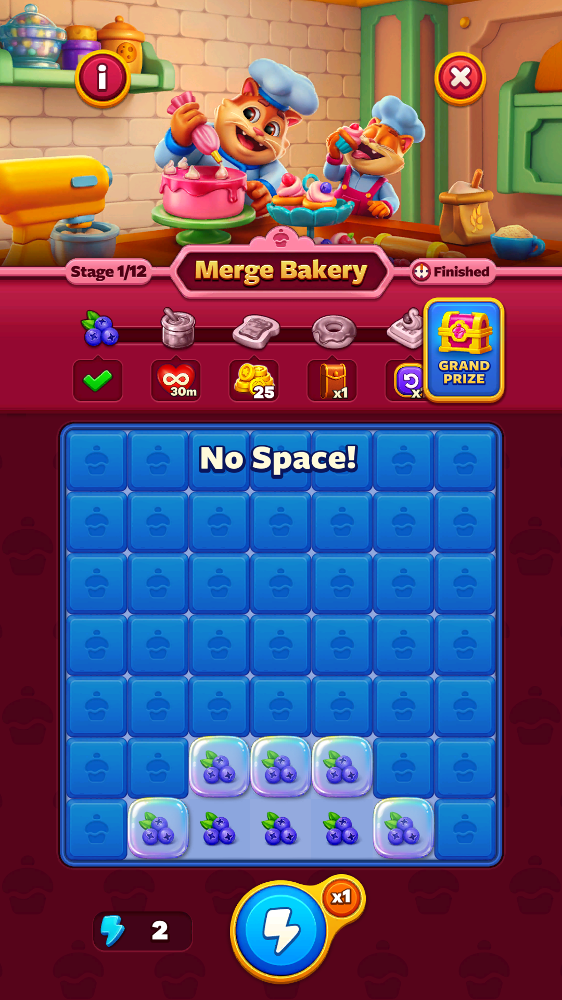
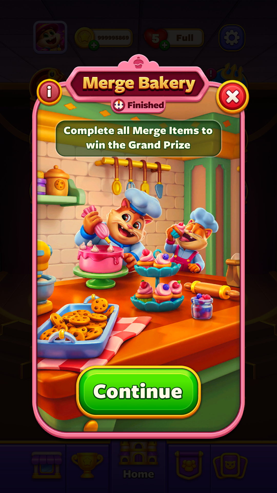

Phát vật khi còn chỗ
Cần cả Energy và ô trống; No Energy và No Space là hai lý do chặn khác nhau.
 Magic Sort GDD Wiki
Magic Sort GDD Wiki
Đổi năng lượng từ level chính thành các quyết định quản lý không gian và chuỗi nâng cấp; vật phẩm cao cấp và quà collectible tạo mục tiêu khác nhau.
6 UC có nhánh liên quan tới case quan sát. Chưa có kết luận toàn bộ tính năng hoặc mọi UC đã pass. Xem bằng chứng và phần còn thiếu.
MergeMiniGameService.IsEligible(): MergeMiniGameConfigModel.IsEnabled && level >= MergeMiniGameConfigModel.FirstLevelToShow. Ngoài ra phải tải xong bundle 'merge_mini_game_bundle' (NeedToDownloadAssets / MergeMiniGameStateService.ShouldDownloadAssets), nếu chưa thì MergeMiniGameStateType.AssetsNotReady (8). Người chơi còn phải bấm tham gia: MergeMiniGameService.JoinEvent() / IsJoined().
Điểm vào:
Đổi năng lượng từ level chính thành các quyết định quản lý không gian và chuỗi nâng cấp; vật phẩm cao cấp và quà collectible tạo mục tiêu khác nhau.
Kiếm Energy → phát vật → merge cặp → giải phóng ô → thu quà/chặng → mở multiplier.
Diễn giải thiết kế từ nguồn đã đối chiếu; outcome là expected, không phải lượt playtest mới. Các giá trị default/native có build riêng, không tự coi đang hiệu lực production.
Bấm máy phát trên bàn 7 × 7.
Điều kiện / luật: Cần cả Energy và ô trống; No Energy và No Space là hai lý do chặn khác nhau.
Kết quả theo đặc tả: Vật cấp thấp được đưa vào một vị trí hợp lệ.
15/11/2026 · Vào event Finished, sinh item và hết chỗKéo hai vật cùng loại và cùng cấp vào nhau.
Điều kiện / luật: Định nghĩa set và level đến từ dữ liệu event; không phải mọi cặp chồng lên nhau đều merge.
Kết quả theo đặc tả: Sinh vật cấp tiếp theo và cập nhật tiến độ của set.
15/11/2026 · Merge cặp và đạt stage 2Tạo ô trống sau một lần merge.
Điều kiện / luật: Scatter Queue giữ sản phẩm phụ khi bàn chưa có chỗ; trạng thái ô đang xử lý được lưu riêng.
Kết quả theo đặc tả: Vật được thả xuống khi đủ điều kiện, không tự mất vì bàn đầy.
Chạm hai lần vào CollectibleItem.
Điều kiện / luật: Quà collectible khác vật nguyên liệu và quà hoàn thành chặng.
Kết quả theo đặc tả: Trao tài nguyên của đúng vật đã thu.
Cần cả Energy và ô trống; No Energy và No Space là hai lý do chặn khác nhau.
Định nghĩa set và level đến từ dữ liệu event; không phải mọi cặp chồng lên nhau đều merge.
Scatter Queue giữ sản phẩm phụ khi bàn chưa có chỗ; trạng thái ô đang xử lý được lưu riêng.
Quà collectible khác vật nguyên liệu và quà hoàn thành chặng.
| Tình huống | Cách xử lý theo nguồn | Căn cứ |
|---|---|---|
| Vì sao No Space không nên chỉ báo No Energy? | Một lỗi thuộc tài nguyên, lỗi kia thuộc không gian bàn; người chơi cần hành động khác nhau để tiếp tục. | Suy luận thiết kế từ cơ chế có nguồn, chưa đo hiệu quả. |
| Điều kiện | Hành vi mong đợi | Phạm vi đã kiểm |
|---|---|---|
| Gián đoạn hoặc kết thúc Merge Bakery | Khi khôi phục cần giữ cả bàn, hàng đợi và ô đang xử lý; chỉ lưu các vật đang nhìn thấy chưa đủ. | Theo source và UC trong dossier; các dependency backend/sync/RNG vẫn cần kiểm riêng. |
Một lỗi thuộc tài nguyên, lỗi kia thuộc không gian bàn; người chơi cần hành động khác nhau để tiếp tục.
Phân tích thiết kế, không phải kết quả đo cohort.
MergeMiniGameStateService.GetEventState() cho ra MergeMiniGameStateType: NoCachedEvent(0) → NotIntroduced(1) → InProgress(2) → TimeIsUp(3) → Claimed(4) → ClaimedAndTimeIsUp(5) → InsufficientLevel(6) → Disable(7) → AssetsNotReady(8). Khi ShouldFetchCurrentEvent() (kiểm tra popup 'MergeMiniGamePopUp' không mở), MergeMiniGameService.FetchCurrentEvent() → MergeMiniGameRemoteService.GetEventInfo(eventType) trả MergeMiniGameEventInfoResponse{EventId, EventType, StartTime, FinishTime, ItemDefinitions, ScatterDefinitions, InitialBoard, Rewards, RewardsWithCollection}. MergeMiniGameDataService.StartNewEvent() gọi BuildItemDefinitions (MergeItemDefinitionModel{MergeItem, ItemsToGenerate, Reward} → MergeMiniGameItemModel{SetId, Level, Type, ItemsToGenerate, Reward}), BuildScatterDefinitions (ScatterDefinitionModel{Level, SetId, Items}) và BuildBoardState (49 MergeMiniGameCellModel{Position, Items}). Kiếm Energy: TryIncreaseEnergyCount(difficulty, isFirstTry) → GetEnergyIncreaseCountByLevelDifficulty chọn NormalLevelEnergyCount / HardLevelEnergyCount / SuperHardLevelEnergyCount × FirstTryMultiplier; Energy là CurrencyType.MergeMiniGameEnergy (21) nên nằm trong InventoryService. Chơi: bấm GeneratorItem (CanTapGeneratorButton kiểm tra đủ Energy và còn ô trống — GetEmptySpaceCount; nếu không thì hiện 'No Energy!' / 'No Space!'); GetItem(setID, level, canProduceScatteredProducts) trả ItemSpawnResult{MergedItemModel, ScatteredByProducts}; IncreaseSpendEnergyCount(amount) cộng TotalSpendEnergy. Merge: SwapItems / SnapItem kéo thả, MergeMiniGameDataService.MergeItems(from, to, itemModel) tạo vật cấp cao hơn; TryIncreaseProgress(setID, level) cập nhật MergeProgress và CurrentStage của set; MergeStuckChecker + MergeHintController gợi ý khi bí. Vật dư từ merge (GetScatteredProducts) vào ScatterQueueCache{ItemQueue, PreviousCount, PendingPopulatedScatterCellIndex}; khi có ô trống TryGetItemFromScatterQueue() thả xuống (NoPendingCell = −1 nghĩa là chưa có ô chờ). Nhận thưởng: OnItemCollected(setId, levelId, cellIndex) khi double-tap CollectibleItem → GiveItemRewardAt(setId, levelId) trao GetItemReward với CurrencyEarnReason.MergeMiniGameCollectibleItem (57); hoàn thành chặng → GetStageReward(stageIndex) với CurrencyEarnReason.MergeMiniGameStageCompleted (58); đạt cấp cao nhất → Grand Prize với CurrencyEarnReason.MergeMiniGameGrandPrize (59). Multiplier: GetUnlockedMultipliers() mở 2x tại Multiplier2xUnlockStage và 4x tại Multiplier4xUnlockStage; ShouldSetMaxMultiplier tự đặt hệ số cao nhất. Hết giờ: IsTimeUp() → nếu AutoOpenEnabledOnFinish thì TryClaimEventAutomatically(); ClaimEvent() bắn merge_event_finished với board_state, current_energy, max_founded_item_id, total_collected_coin_amount, total_collected_energy.
| Nguồn | Điều kiện | Phần thưởng |
|---|---|---|
| CollectibleItem trên bàn | Double-tap vật loại CollectibleItem (2) | Coin unlimited life… theo MergeMiniGameItemModel.Reward (server) — lý do 57 |
| Hoàn thành chặng | Tiến độ chuỗi đạt mốc chặng | Rewards[stageIndex] hoặc RewardsWithCollection[stageIndex] (server) — lý do 58 |
| Grand Prize | Merge tới cấp cao nhất của chuỗi | Phần thưởng lớn nhất của sự kiện (server) — lý do 59 |
| Energy | Thắng level chính và các sự kiện khác | 1 / 2 / 3 Energy theo Regular / Hard / Super Hard |
| Energy khởi điểm | Bấm tham gia sự kiện | 5 Energy (InitialEnergyCount) |
| Độ khó | Khoá cấu hình | Energy |
|---|---|---|
| Regular | NormalLevelEnergyCount | 1 Energy |
| Hard | HardLevelEnergyCount | 2 Energy |
| Super Hard | SuperHardLevelEnergyCount | 3 Energy |
| Thắng ngay lần đầu | FirstTryMultiplier | ×0 (mặc định client chưa cấu hình) |
| Hệ số | Chặng mở khoá | Ghi chú |
|---|---|---|
| 1x | Mặc định | Sinh 1 vật mỗi lần bấm |
| 2x | Chặng 4 (Multiplier2xUnlockStage) | Text 'New Multiplier is available now!' |
| 4x | Chặng 8 (Multiplier4xUnlockStage) | ShouldSetMaxMultiplier tự đặt hệ số cao nhất |
| Giá trị | Loại | Vai trò |
|---|---|---|
| 0 | ProgressItem | Vật phẩm thường merge để lên cấp |
| 1 | GeneratorItem | Máy phát bấm để sinh vật phẩm (tốn Energy) |
| 2 | CollectibleItem | Double-tap để nhận thưởng thật |
| 3 | BubbleItem | Bọc vật phẩm merge ngay cạnh để làm vỡ bọc |
| 4 | BlockItem | Ô khoá merge gần đó để mở khoá |
| Khoá | Giá trị mặc định | Ý nghĩa |
|---|---|---|
| IsEnabled | false | Bật/tắt mini-game |
| EventType | 18 | Loại sự kiện gửi lên GetEventInfo |
| FirstLevelToShow | 100 | Level tối thiểu để mở |
| InitialEnergyCount | 5 | Energy tặng khi tham gia |
| NormalLevelEnergyCount | 1 | Energy khi thắng level Regular |
| HardLevelEnergyCount | 2 | Energy khi thắng level Hard |
| SuperHardLevelEnergyCount | 3 | Energy khi thắng level Super Hard |
| FirstTryMultiplier | 0 | Hệ số nhân khi thắng ngay lần đầu |
| AutoOpenEnabledOnFinish | true | Tự nhận thưởng khi hết giờ |
| AutoOpenEnergyCountBeforeThreshold | 50 | Energy cần để ép mở popup trước ngưỡng |
| AutoOpenEnergyCountAfterThreshold | 100 | Energy cần để ép mở popup sau ngưỡng |
| AutoOpenEnergyCountThreshold | 9 | Mốc tiến độ đổi ngưỡng ép mở |
| Multiplier2xUnlockStage | 4 | Chặng mở hệ số 2x |
| Multiplier4xUnlockStage | 8 | Chặng mở hệ số 4x |
| ForceOpenCount | 2 | Số lần tối đa được ép mở popup |
| FirstStageToShowNewItemFound | 5 | Chặng bắt đầu hiện popup 'New Item Found!' |
| Giá trị | Trạng thái | Ý nghĩa |
|---|---|---|
| 0 | NoCachedEvent | Chưa có cache sự kiện |
| 1 | NotIntroduced | Chưa xem giới thiệu |
| 2 | InProgress | Đang chạy |
| 3 | TimeIsUp | Hết giờ |
| 4 | Claimed | Đã nhận thưởng |
| 5 | ClaimedAndTimeIsUp | Đã nhận và đã hết giờ |
| 6 | InsufficientLevel | Level dưới FirstLevelToShow |
| 7 | Disable | Server tắt tính năng |
| 8 | AssetsNotReady | Chưa tải xong bundle |
| Giá trị | Bước | Nội dung |
|---|---|---|
| 0 | GeneratorButtonTutorial | 'Tap to Generator Button to spawn items!' |
| 1 | MergeItemTutorial | 'Merge 2 items to upgrade!' |
| 2 | EventInfoTutorial | Giới thiệu sự kiện lúc bắt đầu |
| 3 | GeneratorItemTutorial | 'Tap to spawn items' |
| 4 | RewardedTutorial | 3 bước MergeMiniGameRewardedInfoStep1..3 |
| 5 | BubbleTutorial | 'Uncover bubble item by merging it!' |
| Giá trị | Lý do | Ghi chú |
|---|---|---|
| 0 | None | - |
| 1 | NotIntroduced | Chưa từng xem sự kiện |
| 2 | Finished | Sự kiện vừa kết thúc |
| 3 | EnoughEnergy | Đã tích đủ Energy theo ngưỡng auto-open |
| Ngữ cảnh | Phần thưởng | Evidence |
|---|---|---|
| CollectibleItem trên bàn | MergeMiniGameItemModel.Reward (coin unlimited life…) — CurrencyEarnReason.MergeMiniGameCollectibleItem (57) | MergeMiniGameService.GetItemReward; MergeMiniGameService.GiveItemRewardAt |
| Hoàn thành chặng | MergeMiniGameCacheModel.Rewards[stageIndex] / RewardsWithCollection[stageIndex] — CurrencyEarnReason.MergeMiniGameStageCompleted (58) | MergeMiniGameService.GetStageReward |
| Grand Prize | Phần thưởng lớn nhất khi merge tới cấp cuối — CurrencyEarnReason.MergeMiniGameGrandPrize (59) | MergeMiniGameService.GiveGrandPrizeRewardInQueue |
| Energy | CurrencyType.MergeMiniGameEnergy (21) từ level chính và các sự kiện khác | MergeMiniGameService.TryIncreaseEnergyCount |
| Chỉ số | Giá trị | Nguồn |
|---|---|---|
| Số ô trên bàn | 49 (0x31, bàn 7×7) | MergeMiniGameDataService.CellCount |
| Số chuỗi vật phẩm tối đa | 5 | MergeMiniGameDataService.SetCount |
| Level mở khoá | 100 | MergeMiniGameConfigModel.json: FirstLevelToShow |
| Loại sự kiện | EventType = 18 | MergeMiniGameConfigModel.json |
| Bật/tắt mặc định | IsEnabled = false | MergeMiniGameConfigModel.json |
| Energy khởi điểm | 5 | MergeMiniGameConfigModel.json: InitialEnergyCount |
| Energy theo độ khó | 1 / 2 / 3 (Regular / Hard / Super Hard) | MergeMiniGameConfigModel.json |
| Hệ số first-try | 0 (mặc định client) | MergeMiniGameConfigModel.json: FirstTryMultiplier |
| Ngưỡng Energy ép mở popup | 50 trước ngưỡng, 100 sau ngưỡng | AutoOpenEnergyCountBeforeThreshold / AfterThreshold |
| Mốc đổi ngưỡng ép mở | 9 | MergeMiniGameConfigModel.json: AutoOpenEnergyCountThreshold |
| Số lần tối đa ép mở popup | 2 | MergeMiniGameConfigModel.json: ForceOpenCount |
| Chặng mở hệ số 2x / 4x | 4 / 8 | Multiplier2xUnlockStage / Multiplier4xUnlockStage |
| Chặng bắt đầu hiện 'New Item Found!' | 5 | FirstStageToShowNewItemFound |
| Tự nhận thưởng khi hết giờ | true | AutoOpenEnabledOnFinish |
| Loại tiền tệ Energy | CurrencyType.MergeMiniGameEnergy = 21 (analytics 'merge_energy') | Modules.Contexts.Application.Inventory.Scripts.CurrencyType |
| Lý do nhận thưởng | CollectibleItem = 57, StageCompleted = 58, GrandPrize = 59 | CurrencyEarnReason |
| Số loại vật phẩm trên bàn | 5 | MergeMiniGameItemType |
| Số trạng thái sự kiện | 9 (0–8) | MergeMiniGameStateType |
| Số bước tutorial | 6 | MergeTutorialType |
| Giá trị đánh dấu không có ô chờ | −1 | MergeMiniGameService.NoPendingCell |
| Asset bundle | "merge_mini_game_bundle" | MergeMiniGameService.Initialize |
| Định dạng readable event id | "mb_{0}_{1:yyyyMMdd}" (fallback "mb_unknown_data") | MergeMiniGameService.GetReadableEventId |
| Khoá lưu/đồng bộ | "MergeMiniGameModel" | MergeMiniGameDataService.GetSyncName |
Đặc tả UC mô tả hành vi theo nguồn. Kết quả mong đợi không phải kết quả đã chạy; case quan sát được liên kết riêng ở từng UC.
Bấm vào từng use case để mở. Mở/đóng tất cả
Chưa có case trực tiếp trong hai lượt review 15–16/11.
Các bước| Actor | System |
|---|---|
| Trigger | Khởi động / IntervalUpdate |
| Điều kiện | Có remote config |
| Kết quả mong đợi theo nguồn | Icon lobby chỉ hiện khi đủ điều kiện và đủ tài nguyên |
| Quy tắc / số liệu | MergeMiniGameStateType: NoCachedEvent=0, NotIntroduced=1, InProgress=2, TimeIsUp=3, Claimed=4, ClaimedAndTimeIsUp=5, InsufficientLevel=6, Disable=7, AssetsNotReady=8 |
| Bằng chứng đặc tả | MergeMiniGameService.Initialize; MergeMiniGameService.IsEligible; MergeMiniGameService.NeedToDownloadAssets; MergeMiniGameStateService.ShouldDownloadAssets; MergeMiniGameService.CheckAndResolveAssetDependency |
Có bằng chứng một số nhánh; chưa full UC pass.
15/11/2026 · Vào event Finished, sinh item và hết chỗCác bước| Actor | System |
|---|---|
| Trigger | MergeMiniGameStateService.ShouldStartNewEvent() == true |
| Điều kiện | Không có popup 'MergeMiniGamePopUp' đang mở |
| Kết quả mong đợi theo nguồn | Bàn merge sẵn sàng với vật phẩm khởi đầu do server đặt |
| Quy tắc / số liệu | GetReadableEventId() = 'mb_{0}_{1:yyyyMMdd}' (fallback 'mb_unknown_data'); MergeMiniGameDataService.SetCount = 5 (tối đa 5 set/chuỗi vật phẩm) |
| Bằng chứng đặc tả | MergeMiniGameService.FetchCurrentEvent; MergeMiniGameService.TryStartNewEvent; MergeMiniGameDataService.StartNewEvent; MergeMiniGameDataService.BuildItemDefinitions; MergeMiniGameDataService.BuildScatterDefinitions; MergeMiniGameDataService.BuildBoardState; MergeMiniGameService.GetReadableEventId |
Chưa có case trực tiếp trong hai lượt review 15–16/11.
Các bước| Actor | Player |
|---|---|
| Trigger | Bấm nút tham gia trong popup giới thiệu |
| Điều kiện | MergeMiniGameService.IsJoined() == false |
| Kết quả mong đợi theo nguồn | Người chơi vào bàn với Energy khởi điểm |
| Quy tắc / số liệu | MergeMiniGameConfigModel.InitialEnergyCount là Energy tặng khi bắt đầu |
| Bằng chứng đặc tả | MergeMiniGameService.JoinEvent; MergeMiniGameService.IsJoined; MergeMiniGameService.ShouldShowPopupAfterJoin; MergeMiniGameDataService.JoinEvent |
Chưa có case trực tiếp trong hai lượt review 15–16/11.
Các bước| Actor | Player |
|---|---|
| Trigger | Thắng một level |
| Điều kiện | MergeMiniGameService.IsEventActive() == true |
| Kết quả mong đợi theo nguồn | Energy tăng; text UI MergeMiniGameInfoStep1 'Win energy from events and levels!' |
| Quy tắc / số liệu | Energy dùng chung hệ tiền tệ nên có thể nhận từ Magic Pass, Mini Game… (analytics key 'merge_energy') |
| Bằng chứng đặc tả | MergeMiniGameService.TryIncreaseEnergyCount; MergeMiniGameService.GetEnergyIncreaseCountByLevelDifficulty; MergeMiniGameService.GetEnergyCount; MergeMiniGameService.ShouldShowCollectibleEarnAnimationOnLobbyReturn |
Có bằng chứng một số nhánh; chưa full UC pass.
15/11/2026 · Vào event Finished, sinh item và hết chỗCác bước| Actor | Player |
|---|---|
| Trigger | Bấm GeneratorItem trên bàn |
| Điều kiện | MergeMiniGameService.CanTapGeneratorButton() == true |
| Kết quả mong đợi theo nguồn | Vật phẩm mới xuất hiện trên bàn, Energy giảm |
| Quy tắc / số liệu | MergeMiniGameItemType: ProgressItem=0, GeneratorItem=1, CollectibleItem=2, BubbleItem=3, BlockItem=4 |
| Bằng chứng đặc tả | MergeMiniGameService.CanTapGeneratorButton; MergeMiniGameService.GetItem; MergeMiniGameService.GetEmptySpaceCount; MergeMiniGameService.IncreaseSpendEnergyCount; MergeMiniGameService.PlaceItemInData; MergeMiniGameService.GetMultiplier |
Có bằng chứng một số nhánh; chưa full UC pass.
15/11/2026 · Merge cặp và đạt stage 2Các bước| Actor | Player |
|---|---|
| Trigger | Kéo một vật lên vật cùng loại cùng cấp |
| Điều kiện | Hai vật cùng SetId và Level, chưa ở cấp tối đa |
| Kết quả mong đợi theo nguồn | Vật nâng cấp, tiến độ chuỗi tăng, có thể sinh vật phụ vào Scatter Queue |
| Quy tắc / số liệu | MergeStuckChecker phát hiện bí nước; MergeHintController gợi ý cặp có thể merge; text hướng dẫn MergeTutorialItem 'Merge 2 items to upgrade!' |
| Bằng chứng đặc tả | MergeMiniGameService.SwapItems; MergeMiniGameService.SnapItem; MergeMiniGameDataService.MergeItems; MergeMiniGameService.TryIncreaseProgress; MergeMiniGameService.GetScatteredProducts; MergeMiniGameService.IsItemInMaxLevel; MergeMiniGameService.GetFirstStageToShowNewItemFound |
Chưa có case trực tiếp trong hai lượt review 15–16/11.
Các bước| Actor | System |
|---|---|
| Trigger | Merge sinh vật phụ nhưng bàn đầy |
| Điều kiện | - |
| Kết quả mong đợi theo nguồn | Không mất vật phụ khi bàn đầy; khay hàng đợi hiện số vật đang chờ |
| Quy tắc / số liệu | ScatterQueueCache lưu trong cache nên hàng đợi tồn tại qua các phiên chơi |
| Bằng chứng đặc tả | MergeMiniGameService.AddToScatterQueue; MergeMiniGameService.TryGetItemFromScatterQueue; MergeMiniGameService.AddPendingPopulatedScatterCell; MergeMiniGameService.ConsumePendingPopulatedScatterCellIndex; MergeMiniGameService.GetScatterQueueCount; MergeMiniGameService.DoesNextScatterQueueItemHaveBubble |
Chưa có case trực tiếp trong hai lượt review 15–16/11.
Các bước| Actor | Player |
|---|---|
| Trigger | Merge cạnh BubbleItem / BlockItem |
| Điều kiện | - |
| Kết quả mong đợi theo nguồn | Mở thêm không gian và vật phẩm ẩn trên bàn |
| Quy tắc / số liệu | MergeMiniGameItemType.BubbleItem = 3, BlockItem = 4 |
| Bằng chứng đặc tả | MergeMiniGameService.ShouldShowBubbleTutorial; MergeMiniGameService.BubbleTutorialCompleted; Modules.Contexts.Home.MergeMiniGame.Scripts.Board.BubbleItem; Modules.Contexts.Home.MergeMiniGame.Scripts.Board.Items.BlockItem |
Chưa có case trực tiếp trong hai lượt review 15–16/11.
Các bước| Actor | Player |
|---|---|
| Trigger | Double-tap vào một CollectibleItem trên bàn |
| Điều kiện | Vật là MergeMiniGameItemType.CollectibleItem (2) |
| Kết quả mong đợi theo nguồn | Nhận coin / unlimited life thật vào tài khoản |
| Quy tắc / số liệu | Chuỗi reward item cũng merge được: MergeMiniGameRewardedInfoStep2 'Merge reward items to unlock bigger rewards!'; Step3 'Double-tap to claim your rewards!' |
| Bằng chứng đặc tả | MergeMiniGameService.OnItemCollected; MergeMiniGameService.GiveItemRewardAt; MergeMiniGameService.GetItemReward; MergeMiniGameService.IncreaseTotalCollectedCoinOrUnlimitedLifeAmount; MergeMiniGameService.GiveCollectibleRewardInQueue |
Có bằng chứng một số nhánh; chưa full UC pass.
15/11/2026 · Merge cặp và đạt stage 215/11/2026 · Stay/quit event hết giờ và claim thưởng local15/11/2026 · Claim Merge được giữ qua restartCác bước| Actor | System |
|---|---|
| Trigger | Tiến độ chuỗi đạt mốc chặng |
| Điều kiện | - |
| Kết quả mong đợi theo nguồn | Nhận thưởng chặng, mở nội dung chặng kế |
| Quy tắc / số liệu | GetTotalStageCount() = số chặng; MergeMiniGameCacheModel.MergeProgress và LastShownStage là List<int> theo từng set (tối đa SetCount = 5) |
| Bằng chứng đặc tả | MergeMiniGameService.GetStageReward; MergeMiniGameService.GetStageRewards; MergeMiniGameService.ShouldPlayRewardAnimation; MergeMiniGameService.MarkRewardAnimationShown; MergeMiniGameDataService.SetLastShownStage; MergeMiniGameService.GetTotalStageCount |
Chưa có case trực tiếp trong hai lượt review 15–16/11.
Các bước| Actor | System |
|---|---|
| Trigger | Đạt chặng Multiplier2xUnlockStage hoặc Multiplier4xUnlockStage |
| Điều kiện | - |
| Kết quả mong đợi theo nguồn | Bấm máy phát một lần sinh nhiều vật, tiết kiệm thao tác |
| Quy tắc / số liệu | Multiplier lưu trong MergeMiniGameCacheModel.Multiplier |
| Bằng chứng đặc tả | MergeMiniGameService.GetUnlockedMultipliers; MergeMiniGameService.SetMultiplier; MergeMiniGameService.GetMultiplierForUI; MergeMiniGameConfigModel.Multiplier2xUnlockStage; MergeMiniGameConfigModel.ShouldSetMaxMultiplier |
Chưa có case trực tiếp trong hai lượt review 15–16/11.
Các bước| Actor | Player |
|---|---|
| Trigger | Merge tới cấp cuối cùng của chuỗi |
| Điều kiện | MergeMiniGameService.HasReachedFinalStage() == true |
| Kết quả mong đợi theo nguồn | Sự kiện hoàn thành, nhận thưởng lớn nhất |
| Quy tắc / số liệu | Sau đó ClaimEvent() đóng sự kiện |
| Bằng chứng đặc tả | MergeMiniGameService.HasReachedFinalStage; MergeMiniGameService.HasGrandPrizeRewardInQueue; MergeMiniGameService.GiveGrandPrizeRewardInQueue; MergeMiniGameService.IsItemInMaxLevel |
Có bằng chứng một số nhánh; chưa full UC pass.
15/11/2026 · Stay/quit event hết giờ và claim thưởng local15/11/2026 · Claim Merge được giữ qua restartCác bước| Actor | System |
|---|---|
| Trigger | MergeMiniGameService.IsTimeUp() == true |
| Điều kiện | - |
| Kết quả mong đợi theo nguồn | Sự kiện đóng, thưởng đã đạt được trao hết, bàn xoá |
| Quy tắc / số liệu | MergeAreYouSureText 'You will lose your energy if you quit!' cảnh báo trước khi thoát khi còn Energy |
| Bằng chứng đặc tả | MergeMiniGameService.IsTimeUp; MergeMiniGameService.OnEventStateChanged; MergeMiniGameService.TryClaimEventAutomatically; MergeMiniGameService.ClaimEvent; MergeMiniGameService.ClearBoard; MergeMiniGameShowEventFailedCommand |
Chưa có case trực tiếp trong hai lượt review 15–16/11.
Các bước| Actor | System |
|---|---|
| Trigger | Về Home |
| Điều kiện | MergeMiniGameService.ShouldShowForceOpenPopUp(out reason) == true |
| Kết quả mong đợi theo nguồn | Người chơi được kéo vào chơi khi đã tích đủ Energy, nhưng có giới hạn số lần ép |
| Quy tắc / số liệu | Ngưỡng Energy đổi theo tiến độ: trước ngưỡng dùng AutoOpenEnergyCountBeforeThreshold, sau ngưỡng dùng AutoOpenEnergyCountAfterThreshold |
| Bằng chứng đặc tả | MergeMiniGameService.ShouldShowForceOpenPopUp; MergeMiniGameService.HasEnoughEnergyToForce; MergeMiniGameService.TryIncreaseForceOpenCount; MergeMiniGameService.MarkEventForceOpened; MergeMiniGameDataService.IncreaseForceOpenCount |
Chưa có case trực tiếp trong hai lượt review 15–16/11.
Các bước| Actor | System |
|---|---|
| Trigger | Lần đầu gặp từng cơ chế |
| Điều kiện | Cờ tutorial tương ứng chưa bật |
| Kết quả mong đợi theo nguồn | Người chơi được dạy từng cơ chế đúng lúc gặp |
| Quy tắc / số liệu | Cờ lưu trong MergeMiniGameModel: EventStartTutorialCompleted, GeneratorItemTutorialCompleted, RewardedTutorialCompleted, BubbleTutorialCompleted (lifetime, không reset theo mùa) |
| Bằng chứng đặc tả | MergeMiniGameService.ShouldShowEventStartTutorial; MergeMiniGameService.ShouldShowGeneratorItemTutorial; MergeMiniGameService.ShouldShowRewardedTutorial; MergeMiniGameService.ShouldShowBubbleTutorial; MergeMiniGameDataService.SetRewardedTutorialCompleted |

Chưa có case trực tiếp trong hai lượt review 15–16/11.
Các bước| Actor | Player |
|---|---|
| Trigger | Bấm ItemInfoButton trên bàn |
| Điều kiện | - |
| Kết quả mong đợi theo nguồn | Người chơi biết còn bao nhiêu cấp tới Grand Prize |
| Quy tắc / số liệu | MergeItemSpriteConfig.sets là danh sách MergeItemSet{SetId, Entries} với MergeItemViewSetData{Level, Renderer} |
| Bằng chứng đặc tả | MergeMiniGameService.GetChainPopupViewModel; MergeMiniGameService.GetItemViewModel; MergeItemChainPopUp; MergeItemSpriteConfig |
Có bằng chứng một số nhánh; chưa full UC pass.
15/11/2026 · Claim Merge được giữ qua restartCác bước| Actor | System |
|---|---|
| Trigger | Thoát/vào lại game, SyncService |
| Điều kiện | - |
| Kết quả mong đợi theo nguồn | Bàn merge giữ nguyên qua các phiên và giữa các thiết bị |
| Quy tắc / số liệu | RemoveItemsAt / RemoveItemAt log 'Cell {0} not found' khi index sai |
| Bằng chứng đặc tả | MergeMiniGameDataService.GetSyncName; MergeMiniGameDataService.SerializeModelForSync; MergeMiniGameDataService.LateUpdate; MergeMiniGameService.GetBoardState; MergeMiniGameDataService.ClearBoard |
Case ghi lại một chuỗi thao tác và phạm vi quan sát. Các bước chưa chạy và hợp đồng server vẫn giữ trạng thái riêng.
15/11/2026 · build 0.0.3129 ARM64 · fixture offline · quan sát nhánh
Điều kiện: App 0.0.3129 ARM64, UID offline, tài nguyên fixture có sẵn; level 351 rồi 352. Nguồn code 0.0.3063 được phân biệt riêng.
Giữ cờ claim và thời hạn thưởng; không cộng lại.
isClaimed vẫn true; limitlessLifeEnd giữ 15:42:14.400145 UTC; không xuất hiện icon/claim Merge lần nữa.
Giới hạn: Chỉ một lần restart local; không kiểm tra khôi phục server, reinstall hoặc claim trên hai thiết bị.


15/11/2026 · build 0.0.3129 ARM64 · fixture offline · quan sát nhánh
Điều kiện: 0.0.3129 ARM64, level 351, offline UID, instance cache cũ và tài nguyên fixture.
Ghi nhận cảnh báo và thời điểm áp phần thưởng.
X cảnh báo mất energy; Stay giữ2; Quit hiện Time’s Up. Sau Continue hiện Merge Stage Rewards30m. Claim làm isClaimed=true và limitlessLifeEnd=15:42:14UTC, Home29:58. Energy trong model vẫn2, không chứng minh bị xóa dù lời cảnh báo nói mất.
Giới hạn: Chỉ nhánh cache expired offline; chưa backend, reset kỳ mới, mọi phần thưởng hoặc chống claim lặp sau restart. Reward list14 phần tử không tự đồng nghĩa12 stage UI.


 30 phút mạng vô hạn trước bước Claim.15/11/2026 · 0.0.3129 · fixture offline · EVT15_merge_finalMô tả trạng thái hoặc bước nhìn thấy trong ảnh và ngữ cảnh case; không nâng preview, cache hay lỗi thành grant, online hoặc full UC pass.
30 phút mạng vô hạn trước bước Claim.15/11/2026 · 0.0.3129 · fixture offline · EVT15_merge_finalMô tả trạng thái hoặc bước nhìn thấy trong ảnh và ngữ cảnh case; không nâng preview, cache hay lỗi thành grant, online hoặc full UC pass.15/11/2026 · build 0.0.3129 ARM64 · fixture offline · quan sát nhánh
Điều kiện: 0.0.3129 ARM64, level 351, offline UID, instance cache cũ và tài nguyên fixture.
Cặp cùng loại nâng cấp, tiến độ stage và thưởng được ghi đúng.
Hai blueberry thành hũ level 2; UIStage2/12, mergeProgress[1,0,0,0,0]→[2,0,0,0,0]; energy giữ2. Icon30m hoàn tất nhưng limitless end chưa tăng ngay.
Giới hạn: Mới thử một cặp; chưa kiểm tra mọi chain, item khác loại, multiplier hay Grand Prize.


15/11/2026 · build 0.0.3129 ARM64 · fixture offline · quan sát nhánh
Điều kiện: 0.0.3129 ARM64, level 351, offline UID, instance cache cũ và tài nguyên fixture.
Energy chỉ tiêu khi sinh item được.
Bàn hiển thịStage1/12, energy5. Lần đầu5→4; sinh thêm hai item tới2. Các lần khi đầy không giảm dưới2, hiện No Space. totalSpendEnergy0→1→3 rồi giữ3.
Giới hạn: Các file EVT09_merge_zero và EVT10_merge_noenergy thực tế là hết chỗ, không phải0energy. Không chứng minh biên hết energy hoặc event đang chạy production.



Chưa có case vòng 2 cho feature này. Nếu bàn vẫn mở được, chọn item và info chain, xem tier trước/sau/locked; mở bubble info hoặc multiplier preview nếu có và cancel.
UC chưa có case: UC-01 UC-03 UC-04 UC-07 UC-08 UC-09 UC-11 UC-12 UC-14 UC-15 UC-16
Số chặng thật (GetTotalStageCount) phụ thuộc dữ liệu server.
UI1/12 khác14 reward-config entry; trace GetTotalStageCount với normal/collection active, không đồng nhất counts.
Hồ sơ đầy đủ và trạng thái từng nhánh · Báo cáo đối soát 58 mục
2 ảnh chụp trong game (LDPlayer, bản 0.0.3129, tài khoản thử level 321 → 351 (07/10/2026)). Bấm ảnh để phóng to; ảnh chụp lịch sử mở PNG gốc. Nhãn UC dẫn tới use case tương ứng.
Định nghĩa event và hệ số nhân: Đổi chuỗi vật, bàn khởi đầu và mức tiêu Energy.
| Trục phân nhóm | Điều kiện chọn | Tác động thiết kế | Mức bằng chứng |
|---|---|---|---|
| Định nghĩa event và hệ số nhân | Response định nghĩa board, item và scatter; tiến độ chặng mở hệ số 2x hoặc 4x. | Đổi chuỗi vật, bàn khởi đầu và mức tiêu Energy. | Hệ số nhân là lựa chọn tiêu năng lượng; chưa có bằng chứng phân bổ A/B giữa người chơi. |
Assignment của tài khoản, tỷ lệ traffic và uplift: chưa được xác minh. Reward bucket, phân khúc thương mại và A/B experiment được phân biệt theo nguồn.
Tải tất cả dòng liên quan của feature · Registry 345 dòng nguồn duy nhất
Bản mặc định đóng gói trong APK 0.0.3129. Đây là dữ liệu có kiểu đầy đủ; config thực được server chọn cho một tài khoản là phạm vi khác.
| Đường dẫn | Kiểu | Giá trị |
|---|---|---|
| $.IsEnabled | boolean | false |
| $.EventType | number | 18 |
| $.FirstLevelToShow | number | 100 |
| $.InitialEnergyCount | number | 5 |
| $.NormalLevelEnergyCount | number | 1 |
| $.HardLevelEnergyCount | number | 2 |
| $.SuperHardLevelEnergyCount | number | 3 |
| $.AutoOpenEnabledOnFinish | boolean | true |
| $.FirstTryMultiplier | number | 0 |
| $.AutoOpenEnergyCountBeforeThreshold | number | 50 |
| $.AutoOpenEnergyCountAfterThreshold | number | 100 |
| $.AutoOpenEnergyCountThreshold | number | 9 |
| $.Multiplier2xUnlockStage | number | 4 |
| $.Multiplier4xUnlockStage | number | 8 |
| $.ForceOpenCount | number | 2 |
| $.FirstStageToShowNewItemFound | number | 5 |
Bảng nền có thể chứa preview giới hạn đã ghi nhãn. Model mặc định đầy đủ có kiểu ở trên; trường không có trong model giữ nguồn và trạng thái riêng.
Gộp mọi nguồn: const trong code, JSON mặc định trong Resources, bảng static, storage key, AB test, cờ server.
| Nguồn | Key | Kiểu | Giá trị | Ý nghĩa | Nơi định nghĩa |
|---|---|---|---|---|---|
| code const | MergeMiniGameDataService.CellCount | int | 0x31 = 49 (bàn 7×7) | Số ô trên bàn merge | MergeMiniGameDataService..ctor (pseudo-C) |
| code const | MergeMiniGameDataService.SetCount | int | 5 | Số chuỗi (set) vật phẩm tối đa | MergeMiniGameDataService |
| code const | MergeMiniGameService.NoPendingCell | int | -1 | Giá trị đánh dấu không có ô nào đang chờ thả vật từ Scatter Queue | MergeMiniGameService |
| code const | Bundle id | string | "merge_mini_game_bundle" | Asset bundle của mini-game | MergeMiniGameService.Initialize |
| code const | readable event id | string | "mb_{0}_{1:yyyyMMdd}" (fallback "mb_unknown_data") | Id dễ đọc cho analytics | MergeMiniGameService.GetReadableEventId |
| code const | MergeMiniGameItemType | enum | ProgressItem=0, GeneratorItem=1, CollectibleItem=2, BubbleItem=3, BlockItem=4 | 5 loại vật phẩm trên bàn | Modules.Contexts.Home.MergeMiniGame.Scripts.MergeMiniGameItemType |
| code const | MergeMiniGameStateType | enum | NoCachedEvent=0, NotIntroduced=1, InProgress=2, TimeIsUp=3, Claimed=4, ClaimedAndTimeIsUp=5, InsufficientLevel=6, Disable=7, AssetsNotReady=8 | Máy trạng thái | MergeMiniGameStateService.GetEventState |
| code const | MergeMiniGameForceOpenReason | enum | None=0, NotIntroduced=1, Finished=2, EnoughEnergy=3 | Lý do ép mở popup | MergeMiniGameService.ShouldShowForceOpenPopUp |
| code const | MergeTutorialType | enum | GeneratorButtonTutorial=0, MergeItemTutorial=1, EventInfoTutorial=2, GeneratorItemTutorial=3, RewardedTutorial=4, BubbleTutorial=5 | 6 bước hướng dẫn | Modules.Contexts.Home.MergeMiniGame.Scripts.UI.Tutorial.MergeTutorialType |
| code const | MergeMiniGamePopUpImpressionSource / MergeMiniGameInfoPopUpImpressionSource | enum | LobbyButton=0, Force=1 / InfoButton=0, Force=1 | Nguồn mở popup | Modules.Contexts.Home.MergeMiniGame.Scripts.UI |
| code const | CurrencyType.MergeMiniGameEnergy | enum | 21 | Energy là một loại tiền tệ trong InventoryService (analytics key 'merge_energy') | Modules.Contexts.Application.Inventory.Scripts.CurrencyType |
| code const | CurrencyEarnReason | enum | MergeMiniGameCollectibleItem=57, MergeMiniGameStageCompleted=58, MergeMiniGameGrandPrize=59 | Ba nguồn thưởng của mini-game | Modules.Contexts.Application.Inventory.Scripts.CurrencyEarnReason |
| server info | MergeMiniGameConfigModel.IsEnabled / EventType / FirstLevelToShow | bool/int | server | Bật tắt, loại sự kiện, level mở khoá | RemoteConfigs → MergeMiniGameConfigModel |
| Default/code0.0.3063 and historical caches20260910/20261010; per-snapshot source/hash in snapshot_values; not effective-runtime proof | MergeMiniGameConfigModel.InitialEnergyCount | int | default_0.0.3063: 5; cache_20260910: 5; cache_20261010: 5; firebase_20260910: 5 | Energy tặng khi tham gia [15/11: giá trị theo snapshot cụ thể; thiếu field khác với false/0. Không xác nhận assignment hoặc effective runtime.] | MergeMiniGameService.JoinEvent |
| server info | MergeMiniGameConfigModel.NormalLevelEnergyCount / HardLevelEnergyCount / SuperHardLevelEnergyCount / FirstTryMultiplier | int | server | Energy nhận theo độ khó level và hệ số first-try | MergeMiniGameService.GetEnergyIncreaseCountByLevelDifficulty |
| server info | MergeMiniGameConfigModel.AutoOpenEnergyCountBeforeThreshold / AutoOpenEnergyCountAfterThreshold / AutoOpenEnergyCountThreshold | int | server | Ngưỡng Energy để tự mở popup, khác nhau trước/sau mốc tiến độ | MergeMiniGameService.HasEnoughEnergyToForce |
| Default/code0.0.3063 and historical caches20260910/20261010; per-snapshot source/hash in snapshot_values; not effective-runtime proof | MergeMiniGameConfigModel.ForceOpenCount | int | default_0.0.3063: 2; cache_20260910: 10; cache_20261010: 10; firebase_20260910: 10 | Số lần tối đa được ép mở popup [15/11: giá trị theo snapshot cụ thể; thiếu field khác với false/0. Không xác nhận assignment hoặc effective runtime.] | MergeMiniGameService.TryIncreaseForceOpenCount |
| server info | MergeMiniGameConfigModel.Multiplier2xUnlockStage / Multiplier4xUnlockStage / ShouldSetMaxMultiplier | int/bool | server | Chặng mở khoá hệ số nhân và có tự đặt hệ số cao nhất không | MergeMiniGameService.GetUnlockedMultipliers |
| Default/code0.0.3063 and historical caches20260910/20261010; per-snapshot source/hash in snapshot_values; not effective-runtime proof | MergeMiniGameConfigModel.AutoOpenEnabledOnFinish | bool | default_0.0.3063: true; cache_20260910: true; cache_20261010: true; firebase_20260910: true | Tự nhận thưởng khi hết giờ [15/11: giá trị theo snapshot cụ thể; thiếu field khác với false/0. Không xác nhận assignment hoặc effective runtime.] | MergeMiniGameService.ShouldClaimEventAutomatically |
| Default/code0.0.3063 and historical caches20260910/20261010; per-snapshot source/hash in snapshot_values; not effective-runtime proof | MergeMiniGameConfigModel.FirstStageToShowNewItemFound | int | default_0.0.3063: 5; cache_20260910: 5; cache_20261010: 5; firebase_20260910: 5 | Từ chặng nào bắt đầu hiện popup 'New Item Found!' [15/11: giá trị theo snapshot cụ thể; thiếu field khác với false/0. Không xác nhận assignment hoặc effective runtime.] | MergeMiniGameService.GetFirstStageToShowNewItemFound |
| server info | MergeMiniGameEventInfoResponse.ItemDefinitions | List<MergeItemDefinitionModel{MergeItem, ItemsToGenerate, Reward}> | server | Toàn bộ chuỗi vật phẩm: cấp nào sinh ra gì, cấp nào cho thưởng gì | MergeMiniGameDataService.BuildItemDefinitions |
| server info | MergeMiniGameEventInfoResponse.ScatterDefinitions | List<ScatterDefinitionModel{Level, SetId, Items}> | server | Vật phụ sinh ra khi merge lên từng cấp | MergeMiniGameDataService.BuildScatterDefinitions |
| server info | MergeMiniGameEventInfoResponse.InitialBoard | board | server | Bố cục vật phẩm ban đầu trên 49 ô | MergeMiniGameDataService.BuildBoardState |
| server info | MergeMiniGameEventInfoResponse.Rewards / RewardsWithCollection | List<RewardModel> | server | Thưởng theo chặng, có biến thể khi Collection đang chạy | MergeMiniGameService.GetStageReward |
| storage key | MergeMiniGameModel | sync name | "MergeMiniGameModel" | Tên bản ghi lưu/đồng bộ | MergeMiniGameDataService.GetSyncName |
| storage key | MergeMiniGameModel.IsEventIntroducedEverInLifeTime / EventStartTutorialCompleted / GeneratorItemTutorialCompleted / RewardedTutorialCompleted / BubbleTutorialCompleted | bool | client (lifetime) | Cờ tutorial cả đời tài khoản | MergeMiniGameModel |
| storage key | MergeMiniGameCacheModel.EventId / EventType / StartTime / FinishTime / IsClaimed / IsJoined / IsIntroduced | object | client cache | Trạng thái mùa hiện tại | MergeMiniGameCacheModel |
| storage key | MergeMiniGameCacheModel.BoardState / ScatterQueue / ItemDefinitions / ScatterDefinitions | object | client cache | Toàn bộ bàn chơi và hàng đợi | MergeMiniGameCacheModel |
| storage key | MergeMiniGameCacheModel.MergeProgress / LastShownStage / Multiplier / LastEnergyIncreaseCount / ForceOpenCount / TotalSpendEnergy / TotalCollectedCoinAmount | object | client cache | Tiến độ, hệ số, thống kê | MergeMiniGameCacheModel |
| storage key | ScatterQueueCache.ItemQueue / PreviousCount / PendingPopulatedScatterCellIndex | object | client cache | Hàng đợi vật phụ | ScatterQueueCache |
| asset | MergeItemSpriteConfig (sets, energyCurrencyRenderer, coinCurrencyRenderer) | ScriptableObject | asset | Sprite từng cấp của từng set và icon tiền tệ | Modules.Contexts.Home.MergeMiniGame.Scripts.UI.MergeItemSpriteConfig |
| asset | MergeMiniGameAnimationConfig / MergeMiniGameAnimationConfig2 / MergeMiniGameCollectibleItemAnimationConfig / MergeCollectibleItemAnimationConfig / MergeMiniGameCollectibleRewardRevealAnimationConfig / MergeMiniGameEnergyCollectConfig / MergeMiniGameEnergyCurrencyRevealtConfig | ScriptableObject | asset | Cấu hình hoạt ảnh merge, thu thập thưởng, thu Energy | UnityExport/ExportedProject/Assets/MonoBehaviour |
| asset | MergeItemViewFactory / MergeCurrencyViewFactory / MergeCurrencyRevealViewFactory / MergeCollectibleIItemCurrencyRevealViewFactory / MergeItemsSpriteLibrary | ScriptableObject | asset | Factory tạo view cho vật phẩm và tiền tệ | UnityExport/ExportedProject/Assets/MonoBehaviour |
| code const | Localization | string | MergeMiniGameTitle 'Merge Bakery'; MergeMiniGameInfoStep1..4; MergeMiniGameRewardedInfoStep1..3; MergeMiniGameInfoRewarded; MergeMiniGameJoinText; MergeButtonNoEnergyText 'No Energy!'; MergeButtonNoSpaceText 'No Space!'; MergeAreYouSureText; MergeItems; MergeNewItemTitle 'New Item Found!'; MergeMultiplierUnlockToolbarText; MergeNewMultiplierAvailable; MergeEventFailedTitle "Time's Up"; MergeEventFailedDescription; MergeEventCompleted; MergeMiniGameCollectibleReward; MergeMiniGameStageCompleted; MergeMiniGameGrandPrize; MergeTutorialItem / MergeTutorialBubble / MergeTutorialGeneratorItem / MergeTutorialCollectible; MergeBlockItemText; MergeGeneratorButtonText | Text UI | appendix/localization.tsv |
| json default | MergeMiniGameConfigModel.json: IsEnabled | false | Resources/defaultconfigs/MergeMiniGameConfigModel.json (client default, remote config ghi đè) | ||
| json default | MergeMiniGameConfigModel.json: EventType | 18 | Resources/defaultconfigs/MergeMiniGameConfigModel.json (client default, remote config ghi đè) | ||
| json default | MergeMiniGameConfigModel.json: FirstLevelToShow | 100 | Resources/defaultconfigs/MergeMiniGameConfigModel.json (client default, remote config ghi đè) | ||
| json default | MergeMiniGameConfigModel.json: InitialEnergyCount | 5 | Resources/defaultconfigs/MergeMiniGameConfigModel.json (client default, remote config ghi đè) | ||
| json default | MergeMiniGameConfigModel.json: NormalLevelEnergyCount | 1 | Resources/defaultconfigs/MergeMiniGameConfigModel.json (client default, remote config ghi đè) | ||
| json default | MergeMiniGameConfigModel.json: HardLevelEnergyCount | 2 | Resources/defaultconfigs/MergeMiniGameConfigModel.json (client default, remote config ghi đè) | ||
| json default | MergeMiniGameConfigModel.json: SuperHardLevelEnergyCount | 3 | Resources/defaultconfigs/MergeMiniGameConfigModel.json (client default, remote config ghi đè) | ||
| json default | MergeMiniGameConfigModel.json: AutoOpenEnabledOnFinish | true | Resources/defaultconfigs/MergeMiniGameConfigModel.json (client default, remote config ghi đè) | ||
| json default | MergeMiniGameConfigModel.json: FirstTryMultiplier | 0 | Resources/defaultconfigs/MergeMiniGameConfigModel.json (client default, remote config ghi đè) | ||
| json default | MergeMiniGameConfigModel.json: AutoOpenEnergyCountBeforeThreshold | 50 | Resources/defaultconfigs/MergeMiniGameConfigModel.json (client default, remote config ghi đè) | ||
| json default | MergeMiniGameConfigModel.json: AutoOpenEnergyCountAfterThreshold | 100 | Resources/defaultconfigs/MergeMiniGameConfigModel.json (client default, remote config ghi đè) | ||
| json default | MergeMiniGameConfigModel.json: AutoOpenEnergyCountThreshold | 9 | Resources/defaultconfigs/MergeMiniGameConfigModel.json (client default, remote config ghi đè) | ||
| json default | MergeMiniGameConfigModel.json: Multiplier2xUnlockStage | 4 | Resources/defaultconfigs/MergeMiniGameConfigModel.json (client default, remote config ghi đè) | ||
| json default | MergeMiniGameConfigModel.json: Multiplier4xUnlockStage | 8 | Resources/defaultconfigs/MergeMiniGameConfigModel.json (client default, remote config ghi đè) | ||
| json default | MergeMiniGameConfigModel.json: ForceOpenCount | 2 | Resources/defaultconfigs/MergeMiniGameConfigModel.json (client default, remote config ghi đè) | ||
| json default | MergeMiniGameConfigModel.json: FirstStageToShowNewItemFound | 5 | Resources/defaultconfigs/MergeMiniGameConfigModel.json (client default, remote config ghi đè) | ||
| server cache (historical) | MergeMiniGameConfigModel (live) = default? | 9/17 key trùng default, 8 key khác/thêm | Đối chiếu config server thật (CachedRemoteConfigs) với MergeMiniGameConfigModel.json | Configs/CachedRemoteConfigs + Firebase RC template 3197 — đọc từ LDPlayer 2026-09-10, segment non-purchaser, level 320 (spoof) | |
| server cache (historical) | MergeMiniGameConfigModel: isEnabled | true | server ghi đè (default = false) | Configs/CachedRemoteConfigs + Firebase RC template 3197 — đọc từ LDPlayer 2026-09-10, segment non-purchaser, level 320 (spoof) | |
| server cache (historical) | MergeMiniGameConfigModel: eventType | 6 | server ghi đè (default = 18) | Configs/CachedRemoteConfigs + Firebase RC template 3197 — đọc từ LDPlayer 2026-09-10, segment non-purchaser, level 320 (spoof) | |
| server cache (historical) | MergeMiniGameConfigModel: autoOpenEnergyCountBeforeThreshold | 32 | server ghi đè (default = 50) | Configs/CachedRemoteConfigs + Firebase RC template 3197 — đọc từ LDPlayer 2026-09-10, segment non-purchaser, level 320 (spoof) | |
| server cache (historical) | MergeMiniGameConfigModel: autoOpenEnergyCountAfterThreshold | 64 | server ghi đè (default = 100) | Configs/CachedRemoteConfigs + Firebase RC template 3197 — đọc từ LDPlayer 2026-09-10, segment non-purchaser, level 320 (spoof) | |
| server cache (historical) | MergeMiniGameConfigModel: multiplier2xUnlockStage | 8 | server ghi đè (default = 4) | Configs/CachedRemoteConfigs + Firebase RC template 3197 — đọc từ LDPlayer 2026-09-10, segment non-purchaser, level 320 (spoof) | |
| server cache (historical) | MergeMiniGameConfigModel: multiplier4xUnlockStage | 9 | server ghi đè (default = 8) | Configs/CachedRemoteConfigs + Firebase RC template 3197 — đọc từ LDPlayer 2026-09-10, segment non-purchaser, level 320 (spoof) | |
| server cache (historical) | MergeMiniGameConfigModel: forceOpenCount | 10 | server ghi đè (default = 2) | Configs/CachedRemoteConfigs + Firebase RC template 3197 — đọc từ LDPlayer 2026-09-10, segment non-purchaser, level 320 (spoof) | |
| server cache (historical) | MergeMiniGameConfigModel: shouldSetMaxMultiplier | true | server-only (không có trong default) | Configs/CachedRemoteConfigs + Firebase RC template 3197 — đọc từ LDPlayer 2026-09-10, segment non-purchaser, level 320 (spoof) | |
| device cache instance (observed 2026-11-15) | MergeMiniGameModel.cacheModel.eventType | int | 6 | Giá trị instance cache lịch sử; chưa chứng minh production hiện tại hoặc nhánh đã chạy. | facts/runtime/review_20261115/instances/MergeMiniGameModel.json#eventType |
| device cache instance (observed 2026-11-15) | MergeMiniGameModel.cacheModel.startTime | int | 1791486000 | Giá trị instance cache lịch sử; chưa chứng minh production hiện tại hoặc nhánh đã chạy. | facts/runtime/review_20261115/instances/MergeMiniGameModel.json#startTime |
| device cache instance (observed 2026-11-15) | MergeMiniGameModel.cacheModel.finishTime | int | 1791788400 | Giá trị instance cache lịch sử; chưa chứng minh production hiện tại hoặc nhánh đã chạy. | facts/runtime/review_20261115/instances/MergeMiniGameModel.json#finishTime |
| device cache instance (observed 2026-11-15) | MergeMiniGameModel.cacheModel.isClaimed | bool | false | Giá trị instance cache lịch sử; chưa chứng minh production hiện tại hoặc nhánh đã chạy. | facts/runtime/review_20261115/instances/MergeMiniGameModel.json#isClaimed |
| device cache instance (observed 2026-11-15) | MergeMiniGameModel.cacheModel.isJoined | bool | false | Giá trị instance cache lịch sử; chưa chứng minh production hiện tại hoặc nhánh đã chạy. | facts/runtime/review_20261115/instances/MergeMiniGameModel.json#isJoined |
| device cache instance (observed 2026-11-15) | MergeMiniGameModel.cacheModel.lastEnergyIncreaseCount | int | 0 | Giá trị instance cache lịch sử; chưa chứng minh production hiện tại hoặc nhánh đã chạy. | facts/runtime/review_20261115/instances/MergeMiniGameModel.json#lastEnergyIncreaseCount |
| device cache instance (observed 2026-11-15) | MergeMiniGameModel.cacheModel.multiplier | int | 1 | Giá trị instance cache lịch sử; chưa chứng minh production hiện tại hoặc nhánh đã chạy. | facts/runtime/review_20261115/instances/MergeMiniGameModel.json#multiplier |
| device cache instance (observed 2026-11-15) | MergeMiniGameModel.cacheModel.isIntroduced | bool | false | Giá trị instance cache lịch sử; chưa chứng minh production hiện tại hoặc nhánh đã chạy. | facts/runtime/review_20261115/instances/MergeMiniGameModel.json#isIntroduced |
| device cache instance (observed 2026-11-15) | MergeMiniGameModel.cacheModel.forceOpenCount | int | 0 | Giá trị instance cache lịch sử; chưa chứng minh production hiện tại hoặc nhánh đã chạy. | facts/runtime/review_20261115/instances/MergeMiniGameModel.json#forceOpenCount |
| device cache instance (observed 2026-11-15) | MergeMiniGameModel.cacheModel.mergeProgress[0] | int | 1 | Giá trị instance cache lịch sử; chưa chứng minh production hiện tại hoặc nhánh đã chạy. | facts/runtime/review_20261115/instances/MergeMiniGameModel.json#mergeProgress[0] |
| device cache instance (observed 2026-11-15) | MergeMiniGameModel.cacheModel.mergeProgress[1] | int | 0 | Giá trị instance cache lịch sử; chưa chứng minh production hiện tại hoặc nhánh đã chạy. | facts/runtime/review_20261115/instances/MergeMiniGameModel.json#mergeProgress[1] |
| device cache instance (observed 2026-11-15) | MergeMiniGameModel.cacheModel.mergeProgress[2] | int | 0 | Giá trị instance cache lịch sử; chưa chứng minh production hiện tại hoặc nhánh đã chạy. | facts/runtime/review_20261115/instances/MergeMiniGameModel.json#mergeProgress[2] |
| device cache instance (observed 2026-11-15) | MergeMiniGameModel.cacheModel.mergeProgress[3] | int | 0 | Giá trị instance cache lịch sử; chưa chứng minh production hiện tại hoặc nhánh đã chạy. | facts/runtime/review_20261115/instances/MergeMiniGameModel.json#mergeProgress[3] |
| device cache instance (observed 2026-11-15) | MergeMiniGameModel.cacheModel.mergeProgress[4] | int | 0 | Giá trị instance cache lịch sử; chưa chứng minh production hiện tại hoặc nhánh đã chạy. | facts/runtime/review_20261115/instances/MergeMiniGameModel.json#mergeProgress[4] |
| device cache instance (observed 2026-11-15) | MergeMiniGameModel.cacheModel.lastShownStage[0] | int | 1 | Giá trị instance cache lịch sử; chưa chứng minh production hiện tại hoặc nhánh đã chạy. | facts/runtime/review_20261115/instances/MergeMiniGameModel.json#lastShownStage[0] |
| device cache instance (observed 2026-11-15) | MergeMiniGameModel.cacheModel.lastShownStage[1] | int | 0 | Giá trị instance cache lịch sử; chưa chứng minh production hiện tại hoặc nhánh đã chạy. | facts/runtime/review_20261115/instances/MergeMiniGameModel.json#lastShownStage[1] |
| device cache instance (observed 2026-11-15) | MergeMiniGameModel.cacheModel.lastShownStage[2] | int | 0 | Giá trị instance cache lịch sử; chưa chứng minh production hiện tại hoặc nhánh đã chạy. | facts/runtime/review_20261115/instances/MergeMiniGameModel.json#lastShownStage[2] |
| device cache instance (observed 2026-11-15) | MergeMiniGameModel.cacheModel.lastShownStage[3] | int | 0 | Giá trị instance cache lịch sử; chưa chứng minh production hiện tại hoặc nhánh đã chạy. | facts/runtime/review_20261115/instances/MergeMiniGameModel.json#lastShownStage[3] |
| device cache instance (observed 2026-11-15) | MergeMiniGameModel.cacheModel.lastShownStage[4] | int | 0 | Giá trị instance cache lịch sử; chưa chứng minh production hiện tại hoặc nhánh đã chạy. | facts/runtime/review_20261115/instances/MergeMiniGameModel.json#lastShownStage[4] |
| device cache instance (observed 2026-11-15) | MergeMiniGameModel.cacheModel.itemDefinitions[0].setId | int | 0 | Giá trị instance cache lịch sử; chưa chứng minh production hiện tại hoặc nhánh đã chạy. | facts/runtime/review_20261115/instances/MergeMiniGameModel.json#itemDefinitions[0].setId |
| device cache instance (observed 2026-11-15) | MergeMiniGameModel.cacheModel.itemDefinitions[0].level | int | 1 | Giá trị instance cache lịch sử; chưa chứng minh production hiện tại hoặc nhánh đã chạy. | facts/runtime/review_20261115/instances/MergeMiniGameModel.json#itemDefinitions[0].level |
| device cache instance (observed 2026-11-15) | MergeMiniGameModel.cacheModel.itemDefinitions[0].type | int | 0 | Giá trị instance cache lịch sử; chưa chứng minh production hiện tại hoặc nhánh đã chạy. | facts/runtime/review_20261115/instances/MergeMiniGameModel.json#itemDefinitions[0].type |
| device cache instance (observed 2026-11-15) | MergeMiniGameModel.cacheModel.itemDefinitions[0].itemsToGenerate | list | [] | Giá trị instance cache lịch sử; chưa chứng minh production hiện tại hoặc nhánh đã chạy. | facts/runtime/review_20261115/instances/MergeMiniGameModel.json#itemDefinitions[0].itemsToGenerate |
| device cache instance (observed 2026-11-15) | MergeMiniGameModel.cacheModel.itemDefinitions[1].setId | int | 0 | Giá trị instance cache lịch sử; chưa chứng minh production hiện tại hoặc nhánh đã chạy. | facts/runtime/review_20261115/instances/MergeMiniGameModel.json#itemDefinitions[1].setId |
| device cache instance (observed 2026-11-15) | MergeMiniGameModel.cacheModel.itemDefinitions[1].level | int | 2 | Giá trị instance cache lịch sử; chưa chứng minh production hiện tại hoặc nhánh đã chạy. | facts/runtime/review_20261115/instances/MergeMiniGameModel.json#itemDefinitions[1].level |
| device cache instance (observed 2026-11-15) | MergeMiniGameModel.cacheModel.itemDefinitions[1].type | int | 0 | Giá trị instance cache lịch sử; chưa chứng minh production hiện tại hoặc nhánh đã chạy. | facts/runtime/review_20261115/instances/MergeMiniGameModel.json#itemDefinitions[1].type |
| device cache instance (observed 2026-11-15) | MergeMiniGameModel.cacheModel.itemDefinitions[1].itemsToGenerate | list | [] | Giá trị instance cache lịch sử; chưa chứng minh production hiện tại hoặc nhánh đã chạy. | facts/runtime/review_20261115/instances/MergeMiniGameModel.json#itemDefinitions[1].itemsToGenerate |
| device cache instance (observed 2026-11-15) | MergeMiniGameModel.cacheModel.itemDefinitions[2].setId | int | 0 | Giá trị instance cache lịch sử; chưa chứng minh production hiện tại hoặc nhánh đã chạy. | facts/runtime/review_20261115/instances/MergeMiniGameModel.json#itemDefinitions[2].setId |
| device cache instance (observed 2026-11-15) | MergeMiniGameModel.cacheModel.itemDefinitions[2].level | int | 3 | Giá trị instance cache lịch sử; chưa chứng minh production hiện tại hoặc nhánh đã chạy. | facts/runtime/review_20261115/instances/MergeMiniGameModel.json#itemDefinitions[2].level |
| device cache instance (observed 2026-11-15) | MergeMiniGameModel.cacheModel.itemDefinitions[2].type | int | 0 | Giá trị instance cache lịch sử; chưa chứng minh production hiện tại hoặc nhánh đã chạy. | facts/runtime/review_20261115/instances/MergeMiniGameModel.json#itemDefinitions[2].type |
| device cache instance (observed 2026-11-15) | MergeMiniGameModel.cacheModel.itemDefinitions[2].itemsToGenerate | list | [] | Giá trị instance cache lịch sử; chưa chứng minh production hiện tại hoặc nhánh đã chạy. | facts/runtime/review_20261115/instances/MergeMiniGameModel.json#itemDefinitions[2].itemsToGenerate |
| device cache instance (observed 2026-11-15) | MergeMiniGameModel.cacheModel.itemDefinitions[3].setId | int | 0 | Giá trị instance cache lịch sử; chưa chứng minh production hiện tại hoặc nhánh đã chạy. | facts/runtime/review_20261115/instances/MergeMiniGameModel.json#itemDefinitions[3].setId |
| device cache instance (observed 2026-11-15) | MergeMiniGameModel.cacheModel.itemDefinitions[3].level | int | 4 | Giá trị instance cache lịch sử; chưa chứng minh production hiện tại hoặc nhánh đã chạy. | facts/runtime/review_20261115/instances/MergeMiniGameModel.json#itemDefinitions[3].level |
| device cache instance (observed 2026-11-15) | MergeMiniGameModel.cacheModel.itemDefinitions[3].type | int | 0 | Giá trị instance cache lịch sử; chưa chứng minh production hiện tại hoặc nhánh đã chạy. | facts/runtime/review_20261115/instances/MergeMiniGameModel.json#itemDefinitions[3].type |
| device cache instance (observed 2026-11-15) | MergeMiniGameModel.cacheModel.itemDefinitions[3].itemsToGenerate | list | [] | Giá trị instance cache lịch sử; chưa chứng minh production hiện tại hoặc nhánh đã chạy. | facts/runtime/review_20261115/instances/MergeMiniGameModel.json#itemDefinitions[3].itemsToGenerate |
| device cache instance (observed 2026-11-15) | MergeMiniGameModel.cacheModel.itemDefinitions[4].setId | int | 0 | Giá trị instance cache lịch sử; chưa chứng minh production hiện tại hoặc nhánh đã chạy. | facts/runtime/review_20261115/instances/MergeMiniGameModel.json#itemDefinitions[4].setId |
| device cache instance (observed 2026-11-15) | MergeMiniGameModel.cacheModel.itemDefinitions[4].level | int | 5 | Giá trị instance cache lịch sử; chưa chứng minh production hiện tại hoặc nhánh đã chạy. | facts/runtime/review_20261115/instances/MergeMiniGameModel.json#itemDefinitions[4].level |
| device cache instance (observed 2026-11-15) | MergeMiniGameModel.cacheModel.itemDefinitions[4].type | int | 0 | Giá trị instance cache lịch sử; chưa chứng minh production hiện tại hoặc nhánh đã chạy. | facts/runtime/review_20261115/instances/MergeMiniGameModel.json#itemDefinitions[4].type |
| device cache instance (observed 2026-11-15) | MergeMiniGameModel.cacheModel.itemDefinitions[4].itemsToGenerate | list | [] | Giá trị instance cache lịch sử; chưa chứng minh production hiện tại hoặc nhánh đã chạy. | facts/runtime/review_20261115/instances/MergeMiniGameModel.json#itemDefinitions[4].itemsToGenerate |
| device cache instance (observed 2026-11-15) | MergeMiniGameModel.cacheModel.itemDefinitions[5].setId | int | 0 | Giá trị instance cache lịch sử; chưa chứng minh production hiện tại hoặc nhánh đã chạy. | facts/runtime/review_20261115/instances/MergeMiniGameModel.json#itemDefinitions[5].setId |
| device cache instance (observed 2026-11-15) | MergeMiniGameModel.cacheModel.itemDefinitions[5].level | int | 6 | Giá trị instance cache lịch sử; chưa chứng minh production hiện tại hoặc nhánh đã chạy. | facts/runtime/review_20261115/instances/MergeMiniGameModel.json#itemDefinitions[5].level |
| device cache instance (observed 2026-11-15) | MergeMiniGameModel.cacheModel.itemDefinitions[5].type | int | 0 | Giá trị instance cache lịch sử; chưa chứng minh production hiện tại hoặc nhánh đã chạy. | facts/runtime/review_20261115/instances/MergeMiniGameModel.json#itemDefinitions[5].type |
| device cache instance (observed 2026-11-15) | MergeMiniGameModel.cacheModel.itemDefinitions[5].itemsToGenerate | list | [] | Giá trị instance cache lịch sử; chưa chứng minh production hiện tại hoặc nhánh đã chạy. | facts/runtime/review_20261115/instances/MergeMiniGameModel.json#itemDefinitions[5].itemsToGenerate |
| device cache instance (observed 2026-11-15) | MergeMiniGameModel.cacheModel.itemDefinitions[6].setId | int | 0 | Giá trị instance cache lịch sử; chưa chứng minh production hiện tại hoặc nhánh đã chạy. | facts/runtime/review_20261115/instances/MergeMiniGameModel.json#itemDefinitions[6].setId |
| device cache instance (observed 2026-11-15) | MergeMiniGameModel.cacheModel.itemDefinitions[6].level | int | 7 | Giá trị instance cache lịch sử; chưa chứng minh production hiện tại hoặc nhánh đã chạy. | facts/runtime/review_20261115/instances/MergeMiniGameModel.json#itemDefinitions[6].level |
| device cache instance (observed 2026-11-15) | MergeMiniGameModel.cacheModel.itemDefinitions[6].type | int | 0 | Giá trị instance cache lịch sử; chưa chứng minh production hiện tại hoặc nhánh đã chạy. | facts/runtime/review_20261115/instances/MergeMiniGameModel.json#itemDefinitions[6].type |
| device cache instance (observed 2026-11-15) | MergeMiniGameModel.cacheModel.itemDefinitions[6].itemsToGenerate | list | [] | Giá trị instance cache lịch sử; chưa chứng minh production hiện tại hoặc nhánh đã chạy. | facts/runtime/review_20261115/instances/MergeMiniGameModel.json#itemDefinitions[6].itemsToGenerate |
| device cache instance (observed 2026-11-15) | MergeMiniGameModel.cacheModel.itemDefinitions[7].setId | int | 0 | Giá trị instance cache lịch sử; chưa chứng minh production hiện tại hoặc nhánh đã chạy. | facts/runtime/review_20261115/instances/MergeMiniGameModel.json#itemDefinitions[7].setId |
| device cache instance (observed 2026-11-15) | MergeMiniGameModel.cacheModel.itemDefinitions[7].level | int | 8 | Giá trị instance cache lịch sử; chưa chứng minh production hiện tại hoặc nhánh đã chạy. | facts/runtime/review_20261115/instances/MergeMiniGameModel.json#itemDefinitions[7].level |
| device cache instance (observed 2026-11-15) | MergeMiniGameModel.cacheModel.itemDefinitions[7].type | int | 0 | Giá trị instance cache lịch sử; chưa chứng minh production hiện tại hoặc nhánh đã chạy. | facts/runtime/review_20261115/instances/MergeMiniGameModel.json#itemDefinitions[7].type |
| device cache instance (observed 2026-11-15) | MergeMiniGameModel.cacheModel.itemDefinitions[7].itemsToGenerate | list | [] | Giá trị instance cache lịch sử; chưa chứng minh production hiện tại hoặc nhánh đã chạy. | facts/runtime/review_20261115/instances/MergeMiniGameModel.json#itemDefinitions[7].itemsToGenerate |
| device cache instance (observed 2026-11-15) | MergeMiniGameModel.cacheModel.itemDefinitions[8].setId | int | 0 | Giá trị instance cache lịch sử; chưa chứng minh production hiện tại hoặc nhánh đã chạy. | facts/runtime/review_20261115/instances/MergeMiniGameModel.json#itemDefinitions[8].setId |
| device cache instance (observed 2026-11-15) | MergeMiniGameModel.cacheModel.itemDefinitions[8].level | int | 9 | Giá trị instance cache lịch sử; chưa chứng minh production hiện tại hoặc nhánh đã chạy. | facts/runtime/review_20261115/instances/MergeMiniGameModel.json#itemDefinitions[8].level |
| device cache instance (observed 2026-11-15) | MergeMiniGameModel.cacheModel.itemDefinitions[8].type | int | 0 | Giá trị instance cache lịch sử; chưa chứng minh production hiện tại hoặc nhánh đã chạy. | facts/runtime/review_20261115/instances/MergeMiniGameModel.json#itemDefinitions[8].type |
| device cache instance (observed 2026-11-15) | MergeMiniGameModel.cacheModel.itemDefinitions[8].itemsToGenerate | list | [] | Giá trị instance cache lịch sử; chưa chứng minh production hiện tại hoặc nhánh đã chạy. | facts/runtime/review_20261115/instances/MergeMiniGameModel.json#itemDefinitions[8].itemsToGenerate |
| device cache instance (observed 2026-11-15) | MergeMiniGameModel.cacheModel.itemDefinitions[9].setId | int | 0 | Giá trị instance cache lịch sử; chưa chứng minh production hiện tại hoặc nhánh đã chạy. | facts/runtime/review_20261115/instances/MergeMiniGameModel.json#itemDefinitions[9].setId |
| device cache instance (observed 2026-11-15) | MergeMiniGameModel.cacheModel.itemDefinitions[9].level | int | 10 | Giá trị instance cache lịch sử; chưa chứng minh production hiện tại hoặc nhánh đã chạy. | facts/runtime/review_20261115/instances/MergeMiniGameModel.json#itemDefinitions[9].level |
| device cache instance (observed 2026-11-15) | MergeMiniGameModel.cacheModel.itemDefinitions[9].type | int | 0 | Giá trị instance cache lịch sử; chưa chứng minh production hiện tại hoặc nhánh đã chạy. | facts/runtime/review_20261115/instances/MergeMiniGameModel.json#itemDefinitions[9].type |
| device cache instance (observed 2026-11-15) | MergeMiniGameModel.cacheModel.itemDefinitions[9].itemsToGenerate | list | [] | Giá trị instance cache lịch sử; chưa chứng minh production hiện tại hoặc nhánh đã chạy. | facts/runtime/review_20261115/instances/MergeMiniGameModel.json#itemDefinitions[9].itemsToGenerate |
| device cache instance (observed 2026-11-15) | MergeMiniGameModel.cacheModel.itemDefinitions[10].setId | int | 0 | Giá trị instance cache lịch sử; chưa chứng minh production hiện tại hoặc nhánh đã chạy. | facts/runtime/review_20261115/instances/MergeMiniGameModel.json#itemDefinitions[10].setId |
| device cache instance (observed 2026-11-15) | MergeMiniGameModel.cacheModel.itemDefinitions[10].level | int | 11 | Giá trị instance cache lịch sử; chưa chứng minh production hiện tại hoặc nhánh đã chạy. | facts/runtime/review_20261115/instances/MergeMiniGameModel.json#itemDefinitions[10].level |
| device cache instance (observed 2026-11-15) | MergeMiniGameModel.cacheModel.itemDefinitions[10].type | int | 0 | Giá trị instance cache lịch sử; chưa chứng minh production hiện tại hoặc nhánh đã chạy. | facts/runtime/review_20261115/instances/MergeMiniGameModel.json#itemDefinitions[10].type |
| device cache instance (observed 2026-11-15) | MergeMiniGameModel.cacheModel.itemDefinitions[10].itemsToGenerate | list | [] | Giá trị instance cache lịch sử; chưa chứng minh production hiện tại hoặc nhánh đã chạy. | facts/runtime/review_20261115/instances/MergeMiniGameModel.json#itemDefinitions[10].itemsToGenerate |
| device cache instance (observed 2026-11-15) | MergeMiniGameModel.cacheModel.itemDefinitions[11].setId | int | 0 | Giá trị instance cache lịch sử; chưa chứng minh production hiện tại hoặc nhánh đã chạy. | facts/runtime/review_20261115/instances/MergeMiniGameModel.json#itemDefinitions[11].setId |
| device cache instance (observed 2026-11-15) | MergeMiniGameModel.cacheModel.itemDefinitions[11].level | int | 12 | Giá trị instance cache lịch sử; chưa chứng minh production hiện tại hoặc nhánh đã chạy. | facts/runtime/review_20261115/instances/MergeMiniGameModel.json#itemDefinitions[11].level |
| device cache instance (observed 2026-11-15) | MergeMiniGameModel.cacheModel.itemDefinitions[11].type | int | 0 | Giá trị instance cache lịch sử; chưa chứng minh production hiện tại hoặc nhánh đã chạy. | facts/runtime/review_20261115/instances/MergeMiniGameModel.json#itemDefinitions[11].type |
| device cache instance (observed 2026-11-15) | MergeMiniGameModel.cacheModel.itemDefinitions[11].itemsToGenerate | list | [] | Giá trị instance cache lịch sử; chưa chứng minh production hiện tại hoặc nhánh đã chạy. | facts/runtime/review_20261115/instances/MergeMiniGameModel.json#itemDefinitions[11].itemsToGenerate |
| device cache instance (observed 2026-11-15) | MergeMiniGameModel.cacheModel.itemDefinitions[12].setId | int | 1 | Giá trị instance cache lịch sử; chưa chứng minh production hiện tại hoặc nhánh đã chạy. | facts/runtime/review_20261115/instances/MergeMiniGameModel.json#itemDefinitions[12].setId |
| device cache instance (observed 2026-11-15) | MergeMiniGameModel.cacheModel.itemDefinitions[12].level | int | 1 | Giá trị instance cache lịch sử; chưa chứng minh production hiện tại hoặc nhánh đã chạy. | facts/runtime/review_20261115/instances/MergeMiniGameModel.json#itemDefinitions[12].level |
| device cache instance (observed 2026-11-15) | MergeMiniGameModel.cacheModel.itemDefinitions[12].type | int | 0 | Giá trị instance cache lịch sử; chưa chứng minh production hiện tại hoặc nhánh đã chạy. | facts/runtime/review_20261115/instances/MergeMiniGameModel.json#itemDefinitions[12].type |
| device cache instance (observed 2026-11-15) | MergeMiniGameModel.cacheModel.itemDefinitions[12].itemsToGenerate | list | [] | Giá trị instance cache lịch sử; chưa chứng minh production hiện tại hoặc nhánh đã chạy. | facts/runtime/review_20261115/instances/MergeMiniGameModel.json#itemDefinitions[12].itemsToGenerate |
| device cache instance (observed 2026-11-15) | MergeMiniGameModel.cacheModel.itemDefinitions[13].setId | int | 1 | Giá trị instance cache lịch sử; chưa chứng minh production hiện tại hoặc nhánh đã chạy. | facts/runtime/review_20261115/instances/MergeMiniGameModel.json#itemDefinitions[13].setId |
| device cache instance (observed 2026-11-15) | MergeMiniGameModel.cacheModel.itemDefinitions[13].level | int | 2 | Giá trị instance cache lịch sử; chưa chứng minh production hiện tại hoặc nhánh đã chạy. | facts/runtime/review_20261115/instances/MergeMiniGameModel.json#itemDefinitions[13].level |
| device cache instance (observed 2026-11-15) | MergeMiniGameModel.cacheModel.itemDefinitions[13].type | int | 0 | Giá trị instance cache lịch sử; chưa chứng minh production hiện tại hoặc nhánh đã chạy. | facts/runtime/review_20261115/instances/MergeMiniGameModel.json#itemDefinitions[13].type |
| device cache instance (observed 2026-11-15) | MergeMiniGameModel.cacheModel.itemDefinitions[13].itemsToGenerate | list | [] | Giá trị instance cache lịch sử; chưa chứng minh production hiện tại hoặc nhánh đã chạy. | facts/runtime/review_20261115/instances/MergeMiniGameModel.json#itemDefinitions[13].itemsToGenerate |
| device cache instance (observed 2026-11-15) | MergeMiniGameModel.cacheModel.itemDefinitions[14].setId | int | 1 | Giá trị instance cache lịch sử; chưa chứng minh production hiện tại hoặc nhánh đã chạy. | facts/runtime/review_20261115/instances/MergeMiniGameModel.json#itemDefinitions[14].setId |
| device cache instance (observed 2026-11-15) | MergeMiniGameModel.cacheModel.itemDefinitions[14].level | int | 3 | Giá trị instance cache lịch sử; chưa chứng minh production hiện tại hoặc nhánh đã chạy. | facts/runtime/review_20261115/instances/MergeMiniGameModel.json#itemDefinitions[14].level |
| device cache instance (observed 2026-11-15) | MergeMiniGameModel.cacheModel.itemDefinitions[14].type | int | 0 | Giá trị instance cache lịch sử; chưa chứng minh production hiện tại hoặc nhánh đã chạy. | facts/runtime/review_20261115/instances/MergeMiniGameModel.json#itemDefinitions[14].type |
| device cache instance (observed 2026-11-15) | MergeMiniGameModel.cacheModel.itemDefinitions[14].itemsToGenerate | list | [] | Giá trị instance cache lịch sử; chưa chứng minh production hiện tại hoặc nhánh đã chạy. | facts/runtime/review_20261115/instances/MergeMiniGameModel.json#itemDefinitions[14].itemsToGenerate |
| device cache instance (observed 2026-11-15) | MergeMiniGameModel.cacheModel.itemDefinitions[15].setId | int | 1 | Giá trị instance cache lịch sử; chưa chứng minh production hiện tại hoặc nhánh đã chạy. | facts/runtime/review_20261115/instances/MergeMiniGameModel.json#itemDefinitions[15].setId |
| device cache instance (observed 2026-11-15) | MergeMiniGameModel.cacheModel.itemDefinitions[15].level | int | 4 | Giá trị instance cache lịch sử; chưa chứng minh production hiện tại hoặc nhánh đã chạy. | facts/runtime/review_20261115/instances/MergeMiniGameModel.json#itemDefinitions[15].level |
| device cache instance (observed 2026-11-15) | MergeMiniGameModel.cacheModel.itemDefinitions[15].type | int | 0 | Giá trị instance cache lịch sử; chưa chứng minh production hiện tại hoặc nhánh đã chạy. | facts/runtime/review_20261115/instances/MergeMiniGameModel.json#itemDefinitions[15].type |
| device cache instance (observed 2026-11-15) | MergeMiniGameModel.cacheModel.itemDefinitions[15].itemsToGenerate | list | [] | Giá trị instance cache lịch sử; chưa chứng minh production hiện tại hoặc nhánh đã chạy. | facts/runtime/review_20261115/instances/MergeMiniGameModel.json#itemDefinitions[15].itemsToGenerate |
| device cache instance (observed 2026-11-15) | MergeMiniGameModel.cacheModel.itemDefinitions[16].setId | int | 1 | Giá trị instance cache lịch sử; chưa chứng minh production hiện tại hoặc nhánh đã chạy. | facts/runtime/review_20261115/instances/MergeMiniGameModel.json#itemDefinitions[16].setId |
| device cache instance (observed 2026-11-15) | MergeMiniGameModel.cacheModel.itemDefinitions[16].level | int | 5 | Giá trị instance cache lịch sử; chưa chứng minh production hiện tại hoặc nhánh đã chạy. | facts/runtime/review_20261115/instances/MergeMiniGameModel.json#itemDefinitions[16].level |
| device cache instance (observed 2026-11-15) | MergeMiniGameModel.cacheModel.itemDefinitions[16].type | int | 0 | Giá trị instance cache lịch sử; chưa chứng minh production hiện tại hoặc nhánh đã chạy. | facts/runtime/review_20261115/instances/MergeMiniGameModel.json#itemDefinitions[16].type |
| device cache instance (observed 2026-11-15) | MergeMiniGameModel.cacheModel.itemDefinitions[16].itemsToGenerate | list | [] | Giá trị instance cache lịch sử; chưa chứng minh production hiện tại hoặc nhánh đã chạy. | facts/runtime/review_20261115/instances/MergeMiniGameModel.json#itemDefinitions[16].itemsToGenerate |
| device cache instance (observed 2026-11-15) | MergeMiniGameModel.cacheModel.itemDefinitions[17].setId | int | 1 | Giá trị instance cache lịch sử; chưa chứng minh production hiện tại hoặc nhánh đã chạy. | facts/runtime/review_20261115/instances/MergeMiniGameModel.json#itemDefinitions[17].setId |
| device cache instance (observed 2026-11-15) | MergeMiniGameModel.cacheModel.itemDefinitions[17].level | int | 6 | Giá trị instance cache lịch sử; chưa chứng minh production hiện tại hoặc nhánh đã chạy. | facts/runtime/review_20261115/instances/MergeMiniGameModel.json#itemDefinitions[17].level |
| device cache instance (observed 2026-11-15) | MergeMiniGameModel.cacheModel.itemDefinitions[17].type | int | 0 | Giá trị instance cache lịch sử; chưa chứng minh production hiện tại hoặc nhánh đã chạy. | facts/runtime/review_20261115/instances/MergeMiniGameModel.json#itemDefinitions[17].type |
| device cache instance (observed 2026-11-15) | MergeMiniGameModel.cacheModel.itemDefinitions[17].itemsToGenerate | list | [] | Giá trị instance cache lịch sử; chưa chứng minh production hiện tại hoặc nhánh đã chạy. | facts/runtime/review_20261115/instances/MergeMiniGameModel.json#itemDefinitions[17].itemsToGenerate |
| device cache instance (observed 2026-11-15) | MergeMiniGameModel.cacheModel.itemDefinitions[18].setId | int | 1 | Giá trị instance cache lịch sử; chưa chứng minh production hiện tại hoặc nhánh đã chạy. | facts/runtime/review_20261115/instances/MergeMiniGameModel.json#itemDefinitions[18].setId |
| device cache instance (observed 2026-11-15) | MergeMiniGameModel.cacheModel.itemDefinitions[18].level | int | 7 | Giá trị instance cache lịch sử; chưa chứng minh production hiện tại hoặc nhánh đã chạy. | facts/runtime/review_20261115/instances/MergeMiniGameModel.json#itemDefinitions[18].level |
| device cache instance (observed 2026-11-15) | MergeMiniGameModel.cacheModel.itemDefinitions[18].type | int | 1 | Giá trị instance cache lịch sử; chưa chứng minh production hiện tại hoặc nhánh đã chạy. | facts/runtime/review_20261115/instances/MergeMiniGameModel.json#itemDefinitions[18].type |
| device cache instance (observed 2026-11-15) | MergeMiniGameModel.cacheModel.itemDefinitions[18].itemsToGenerate[0].setId | int | 3 | Giá trị instance cache lịch sử; chưa chứng minh production hiện tại hoặc nhánh đã chạy. | facts/runtime/review_20261115/instances/MergeMiniGameModel.json#itemDefinitions[18].itemsToGenerate[0].setId |
| device cache instance (observed 2026-11-15) | MergeMiniGameModel.cacheModel.itemDefinitions[18].itemsToGenerate[0].level | int | 2 | Giá trị instance cache lịch sử; chưa chứng minh production hiện tại hoặc nhánh đã chạy. | facts/runtime/review_20261115/instances/MergeMiniGameModel.json#itemDefinitions[18].itemsToGenerate[0].level |
| device cache instance (observed 2026-11-15) | MergeMiniGameModel.cacheModel.itemDefinitions[18].itemsToGenerate[0].type | int | 0 | Giá trị instance cache lịch sử; chưa chứng minh production hiện tại hoặc nhánh đã chạy. | facts/runtime/review_20261115/instances/MergeMiniGameModel.json#itemDefinitions[18].itemsToGenerate[0].type |
| device cache instance (observed 2026-11-15) | MergeMiniGameModel.cacheModel.itemDefinitions[18].itemsToGenerate[1].setId | int | 3 | Giá trị instance cache lịch sử; chưa chứng minh production hiện tại hoặc nhánh đã chạy. | facts/runtime/review_20261115/instances/MergeMiniGameModel.json#itemDefinitions[18].itemsToGenerate[1].setId |
| device cache instance (observed 2026-11-15) | MergeMiniGameModel.cacheModel.itemDefinitions[18].itemsToGenerate[1].level | int | 2 | Giá trị instance cache lịch sử; chưa chứng minh production hiện tại hoặc nhánh đã chạy. | facts/runtime/review_20261115/instances/MergeMiniGameModel.json#itemDefinitions[18].itemsToGenerate[1].level |
| device cache instance (observed 2026-11-15) | MergeMiniGameModel.cacheModel.itemDefinitions[18].itemsToGenerate[1].type | int | 0 | Giá trị instance cache lịch sử; chưa chứng minh production hiện tại hoặc nhánh đã chạy. | facts/runtime/review_20261115/instances/MergeMiniGameModel.json#itemDefinitions[18].itemsToGenerate[1].type |
| device cache instance (observed 2026-11-15) | MergeMiniGameModel.cacheModel.itemDefinitions[18].itemsToGenerate[2].setId | int | 2 | Giá trị instance cache lịch sử; chưa chứng minh production hiện tại hoặc nhánh đã chạy. | facts/runtime/review_20261115/instances/MergeMiniGameModel.json#itemDefinitions[18].itemsToGenerate[2].setId |
| device cache instance (observed 2026-11-15) | MergeMiniGameModel.cacheModel.itemDefinitions[18].itemsToGenerate[2].level | int | 1 | Giá trị instance cache lịch sử; chưa chứng minh production hiện tại hoặc nhánh đã chạy. | facts/runtime/review_20261115/instances/MergeMiniGameModel.json#itemDefinitions[18].itemsToGenerate[2].level |
| device cache instance (observed 2026-11-15) | MergeMiniGameModel.cacheModel.itemDefinitions[18].itemsToGenerate[2].type | int | 0 | Giá trị instance cache lịch sử; chưa chứng minh production hiện tại hoặc nhánh đã chạy. | facts/runtime/review_20261115/instances/MergeMiniGameModel.json#itemDefinitions[18].itemsToGenerate[2].type |
| device cache instance (observed 2026-11-15) | MergeMiniGameModel.cacheModel.itemDefinitions[18].itemsToGenerate[3].setId | int | 2 | Giá trị instance cache lịch sử; chưa chứng minh production hiện tại hoặc nhánh đã chạy. | facts/runtime/review_20261115/instances/MergeMiniGameModel.json#itemDefinitions[18].itemsToGenerate[3].setId |
| device cache instance (observed 2026-11-15) | MergeMiniGameModel.cacheModel.itemDefinitions[18].itemsToGenerate[3].level | int | 1 | Giá trị instance cache lịch sử; chưa chứng minh production hiện tại hoặc nhánh đã chạy. | facts/runtime/review_20261115/instances/MergeMiniGameModel.json#itemDefinitions[18].itemsToGenerate[3].level |
| device cache instance (observed 2026-11-15) | MergeMiniGameModel.cacheModel.itemDefinitions[18].itemsToGenerate[3].type | int | 0 | Giá trị instance cache lịch sử; chưa chứng minh production hiện tại hoặc nhánh đã chạy. | facts/runtime/review_20261115/instances/MergeMiniGameModel.json#itemDefinitions[18].itemsToGenerate[3].type |
| device cache instance (observed 2026-11-15) | MergeMiniGameModel.cacheModel.itemDefinitions[18].itemsToGenerate[4].setId | int | 0 | Giá trị instance cache lịch sử; chưa chứng minh production hiện tại hoặc nhánh đã chạy. | facts/runtime/review_20261115/instances/MergeMiniGameModel.json#itemDefinitions[18].itemsToGenerate[4].setId |
| device cache instance (observed 2026-11-15) | MergeMiniGameModel.cacheModel.itemDefinitions[18].itemsToGenerate[4].level | int | 7 | Giá trị instance cache lịch sử; chưa chứng minh production hiện tại hoặc nhánh đã chạy. | facts/runtime/review_20261115/instances/MergeMiniGameModel.json#itemDefinitions[18].itemsToGenerate[4].level |
| device cache instance (observed 2026-11-15) | MergeMiniGameModel.cacheModel.itemDefinitions[18].itemsToGenerate[4].type | int | 0 | Giá trị instance cache lịch sử; chưa chứng minh production hiện tại hoặc nhánh đã chạy. | facts/runtime/review_20261115/instances/MergeMiniGameModel.json#itemDefinitions[18].itemsToGenerate[4].type |
| device cache instance (observed 2026-11-15) | MergeMiniGameModel.cacheModel.itemDefinitions[19].setId | int | 2 | Giá trị instance cache lịch sử; chưa chứng minh production hiện tại hoặc nhánh đã chạy. | facts/runtime/review_20261115/instances/MergeMiniGameModel.json#itemDefinitions[19].setId |
| device cache instance (observed 2026-11-15) | MergeMiniGameModel.cacheModel.itemDefinitions[19].level | int | 1 | Giá trị instance cache lịch sử; chưa chứng minh production hiện tại hoặc nhánh đã chạy. | facts/runtime/review_20261115/instances/MergeMiniGameModel.json#itemDefinitions[19].level |
| device cache instance (observed 2026-11-15) | MergeMiniGameModel.cacheModel.itemDefinitions[19].type | int | 2 | Giá trị instance cache lịch sử; chưa chứng minh production hiện tại hoặc nhánh đã chạy. | facts/runtime/review_20261115/instances/MergeMiniGameModel.json#itemDefinitions[19].type |
| device cache instance (observed 2026-11-15) | MergeMiniGameModel.cacheModel.itemDefinitions[19].itemsToGenerate | list | [] | Giá trị instance cache lịch sử; chưa chứng minh production hiện tại hoặc nhánh đã chạy. | facts/runtime/review_20261115/instances/MergeMiniGameModel.json#itemDefinitions[19].itemsToGenerate |
| device cache instance (observed 2026-11-15) | MergeMiniGameModel.cacheModel.itemDefinitions[19].reward.currencyType | int | 21 | Giá trị instance cache lịch sử; chưa chứng minh production hiện tại hoặc nhánh đã chạy. | facts/runtime/review_20261115/instances/MergeMiniGameModel.json#itemDefinitions[19].reward.currencyType |
| device cache instance (observed 2026-11-15) | MergeMiniGameModel.cacheModel.itemDefinitions[19].reward.amount | int | 1 | Giá trị instance cache lịch sử; chưa chứng minh production hiện tại hoặc nhánh đã chạy. | facts/runtime/review_20261115/instances/MergeMiniGameModel.json#itemDefinitions[19].reward.amount |
| device cache instance (observed 2026-11-15) | MergeMiniGameModel.cacheModel.itemDefinitions[19].reward.timeSpan | str | "00:00:00" | Giá trị instance cache lịch sử; chưa chứng minh production hiện tại hoặc nhánh đã chạy. | facts/runtime/review_20261115/instances/MergeMiniGameModel.json#itemDefinitions[19].reward.timeSpan |
| device cache instance (observed 2026-11-15) | MergeMiniGameModel.cacheModel.itemDefinitions[19].reward.chestType | int | 0 | Giá trị instance cache lịch sử; chưa chứng minh production hiện tại hoặc nhánh đã chạy. | facts/runtime/review_20261115/instances/MergeMiniGameModel.json#itemDefinitions[19].reward.chestType |
| device cache instance (observed 2026-11-15) | MergeMiniGameModel.cacheModel.itemDefinitions[19].reward.collectionPackType | int | 0 | Giá trị instance cache lịch sử; chưa chứng minh production hiện tại hoặc nhánh đã chạy. | facts/runtime/review_20261115/instances/MergeMiniGameModel.json#itemDefinitions[19].reward.collectionPackType |
| device cache instance (observed 2026-11-15) | MergeMiniGameModel.cacheModel.itemDefinitions[20].setId | int | 2 | Giá trị instance cache lịch sử; chưa chứng minh production hiện tại hoặc nhánh đã chạy. | facts/runtime/review_20261115/instances/MergeMiniGameModel.json#itemDefinitions[20].setId |
| device cache instance (observed 2026-11-15) | MergeMiniGameModel.cacheModel.itemDefinitions[20].level | int | 2 | Giá trị instance cache lịch sử; chưa chứng minh production hiện tại hoặc nhánh đã chạy. | facts/runtime/review_20261115/instances/MergeMiniGameModel.json#itemDefinitions[20].level |
| device cache instance (observed 2026-11-15) | MergeMiniGameModel.cacheModel.itemDefinitions[20].type | int | 2 | Giá trị instance cache lịch sử; chưa chứng minh production hiện tại hoặc nhánh đã chạy. | facts/runtime/review_20261115/instances/MergeMiniGameModel.json#itemDefinitions[20].type |
| device cache instance (observed 2026-11-15) | MergeMiniGameModel.cacheModel.itemDefinitions[20].itemsToGenerate | list | [] | Giá trị instance cache lịch sử; chưa chứng minh production hiện tại hoặc nhánh đã chạy. | facts/runtime/review_20261115/instances/MergeMiniGameModel.json#itemDefinitions[20].itemsToGenerate |
| device cache instance (observed 2026-11-15) | MergeMiniGameModel.cacheModel.itemDefinitions[20].reward.currencyType | int | 21 | Giá trị instance cache lịch sử; chưa chứng minh production hiện tại hoặc nhánh đã chạy. | facts/runtime/review_20261115/instances/MergeMiniGameModel.json#itemDefinitions[20].reward.currencyType |
| device cache instance (observed 2026-11-15) | MergeMiniGameModel.cacheModel.itemDefinitions[20].reward.amount | int | 3 | Giá trị instance cache lịch sử; chưa chứng minh production hiện tại hoặc nhánh đã chạy. | facts/runtime/review_20261115/instances/MergeMiniGameModel.json#itemDefinitions[20].reward.amount |
| device cache instance (observed 2026-11-15) | MergeMiniGameModel.cacheModel.itemDefinitions[20].reward.timeSpan | str | "00:00:00" | Giá trị instance cache lịch sử; chưa chứng minh production hiện tại hoặc nhánh đã chạy. | facts/runtime/review_20261115/instances/MergeMiniGameModel.json#itemDefinitions[20].reward.timeSpan |
| device cache instance (observed 2026-11-15) | MergeMiniGameModel.cacheModel.itemDefinitions[20].reward.chestType | int | 0 | Giá trị instance cache lịch sử; chưa chứng minh production hiện tại hoặc nhánh đã chạy. | facts/runtime/review_20261115/instances/MergeMiniGameModel.json#itemDefinitions[20].reward.chestType |
| device cache instance (observed 2026-11-15) | MergeMiniGameModel.cacheModel.itemDefinitions[20].reward.collectionPackType | int | 0 | Giá trị instance cache lịch sử; chưa chứng minh production hiện tại hoặc nhánh đã chạy. | facts/runtime/review_20261115/instances/MergeMiniGameModel.json#itemDefinitions[20].reward.collectionPackType |
| device cache instance (observed 2026-11-15) | MergeMiniGameModel.cacheModel.itemDefinitions[21].setId | int | 2 | Giá trị instance cache lịch sử; chưa chứng minh production hiện tại hoặc nhánh đã chạy. | facts/runtime/review_20261115/instances/MergeMiniGameModel.json#itemDefinitions[21].setId |
| device cache instance (observed 2026-11-15) | MergeMiniGameModel.cacheModel.itemDefinitions[21].level | int | 3 | Giá trị instance cache lịch sử; chưa chứng minh production hiện tại hoặc nhánh đã chạy. | facts/runtime/review_20261115/instances/MergeMiniGameModel.json#itemDefinitions[21].level |
| device cache instance (observed 2026-11-15) | MergeMiniGameModel.cacheModel.itemDefinitions[21].type | int | 2 | Giá trị instance cache lịch sử; chưa chứng minh production hiện tại hoặc nhánh đã chạy. | facts/runtime/review_20261115/instances/MergeMiniGameModel.json#itemDefinitions[21].type |
| device cache instance (observed 2026-11-15) | MergeMiniGameModel.cacheModel.itemDefinitions[21].itemsToGenerate | list | [] | Giá trị instance cache lịch sử; chưa chứng minh production hiện tại hoặc nhánh đã chạy. | facts/runtime/review_20261115/instances/MergeMiniGameModel.json#itemDefinitions[21].itemsToGenerate |
| device cache instance (observed 2026-11-15) | MergeMiniGameModel.cacheModel.itemDefinitions[21].reward.currencyType | int | 21 | Giá trị instance cache lịch sử; chưa chứng minh production hiện tại hoặc nhánh đã chạy. | facts/runtime/review_20261115/instances/MergeMiniGameModel.json#itemDefinitions[21].reward.currencyType |
| device cache instance (observed 2026-11-15) | MergeMiniGameModel.cacheModel.itemDefinitions[21].reward.amount | int | 7 | Giá trị instance cache lịch sử; chưa chứng minh production hiện tại hoặc nhánh đã chạy. | facts/runtime/review_20261115/instances/MergeMiniGameModel.json#itemDefinitions[21].reward.amount |
| device cache instance (observed 2026-11-15) | MergeMiniGameModel.cacheModel.itemDefinitions[21].reward.timeSpan | str | "00:00:00" | Giá trị instance cache lịch sử; chưa chứng minh production hiện tại hoặc nhánh đã chạy. | facts/runtime/review_20261115/instances/MergeMiniGameModel.json#itemDefinitions[21].reward.timeSpan |
| device cache instance (observed 2026-11-15) | MergeMiniGameModel.cacheModel.itemDefinitions[21].reward.chestType | int | 0 | Giá trị instance cache lịch sử; chưa chứng minh production hiện tại hoặc nhánh đã chạy. | facts/runtime/review_20261115/instances/MergeMiniGameModel.json#itemDefinitions[21].reward.chestType |
| device cache instance (observed 2026-11-15) | MergeMiniGameModel.cacheModel.itemDefinitions[21].reward.collectionPackType | int | 0 | Giá trị instance cache lịch sử; chưa chứng minh production hiện tại hoặc nhánh đã chạy. | facts/runtime/review_20261115/instances/MergeMiniGameModel.json#itemDefinitions[21].reward.collectionPackType |
| device cache instance (observed 2026-11-15) | MergeMiniGameModel.cacheModel.itemDefinitions[22].setId | int | 2 | Giá trị instance cache lịch sử; chưa chứng minh production hiện tại hoặc nhánh đã chạy. | facts/runtime/review_20261115/instances/MergeMiniGameModel.json#itemDefinitions[22].setId |
| device cache instance (observed 2026-11-15) | MergeMiniGameModel.cacheModel.itemDefinitions[22].level | int | 4 | Giá trị instance cache lịch sử; chưa chứng minh production hiện tại hoặc nhánh đã chạy. | facts/runtime/review_20261115/instances/MergeMiniGameModel.json#itemDefinitions[22].level |
| device cache instance (observed 2026-11-15) | MergeMiniGameModel.cacheModel.itemDefinitions[22].type | int | 2 | Giá trị instance cache lịch sử; chưa chứng minh production hiện tại hoặc nhánh đã chạy. | facts/runtime/review_20261115/instances/MergeMiniGameModel.json#itemDefinitions[22].type |
| device cache instance (observed 2026-11-15) | MergeMiniGameModel.cacheModel.itemDefinitions[22].itemsToGenerate | list | [] | Giá trị instance cache lịch sử; chưa chứng minh production hiện tại hoặc nhánh đã chạy. | facts/runtime/review_20261115/instances/MergeMiniGameModel.json#itemDefinitions[22].itemsToGenerate |
| device cache instance (observed 2026-11-15) | MergeMiniGameModel.cacheModel.itemDefinitions[22].reward.currencyType | int | 21 | Giá trị instance cache lịch sử; chưa chứng minh production hiện tại hoặc nhánh đã chạy. | facts/runtime/review_20261115/instances/MergeMiniGameModel.json#itemDefinitions[22].reward.currencyType |
| device cache instance (observed 2026-11-15) | MergeMiniGameModel.cacheModel.itemDefinitions[22].reward.amount | int | 15 | Giá trị instance cache lịch sử; chưa chứng minh production hiện tại hoặc nhánh đã chạy. | facts/runtime/review_20261115/instances/MergeMiniGameModel.json#itemDefinitions[22].reward.amount |
| device cache instance (observed 2026-11-15) | MergeMiniGameModel.cacheModel.itemDefinitions[22].reward.timeSpan | str | "00:00:00" | Giá trị instance cache lịch sử; chưa chứng minh production hiện tại hoặc nhánh đã chạy. | facts/runtime/review_20261115/instances/MergeMiniGameModel.json#itemDefinitions[22].reward.timeSpan |
| device cache instance (observed 2026-11-15) | MergeMiniGameModel.cacheModel.itemDefinitions[22].reward.chestType | int | 0 | Giá trị instance cache lịch sử; chưa chứng minh production hiện tại hoặc nhánh đã chạy. | facts/runtime/review_20261115/instances/MergeMiniGameModel.json#itemDefinitions[22].reward.chestType |
| device cache instance (observed 2026-11-15) | MergeMiniGameModel.cacheModel.itemDefinitions[22].reward.collectionPackType | int | 0 | Giá trị instance cache lịch sử; chưa chứng minh production hiện tại hoặc nhánh đã chạy. | facts/runtime/review_20261115/instances/MergeMiniGameModel.json#itemDefinitions[22].reward.collectionPackType |
| device cache instance (observed 2026-11-15) | MergeMiniGameModel.cacheModel.itemDefinitions[23].setId | int | 2 | Giá trị instance cache lịch sử; chưa chứng minh production hiện tại hoặc nhánh đã chạy. | facts/runtime/review_20261115/instances/MergeMiniGameModel.json#itemDefinitions[23].setId |
| device cache instance (observed 2026-11-15) | MergeMiniGameModel.cacheModel.itemDefinitions[23].level | int | 5 | Giá trị instance cache lịch sử; chưa chứng minh production hiện tại hoặc nhánh đã chạy. | facts/runtime/review_20261115/instances/MergeMiniGameModel.json#itemDefinitions[23].level |
| device cache instance (observed 2026-11-15) | MergeMiniGameModel.cacheModel.itemDefinitions[23].type | int | 2 | Giá trị instance cache lịch sử; chưa chứng minh production hiện tại hoặc nhánh đã chạy. | facts/runtime/review_20261115/instances/MergeMiniGameModel.json#itemDefinitions[23].type |
| device cache instance (observed 2026-11-15) | MergeMiniGameModel.cacheModel.itemDefinitions[23].itemsToGenerate | list | [] | Giá trị instance cache lịch sử; chưa chứng minh production hiện tại hoặc nhánh đã chạy. | facts/runtime/review_20261115/instances/MergeMiniGameModel.json#itemDefinitions[23].itemsToGenerate |
| device cache instance (observed 2026-11-15) | MergeMiniGameModel.cacheModel.itemDefinitions[23].reward.currencyType | int | 21 | Giá trị instance cache lịch sử; chưa chứng minh production hiện tại hoặc nhánh đã chạy. | facts/runtime/review_20261115/instances/MergeMiniGameModel.json#itemDefinitions[23].reward.currencyType |
| device cache instance (observed 2026-11-15) | MergeMiniGameModel.cacheModel.itemDefinitions[23].reward.amount | int | 40 | Giá trị instance cache lịch sử; chưa chứng minh production hiện tại hoặc nhánh đã chạy. | facts/runtime/review_20261115/instances/MergeMiniGameModel.json#itemDefinitions[23].reward.amount |
| device cache instance (observed 2026-11-15) | MergeMiniGameModel.cacheModel.itemDefinitions[23].reward.timeSpan | str | "00:00:00" | Giá trị instance cache lịch sử; chưa chứng minh production hiện tại hoặc nhánh đã chạy. | facts/runtime/review_20261115/instances/MergeMiniGameModel.json#itemDefinitions[23].reward.timeSpan |
| device cache instance (observed 2026-11-15) | MergeMiniGameModel.cacheModel.itemDefinitions[23].reward.chestType | int | 0 | Giá trị instance cache lịch sử; chưa chứng minh production hiện tại hoặc nhánh đã chạy. | facts/runtime/review_20261115/instances/MergeMiniGameModel.json#itemDefinitions[23].reward.chestType |
| device cache instance (observed 2026-11-15) | MergeMiniGameModel.cacheModel.itemDefinitions[23].reward.collectionPackType | int | 0 | Giá trị instance cache lịch sử; chưa chứng minh production hiện tại hoặc nhánh đã chạy. | facts/runtime/review_20261115/instances/MergeMiniGameModel.json#itemDefinitions[23].reward.collectionPackType |
| device cache instance (observed 2026-11-15) | MergeMiniGameModel.cacheModel.itemDefinitions[24].setId | int | 3 | Giá trị instance cache lịch sử; chưa chứng minh production hiện tại hoặc nhánh đã chạy. | facts/runtime/review_20261115/instances/MergeMiniGameModel.json#itemDefinitions[24].setId |
| device cache instance (observed 2026-11-15) | MergeMiniGameModel.cacheModel.itemDefinitions[24].level | int | 1 | Giá trị instance cache lịch sử; chưa chứng minh production hiện tại hoặc nhánh đã chạy. | facts/runtime/review_20261115/instances/MergeMiniGameModel.json#itemDefinitions[24].level |
| device cache instance (observed 2026-11-15) | MergeMiniGameModel.cacheModel.itemDefinitions[24].type | int | 2 | Giá trị instance cache lịch sử; chưa chứng minh production hiện tại hoặc nhánh đã chạy. | facts/runtime/review_20261115/instances/MergeMiniGameModel.json#itemDefinitions[24].type |
| device cache instance (observed 2026-11-15) | MergeMiniGameModel.cacheModel.itemDefinitions[24].itemsToGenerate | list | [] | Giá trị instance cache lịch sử; chưa chứng minh production hiện tại hoặc nhánh đã chạy. | facts/runtime/review_20261115/instances/MergeMiniGameModel.json#itemDefinitions[24].itemsToGenerate |
| device cache instance (observed 2026-11-15) | MergeMiniGameModel.cacheModel.itemDefinitions[24].reward.currencyType | int | 1 | Giá trị instance cache lịch sử; chưa chứng minh production hiện tại hoặc nhánh đã chạy. | facts/runtime/review_20261115/instances/MergeMiniGameModel.json#itemDefinitions[24].reward.currencyType |
| device cache instance (observed 2026-11-15) | MergeMiniGameModel.cacheModel.itemDefinitions[24].reward.amount | int | 5 | Giá trị instance cache lịch sử; chưa chứng minh production hiện tại hoặc nhánh đã chạy. | facts/runtime/review_20261115/instances/MergeMiniGameModel.json#itemDefinitions[24].reward.amount |
| device cache instance (observed 2026-11-15) | MergeMiniGameModel.cacheModel.itemDefinitions[24].reward.timeSpan | str | "00:00:00" | Giá trị instance cache lịch sử; chưa chứng minh production hiện tại hoặc nhánh đã chạy. | facts/runtime/review_20261115/instances/MergeMiniGameModel.json#itemDefinitions[24].reward.timeSpan |
| device cache instance (observed 2026-11-15) | MergeMiniGameModel.cacheModel.itemDefinitions[24].reward.chestType | int | 0 | Giá trị instance cache lịch sử; chưa chứng minh production hiện tại hoặc nhánh đã chạy. | facts/runtime/review_20261115/instances/MergeMiniGameModel.json#itemDefinitions[24].reward.chestType |
| device cache instance (observed 2026-11-15) | MergeMiniGameModel.cacheModel.itemDefinitions[24].reward.collectionPackType | int | 0 | Giá trị instance cache lịch sử; chưa chứng minh production hiện tại hoặc nhánh đã chạy. | facts/runtime/review_20261115/instances/MergeMiniGameModel.json#itemDefinitions[24].reward.collectionPackType |
| device cache instance (observed 2026-11-15) | MergeMiniGameModel.cacheModel.itemDefinitions[25].setId | int | 3 | Giá trị instance cache lịch sử; chưa chứng minh production hiện tại hoặc nhánh đã chạy. | facts/runtime/review_20261115/instances/MergeMiniGameModel.json#itemDefinitions[25].setId |
| device cache instance (observed 2026-11-15) | MergeMiniGameModel.cacheModel.itemDefinitions[25].level | int | 2 | Giá trị instance cache lịch sử; chưa chứng minh production hiện tại hoặc nhánh đã chạy. | facts/runtime/review_20261115/instances/MergeMiniGameModel.json#itemDefinitions[25].level |
| device cache instance (observed 2026-11-15) | MergeMiniGameModel.cacheModel.itemDefinitions[25].type | int | 2 | Giá trị instance cache lịch sử; chưa chứng minh production hiện tại hoặc nhánh đã chạy. | facts/runtime/review_20261115/instances/MergeMiniGameModel.json#itemDefinitions[25].type |
| device cache instance (observed 2026-11-15) | MergeMiniGameModel.cacheModel.itemDefinitions[25].itemsToGenerate | list | [] | Giá trị instance cache lịch sử; chưa chứng minh production hiện tại hoặc nhánh đã chạy. | facts/runtime/review_20261115/instances/MergeMiniGameModel.json#itemDefinitions[25].itemsToGenerate |
| device cache instance (observed 2026-11-15) | MergeMiniGameModel.cacheModel.itemDefinitions[25].reward.currencyType | int | 1 | Giá trị instance cache lịch sử; chưa chứng minh production hiện tại hoặc nhánh đã chạy. | facts/runtime/review_20261115/instances/MergeMiniGameModel.json#itemDefinitions[25].reward.currencyType |
| device cache instance (observed 2026-11-15) | MergeMiniGameModel.cacheModel.itemDefinitions[25].reward.amount | int | 10 | Giá trị instance cache lịch sử; chưa chứng minh production hiện tại hoặc nhánh đã chạy. | facts/runtime/review_20261115/instances/MergeMiniGameModel.json#itemDefinitions[25].reward.amount |
| device cache instance (observed 2026-11-15) | MergeMiniGameModel.cacheModel.itemDefinitions[25].reward.timeSpan | str | "00:00:00" | Giá trị instance cache lịch sử; chưa chứng minh production hiện tại hoặc nhánh đã chạy. | facts/runtime/review_20261115/instances/MergeMiniGameModel.json#itemDefinitions[25].reward.timeSpan |
| device cache instance (observed 2026-11-15) | MergeMiniGameModel.cacheModel.itemDefinitions[25].reward.chestType | int | 0 | Giá trị instance cache lịch sử; chưa chứng minh production hiện tại hoặc nhánh đã chạy. | facts/runtime/review_20261115/instances/MergeMiniGameModel.json#itemDefinitions[25].reward.chestType |
| device cache instance (observed 2026-11-15) | MergeMiniGameModel.cacheModel.itemDefinitions[25].reward.collectionPackType | int | 0 | Giá trị instance cache lịch sử; chưa chứng minh production hiện tại hoặc nhánh đã chạy. | facts/runtime/review_20261115/instances/MergeMiniGameModel.json#itemDefinitions[25].reward.collectionPackType |
| device cache instance (observed 2026-11-15) | MergeMiniGameModel.cacheModel.itemDefinitions[26].setId | int | 3 | Giá trị instance cache lịch sử; chưa chứng minh production hiện tại hoặc nhánh đã chạy. | facts/runtime/review_20261115/instances/MergeMiniGameModel.json#itemDefinitions[26].setId |
| device cache instance (observed 2026-11-15) | MergeMiniGameModel.cacheModel.itemDefinitions[26].level | int | 3 | Giá trị instance cache lịch sử; chưa chứng minh production hiện tại hoặc nhánh đã chạy. | facts/runtime/review_20261115/instances/MergeMiniGameModel.json#itemDefinitions[26].level |
| device cache instance (observed 2026-11-15) | MergeMiniGameModel.cacheModel.itemDefinitions[26].type | int | 2 | Giá trị instance cache lịch sử; chưa chứng minh production hiện tại hoặc nhánh đã chạy. | facts/runtime/review_20261115/instances/MergeMiniGameModel.json#itemDefinitions[26].type |
| device cache instance (observed 2026-11-15) | MergeMiniGameModel.cacheModel.itemDefinitions[26].itemsToGenerate | list | [] | Giá trị instance cache lịch sử; chưa chứng minh production hiện tại hoặc nhánh đã chạy. | facts/runtime/review_20261115/instances/MergeMiniGameModel.json#itemDefinitions[26].itemsToGenerate |
| device cache instance (observed 2026-11-15) | MergeMiniGameModel.cacheModel.itemDefinitions[26].reward.currencyType | int | 1 | Giá trị instance cache lịch sử; chưa chứng minh production hiện tại hoặc nhánh đã chạy. | facts/runtime/review_20261115/instances/MergeMiniGameModel.json#itemDefinitions[26].reward.currencyType |
| device cache instance (observed 2026-11-15) | MergeMiniGameModel.cacheModel.itemDefinitions[26].reward.amount | int | 20 | Giá trị instance cache lịch sử; chưa chứng minh production hiện tại hoặc nhánh đã chạy. | facts/runtime/review_20261115/instances/MergeMiniGameModel.json#itemDefinitions[26].reward.amount |
| device cache instance (observed 2026-11-15) | MergeMiniGameModel.cacheModel.itemDefinitions[26].reward.timeSpan | str | "00:00:00" | Giá trị instance cache lịch sử; chưa chứng minh production hiện tại hoặc nhánh đã chạy. | facts/runtime/review_20261115/instances/MergeMiniGameModel.json#itemDefinitions[26].reward.timeSpan |
| device cache instance (observed 2026-11-15) | MergeMiniGameModel.cacheModel.itemDefinitions[26].reward.chestType | int | 0 | Giá trị instance cache lịch sử; chưa chứng minh production hiện tại hoặc nhánh đã chạy. | facts/runtime/review_20261115/instances/MergeMiniGameModel.json#itemDefinitions[26].reward.chestType |
| device cache instance (observed 2026-11-15) | MergeMiniGameModel.cacheModel.itemDefinitions[26].reward.collectionPackType | int | 0 | Giá trị instance cache lịch sử; chưa chứng minh production hiện tại hoặc nhánh đã chạy. | facts/runtime/review_20261115/instances/MergeMiniGameModel.json#itemDefinitions[26].reward.collectionPackType |
| device cache instance (observed 2026-11-15) | MergeMiniGameModel.cacheModel.itemDefinitions[27].setId | int | 3 | Giá trị instance cache lịch sử; chưa chứng minh production hiện tại hoặc nhánh đã chạy. | facts/runtime/review_20261115/instances/MergeMiniGameModel.json#itemDefinitions[27].setId |
| device cache instance (observed 2026-11-15) | MergeMiniGameModel.cacheModel.itemDefinitions[27].level | int | 4 | Giá trị instance cache lịch sử; chưa chứng minh production hiện tại hoặc nhánh đã chạy. | facts/runtime/review_20261115/instances/MergeMiniGameModel.json#itemDefinitions[27].level |
| device cache instance (observed 2026-11-15) | MergeMiniGameModel.cacheModel.itemDefinitions[27].type | int | 2 | Giá trị instance cache lịch sử; chưa chứng minh production hiện tại hoặc nhánh đã chạy. | facts/runtime/review_20261115/instances/MergeMiniGameModel.json#itemDefinitions[27].type |
| device cache instance (observed 2026-11-15) | MergeMiniGameModel.cacheModel.itemDefinitions[27].itemsToGenerate | list | [] | Giá trị instance cache lịch sử; chưa chứng minh production hiện tại hoặc nhánh đã chạy. | facts/runtime/review_20261115/instances/MergeMiniGameModel.json#itemDefinitions[27].itemsToGenerate |
| device cache instance (observed 2026-11-15) | MergeMiniGameModel.cacheModel.itemDefinitions[27].reward.currencyType | int | 1 | Giá trị instance cache lịch sử; chưa chứng minh production hiện tại hoặc nhánh đã chạy. | facts/runtime/review_20261115/instances/MergeMiniGameModel.json#itemDefinitions[27].reward.currencyType |
| device cache instance (observed 2026-11-15) | MergeMiniGameModel.cacheModel.itemDefinitions[27].reward.amount | int | 40 | Giá trị instance cache lịch sử; chưa chứng minh production hiện tại hoặc nhánh đã chạy. | facts/runtime/review_20261115/instances/MergeMiniGameModel.json#itemDefinitions[27].reward.amount |
| device cache instance (observed 2026-11-15) | MergeMiniGameModel.cacheModel.itemDefinitions[27].reward.timeSpan | str | "00:00:00" | Giá trị instance cache lịch sử; chưa chứng minh production hiện tại hoặc nhánh đã chạy. | facts/runtime/review_20261115/instances/MergeMiniGameModel.json#itemDefinitions[27].reward.timeSpan |
| device cache instance (observed 2026-11-15) | MergeMiniGameModel.cacheModel.itemDefinitions[27].reward.chestType | int | 0 | Giá trị instance cache lịch sử; chưa chứng minh production hiện tại hoặc nhánh đã chạy. | facts/runtime/review_20261115/instances/MergeMiniGameModel.json#itemDefinitions[27].reward.chestType |
| device cache instance (observed 2026-11-15) | MergeMiniGameModel.cacheModel.itemDefinitions[27].reward.collectionPackType | int | 0 | Giá trị instance cache lịch sử; chưa chứng minh production hiện tại hoặc nhánh đã chạy. | facts/runtime/review_20261115/instances/MergeMiniGameModel.json#itemDefinitions[27].reward.collectionPackType |
| device cache instance (observed 2026-11-15) | MergeMiniGameModel.cacheModel.itemDefinitions[28].setId | int | 3 | Giá trị instance cache lịch sử; chưa chứng minh production hiện tại hoặc nhánh đã chạy. | facts/runtime/review_20261115/instances/MergeMiniGameModel.json#itemDefinitions[28].setId |
| device cache instance (observed 2026-11-15) | MergeMiniGameModel.cacheModel.itemDefinitions[28].level | int | 5 | Giá trị instance cache lịch sử; chưa chứng minh production hiện tại hoặc nhánh đã chạy. | facts/runtime/review_20261115/instances/MergeMiniGameModel.json#itemDefinitions[28].level |
| device cache instance (observed 2026-11-15) | MergeMiniGameModel.cacheModel.itemDefinitions[28].type | int | 2 | Giá trị instance cache lịch sử; chưa chứng minh production hiện tại hoặc nhánh đã chạy. | facts/runtime/review_20261115/instances/MergeMiniGameModel.json#itemDefinitions[28].type |
| device cache instance (observed 2026-11-15) | MergeMiniGameModel.cacheModel.itemDefinitions[28].itemsToGenerate | list | [] | Giá trị instance cache lịch sử; chưa chứng minh production hiện tại hoặc nhánh đã chạy. | facts/runtime/review_20261115/instances/MergeMiniGameModel.json#itemDefinitions[28].itemsToGenerate |
| device cache instance (observed 2026-11-15) | MergeMiniGameModel.cacheModel.itemDefinitions[28].reward.currencyType | int | 1 | Giá trị instance cache lịch sử; chưa chứng minh production hiện tại hoặc nhánh đã chạy. | facts/runtime/review_20261115/instances/MergeMiniGameModel.json#itemDefinitions[28].reward.currencyType |
| device cache instance (observed 2026-11-15) | MergeMiniGameModel.cacheModel.itemDefinitions[28].reward.amount | int | 100 | Giá trị instance cache lịch sử; chưa chứng minh production hiện tại hoặc nhánh đã chạy. | facts/runtime/review_20261115/instances/MergeMiniGameModel.json#itemDefinitions[28].reward.amount |
| device cache instance (observed 2026-11-15) | MergeMiniGameModel.cacheModel.itemDefinitions[28].reward.timeSpan | str | "00:00:00" | Giá trị instance cache lịch sử; chưa chứng minh production hiện tại hoặc nhánh đã chạy. | facts/runtime/review_20261115/instances/MergeMiniGameModel.json#itemDefinitions[28].reward.timeSpan |
| device cache instance (observed 2026-11-15) | MergeMiniGameModel.cacheModel.itemDefinitions[28].reward.chestType | int | 0 | Giá trị instance cache lịch sử; chưa chứng minh production hiện tại hoặc nhánh đã chạy. | facts/runtime/review_20261115/instances/MergeMiniGameModel.json#itemDefinitions[28].reward.chestType |
| device cache instance (observed 2026-11-15) | MergeMiniGameModel.cacheModel.itemDefinitions[28].reward.collectionPackType | int | 0 | Giá trị instance cache lịch sử; chưa chứng minh production hiện tại hoặc nhánh đã chạy. | facts/runtime/review_20261115/instances/MergeMiniGameModel.json#itemDefinitions[28].reward.collectionPackType |
| device cache instance (observed 2026-11-15) | MergeMiniGameModel.cacheModel.itemDefinitions[29].setId | int | 4 | Giá trị instance cache lịch sử; chưa chứng minh production hiện tại hoặc nhánh đã chạy. | facts/runtime/review_20261115/instances/MergeMiniGameModel.json#itemDefinitions[29].setId |
| device cache instance (observed 2026-11-15) | MergeMiniGameModel.cacheModel.itemDefinitions[29].level | int | 1 | Giá trị instance cache lịch sử; chưa chứng minh production hiện tại hoặc nhánh đã chạy. | facts/runtime/review_20261115/instances/MergeMiniGameModel.json#itemDefinitions[29].level |
| device cache instance (observed 2026-11-15) | MergeMiniGameModel.cacheModel.itemDefinitions[29].type | int | 2 | Giá trị instance cache lịch sử; chưa chứng minh production hiện tại hoặc nhánh đã chạy. | facts/runtime/review_20261115/instances/MergeMiniGameModel.json#itemDefinitions[29].type |
| device cache instance (observed 2026-11-15) | MergeMiniGameModel.cacheModel.itemDefinitions[29].itemsToGenerate | list | [] | Giá trị instance cache lịch sử; chưa chứng minh production hiện tại hoặc nhánh đã chạy. | facts/runtime/review_20261115/instances/MergeMiniGameModel.json#itemDefinitions[29].itemsToGenerate |
| device cache instance (observed 2026-11-15) | MergeMiniGameModel.cacheModel.itemDefinitions[29].reward.currencyType | int | 2 | Giá trị instance cache lịch sử; chưa chứng minh production hiện tại hoặc nhánh đã chạy. | facts/runtime/review_20261115/instances/MergeMiniGameModel.json#itemDefinitions[29].reward.currencyType |
| device cache instance (observed 2026-11-15) | MergeMiniGameModel.cacheModel.itemDefinitions[29].reward.amount | int | 0 | Giá trị instance cache lịch sử; chưa chứng minh production hiện tại hoặc nhánh đã chạy. | facts/runtime/review_20261115/instances/MergeMiniGameModel.json#itemDefinitions[29].reward.amount |
| device cache instance (observed 2026-11-15) | MergeMiniGameModel.cacheModel.itemDefinitions[29].reward.timeSpan | str | "00:05:00" | Giá trị instance cache lịch sử; chưa chứng minh production hiện tại hoặc nhánh đã chạy. | facts/runtime/review_20261115/instances/MergeMiniGameModel.json#itemDefinitions[29].reward.timeSpan |
| device cache instance (observed 2026-11-15) | MergeMiniGameModel.cacheModel.itemDefinitions[29].reward.chestType | int | 0 | Giá trị instance cache lịch sử; chưa chứng minh production hiện tại hoặc nhánh đã chạy. | facts/runtime/review_20261115/instances/MergeMiniGameModel.json#itemDefinitions[29].reward.chestType |
| device cache instance (observed 2026-11-15) | MergeMiniGameModel.cacheModel.itemDefinitions[29].reward.collectionPackType | int | 0 | Giá trị instance cache lịch sử; chưa chứng minh production hiện tại hoặc nhánh đã chạy. | facts/runtime/review_20261115/instances/MergeMiniGameModel.json#itemDefinitions[29].reward.collectionPackType |
| device cache instance (observed 2026-11-15) | MergeMiniGameModel.cacheModel.itemDefinitions[30].setId | int | 4 | Giá trị instance cache lịch sử; chưa chứng minh production hiện tại hoặc nhánh đã chạy. | facts/runtime/review_20261115/instances/MergeMiniGameModel.json#itemDefinitions[30].setId |
| device cache instance (observed 2026-11-15) | MergeMiniGameModel.cacheModel.itemDefinitions[30].level | int | 2 | Giá trị instance cache lịch sử; chưa chứng minh production hiện tại hoặc nhánh đã chạy. | facts/runtime/review_20261115/instances/MergeMiniGameModel.json#itemDefinitions[30].level |
| device cache instance (observed 2026-11-15) | MergeMiniGameModel.cacheModel.itemDefinitions[30].type | int | 2 | Giá trị instance cache lịch sử; chưa chứng minh production hiện tại hoặc nhánh đã chạy. | facts/runtime/review_20261115/instances/MergeMiniGameModel.json#itemDefinitions[30].type |
| device cache instance (observed 2026-11-15) | MergeMiniGameModel.cacheModel.itemDefinitions[30].itemsToGenerate | list | [] | Giá trị instance cache lịch sử; chưa chứng minh production hiện tại hoặc nhánh đã chạy. | facts/runtime/review_20261115/instances/MergeMiniGameModel.json#itemDefinitions[30].itemsToGenerate |
| device cache instance (observed 2026-11-15) | MergeMiniGameModel.cacheModel.itemDefinitions[30].reward.currencyType | int | 2 | Giá trị instance cache lịch sử; chưa chứng minh production hiện tại hoặc nhánh đã chạy. | facts/runtime/review_20261115/instances/MergeMiniGameModel.json#itemDefinitions[30].reward.currencyType |
| device cache instance (observed 2026-11-15) | MergeMiniGameModel.cacheModel.itemDefinitions[30].reward.amount | int | 0 | Giá trị instance cache lịch sử; chưa chứng minh production hiện tại hoặc nhánh đã chạy. | facts/runtime/review_20261115/instances/MergeMiniGameModel.json#itemDefinitions[30].reward.amount |
| device cache instance (observed 2026-11-15) | MergeMiniGameModel.cacheModel.itemDefinitions[30].reward.timeSpan | str | "00:15:00" | Giá trị instance cache lịch sử; chưa chứng minh production hiện tại hoặc nhánh đã chạy. | facts/runtime/review_20261115/instances/MergeMiniGameModel.json#itemDefinitions[30].reward.timeSpan |
| device cache instance (observed 2026-11-15) | MergeMiniGameModel.cacheModel.itemDefinitions[30].reward.chestType | int | 0 | Giá trị instance cache lịch sử; chưa chứng minh production hiện tại hoặc nhánh đã chạy. | facts/runtime/review_20261115/instances/MergeMiniGameModel.json#itemDefinitions[30].reward.chestType |
| device cache instance (observed 2026-11-15) | MergeMiniGameModel.cacheModel.itemDefinitions[30].reward.collectionPackType | int | 0 | Giá trị instance cache lịch sử; chưa chứng minh production hiện tại hoặc nhánh đã chạy. | facts/runtime/review_20261115/instances/MergeMiniGameModel.json#itemDefinitions[30].reward.collectionPackType |
| device cache instance (observed 2026-11-15) | MergeMiniGameModel.cacheModel.itemDefinitions[31].setId | int | 4 | Giá trị instance cache lịch sử; chưa chứng minh production hiện tại hoặc nhánh đã chạy. | facts/runtime/review_20261115/instances/MergeMiniGameModel.json#itemDefinitions[31].setId |
| device cache instance (observed 2026-11-15) | MergeMiniGameModel.cacheModel.itemDefinitions[31].level | int | 3 | Giá trị instance cache lịch sử; chưa chứng minh production hiện tại hoặc nhánh đã chạy. | facts/runtime/review_20261115/instances/MergeMiniGameModel.json#itemDefinitions[31].level |
| device cache instance (observed 2026-11-15) | MergeMiniGameModel.cacheModel.itemDefinitions[31].type | int | 2 | Giá trị instance cache lịch sử; chưa chứng minh production hiện tại hoặc nhánh đã chạy. | facts/runtime/review_20261115/instances/MergeMiniGameModel.json#itemDefinitions[31].type |
| device cache instance (observed 2026-11-15) | MergeMiniGameModel.cacheModel.itemDefinitions[31].itemsToGenerate | list | [] | Giá trị instance cache lịch sử; chưa chứng minh production hiện tại hoặc nhánh đã chạy. | facts/runtime/review_20261115/instances/MergeMiniGameModel.json#itemDefinitions[31].itemsToGenerate |
| device cache instance (observed 2026-11-15) | MergeMiniGameModel.cacheModel.itemDefinitions[31].reward.currencyType | int | 2 | Giá trị instance cache lịch sử; chưa chứng minh production hiện tại hoặc nhánh đã chạy. | facts/runtime/review_20261115/instances/MergeMiniGameModel.json#itemDefinitions[31].reward.currencyType |
| device cache instance (observed 2026-11-15) | MergeMiniGameModel.cacheModel.itemDefinitions[31].reward.amount | int | 0 | Giá trị instance cache lịch sử; chưa chứng minh production hiện tại hoặc nhánh đã chạy. | facts/runtime/review_20261115/instances/MergeMiniGameModel.json#itemDefinitions[31].reward.amount |
| device cache instance (observed 2026-11-15) | MergeMiniGameModel.cacheModel.itemDefinitions[31].reward.timeSpan | str | "00:45:00" | Giá trị instance cache lịch sử; chưa chứng minh production hiện tại hoặc nhánh đã chạy. | facts/runtime/review_20261115/instances/MergeMiniGameModel.json#itemDefinitions[31].reward.timeSpan |
| device cache instance (observed 2026-11-15) | MergeMiniGameModel.cacheModel.itemDefinitions[31].reward.chestType | int | 0 | Giá trị instance cache lịch sử; chưa chứng minh production hiện tại hoặc nhánh đã chạy. | facts/runtime/review_20261115/instances/MergeMiniGameModel.json#itemDefinitions[31].reward.chestType |
| device cache instance (observed 2026-11-15) | MergeMiniGameModel.cacheModel.itemDefinitions[31].reward.collectionPackType | int | 0 | Giá trị instance cache lịch sử; chưa chứng minh production hiện tại hoặc nhánh đã chạy. | facts/runtime/review_20261115/instances/MergeMiniGameModel.json#itemDefinitions[31].reward.collectionPackType |
| device cache instance (observed 2026-11-15) | MergeMiniGameModel.cacheModel.itemDefinitions[32].setId | int | 4 | Giá trị instance cache lịch sử; chưa chứng minh production hiện tại hoặc nhánh đã chạy. | facts/runtime/review_20261115/instances/MergeMiniGameModel.json#itemDefinitions[32].setId |
| device cache instance (observed 2026-11-15) | MergeMiniGameModel.cacheModel.itemDefinitions[32].level | int | 4 | Giá trị instance cache lịch sử; chưa chứng minh production hiện tại hoặc nhánh đã chạy. | facts/runtime/review_20261115/instances/MergeMiniGameModel.json#itemDefinitions[32].level |
| device cache instance (observed 2026-11-15) | MergeMiniGameModel.cacheModel.itemDefinitions[32].type | int | 2 | Giá trị instance cache lịch sử; chưa chứng minh production hiện tại hoặc nhánh đã chạy. | facts/runtime/review_20261115/instances/MergeMiniGameModel.json#itemDefinitions[32].type |
| device cache instance (observed 2026-11-15) | MergeMiniGameModel.cacheModel.itemDefinitions[32].itemsToGenerate | list | [] | Giá trị instance cache lịch sử; chưa chứng minh production hiện tại hoặc nhánh đã chạy. | facts/runtime/review_20261115/instances/MergeMiniGameModel.json#itemDefinitions[32].itemsToGenerate |
| device cache instance (observed 2026-11-15) | MergeMiniGameModel.cacheModel.itemDefinitions[32].reward.currencyType | int | 2 | Giá trị instance cache lịch sử; chưa chứng minh production hiện tại hoặc nhánh đã chạy. | facts/runtime/review_20261115/instances/MergeMiniGameModel.json#itemDefinitions[32].reward.currencyType |
| device cache instance (observed 2026-11-15) | MergeMiniGameModel.cacheModel.itemDefinitions[32].reward.amount | int | 0 | Giá trị instance cache lịch sử; chưa chứng minh production hiện tại hoặc nhánh đã chạy. | facts/runtime/review_20261115/instances/MergeMiniGameModel.json#itemDefinitions[32].reward.amount |
| device cache instance (observed 2026-11-15) | MergeMiniGameModel.cacheModel.itemDefinitions[32].reward.timeSpan | str | "02:00:00" | Giá trị instance cache lịch sử; chưa chứng minh production hiện tại hoặc nhánh đã chạy. | facts/runtime/review_20261115/instances/MergeMiniGameModel.json#itemDefinitions[32].reward.timeSpan |
| device cache instance (observed 2026-11-15) | MergeMiniGameModel.cacheModel.itemDefinitions[32].reward.chestType | int | 0 | Giá trị instance cache lịch sử; chưa chứng minh production hiện tại hoặc nhánh đã chạy. | facts/runtime/review_20261115/instances/MergeMiniGameModel.json#itemDefinitions[32].reward.chestType |
| device cache instance (observed 2026-11-15) | MergeMiniGameModel.cacheModel.itemDefinitions[32].reward.collectionPackType | int | 0 | Giá trị instance cache lịch sử; chưa chứng minh production hiện tại hoặc nhánh đã chạy. | facts/runtime/review_20261115/instances/MergeMiniGameModel.json#itemDefinitions[32].reward.collectionPackType |
| device cache instance (observed 2026-11-15) | MergeMiniGameModel.cacheModel.scatterDefinitions[0].setId | int | 0 | Giá trị instance cache lịch sử; chưa chứng minh production hiện tại hoặc nhánh đã chạy. | facts/runtime/review_20261115/instances/MergeMiniGameModel.json#scatterDefinitions[0].setId |
| device cache instance (observed 2026-11-15) | MergeMiniGameModel.cacheModel.scatterDefinitions[0].level | int | 7 | Giá trị instance cache lịch sử; chưa chứng minh production hiện tại hoặc nhánh đã chạy. | facts/runtime/review_20261115/instances/MergeMiniGameModel.json#scatterDefinitions[0].level |
| device cache instance (observed 2026-11-15) | MergeMiniGameModel.cacheModel.scatterDefinitions[0].items[0][0].setId | int | 0 | Giá trị instance cache lịch sử; chưa chứng minh production hiện tại hoặc nhánh đã chạy. | facts/runtime/review_20261115/instances/MergeMiniGameModel.json#scatterDefinitions[0].items[0][0].setId |
| device cache instance (observed 2026-11-15) | MergeMiniGameModel.cacheModel.scatterDefinitions[0].items[0][0].level | int | 4 | Giá trị instance cache lịch sử; chưa chứng minh production hiện tại hoặc nhánh đã chạy. | facts/runtime/review_20261115/instances/MergeMiniGameModel.json#scatterDefinitions[0].items[0][0].level |
| device cache instance (observed 2026-11-15) | MergeMiniGameModel.cacheModel.scatterDefinitions[0].items[0][0].type | int | 0 | Giá trị instance cache lịch sử; chưa chứng minh production hiện tại hoặc nhánh đã chạy. | facts/runtime/review_20261115/instances/MergeMiniGameModel.json#scatterDefinitions[0].items[0][0].type |
| device cache instance (observed 2026-11-15) | MergeMiniGameModel.cacheModel.scatterDefinitions[0].items[1][0].setId | int | 0 | Giá trị instance cache lịch sử; chưa chứng minh production hiện tại hoặc nhánh đã chạy. | facts/runtime/review_20261115/instances/MergeMiniGameModel.json#scatterDefinitions[0].items[1][0].setId |
| device cache instance (observed 2026-11-15) | MergeMiniGameModel.cacheModel.scatterDefinitions[0].items[1][0].level | int | 3 | Giá trị instance cache lịch sử; chưa chứng minh production hiện tại hoặc nhánh đã chạy. | facts/runtime/review_20261115/instances/MergeMiniGameModel.json#scatterDefinitions[0].items[1][0].level |
| device cache instance (observed 2026-11-15) | MergeMiniGameModel.cacheModel.scatterDefinitions[0].items[1][0].type | int | 0 | Giá trị instance cache lịch sử; chưa chứng minh production hiện tại hoặc nhánh đã chạy. | facts/runtime/review_20261115/instances/MergeMiniGameModel.json#scatterDefinitions[0].items[1][0].type |
| device cache instance (observed 2026-11-15) | MergeMiniGameModel.cacheModel.scatterDefinitions[0].items[2][0].setId | int | 1 | Giá trị instance cache lịch sử; chưa chứng minh production hiện tại hoặc nhánh đã chạy. | facts/runtime/review_20261115/instances/MergeMiniGameModel.json#scatterDefinitions[0].items[2][0].setId |
| device cache instance (observed 2026-11-15) | MergeMiniGameModel.cacheModel.scatterDefinitions[0].items[2][0].level | int | 2 | Giá trị instance cache lịch sử; chưa chứng minh production hiện tại hoặc nhánh đã chạy. | facts/runtime/review_20261115/instances/MergeMiniGameModel.json#scatterDefinitions[0].items[2][0].level |
| device cache instance (observed 2026-11-15) | MergeMiniGameModel.cacheModel.scatterDefinitions[0].items[2][0].type | int | 0 | Giá trị instance cache lịch sử; chưa chứng minh production hiện tại hoặc nhánh đã chạy. | facts/runtime/review_20261115/instances/MergeMiniGameModel.json#scatterDefinitions[0].items[2][0].type |
| device cache instance (observed 2026-11-15) | MergeMiniGameModel.cacheModel.scatterDefinitions[0].items[3][0].setId | int | 1 | Giá trị instance cache lịch sử; chưa chứng minh production hiện tại hoặc nhánh đã chạy. | facts/runtime/review_20261115/instances/MergeMiniGameModel.json#scatterDefinitions[0].items[3][0].setId |
| device cache instance (observed 2026-11-15) | MergeMiniGameModel.cacheModel.scatterDefinitions[0].items[3][0].level | int | 2 | Giá trị instance cache lịch sử; chưa chứng minh production hiện tại hoặc nhánh đã chạy. | facts/runtime/review_20261115/instances/MergeMiniGameModel.json#scatterDefinitions[0].items[3][0].level |
| device cache instance (observed 2026-11-15) | MergeMiniGameModel.cacheModel.scatterDefinitions[0].items[3][0].type | int | 0 | Giá trị instance cache lịch sử; chưa chứng minh production hiện tại hoặc nhánh đã chạy. | facts/runtime/review_20261115/instances/MergeMiniGameModel.json#scatterDefinitions[0].items[3][0].type |
| device cache instance (observed 2026-11-15) | MergeMiniGameModel.cacheModel.scatterDefinitions[1].setId | int | 0 | Giá trị instance cache lịch sử; chưa chứng minh production hiện tại hoặc nhánh đã chạy. | facts/runtime/review_20261115/instances/MergeMiniGameModel.json#scatterDefinitions[1].setId |
| device cache instance (observed 2026-11-15) | MergeMiniGameModel.cacheModel.scatterDefinitions[1].level | int | 8 | Giá trị instance cache lịch sử; chưa chứng minh production hiện tại hoặc nhánh đã chạy. | facts/runtime/review_20261115/instances/MergeMiniGameModel.json#scatterDefinitions[1].level |
| device cache instance (observed 2026-11-15) | MergeMiniGameModel.cacheModel.scatterDefinitions[1].items[0][0].setId | int | 0 | Giá trị instance cache lịch sử; chưa chứng minh production hiện tại hoặc nhánh đã chạy. | facts/runtime/review_20261115/instances/MergeMiniGameModel.json#scatterDefinitions[1].items[0][0].setId |
| device cache instance (observed 2026-11-15) | MergeMiniGameModel.cacheModel.scatterDefinitions[1].items[0][0].level | int | 6 | Giá trị instance cache lịch sử; chưa chứng minh production hiện tại hoặc nhánh đã chạy. | facts/runtime/review_20261115/instances/MergeMiniGameModel.json#scatterDefinitions[1].items[0][0].level |
| device cache instance (observed 2026-11-15) | MergeMiniGameModel.cacheModel.scatterDefinitions[1].items[0][0].type | int | 0 | Giá trị instance cache lịch sử; chưa chứng minh production hiện tại hoặc nhánh đã chạy. | facts/runtime/review_20261115/instances/MergeMiniGameModel.json#scatterDefinitions[1].items[0][0].type |
| device cache instance (observed 2026-11-15) | MergeMiniGameModel.cacheModel.scatterDefinitions[1].items[1][0].setId | int | 0 | Giá trị instance cache lịch sử; chưa chứng minh production hiện tại hoặc nhánh đã chạy. | facts/runtime/review_20261115/instances/MergeMiniGameModel.json#scatterDefinitions[1].items[1][0].setId |
| device cache instance (observed 2026-11-15) | MergeMiniGameModel.cacheModel.scatterDefinitions[1].items[1][0].level | int | 4 | Giá trị instance cache lịch sử; chưa chứng minh production hiện tại hoặc nhánh đã chạy. | facts/runtime/review_20261115/instances/MergeMiniGameModel.json#scatterDefinitions[1].items[1][0].level |
| device cache instance (observed 2026-11-15) | MergeMiniGameModel.cacheModel.scatterDefinitions[1].items[1][0].type | int | 0 | Giá trị instance cache lịch sử; chưa chứng minh production hiện tại hoặc nhánh đã chạy. | facts/runtime/review_20261115/instances/MergeMiniGameModel.json#scatterDefinitions[1].items[1][0].type |
| device cache instance (observed 2026-11-15) | MergeMiniGameModel.cacheModel.scatterDefinitions[1].items[2][0].setId | int | 1 | Giá trị instance cache lịch sử; chưa chứng minh production hiện tại hoặc nhánh đã chạy. | facts/runtime/review_20261115/instances/MergeMiniGameModel.json#scatterDefinitions[1].items[2][0].setId |
| device cache instance (observed 2026-11-15) | MergeMiniGameModel.cacheModel.scatterDefinitions[1].items[2][0].level | int | 3 | Giá trị instance cache lịch sử; chưa chứng minh production hiện tại hoặc nhánh đã chạy. | facts/runtime/review_20261115/instances/MergeMiniGameModel.json#scatterDefinitions[1].items[2][0].level |
| device cache instance (observed 2026-11-15) | MergeMiniGameModel.cacheModel.scatterDefinitions[1].items[2][0].type | int | 0 | Giá trị instance cache lịch sử; chưa chứng minh production hiện tại hoặc nhánh đã chạy. | facts/runtime/review_20261115/instances/MergeMiniGameModel.json#scatterDefinitions[1].items[2][0].type |
| device cache instance (observed 2026-11-15) | MergeMiniGameModel.cacheModel.scatterDefinitions[1].items[3][0].setId | int | 1 | Giá trị instance cache lịch sử; chưa chứng minh production hiện tại hoặc nhánh đã chạy. | facts/runtime/review_20261115/instances/MergeMiniGameModel.json#scatterDefinitions[1].items[3][0].setId |
| device cache instance (observed 2026-11-15) | MergeMiniGameModel.cacheModel.scatterDefinitions[1].items[3][0].level | int | 3 | Giá trị instance cache lịch sử; chưa chứng minh production hiện tại hoặc nhánh đã chạy. | facts/runtime/review_20261115/instances/MergeMiniGameModel.json#scatterDefinitions[1].items[3][0].level |
| device cache instance (observed 2026-11-15) | MergeMiniGameModel.cacheModel.scatterDefinitions[1].items[3][0].type | int | 0 | Giá trị instance cache lịch sử; chưa chứng minh production hiện tại hoặc nhánh đã chạy. | facts/runtime/review_20261115/instances/MergeMiniGameModel.json#scatterDefinitions[1].items[3][0].type |
| device cache instance (observed 2026-11-15) | MergeMiniGameModel.cacheModel.scatterDefinitions[2].setId | int | 0 | Giá trị instance cache lịch sử; chưa chứng minh production hiện tại hoặc nhánh đã chạy. | facts/runtime/review_20261115/instances/MergeMiniGameModel.json#scatterDefinitions[2].setId |
| device cache instance (observed 2026-11-15) | MergeMiniGameModel.cacheModel.scatterDefinitions[2].level | int | 9 | Giá trị instance cache lịch sử; chưa chứng minh production hiện tại hoặc nhánh đã chạy. | facts/runtime/review_20261115/instances/MergeMiniGameModel.json#scatterDefinitions[2].level |
| device cache instance (observed 2026-11-15) | MergeMiniGameModel.cacheModel.scatterDefinitions[2].items[0][0].setId | int | 0 | Giá trị instance cache lịch sử; chưa chứng minh production hiện tại hoặc nhánh đã chạy. | facts/runtime/review_20261115/instances/MergeMiniGameModel.json#scatterDefinitions[2].items[0][0].setId |
| device cache instance (observed 2026-11-15) | MergeMiniGameModel.cacheModel.scatterDefinitions[2].items[0][0].level | int | 6 | Giá trị instance cache lịch sử; chưa chứng minh production hiện tại hoặc nhánh đã chạy. | facts/runtime/review_20261115/instances/MergeMiniGameModel.json#scatterDefinitions[2].items[0][0].level |
| device cache instance (observed 2026-11-15) | MergeMiniGameModel.cacheModel.scatterDefinitions[2].items[0][0].type | int | 0 | Giá trị instance cache lịch sử; chưa chứng minh production hiện tại hoặc nhánh đã chạy. | facts/runtime/review_20261115/instances/MergeMiniGameModel.json#scatterDefinitions[2].items[0][0].type |
| device cache instance (observed 2026-11-15) | MergeMiniGameModel.cacheModel.scatterDefinitions[2].items[1][0].setId | int | 1 | Giá trị instance cache lịch sử; chưa chứng minh production hiện tại hoặc nhánh đã chạy. | facts/runtime/review_20261115/instances/MergeMiniGameModel.json#scatterDefinitions[2].items[1][0].setId |
| device cache instance (observed 2026-11-15) | MergeMiniGameModel.cacheModel.scatterDefinitions[2].items[1][0].level | int | 4 | Giá trị instance cache lịch sử; chưa chứng minh production hiện tại hoặc nhánh đã chạy. | facts/runtime/review_20261115/instances/MergeMiniGameModel.json#scatterDefinitions[2].items[1][0].level |
| device cache instance (observed 2026-11-15) | MergeMiniGameModel.cacheModel.scatterDefinitions[2].items[1][0].type | int | 0 | Giá trị instance cache lịch sử; chưa chứng minh production hiện tại hoặc nhánh đã chạy. | facts/runtime/review_20261115/instances/MergeMiniGameModel.json#scatterDefinitions[2].items[1][0].type |
| device cache instance (observed 2026-11-15) | MergeMiniGameModel.cacheModel.scatterDefinitions[2].items[2][0].setId | int | 1 | Giá trị instance cache lịch sử; chưa chứng minh production hiện tại hoặc nhánh đã chạy. | facts/runtime/review_20261115/instances/MergeMiniGameModel.json#scatterDefinitions[2].items[2][0].setId |
| device cache instance (observed 2026-11-15) | MergeMiniGameModel.cacheModel.scatterDefinitions[2].items[2][0].level | int | 4 | Giá trị instance cache lịch sử; chưa chứng minh production hiện tại hoặc nhánh đã chạy. | facts/runtime/review_20261115/instances/MergeMiniGameModel.json#scatterDefinitions[2].items[2][0].level |
| device cache instance (observed 2026-11-15) | MergeMiniGameModel.cacheModel.scatterDefinitions[2].items[2][0].type | int | 0 | Giá trị instance cache lịch sử; chưa chứng minh production hiện tại hoặc nhánh đã chạy. | facts/runtime/review_20261115/instances/MergeMiniGameModel.json#scatterDefinitions[2].items[2][0].type |
| device cache instance (observed 2026-11-15) | MergeMiniGameModel.cacheModel.scatterDefinitions[3].setId | int | 0 | Giá trị instance cache lịch sử; chưa chứng minh production hiện tại hoặc nhánh đã chạy. | facts/runtime/review_20261115/instances/MergeMiniGameModel.json#scatterDefinitions[3].setId |
| device cache instance (observed 2026-11-15) | MergeMiniGameModel.cacheModel.scatterDefinitions[3].level | int | 10 | Giá trị instance cache lịch sử; chưa chứng minh production hiện tại hoặc nhánh đã chạy. | facts/runtime/review_20261115/instances/MergeMiniGameModel.json#scatterDefinitions[3].level |
| device cache instance (observed 2026-11-15) | MergeMiniGameModel.cacheModel.scatterDefinitions[3].items[0][0].setId | int | 0 | Giá trị instance cache lịch sử; chưa chứng minh production hiện tại hoặc nhánh đã chạy. | facts/runtime/review_20261115/instances/MergeMiniGameModel.json#scatterDefinitions[3].items[0][0].setId |
| device cache instance (observed 2026-11-15) | MergeMiniGameModel.cacheModel.scatterDefinitions[3].items[0][0].level | int | 8 | Giá trị instance cache lịch sử; chưa chứng minh production hiện tại hoặc nhánh đã chạy. | facts/runtime/review_20261115/instances/MergeMiniGameModel.json#scatterDefinitions[3].items[0][0].level |
| device cache instance (observed 2026-11-15) | MergeMiniGameModel.cacheModel.scatterDefinitions[3].items[0][0].type | int | 0 | Giá trị instance cache lịch sử; chưa chứng minh production hiện tại hoặc nhánh đã chạy. | facts/runtime/review_20261115/instances/MergeMiniGameModel.json#scatterDefinitions[3].items[0][0].type |
| device cache instance (observed 2026-11-15) | MergeMiniGameModel.cacheModel.scatterDefinitions[3].items[1][0].setId | int | 0 | Giá trị instance cache lịch sử; chưa chứng minh production hiện tại hoặc nhánh đã chạy. | facts/runtime/review_20261115/instances/MergeMiniGameModel.json#scatterDefinitions[3].items[1][0].setId |
| device cache instance (observed 2026-11-15) | MergeMiniGameModel.cacheModel.scatterDefinitions[3].items[1][0].level | int | 7 | Giá trị instance cache lịch sử; chưa chứng minh production hiện tại hoặc nhánh đã chạy. | facts/runtime/review_20261115/instances/MergeMiniGameModel.json#scatterDefinitions[3].items[1][0].level |
| device cache instance (observed 2026-11-15) | MergeMiniGameModel.cacheModel.scatterDefinitions[3].items[1][0].type | int | 0 | Giá trị instance cache lịch sử; chưa chứng minh production hiện tại hoặc nhánh đã chạy. | facts/runtime/review_20261115/instances/MergeMiniGameModel.json#scatterDefinitions[3].items[1][0].type |
| device cache instance (observed 2026-11-15) | MergeMiniGameModel.cacheModel.scatterDefinitions[3].items[2][0].setId | int | 3 | Giá trị instance cache lịch sử; chưa chứng minh production hiện tại hoặc nhánh đã chạy. | facts/runtime/review_20261115/instances/MergeMiniGameModel.json#scatterDefinitions[3].items[2][0].setId |
| device cache instance (observed 2026-11-15) | MergeMiniGameModel.cacheModel.scatterDefinitions[3].items[2][0].level | int | 2 | Giá trị instance cache lịch sử; chưa chứng minh production hiện tại hoặc nhánh đã chạy. | facts/runtime/review_20261115/instances/MergeMiniGameModel.json#scatterDefinitions[3].items[2][0].level |
| device cache instance (observed 2026-11-15) | MergeMiniGameModel.cacheModel.scatterDefinitions[3].items[2][0].type | int | 2 | Giá trị instance cache lịch sử; chưa chứng minh production hiện tại hoặc nhánh đã chạy. | facts/runtime/review_20261115/instances/MergeMiniGameModel.json#scatterDefinitions[3].items[2][0].type |
| device cache instance (observed 2026-11-15) | MergeMiniGameModel.cacheModel.scatterDefinitions[3].items[3][0].setId | int | 3 | Giá trị instance cache lịch sử; chưa chứng minh production hiện tại hoặc nhánh đã chạy. | facts/runtime/review_20261115/instances/MergeMiniGameModel.json#scatterDefinitions[3].items[3][0].setId |
| device cache instance (observed 2026-11-15) | MergeMiniGameModel.cacheModel.scatterDefinitions[3].items[3][0].level | int | 2 | Giá trị instance cache lịch sử; chưa chứng minh production hiện tại hoặc nhánh đã chạy. | facts/runtime/review_20261115/instances/MergeMiniGameModel.json#scatterDefinitions[3].items[3][0].level |
| device cache instance (observed 2026-11-15) | MergeMiniGameModel.cacheModel.scatterDefinitions[3].items[3][0].type | int | 2 | Giá trị instance cache lịch sử; chưa chứng minh production hiện tại hoặc nhánh đã chạy. | facts/runtime/review_20261115/instances/MergeMiniGameModel.json#scatterDefinitions[3].items[3][0].type |
| device cache instance (observed 2026-11-15) | MergeMiniGameModel.cacheModel.scatterDefinitions[3].items[4][0].setId | int | 2 | Giá trị instance cache lịch sử; chưa chứng minh production hiện tại hoặc nhánh đã chạy. | facts/runtime/review_20261115/instances/MergeMiniGameModel.json#scatterDefinitions[3].items[4][0].setId |
| device cache instance (observed 2026-11-15) | MergeMiniGameModel.cacheModel.scatterDefinitions[3].items[4][0].level | int | 1 | Giá trị instance cache lịch sử; chưa chứng minh production hiện tại hoặc nhánh đã chạy. | facts/runtime/review_20261115/instances/MergeMiniGameModel.json#scatterDefinitions[3].items[4][0].level |
| device cache instance (observed 2026-11-15) | MergeMiniGameModel.cacheModel.scatterDefinitions[3].items[4][0].type | int | 2 | Giá trị instance cache lịch sử; chưa chứng minh production hiện tại hoặc nhánh đã chạy. | facts/runtime/review_20261115/instances/MergeMiniGameModel.json#scatterDefinitions[3].items[4][0].type |
| device cache instance (observed 2026-11-15) | MergeMiniGameModel.cacheModel.scatterDefinitions[3].items[5][0].setId | int | 2 | Giá trị instance cache lịch sử; chưa chứng minh production hiện tại hoặc nhánh đã chạy. | facts/runtime/review_20261115/instances/MergeMiniGameModel.json#scatterDefinitions[3].items[5][0].setId |
| device cache instance (observed 2026-11-15) | MergeMiniGameModel.cacheModel.scatterDefinitions[3].items[5][0].level | int | 1 | Giá trị instance cache lịch sử; chưa chứng minh production hiện tại hoặc nhánh đã chạy. | facts/runtime/review_20261115/instances/MergeMiniGameModel.json#scatterDefinitions[3].items[5][0].level |
| device cache instance (observed 2026-11-15) | MergeMiniGameModel.cacheModel.scatterDefinitions[3].items[5][0].type | int | 2 | Giá trị instance cache lịch sử; chưa chứng minh production hiện tại hoặc nhánh đã chạy. | facts/runtime/review_20261115/instances/MergeMiniGameModel.json#scatterDefinitions[3].items[5][0].type |
| device cache instance (observed 2026-11-15) | MergeMiniGameModel.cacheModel.scatterDefinitions[4].setId | int | 0 | Giá trị instance cache lịch sử; chưa chứng minh production hiện tại hoặc nhánh đã chạy. | facts/runtime/review_20261115/instances/MergeMiniGameModel.json#scatterDefinitions[4].setId |
| device cache instance (observed 2026-11-15) | MergeMiniGameModel.cacheModel.scatterDefinitions[4].level | int | 11 | Giá trị instance cache lịch sử; chưa chứng minh production hiện tại hoặc nhánh đã chạy. | facts/runtime/review_20261115/instances/MergeMiniGameModel.json#scatterDefinitions[4].level |
| device cache instance (observed 2026-11-15) | MergeMiniGameModel.cacheModel.scatterDefinitions[4].items[0][0].setId | int | 3 | Giá trị instance cache lịch sử; chưa chứng minh production hiện tại hoặc nhánh đã chạy. | facts/runtime/review_20261115/instances/MergeMiniGameModel.json#scatterDefinitions[4].items[0][0].setId |
| device cache instance (observed 2026-11-15) | MergeMiniGameModel.cacheModel.scatterDefinitions[4].items[0][0].level | int | 2 | Giá trị instance cache lịch sử; chưa chứng minh production hiện tại hoặc nhánh đã chạy. | facts/runtime/review_20261115/instances/MergeMiniGameModel.json#scatterDefinitions[4].items[0][0].level |
| device cache instance (observed 2026-11-15) | MergeMiniGameModel.cacheModel.scatterDefinitions[4].items[0][0].type | int | 2 | Giá trị instance cache lịch sử; chưa chứng minh production hiện tại hoặc nhánh đã chạy. | facts/runtime/review_20261115/instances/MergeMiniGameModel.json#scatterDefinitions[4].items[0][0].type |
| device cache instance (observed 2026-11-15) | MergeMiniGameModel.cacheModel.scatterDefinitions[4].items[1][0].setId | int | 3 | Giá trị instance cache lịch sử; chưa chứng minh production hiện tại hoặc nhánh đã chạy. | facts/runtime/review_20261115/instances/MergeMiniGameModel.json#scatterDefinitions[4].items[1][0].setId |
| device cache instance (observed 2026-11-15) | MergeMiniGameModel.cacheModel.scatterDefinitions[4].items[1][0].level | int | 2 | Giá trị instance cache lịch sử; chưa chứng minh production hiện tại hoặc nhánh đã chạy. | facts/runtime/review_20261115/instances/MergeMiniGameModel.json#scatterDefinitions[4].items[1][0].level |
| device cache instance (observed 2026-11-15) | MergeMiniGameModel.cacheModel.scatterDefinitions[4].items[1][0].type | int | 2 | Giá trị instance cache lịch sử; chưa chứng minh production hiện tại hoặc nhánh đã chạy. | facts/runtime/review_20261115/instances/MergeMiniGameModel.json#scatterDefinitions[4].items[1][0].type |
| device cache instance (observed 2026-11-15) | MergeMiniGameModel.cacheModel.scatterDefinitions[4].items[2][0].setId | int | 3 | Giá trị instance cache lịch sử; chưa chứng minh production hiện tại hoặc nhánh đã chạy. | facts/runtime/review_20261115/instances/MergeMiniGameModel.json#scatterDefinitions[4].items[2][0].setId |
| device cache instance (observed 2026-11-15) | MergeMiniGameModel.cacheModel.scatterDefinitions[4].items[2][0].level | int | 2 | Giá trị instance cache lịch sử; chưa chứng minh production hiện tại hoặc nhánh đã chạy. | facts/runtime/review_20261115/instances/MergeMiniGameModel.json#scatterDefinitions[4].items[2][0].level |
| device cache instance (observed 2026-11-15) | MergeMiniGameModel.cacheModel.scatterDefinitions[4].items[2][0].type | int | 2 | Giá trị instance cache lịch sử; chưa chứng minh production hiện tại hoặc nhánh đã chạy. | facts/runtime/review_20261115/instances/MergeMiniGameModel.json#scatterDefinitions[4].items[2][0].type |
| device cache instance (observed 2026-11-15) | MergeMiniGameModel.cacheModel.scatterDefinitions[4].items[3][0].setId | int | 3 | Giá trị instance cache lịch sử; chưa chứng minh production hiện tại hoặc nhánh đã chạy. | facts/runtime/review_20261115/instances/MergeMiniGameModel.json#scatterDefinitions[4].items[3][0].setId |
| device cache instance (observed 2026-11-15) | MergeMiniGameModel.cacheModel.scatterDefinitions[4].items[3][0].level | int | 2 | Giá trị instance cache lịch sử; chưa chứng minh production hiện tại hoặc nhánh đã chạy. | facts/runtime/review_20261115/instances/MergeMiniGameModel.json#scatterDefinitions[4].items[3][0].level |
| device cache instance (observed 2026-11-15) | MergeMiniGameModel.cacheModel.scatterDefinitions[4].items[3][0].type | int | 2 | Giá trị instance cache lịch sử; chưa chứng minh production hiện tại hoặc nhánh đã chạy. | facts/runtime/review_20261115/instances/MergeMiniGameModel.json#scatterDefinitions[4].items[3][0].type |
| device cache instance (observed 2026-11-15) | MergeMiniGameModel.cacheModel.scatterDefinitions[4].items[4][0].setId | int | 3 | Giá trị instance cache lịch sử; chưa chứng minh production hiện tại hoặc nhánh đã chạy. | facts/runtime/review_20261115/instances/MergeMiniGameModel.json#scatterDefinitions[4].items[4][0].setId |
| device cache instance (observed 2026-11-15) | MergeMiniGameModel.cacheModel.scatterDefinitions[4].items[4][0].level | int | 1 | Giá trị instance cache lịch sử; chưa chứng minh production hiện tại hoặc nhánh đã chạy. | facts/runtime/review_20261115/instances/MergeMiniGameModel.json#scatterDefinitions[4].items[4][0].level |
| device cache instance (observed 2026-11-15) | MergeMiniGameModel.cacheModel.scatterDefinitions[4].items[4][0].type | int | 2 | Giá trị instance cache lịch sử; chưa chứng minh production hiện tại hoặc nhánh đã chạy. | facts/runtime/review_20261115/instances/MergeMiniGameModel.json#scatterDefinitions[4].items[4][0].type |
| device cache instance (observed 2026-11-15) | MergeMiniGameModel.cacheModel.scatterDefinitions[4].items[5][0].setId | int | 3 | Giá trị instance cache lịch sử; chưa chứng minh production hiện tại hoặc nhánh đã chạy. | facts/runtime/review_20261115/instances/MergeMiniGameModel.json#scatterDefinitions[4].items[5][0].setId |
| device cache instance (observed 2026-11-15) | MergeMiniGameModel.cacheModel.scatterDefinitions[4].items[5][0].level | int | 1 | Giá trị instance cache lịch sử; chưa chứng minh production hiện tại hoặc nhánh đã chạy. | facts/runtime/review_20261115/instances/MergeMiniGameModel.json#scatterDefinitions[4].items[5][0].level |
| device cache instance (observed 2026-11-15) | MergeMiniGameModel.cacheModel.scatterDefinitions[4].items[5][0].type | int | 2 | Giá trị instance cache lịch sử; chưa chứng minh production hiện tại hoặc nhánh đã chạy. | facts/runtime/review_20261115/instances/MergeMiniGameModel.json#scatterDefinitions[4].items[5][0].type |
| device cache instance (observed 2026-11-15) | MergeMiniGameModel.cacheModel.boardState[0].position | int | 0 | Giá trị instance cache lịch sử; chưa chứng minh production hiện tại hoặc nhánh đã chạy. | facts/runtime/review_20261115/instances/MergeMiniGameModel.json#boardState[0].position |
| device cache instance (observed 2026-11-15) | MergeMiniGameModel.cacheModel.boardState[0].items[0].setId | int | 0 | Giá trị instance cache lịch sử; chưa chứng minh production hiện tại hoặc nhánh đã chạy. | facts/runtime/review_20261115/instances/MergeMiniGameModel.json#boardState[0].items[0].setId |
| device cache instance (observed 2026-11-15) | MergeMiniGameModel.cacheModel.boardState[0].items[0].level | int | 1 | Giá trị instance cache lịch sử; chưa chứng minh production hiện tại hoặc nhánh đã chạy. | facts/runtime/review_20261115/instances/MergeMiniGameModel.json#boardState[0].items[0].level |
| device cache instance (observed 2026-11-15) | MergeMiniGameModel.cacheModel.boardState[0].items[0].type | int | 0 | Giá trị instance cache lịch sử; chưa chứng minh production hiện tại hoặc nhánh đã chạy. | facts/runtime/review_20261115/instances/MergeMiniGameModel.json#boardState[0].items[0].type |
| device cache instance (observed 2026-11-15) | MergeMiniGameModel.cacheModel.boardState[0].items[0].itemsToGenerate | list | [] | Giá trị instance cache lịch sử; chưa chứng minh production hiện tại hoặc nhánh đã chạy. | facts/runtime/review_20261115/instances/MergeMiniGameModel.json#boardState[0].items[0].itemsToGenerate |
| device cache instance (observed 2026-11-15) | MergeMiniGameModel.cacheModel.boardState[0].items[1].setId | int | 5 | Giá trị instance cache lịch sử; chưa chứng minh production hiện tại hoặc nhánh đã chạy. | facts/runtime/review_20261115/instances/MergeMiniGameModel.json#boardState[0].items[1].setId |
| device cache instance (observed 2026-11-15) | MergeMiniGameModel.cacheModel.boardState[0].items[1].level | int | 1 | Giá trị instance cache lịch sử; chưa chứng minh production hiện tại hoặc nhánh đã chạy. | facts/runtime/review_20261115/instances/MergeMiniGameModel.json#boardState[0].items[1].level |
| device cache instance (observed 2026-11-15) | MergeMiniGameModel.cacheModel.boardState[0].items[1].type | int | 3 | Giá trị instance cache lịch sử; chưa chứng minh production hiện tại hoặc nhánh đã chạy. | facts/runtime/review_20261115/instances/MergeMiniGameModel.json#boardState[0].items[1].type |
| device cache instance (observed 2026-11-15) | MergeMiniGameModel.cacheModel.boardState[0].items[1].itemsToGenerate | list | [] | Giá trị instance cache lịch sử; chưa chứng minh production hiện tại hoặc nhánh đã chạy. | facts/runtime/review_20261115/instances/MergeMiniGameModel.json#boardState[0].items[1].itemsToGenerate |
| device cache instance (observed 2026-11-15) | MergeMiniGameModel.cacheModel.boardState[0].items[2].setId | int | 6 | Giá trị instance cache lịch sử; chưa chứng minh production hiện tại hoặc nhánh đã chạy. | facts/runtime/review_20261115/instances/MergeMiniGameModel.json#boardState[0].items[2].setId |
| device cache instance (observed 2026-11-15) | MergeMiniGameModel.cacheModel.boardState[0].items[2].level | int | 1 | Giá trị instance cache lịch sử; chưa chứng minh production hiện tại hoặc nhánh đã chạy. | facts/runtime/review_20261115/instances/MergeMiniGameModel.json#boardState[0].items[2].level |
| device cache instance (observed 2026-11-15) | MergeMiniGameModel.cacheModel.boardState[0].items[2].type | int | 4 | Giá trị instance cache lịch sử; chưa chứng minh production hiện tại hoặc nhánh đã chạy. | facts/runtime/review_20261115/instances/MergeMiniGameModel.json#boardState[0].items[2].type |
| device cache instance (observed 2026-11-15) | MergeMiniGameModel.cacheModel.boardState[0].items[2].itemsToGenerate | list | [] | Giá trị instance cache lịch sử; chưa chứng minh production hiện tại hoặc nhánh đã chạy. | facts/runtime/review_20261115/instances/MergeMiniGameModel.json#boardState[0].items[2].itemsToGenerate |
| device cache instance (observed 2026-11-15) | MergeMiniGameModel.cacheModel.boardState[1].position | int | 1 | Giá trị instance cache lịch sử; chưa chứng minh production hiện tại hoặc nhánh đã chạy. | facts/runtime/review_20261115/instances/MergeMiniGameModel.json#boardState[1].position |
| device cache instance (observed 2026-11-15) | MergeMiniGameModel.cacheModel.boardState[1].items[0].setId | int | 0 | Giá trị instance cache lịch sử; chưa chứng minh production hiện tại hoặc nhánh đã chạy. | facts/runtime/review_20261115/instances/MergeMiniGameModel.json#boardState[1].items[0].setId |
| device cache instance (observed 2026-11-15) | MergeMiniGameModel.cacheModel.boardState[1].items[0].level | int | 1 | Giá trị instance cache lịch sử; chưa chứng minh production hiện tại hoặc nhánh đã chạy. | facts/runtime/review_20261115/instances/MergeMiniGameModel.json#boardState[1].items[0].level |
| device cache instance (observed 2026-11-15) | MergeMiniGameModel.cacheModel.boardState[1].items[0].type | int | 0 | Giá trị instance cache lịch sử; chưa chứng minh production hiện tại hoặc nhánh đã chạy. | facts/runtime/review_20261115/instances/MergeMiniGameModel.json#boardState[1].items[0].type |
| device cache instance (observed 2026-11-15) | MergeMiniGameModel.cacheModel.boardState[1].items[0].itemsToGenerate | list | [] | Giá trị instance cache lịch sử; chưa chứng minh production hiện tại hoặc nhánh đã chạy. | facts/runtime/review_20261115/instances/MergeMiniGameModel.json#boardState[1].items[0].itemsToGenerate |
| device cache instance (observed 2026-11-15) | MergeMiniGameModel.cacheModel.boardState[1].items[1].setId | int | 5 | Giá trị instance cache lịch sử; chưa chứng minh production hiện tại hoặc nhánh đã chạy. | facts/runtime/review_20261115/instances/MergeMiniGameModel.json#boardState[1].items[1].setId |
| device cache instance (observed 2026-11-15) | MergeMiniGameModel.cacheModel.boardState[1].items[1].level | int | 1 | Giá trị instance cache lịch sử; chưa chứng minh production hiện tại hoặc nhánh đã chạy. | facts/runtime/review_20261115/instances/MergeMiniGameModel.json#boardState[1].items[1].level |
| device cache instance (observed 2026-11-15) | MergeMiniGameModel.cacheModel.boardState[1].items[1].type | int | 3 | Giá trị instance cache lịch sử; chưa chứng minh production hiện tại hoặc nhánh đã chạy. | facts/runtime/review_20261115/instances/MergeMiniGameModel.json#boardState[1].items[1].type |
| device cache instance (observed 2026-11-15) | MergeMiniGameModel.cacheModel.boardState[1].items[1].itemsToGenerate | list | [] | Giá trị instance cache lịch sử; chưa chứng minh production hiện tại hoặc nhánh đã chạy. | facts/runtime/review_20261115/instances/MergeMiniGameModel.json#boardState[1].items[1].itemsToGenerate |
| device cache instance (observed 2026-11-15) | MergeMiniGameModel.cacheModel.boardState[2].position | int | 5 | Giá trị instance cache lịch sử; chưa chứng minh production hiện tại hoặc nhánh đã chạy. | facts/runtime/review_20261115/instances/MergeMiniGameModel.json#boardState[2].position |
| device cache instance (observed 2026-11-15) | MergeMiniGameModel.cacheModel.boardState[2].items[0].setId | int | 0 | Giá trị instance cache lịch sử; chưa chứng minh production hiện tại hoặc nhánh đã chạy. | facts/runtime/review_20261115/instances/MergeMiniGameModel.json#boardState[2].items[0].setId |
| device cache instance (observed 2026-11-15) | MergeMiniGameModel.cacheModel.boardState[2].items[0].level | int | 1 | Giá trị instance cache lịch sử; chưa chứng minh production hiện tại hoặc nhánh đã chạy. | facts/runtime/review_20261115/instances/MergeMiniGameModel.json#boardState[2].items[0].level |
| device cache instance (observed 2026-11-15) | MergeMiniGameModel.cacheModel.boardState[2].items[0].type | int | 0 | Giá trị instance cache lịch sử; chưa chứng minh production hiện tại hoặc nhánh đã chạy. | facts/runtime/review_20261115/instances/MergeMiniGameModel.json#boardState[2].items[0].type |
| device cache instance (observed 2026-11-15) | MergeMiniGameModel.cacheModel.boardState[2].items[0].itemsToGenerate | list | [] | Giá trị instance cache lịch sử; chưa chứng minh production hiện tại hoặc nhánh đã chạy. | facts/runtime/review_20261115/instances/MergeMiniGameModel.json#boardState[2].items[0].itemsToGenerate |
| device cache instance (observed 2026-11-15) | MergeMiniGameModel.cacheModel.boardState[2].items[1].setId | int | 5 | Giá trị instance cache lịch sử; chưa chứng minh production hiện tại hoặc nhánh đã chạy. | facts/runtime/review_20261115/instances/MergeMiniGameModel.json#boardState[2].items[1].setId |
| device cache instance (observed 2026-11-15) | MergeMiniGameModel.cacheModel.boardState[2].items[1].level | int | 1 | Giá trị instance cache lịch sử; chưa chứng minh production hiện tại hoặc nhánh đã chạy. | facts/runtime/review_20261115/instances/MergeMiniGameModel.json#boardState[2].items[1].level |
| device cache instance (observed 2026-11-15) | MergeMiniGameModel.cacheModel.boardState[2].items[1].type | int | 3 | Giá trị instance cache lịch sử; chưa chứng minh production hiện tại hoặc nhánh đã chạy. | facts/runtime/review_20261115/instances/MergeMiniGameModel.json#boardState[2].items[1].type |
| device cache instance (observed 2026-11-15) | MergeMiniGameModel.cacheModel.boardState[2].items[1].itemsToGenerate | list | [] | Giá trị instance cache lịch sử; chưa chứng minh production hiện tại hoặc nhánh đã chạy. | facts/runtime/review_20261115/instances/MergeMiniGameModel.json#boardState[2].items[1].itemsToGenerate |
| device cache instance (observed 2026-11-15) | MergeMiniGameModel.cacheModel.boardState[3].position | int | 6 | Giá trị instance cache lịch sử; chưa chứng minh production hiện tại hoặc nhánh đã chạy. | facts/runtime/review_20261115/instances/MergeMiniGameModel.json#boardState[3].position |
| device cache instance (observed 2026-11-15) | MergeMiniGameModel.cacheModel.boardState[3].items[0].setId | int | 0 | Giá trị instance cache lịch sử; chưa chứng minh production hiện tại hoặc nhánh đã chạy. | facts/runtime/review_20261115/instances/MergeMiniGameModel.json#boardState[3].items[0].setId |
| device cache instance (observed 2026-11-15) | MergeMiniGameModel.cacheModel.boardState[3].items[0].level | int | 1 | Giá trị instance cache lịch sử; chưa chứng minh production hiện tại hoặc nhánh đã chạy. | facts/runtime/review_20261115/instances/MergeMiniGameModel.json#boardState[3].items[0].level |
| device cache instance (observed 2026-11-15) | MergeMiniGameModel.cacheModel.boardState[3].items[0].type | int | 0 | Giá trị instance cache lịch sử; chưa chứng minh production hiện tại hoặc nhánh đã chạy. | facts/runtime/review_20261115/instances/MergeMiniGameModel.json#boardState[3].items[0].type |
| device cache instance (observed 2026-11-15) | MergeMiniGameModel.cacheModel.boardState[3].items[0].itemsToGenerate | list | [] | Giá trị instance cache lịch sử; chưa chứng minh production hiện tại hoặc nhánh đã chạy. | facts/runtime/review_20261115/instances/MergeMiniGameModel.json#boardState[3].items[0].itemsToGenerate |
| device cache instance (observed 2026-11-15) | MergeMiniGameModel.cacheModel.boardState[3].items[1].setId | int | 5 | Giá trị instance cache lịch sử; chưa chứng minh production hiện tại hoặc nhánh đã chạy. | facts/runtime/review_20261115/instances/MergeMiniGameModel.json#boardState[3].items[1].setId |
| device cache instance (observed 2026-11-15) | MergeMiniGameModel.cacheModel.boardState[3].items[1].level | int | 1 | Giá trị instance cache lịch sử; chưa chứng minh production hiện tại hoặc nhánh đã chạy. | facts/runtime/review_20261115/instances/MergeMiniGameModel.json#boardState[3].items[1].level |
| device cache instance (observed 2026-11-15) | MergeMiniGameModel.cacheModel.boardState[3].items[1].type | int | 3 | Giá trị instance cache lịch sử; chưa chứng minh production hiện tại hoặc nhánh đã chạy. | facts/runtime/review_20261115/instances/MergeMiniGameModel.json#boardState[3].items[1].type |
| device cache instance (observed 2026-11-15) | MergeMiniGameModel.cacheModel.boardState[3].items[1].itemsToGenerate | list | [] | Giá trị instance cache lịch sử; chưa chứng minh production hiện tại hoặc nhánh đã chạy. | facts/runtime/review_20261115/instances/MergeMiniGameModel.json#boardState[3].items[1].itemsToGenerate |
| device cache instance (observed 2026-11-15) | MergeMiniGameModel.cacheModel.boardState[3].items[2].setId | int | 6 | Giá trị instance cache lịch sử; chưa chứng minh production hiện tại hoặc nhánh đã chạy. | facts/runtime/review_20261115/instances/MergeMiniGameModel.json#boardState[3].items[2].setId |
| device cache instance (observed 2026-11-15) | MergeMiniGameModel.cacheModel.boardState[3].items[2].level | int | 1 | Giá trị instance cache lịch sử; chưa chứng minh production hiện tại hoặc nhánh đã chạy. | facts/runtime/review_20261115/instances/MergeMiniGameModel.json#boardState[3].items[2].level |
| device cache instance (observed 2026-11-15) | MergeMiniGameModel.cacheModel.boardState[3].items[2].type | int | 4 | Giá trị instance cache lịch sử; chưa chứng minh production hiện tại hoặc nhánh đã chạy. | facts/runtime/review_20261115/instances/MergeMiniGameModel.json#boardState[3].items[2].type |
| device cache instance (observed 2026-11-15) | MergeMiniGameModel.cacheModel.boardState[3].items[2].itemsToGenerate | list | [] | Giá trị instance cache lịch sử; chưa chứng minh production hiện tại hoặc nhánh đã chạy. | facts/runtime/review_20261115/instances/MergeMiniGameModel.json#boardState[3].items[2].itemsToGenerate |
| device cache instance (observed 2026-11-15) | MergeMiniGameModel.cacheModel.boardState[4].position | int | 7 | Giá trị instance cache lịch sử; chưa chứng minh production hiện tại hoặc nhánh đã chạy. | facts/runtime/review_20261115/instances/MergeMiniGameModel.json#boardState[4].position |
| device cache instance (observed 2026-11-15) | MergeMiniGameModel.cacheModel.boardState[4].items[0].setId | int | 0 | Giá trị instance cache lịch sử; chưa chứng minh production hiện tại hoặc nhánh đã chạy. | facts/runtime/review_20261115/instances/MergeMiniGameModel.json#boardState[4].items[0].setId |
| device cache instance (observed 2026-11-15) | MergeMiniGameModel.cacheModel.boardState[4].items[0].level | int | 1 | Giá trị instance cache lịch sử; chưa chứng minh production hiện tại hoặc nhánh đã chạy. | facts/runtime/review_20261115/instances/MergeMiniGameModel.json#boardState[4].items[0].level |
| device cache instance (observed 2026-11-15) | MergeMiniGameModel.cacheModel.boardState[4].items[0].type | int | 0 | Giá trị instance cache lịch sử; chưa chứng minh production hiện tại hoặc nhánh đã chạy. | facts/runtime/review_20261115/instances/MergeMiniGameModel.json#boardState[4].items[0].type |
| device cache instance (observed 2026-11-15) | MergeMiniGameModel.cacheModel.boardState[4].items[0].itemsToGenerate | list | [] | Giá trị instance cache lịch sử; chưa chứng minh production hiện tại hoặc nhánh đã chạy. | facts/runtime/review_20261115/instances/MergeMiniGameModel.json#boardState[4].items[0].itemsToGenerate |
| device cache instance (observed 2026-11-15) | MergeMiniGameModel.cacheModel.boardState[4].items[1].setId | int | 5 | Giá trị instance cache lịch sử; chưa chứng minh production hiện tại hoặc nhánh đã chạy. | facts/runtime/review_20261115/instances/MergeMiniGameModel.json#boardState[4].items[1].setId |
| device cache instance (observed 2026-11-15) | MergeMiniGameModel.cacheModel.boardState[4].items[1].level | int | 1 | Giá trị instance cache lịch sử; chưa chứng minh production hiện tại hoặc nhánh đã chạy. | facts/runtime/review_20261115/instances/MergeMiniGameModel.json#boardState[4].items[1].level |
| device cache instance (observed 2026-11-15) | MergeMiniGameModel.cacheModel.boardState[4].items[1].type | int | 3 | Giá trị instance cache lịch sử; chưa chứng minh production hiện tại hoặc nhánh đã chạy. | facts/runtime/review_20261115/instances/MergeMiniGameModel.json#boardState[4].items[1].type |
| device cache instance (observed 2026-11-15) | MergeMiniGameModel.cacheModel.boardState[4].items[1].itemsToGenerate | list | [] | Giá trị instance cache lịch sử; chưa chứng minh production hiện tại hoặc nhánh đã chạy. | facts/runtime/review_20261115/instances/MergeMiniGameModel.json#boardState[4].items[1].itemsToGenerate |
| device cache instance (observed 2026-11-15) | MergeMiniGameModel.cacheModel.boardState[4].items[2].setId | int | 6 | Giá trị instance cache lịch sử; chưa chứng minh production hiện tại hoặc nhánh đã chạy. | facts/runtime/review_20261115/instances/MergeMiniGameModel.json#boardState[4].items[2].setId |
| device cache instance (observed 2026-11-15) | MergeMiniGameModel.cacheModel.boardState[4].items[2].level | int | 1 | Giá trị instance cache lịch sử; chưa chứng minh production hiện tại hoặc nhánh đã chạy. | facts/runtime/review_20261115/instances/MergeMiniGameModel.json#boardState[4].items[2].level |
| device cache instance (observed 2026-11-15) | MergeMiniGameModel.cacheModel.boardState[4].items[2].type | int | 4 | Giá trị instance cache lịch sử; chưa chứng minh production hiện tại hoặc nhánh đã chạy. | facts/runtime/review_20261115/instances/MergeMiniGameModel.json#boardState[4].items[2].type |
| device cache instance (observed 2026-11-15) | MergeMiniGameModel.cacheModel.boardState[4].items[2].itemsToGenerate | list | [] | Giá trị instance cache lịch sử; chưa chứng minh production hiện tại hoặc nhánh đã chạy. | facts/runtime/review_20261115/instances/MergeMiniGameModel.json#boardState[4].items[2].itemsToGenerate |
| device cache instance (observed 2026-11-15) | MergeMiniGameModel.cacheModel.boardState[5].position | int | 8 | Giá trị instance cache lịch sử; chưa chứng minh production hiện tại hoặc nhánh đã chạy. | facts/runtime/review_20261115/instances/MergeMiniGameModel.json#boardState[5].position |
| device cache instance (observed 2026-11-15) | MergeMiniGameModel.cacheModel.boardState[5].items[0].setId | int | 0 | Giá trị instance cache lịch sử; chưa chứng minh production hiện tại hoặc nhánh đã chạy. | facts/runtime/review_20261115/instances/MergeMiniGameModel.json#boardState[5].items[0].setId |
| device cache instance (observed 2026-11-15) | MergeMiniGameModel.cacheModel.boardState[5].items[0].level | int | 1 | Giá trị instance cache lịch sử; chưa chứng minh production hiện tại hoặc nhánh đã chạy. | facts/runtime/review_20261115/instances/MergeMiniGameModel.json#boardState[5].items[0].level |
| device cache instance (observed 2026-11-15) | MergeMiniGameModel.cacheModel.boardState[5].items[0].type | int | 0 | Giá trị instance cache lịch sử; chưa chứng minh production hiện tại hoặc nhánh đã chạy. | facts/runtime/review_20261115/instances/MergeMiniGameModel.json#boardState[5].items[0].type |
| device cache instance (observed 2026-11-15) | MergeMiniGameModel.cacheModel.boardState[5].items[0].itemsToGenerate | list | [] | Giá trị instance cache lịch sử; chưa chứng minh production hiện tại hoặc nhánh đã chạy. | facts/runtime/review_20261115/instances/MergeMiniGameModel.json#boardState[5].items[0].itemsToGenerate |
| device cache instance (observed 2026-11-15) | MergeMiniGameModel.cacheModel.boardState[5].items[1].setId | int | 5 | Giá trị instance cache lịch sử; chưa chứng minh production hiện tại hoặc nhánh đã chạy. | facts/runtime/review_20261115/instances/MergeMiniGameModel.json#boardState[5].items[1].setId |
| device cache instance (observed 2026-11-15) | MergeMiniGameModel.cacheModel.boardState[5].items[1].level | int | 1 | Giá trị instance cache lịch sử; chưa chứng minh production hiện tại hoặc nhánh đã chạy. | facts/runtime/review_20261115/instances/MergeMiniGameModel.json#boardState[5].items[1].level |
| device cache instance (observed 2026-11-15) | MergeMiniGameModel.cacheModel.boardState[5].items[1].type | int | 3 | Giá trị instance cache lịch sử; chưa chứng minh production hiện tại hoặc nhánh đã chạy. | facts/runtime/review_20261115/instances/MergeMiniGameModel.json#boardState[5].items[1].type |
| device cache instance (observed 2026-11-15) | MergeMiniGameModel.cacheModel.boardState[5].items[1].itemsToGenerate | list | [] | Giá trị instance cache lịch sử; chưa chứng minh production hiện tại hoặc nhánh đã chạy. | facts/runtime/review_20261115/instances/MergeMiniGameModel.json#boardState[5].items[1].itemsToGenerate |
| device cache instance (observed 2026-11-15) | MergeMiniGameModel.cacheModel.boardState[5].items[2].setId | int | 6 | Giá trị instance cache lịch sử; chưa chứng minh production hiện tại hoặc nhánh đã chạy. | facts/runtime/review_20261115/instances/MergeMiniGameModel.json#boardState[5].items[2].setId |
| device cache instance (observed 2026-11-15) | MergeMiniGameModel.cacheModel.boardState[5].items[2].level | int | 1 | Giá trị instance cache lịch sử; chưa chứng minh production hiện tại hoặc nhánh đã chạy. | facts/runtime/review_20261115/instances/MergeMiniGameModel.json#boardState[5].items[2].level |
| device cache instance (observed 2026-11-15) | MergeMiniGameModel.cacheModel.boardState[5].items[2].type | int | 4 | Giá trị instance cache lịch sử; chưa chứng minh production hiện tại hoặc nhánh đã chạy. | facts/runtime/review_20261115/instances/MergeMiniGameModel.json#boardState[5].items[2].type |
| device cache instance (observed 2026-11-15) | MergeMiniGameModel.cacheModel.boardState[5].items[2].itemsToGenerate | list | [] | Giá trị instance cache lịch sử; chưa chứng minh production hiện tại hoặc nhánh đã chạy. | facts/runtime/review_20261115/instances/MergeMiniGameModel.json#boardState[5].items[2].itemsToGenerate |
| device cache instance (observed 2026-11-15) | MergeMiniGameModel.cacheModel.boardState[6].position | int | 9 | Giá trị instance cache lịch sử; chưa chứng minh production hiện tại hoặc nhánh đã chạy. | facts/runtime/review_20261115/instances/MergeMiniGameModel.json#boardState[6].position |
| device cache instance (observed 2026-11-15) | MergeMiniGameModel.cacheModel.boardState[6].items[0].setId | int | 0 | Giá trị instance cache lịch sử; chưa chứng minh production hiện tại hoặc nhánh đã chạy. | facts/runtime/review_20261115/instances/MergeMiniGameModel.json#boardState[6].items[0].setId |
| device cache instance (observed 2026-11-15) | MergeMiniGameModel.cacheModel.boardState[6].items[0].level | int | 1 | Giá trị instance cache lịch sử; chưa chứng minh production hiện tại hoặc nhánh đã chạy. | facts/runtime/review_20261115/instances/MergeMiniGameModel.json#boardState[6].items[0].level |
| device cache instance (observed 2026-11-15) | MergeMiniGameModel.cacheModel.boardState[6].items[0].type | int | 0 | Giá trị instance cache lịch sử; chưa chứng minh production hiện tại hoặc nhánh đã chạy. | facts/runtime/review_20261115/instances/MergeMiniGameModel.json#boardState[6].items[0].type |
| device cache instance (observed 2026-11-15) | MergeMiniGameModel.cacheModel.boardState[6].items[0].itemsToGenerate | list | [] | Giá trị instance cache lịch sử; chưa chứng minh production hiện tại hoặc nhánh đã chạy. | facts/runtime/review_20261115/instances/MergeMiniGameModel.json#boardState[6].items[0].itemsToGenerate |
| device cache instance (observed 2026-11-15) | MergeMiniGameModel.cacheModel.boardState[6].items[1].setId | int | 5 | Giá trị instance cache lịch sử; chưa chứng minh production hiện tại hoặc nhánh đã chạy. | facts/runtime/review_20261115/instances/MergeMiniGameModel.json#boardState[6].items[1].setId |
| device cache instance (observed 2026-11-15) | MergeMiniGameModel.cacheModel.boardState[6].items[1].level | int | 1 | Giá trị instance cache lịch sử; chưa chứng minh production hiện tại hoặc nhánh đã chạy. | facts/runtime/review_20261115/instances/MergeMiniGameModel.json#boardState[6].items[1].level |
| device cache instance (observed 2026-11-15) | MergeMiniGameModel.cacheModel.boardState[6].items[1].type | int | 3 | Giá trị instance cache lịch sử; chưa chứng minh production hiện tại hoặc nhánh đã chạy. | facts/runtime/review_20261115/instances/MergeMiniGameModel.json#boardState[6].items[1].type |
| device cache instance (observed 2026-11-15) | MergeMiniGameModel.cacheModel.boardState[6].items[1].itemsToGenerate | list | [] | Giá trị instance cache lịch sử; chưa chứng minh production hiện tại hoặc nhánh đã chạy. | facts/runtime/review_20261115/instances/MergeMiniGameModel.json#boardState[6].items[1].itemsToGenerate |
| device cache instance (observed 2026-11-15) | MergeMiniGameModel.cacheModel.boardState[7].position | int | 10 | Giá trị instance cache lịch sử; chưa chứng minh production hiện tại hoặc nhánh đã chạy. | facts/runtime/review_20261115/instances/MergeMiniGameModel.json#boardState[7].position |
| device cache instance (observed 2026-11-15) | MergeMiniGameModel.cacheModel.boardState[7].items[0].setId | int | 0 | Giá trị instance cache lịch sử; chưa chứng minh production hiện tại hoặc nhánh đã chạy. | facts/runtime/review_20261115/instances/MergeMiniGameModel.json#boardState[7].items[0].setId |
| device cache instance (observed 2026-11-15) | MergeMiniGameModel.cacheModel.boardState[7].items[0].level | int | 1 | Giá trị instance cache lịch sử; chưa chứng minh production hiện tại hoặc nhánh đã chạy. | facts/runtime/review_20261115/instances/MergeMiniGameModel.json#boardState[7].items[0].level |
| device cache instance (observed 2026-11-15) | MergeMiniGameModel.cacheModel.boardState[7].items[0].type | int | 0 | Giá trị instance cache lịch sử; chưa chứng minh production hiện tại hoặc nhánh đã chạy. | facts/runtime/review_20261115/instances/MergeMiniGameModel.json#boardState[7].items[0].type |
| device cache instance (observed 2026-11-15) | MergeMiniGameModel.cacheModel.boardState[7].items[0].itemsToGenerate | list | [] | Giá trị instance cache lịch sử; chưa chứng minh production hiện tại hoặc nhánh đã chạy. | facts/runtime/review_20261115/instances/MergeMiniGameModel.json#boardState[7].items[0].itemsToGenerate |
| device cache instance (observed 2026-11-15) | MergeMiniGameModel.cacheModel.boardState[7].items[1].setId | int | 5 | Giá trị instance cache lịch sử; chưa chứng minh production hiện tại hoặc nhánh đã chạy. | facts/runtime/review_20261115/instances/MergeMiniGameModel.json#boardState[7].items[1].setId |
| device cache instance (observed 2026-11-15) | MergeMiniGameModel.cacheModel.boardState[7].items[1].level | int | 1 | Giá trị instance cache lịch sử; chưa chứng minh production hiện tại hoặc nhánh đã chạy. | facts/runtime/review_20261115/instances/MergeMiniGameModel.json#boardState[7].items[1].level |
| device cache instance (observed 2026-11-15) | MergeMiniGameModel.cacheModel.boardState[7].items[1].type | int | 3 | Giá trị instance cache lịch sử; chưa chứng minh production hiện tại hoặc nhánh đã chạy. | facts/runtime/review_20261115/instances/MergeMiniGameModel.json#boardState[7].items[1].type |
| device cache instance (observed 2026-11-15) | MergeMiniGameModel.cacheModel.boardState[7].items[1].itemsToGenerate | list | [] | Giá trị instance cache lịch sử; chưa chứng minh production hiện tại hoặc nhánh đã chạy. | facts/runtime/review_20261115/instances/MergeMiniGameModel.json#boardState[7].items[1].itemsToGenerate |
| device cache instance (observed 2026-11-15) | MergeMiniGameModel.cacheModel.boardState[8].position | int | 11 | Giá trị instance cache lịch sử; chưa chứng minh production hiện tại hoặc nhánh đã chạy. | facts/runtime/review_20261115/instances/MergeMiniGameModel.json#boardState[8].position |
| device cache instance (observed 2026-11-15) | MergeMiniGameModel.cacheModel.boardState[8].items[0].setId | int | 0 | Giá trị instance cache lịch sử; chưa chứng minh production hiện tại hoặc nhánh đã chạy. | facts/runtime/review_20261115/instances/MergeMiniGameModel.json#boardState[8].items[0].setId |
| device cache instance (observed 2026-11-15) | MergeMiniGameModel.cacheModel.boardState[8].items[0].level | int | 1 | Giá trị instance cache lịch sử; chưa chứng minh production hiện tại hoặc nhánh đã chạy. | facts/runtime/review_20261115/instances/MergeMiniGameModel.json#boardState[8].items[0].level |
| device cache instance (observed 2026-11-15) | MergeMiniGameModel.cacheModel.boardState[8].items[0].type | int | 0 | Giá trị instance cache lịch sử; chưa chứng minh production hiện tại hoặc nhánh đã chạy. | facts/runtime/review_20261115/instances/MergeMiniGameModel.json#boardState[8].items[0].type |
| device cache instance (observed 2026-11-15) | MergeMiniGameModel.cacheModel.boardState[8].items[0].itemsToGenerate | list | [] | Giá trị instance cache lịch sử; chưa chứng minh production hiện tại hoặc nhánh đã chạy. | facts/runtime/review_20261115/instances/MergeMiniGameModel.json#boardState[8].items[0].itemsToGenerate |
| device cache instance (observed 2026-11-15) | MergeMiniGameModel.cacheModel.boardState[8].items[1].setId | int | 5 | Giá trị instance cache lịch sử; chưa chứng minh production hiện tại hoặc nhánh đã chạy. | facts/runtime/review_20261115/instances/MergeMiniGameModel.json#boardState[8].items[1].setId |
| device cache instance (observed 2026-11-15) | MergeMiniGameModel.cacheModel.boardState[8].items[1].level | int | 1 | Giá trị instance cache lịch sử; chưa chứng minh production hiện tại hoặc nhánh đã chạy. | facts/runtime/review_20261115/instances/MergeMiniGameModel.json#boardState[8].items[1].level |
| device cache instance (observed 2026-11-15) | MergeMiniGameModel.cacheModel.boardState[8].items[1].type | int | 3 | Giá trị instance cache lịch sử; chưa chứng minh production hiện tại hoặc nhánh đã chạy. | facts/runtime/review_20261115/instances/MergeMiniGameModel.json#boardState[8].items[1].type |
| device cache instance (observed 2026-11-15) | MergeMiniGameModel.cacheModel.boardState[8].items[1].itemsToGenerate | list | [] | Giá trị instance cache lịch sử; chưa chứng minh production hiện tại hoặc nhánh đã chạy. | facts/runtime/review_20261115/instances/MergeMiniGameModel.json#boardState[8].items[1].itemsToGenerate |
| device cache instance (observed 2026-11-15) | MergeMiniGameModel.cacheModel.boardState[9].position | int | 12 | Giá trị instance cache lịch sử; chưa chứng minh production hiện tại hoặc nhánh đã chạy. | facts/runtime/review_20261115/instances/MergeMiniGameModel.json#boardState[9].position |
| device cache instance (observed 2026-11-15) | MergeMiniGameModel.cacheModel.boardState[9].items[0].setId | int | 0 | Giá trị instance cache lịch sử; chưa chứng minh production hiện tại hoặc nhánh đã chạy. | facts/runtime/review_20261115/instances/MergeMiniGameModel.json#boardState[9].items[0].setId |
| device cache instance (observed 2026-11-15) | MergeMiniGameModel.cacheModel.boardState[9].items[0].level | int | 1 | Giá trị instance cache lịch sử; chưa chứng minh production hiện tại hoặc nhánh đã chạy. | facts/runtime/review_20261115/instances/MergeMiniGameModel.json#boardState[9].items[0].level |
| device cache instance (observed 2026-11-15) | MergeMiniGameModel.cacheModel.boardState[9].items[0].type | int | 0 | Giá trị instance cache lịch sử; chưa chứng minh production hiện tại hoặc nhánh đã chạy. | facts/runtime/review_20261115/instances/MergeMiniGameModel.json#boardState[9].items[0].type |
| device cache instance (observed 2026-11-15) | MergeMiniGameModel.cacheModel.boardState[9].items[0].itemsToGenerate | list | [] | Giá trị instance cache lịch sử; chưa chứng minh production hiện tại hoặc nhánh đã chạy. | facts/runtime/review_20261115/instances/MergeMiniGameModel.json#boardState[9].items[0].itemsToGenerate |
| device cache instance (observed 2026-11-15) | MergeMiniGameModel.cacheModel.boardState[9].items[1].setId | int | 5 | Giá trị instance cache lịch sử; chưa chứng minh production hiện tại hoặc nhánh đã chạy. | facts/runtime/review_20261115/instances/MergeMiniGameModel.json#boardState[9].items[1].setId |
| device cache instance (observed 2026-11-15) | MergeMiniGameModel.cacheModel.boardState[9].items[1].level | int | 1 | Giá trị instance cache lịch sử; chưa chứng minh production hiện tại hoặc nhánh đã chạy. | facts/runtime/review_20261115/instances/MergeMiniGameModel.json#boardState[9].items[1].level |
| device cache instance (observed 2026-11-15) | MergeMiniGameModel.cacheModel.boardState[9].items[1].type | int | 3 | Giá trị instance cache lịch sử; chưa chứng minh production hiện tại hoặc nhánh đã chạy. | facts/runtime/review_20261115/instances/MergeMiniGameModel.json#boardState[9].items[1].type |
| device cache instance (observed 2026-11-15) | MergeMiniGameModel.cacheModel.boardState[9].items[1].itemsToGenerate | list | [] | Giá trị instance cache lịch sử; chưa chứng minh production hiện tại hoặc nhánh đã chạy. | facts/runtime/review_20261115/instances/MergeMiniGameModel.json#boardState[9].items[1].itemsToGenerate |
| device cache instance (observed 2026-11-15) | MergeMiniGameModel.cacheModel.boardState[9].items[2].setId | int | 6 | Giá trị instance cache lịch sử; chưa chứng minh production hiện tại hoặc nhánh đã chạy. | facts/runtime/review_20261115/instances/MergeMiniGameModel.json#boardState[9].items[2].setId |
| device cache instance (observed 2026-11-15) | MergeMiniGameModel.cacheModel.boardState[9].items[2].level | int | 1 | Giá trị instance cache lịch sử; chưa chứng minh production hiện tại hoặc nhánh đã chạy. | facts/runtime/review_20261115/instances/MergeMiniGameModel.json#boardState[9].items[2].level |
| device cache instance (observed 2026-11-15) | MergeMiniGameModel.cacheModel.boardState[9].items[2].type | int | 4 | Giá trị instance cache lịch sử; chưa chứng minh production hiện tại hoặc nhánh đã chạy. | facts/runtime/review_20261115/instances/MergeMiniGameModel.json#boardState[9].items[2].type |
| device cache instance (observed 2026-11-15) | MergeMiniGameModel.cacheModel.boardState[9].items[2].itemsToGenerate | list | [] | Giá trị instance cache lịch sử; chưa chứng minh production hiện tại hoặc nhánh đã chạy. | facts/runtime/review_20261115/instances/MergeMiniGameModel.json#boardState[9].items[2].itemsToGenerate |
| device cache instance (observed 2026-11-15) | MergeMiniGameModel.cacheModel.boardState[10].position | int | 13 | Giá trị instance cache lịch sử; chưa chứng minh production hiện tại hoặc nhánh đã chạy. | facts/runtime/review_20261115/instances/MergeMiniGameModel.json#boardState[10].position |
| device cache instance (observed 2026-11-15) | MergeMiniGameModel.cacheModel.boardState[10].items[0].setId | int | 0 | Giá trị instance cache lịch sử; chưa chứng minh production hiện tại hoặc nhánh đã chạy. | facts/runtime/review_20261115/instances/MergeMiniGameModel.json#boardState[10].items[0].setId |
| device cache instance (observed 2026-11-15) | MergeMiniGameModel.cacheModel.boardState[10].items[0].level | int | 1 | Giá trị instance cache lịch sử; chưa chứng minh production hiện tại hoặc nhánh đã chạy. | facts/runtime/review_20261115/instances/MergeMiniGameModel.json#boardState[10].items[0].level |
| device cache instance (observed 2026-11-15) | MergeMiniGameModel.cacheModel.boardState[10].items[0].type | int | 0 | Giá trị instance cache lịch sử; chưa chứng minh production hiện tại hoặc nhánh đã chạy. | facts/runtime/review_20261115/instances/MergeMiniGameModel.json#boardState[10].items[0].type |
| device cache instance (observed 2026-11-15) | MergeMiniGameModel.cacheModel.boardState[10].items[0].itemsToGenerate | list | [] | Giá trị instance cache lịch sử; chưa chứng minh production hiện tại hoặc nhánh đã chạy. | facts/runtime/review_20261115/instances/MergeMiniGameModel.json#boardState[10].items[0].itemsToGenerate |
| device cache instance (observed 2026-11-15) | MergeMiniGameModel.cacheModel.boardState[10].items[1].setId | int | 5 | Giá trị instance cache lịch sử; chưa chứng minh production hiện tại hoặc nhánh đã chạy. | facts/runtime/review_20261115/instances/MergeMiniGameModel.json#boardState[10].items[1].setId |
| device cache instance (observed 2026-11-15) | MergeMiniGameModel.cacheModel.boardState[10].items[1].level | int | 1 | Giá trị instance cache lịch sử; chưa chứng minh production hiện tại hoặc nhánh đã chạy. | facts/runtime/review_20261115/instances/MergeMiniGameModel.json#boardState[10].items[1].level |
| device cache instance (observed 2026-11-15) | MergeMiniGameModel.cacheModel.boardState[10].items[1].type | int | 3 | Giá trị instance cache lịch sử; chưa chứng minh production hiện tại hoặc nhánh đã chạy. | facts/runtime/review_20261115/instances/MergeMiniGameModel.json#boardState[10].items[1].type |
| device cache instance (observed 2026-11-15) | MergeMiniGameModel.cacheModel.boardState[10].items[1].itemsToGenerate | list | [] | Giá trị instance cache lịch sử; chưa chứng minh production hiện tại hoặc nhánh đã chạy. | facts/runtime/review_20261115/instances/MergeMiniGameModel.json#boardState[10].items[1].itemsToGenerate |
| device cache instance (observed 2026-11-15) | MergeMiniGameModel.cacheModel.boardState[10].items[2].setId | int | 6 | Giá trị instance cache lịch sử; chưa chứng minh production hiện tại hoặc nhánh đã chạy. | facts/runtime/review_20261115/instances/MergeMiniGameModel.json#boardState[10].items[2].setId |
| device cache instance (observed 2026-11-15) | MergeMiniGameModel.cacheModel.boardState[10].items[2].level | int | 1 | Giá trị instance cache lịch sử; chưa chứng minh production hiện tại hoặc nhánh đã chạy. | facts/runtime/review_20261115/instances/MergeMiniGameModel.json#boardState[10].items[2].level |
| device cache instance (observed 2026-11-15) | MergeMiniGameModel.cacheModel.boardState[10].items[2].type | int | 4 | Giá trị instance cache lịch sử; chưa chứng minh production hiện tại hoặc nhánh đã chạy. | facts/runtime/review_20261115/instances/MergeMiniGameModel.json#boardState[10].items[2].type |
| device cache instance (observed 2026-11-15) | MergeMiniGameModel.cacheModel.boardState[10].items[2].itemsToGenerate | list | [] | Giá trị instance cache lịch sử; chưa chứng minh production hiện tại hoặc nhánh đã chạy. | facts/runtime/review_20261115/instances/MergeMiniGameModel.json#boardState[10].items[2].itemsToGenerate |
| device cache instance (observed 2026-11-15) | MergeMiniGameModel.cacheModel.boardState[11].position | int | 14 | Giá trị instance cache lịch sử; chưa chứng minh production hiện tại hoặc nhánh đã chạy. | facts/runtime/review_20261115/instances/MergeMiniGameModel.json#boardState[11].position |
| device cache instance (observed 2026-11-15) | MergeMiniGameModel.cacheModel.boardState[11].items[0].setId | int | 0 | Giá trị instance cache lịch sử; chưa chứng minh production hiện tại hoặc nhánh đã chạy. | facts/runtime/review_20261115/instances/MergeMiniGameModel.json#boardState[11].items[0].setId |
| device cache instance (observed 2026-11-15) | MergeMiniGameModel.cacheModel.boardState[11].items[0].level | int | 1 | Giá trị instance cache lịch sử; chưa chứng minh production hiện tại hoặc nhánh đã chạy. | facts/runtime/review_20261115/instances/MergeMiniGameModel.json#boardState[11].items[0].level |
| device cache instance (observed 2026-11-15) | MergeMiniGameModel.cacheModel.boardState[11].items[0].type | int | 0 | Giá trị instance cache lịch sử; chưa chứng minh production hiện tại hoặc nhánh đã chạy. | facts/runtime/review_20261115/instances/MergeMiniGameModel.json#boardState[11].items[0].type |
| device cache instance (observed 2026-11-15) | MergeMiniGameModel.cacheModel.boardState[11].items[0].itemsToGenerate | list | [] | Giá trị instance cache lịch sử; chưa chứng minh production hiện tại hoặc nhánh đã chạy. | facts/runtime/review_20261115/instances/MergeMiniGameModel.json#boardState[11].items[0].itemsToGenerate |
| device cache instance (observed 2026-11-15) | MergeMiniGameModel.cacheModel.boardState[11].items[1].setId | int | 5 | Giá trị instance cache lịch sử; chưa chứng minh production hiện tại hoặc nhánh đã chạy. | facts/runtime/review_20261115/instances/MergeMiniGameModel.json#boardState[11].items[1].setId |
| device cache instance (observed 2026-11-15) | MergeMiniGameModel.cacheModel.boardState[11].items[1].level | int | 1 | Giá trị instance cache lịch sử; chưa chứng minh production hiện tại hoặc nhánh đã chạy. | facts/runtime/review_20261115/instances/MergeMiniGameModel.json#boardState[11].items[1].level |
| device cache instance (observed 2026-11-15) | MergeMiniGameModel.cacheModel.boardState[11].items[1].type | int | 3 | Giá trị instance cache lịch sử; chưa chứng minh production hiện tại hoặc nhánh đã chạy. | facts/runtime/review_20261115/instances/MergeMiniGameModel.json#boardState[11].items[1].type |
| device cache instance (observed 2026-11-15) | MergeMiniGameModel.cacheModel.boardState[11].items[1].itemsToGenerate | list | [] | Giá trị instance cache lịch sử; chưa chứng minh production hiện tại hoặc nhánh đã chạy. | facts/runtime/review_20261115/instances/MergeMiniGameModel.json#boardState[11].items[1].itemsToGenerate |
| device cache instance (observed 2026-11-15) | MergeMiniGameModel.cacheModel.boardState[11].items[2].setId | int | 6 | Giá trị instance cache lịch sử; chưa chứng minh production hiện tại hoặc nhánh đã chạy. | facts/runtime/review_20261115/instances/MergeMiniGameModel.json#boardState[11].items[2].setId |
| device cache instance (observed 2026-11-15) | MergeMiniGameModel.cacheModel.boardState[11].items[2].level | int | 1 | Giá trị instance cache lịch sử; chưa chứng minh production hiện tại hoặc nhánh đã chạy. | facts/runtime/review_20261115/instances/MergeMiniGameModel.json#boardState[11].items[2].level |
| device cache instance (observed 2026-11-15) | MergeMiniGameModel.cacheModel.boardState[11].items[2].type | int | 4 | Giá trị instance cache lịch sử; chưa chứng minh production hiện tại hoặc nhánh đã chạy. | facts/runtime/review_20261115/instances/MergeMiniGameModel.json#boardState[11].items[2].type |
| device cache instance (observed 2026-11-15) | MergeMiniGameModel.cacheModel.boardState[11].items[2].itemsToGenerate | list | [] | Giá trị instance cache lịch sử; chưa chứng minh production hiện tại hoặc nhánh đã chạy. | facts/runtime/review_20261115/instances/MergeMiniGameModel.json#boardState[11].items[2].itemsToGenerate |
| device cache instance (observed 2026-11-15) | MergeMiniGameModel.cacheModel.boardState[12].position | int | 15 | Giá trị instance cache lịch sử; chưa chứng minh production hiện tại hoặc nhánh đã chạy. | facts/runtime/review_20261115/instances/MergeMiniGameModel.json#boardState[12].position |
| device cache instance (observed 2026-11-15) | MergeMiniGameModel.cacheModel.boardState[12].items[0].setId | int | 0 | Giá trị instance cache lịch sử; chưa chứng minh production hiện tại hoặc nhánh đã chạy. | facts/runtime/review_20261115/instances/MergeMiniGameModel.json#boardState[12].items[0].setId |
| device cache instance (observed 2026-11-15) | MergeMiniGameModel.cacheModel.boardState[12].items[0].level | int | 1 | Giá trị instance cache lịch sử; chưa chứng minh production hiện tại hoặc nhánh đã chạy. | facts/runtime/review_20261115/instances/MergeMiniGameModel.json#boardState[12].items[0].level |
| device cache instance (observed 2026-11-15) | MergeMiniGameModel.cacheModel.boardState[12].items[0].type | int | 0 | Giá trị instance cache lịch sử; chưa chứng minh production hiện tại hoặc nhánh đã chạy. | facts/runtime/review_20261115/instances/MergeMiniGameModel.json#boardState[12].items[0].type |
| device cache instance (observed 2026-11-15) | MergeMiniGameModel.cacheModel.boardState[12].items[0].itemsToGenerate | list | [] | Giá trị instance cache lịch sử; chưa chứng minh production hiện tại hoặc nhánh đã chạy. | facts/runtime/review_20261115/instances/MergeMiniGameModel.json#boardState[12].items[0].itemsToGenerate |
| device cache instance (observed 2026-11-15) | MergeMiniGameModel.cacheModel.boardState[12].items[1].setId | int | 5 | Giá trị instance cache lịch sử; chưa chứng minh production hiện tại hoặc nhánh đã chạy. | facts/runtime/review_20261115/instances/MergeMiniGameModel.json#boardState[12].items[1].setId |
| device cache instance (observed 2026-11-15) | MergeMiniGameModel.cacheModel.boardState[12].items[1].level | int | 1 | Giá trị instance cache lịch sử; chưa chứng minh production hiện tại hoặc nhánh đã chạy. | facts/runtime/review_20261115/instances/MergeMiniGameModel.json#boardState[12].items[1].level |
| device cache instance (observed 2026-11-15) | MergeMiniGameModel.cacheModel.boardState[12].items[1].type | int | 3 | Giá trị instance cache lịch sử; chưa chứng minh production hiện tại hoặc nhánh đã chạy. | facts/runtime/review_20261115/instances/MergeMiniGameModel.json#boardState[12].items[1].type |
| device cache instance (observed 2026-11-15) | MergeMiniGameModel.cacheModel.boardState[12].items[1].itemsToGenerate | list | [] | Giá trị instance cache lịch sử; chưa chứng minh production hiện tại hoặc nhánh đã chạy. | facts/runtime/review_20261115/instances/MergeMiniGameModel.json#boardState[12].items[1].itemsToGenerate |
| device cache instance (observed 2026-11-15) | MergeMiniGameModel.cacheModel.boardState[12].items[2].setId | int | 6 | Giá trị instance cache lịch sử; chưa chứng minh production hiện tại hoặc nhánh đã chạy. | facts/runtime/review_20261115/instances/MergeMiniGameModel.json#boardState[12].items[2].setId |
| device cache instance (observed 2026-11-15) | MergeMiniGameModel.cacheModel.boardState[12].items[2].level | int | 1 | Giá trị instance cache lịch sử; chưa chứng minh production hiện tại hoặc nhánh đã chạy. | facts/runtime/review_20261115/instances/MergeMiniGameModel.json#boardState[12].items[2].level |
| device cache instance (observed 2026-11-15) | MergeMiniGameModel.cacheModel.boardState[12].items[2].type | int | 4 | Giá trị instance cache lịch sử; chưa chứng minh production hiện tại hoặc nhánh đã chạy. | facts/runtime/review_20261115/instances/MergeMiniGameModel.json#boardState[12].items[2].type |
| device cache instance (observed 2026-11-15) | MergeMiniGameModel.cacheModel.boardState[12].items[2].itemsToGenerate | list | [] | Giá trị instance cache lịch sử; chưa chứng minh production hiện tại hoặc nhánh đã chạy. | facts/runtime/review_20261115/instances/MergeMiniGameModel.json#boardState[12].items[2].itemsToGenerate |
| device cache instance (observed 2026-11-15) | MergeMiniGameModel.cacheModel.boardState[13].position | int | 16 | Giá trị instance cache lịch sử; chưa chứng minh production hiện tại hoặc nhánh đã chạy. | facts/runtime/review_20261115/instances/MergeMiniGameModel.json#boardState[13].position |
| device cache instance (observed 2026-11-15) | MergeMiniGameModel.cacheModel.boardState[13].items[0].setId | int | 0 | Giá trị instance cache lịch sử; chưa chứng minh production hiện tại hoặc nhánh đã chạy. | facts/runtime/review_20261115/instances/MergeMiniGameModel.json#boardState[13].items[0].setId |
| device cache instance (observed 2026-11-15) | MergeMiniGameModel.cacheModel.boardState[13].items[0].level | int | 1 | Giá trị instance cache lịch sử; chưa chứng minh production hiện tại hoặc nhánh đã chạy. | facts/runtime/review_20261115/instances/MergeMiniGameModel.json#boardState[13].items[0].level |
| device cache instance (observed 2026-11-15) | MergeMiniGameModel.cacheModel.boardState[13].items[0].type | int | 0 | Giá trị instance cache lịch sử; chưa chứng minh production hiện tại hoặc nhánh đã chạy. | facts/runtime/review_20261115/instances/MergeMiniGameModel.json#boardState[13].items[0].type |
| device cache instance (observed 2026-11-15) | MergeMiniGameModel.cacheModel.boardState[13].items[0].itemsToGenerate | list | [] | Giá trị instance cache lịch sử; chưa chứng minh production hiện tại hoặc nhánh đã chạy. | facts/runtime/review_20261115/instances/MergeMiniGameModel.json#boardState[13].items[0].itemsToGenerate |
| device cache instance (observed 2026-11-15) | MergeMiniGameModel.cacheModel.boardState[13].items[1].setId | int | 5 | Giá trị instance cache lịch sử; chưa chứng minh production hiện tại hoặc nhánh đã chạy. | facts/runtime/review_20261115/instances/MergeMiniGameModel.json#boardState[13].items[1].setId |
| device cache instance (observed 2026-11-15) | MergeMiniGameModel.cacheModel.boardState[13].items[1].level | int | 1 | Giá trị instance cache lịch sử; chưa chứng minh production hiện tại hoặc nhánh đã chạy. | facts/runtime/review_20261115/instances/MergeMiniGameModel.json#boardState[13].items[1].level |
| device cache instance (observed 2026-11-15) | MergeMiniGameModel.cacheModel.boardState[13].items[1].type | int | 3 | Giá trị instance cache lịch sử; chưa chứng minh production hiện tại hoặc nhánh đã chạy. | facts/runtime/review_20261115/instances/MergeMiniGameModel.json#boardState[13].items[1].type |
| device cache instance (observed 2026-11-15) | MergeMiniGameModel.cacheModel.boardState[13].items[1].itemsToGenerate | list | [] | Giá trị instance cache lịch sử; chưa chứng minh production hiện tại hoặc nhánh đã chạy. | facts/runtime/review_20261115/instances/MergeMiniGameModel.json#boardState[13].items[1].itemsToGenerate |
| device cache instance (observed 2026-11-15) | MergeMiniGameModel.cacheModel.boardState[13].items[2].setId | int | 6 | Giá trị instance cache lịch sử; chưa chứng minh production hiện tại hoặc nhánh đã chạy. | facts/runtime/review_20261115/instances/MergeMiniGameModel.json#boardState[13].items[2].setId |
| device cache instance (observed 2026-11-15) | MergeMiniGameModel.cacheModel.boardState[13].items[2].level | int | 1 | Giá trị instance cache lịch sử; chưa chứng minh production hiện tại hoặc nhánh đã chạy. | facts/runtime/review_20261115/instances/MergeMiniGameModel.json#boardState[13].items[2].level |
| device cache instance (observed 2026-11-15) | MergeMiniGameModel.cacheModel.boardState[13].items[2].type | int | 4 | Giá trị instance cache lịch sử; chưa chứng minh production hiện tại hoặc nhánh đã chạy. | facts/runtime/review_20261115/instances/MergeMiniGameModel.json#boardState[13].items[2].type |
| device cache instance (observed 2026-11-15) | MergeMiniGameModel.cacheModel.boardState[13].items[2].itemsToGenerate | list | [] | Giá trị instance cache lịch sử; chưa chứng minh production hiện tại hoặc nhánh đã chạy. | facts/runtime/review_20261115/instances/MergeMiniGameModel.json#boardState[13].items[2].itemsToGenerate |
| device cache instance (observed 2026-11-15) | MergeMiniGameModel.cacheModel.boardState[14].position | int | 17 | Giá trị instance cache lịch sử; chưa chứng minh production hiện tại hoặc nhánh đã chạy. | facts/runtime/review_20261115/instances/MergeMiniGameModel.json#boardState[14].position |
| device cache instance (observed 2026-11-15) | MergeMiniGameModel.cacheModel.boardState[14].items[0].setId | int | 0 | Giá trị instance cache lịch sử; chưa chứng minh production hiện tại hoặc nhánh đã chạy. | facts/runtime/review_20261115/instances/MergeMiniGameModel.json#boardState[14].items[0].setId |
| device cache instance (observed 2026-11-15) | MergeMiniGameModel.cacheModel.boardState[14].items[0].level | int | 1 | Giá trị instance cache lịch sử; chưa chứng minh production hiện tại hoặc nhánh đã chạy. | facts/runtime/review_20261115/instances/MergeMiniGameModel.json#boardState[14].items[0].level |
| device cache instance (observed 2026-11-15) | MergeMiniGameModel.cacheModel.boardState[14].items[0].type | int | 0 | Giá trị instance cache lịch sử; chưa chứng minh production hiện tại hoặc nhánh đã chạy. | facts/runtime/review_20261115/instances/MergeMiniGameModel.json#boardState[14].items[0].type |
| device cache instance (observed 2026-11-15) | MergeMiniGameModel.cacheModel.boardState[14].items[0].itemsToGenerate | list | [] | Giá trị instance cache lịch sử; chưa chứng minh production hiện tại hoặc nhánh đã chạy. | facts/runtime/review_20261115/instances/MergeMiniGameModel.json#boardState[14].items[0].itemsToGenerate |
| device cache instance (observed 2026-11-15) | MergeMiniGameModel.cacheModel.boardState[14].items[1].setId | int | 5 | Giá trị instance cache lịch sử; chưa chứng minh production hiện tại hoặc nhánh đã chạy. | facts/runtime/review_20261115/instances/MergeMiniGameModel.json#boardState[14].items[1].setId |
| device cache instance (observed 2026-11-15) | MergeMiniGameModel.cacheModel.boardState[14].items[1].level | int | 1 | Giá trị instance cache lịch sử; chưa chứng minh production hiện tại hoặc nhánh đã chạy. | facts/runtime/review_20261115/instances/MergeMiniGameModel.json#boardState[14].items[1].level |
| device cache instance (observed 2026-11-15) | MergeMiniGameModel.cacheModel.boardState[14].items[1].type | int | 3 | Giá trị instance cache lịch sử; chưa chứng minh production hiện tại hoặc nhánh đã chạy. | facts/runtime/review_20261115/instances/MergeMiniGameModel.json#boardState[14].items[1].type |
| device cache instance (observed 2026-11-15) | MergeMiniGameModel.cacheModel.boardState[14].items[1].itemsToGenerate | list | [] | Giá trị instance cache lịch sử; chưa chứng minh production hiện tại hoặc nhánh đã chạy. | facts/runtime/review_20261115/instances/MergeMiniGameModel.json#boardState[14].items[1].itemsToGenerate |
| device cache instance (observed 2026-11-15) | MergeMiniGameModel.cacheModel.boardState[14].items[2].setId | int | 6 | Giá trị instance cache lịch sử; chưa chứng minh production hiện tại hoặc nhánh đã chạy. | facts/runtime/review_20261115/instances/MergeMiniGameModel.json#boardState[14].items[2].setId |
| device cache instance (observed 2026-11-15) | MergeMiniGameModel.cacheModel.boardState[14].items[2].level | int | 1 | Giá trị instance cache lịch sử; chưa chứng minh production hiện tại hoặc nhánh đã chạy. | facts/runtime/review_20261115/instances/MergeMiniGameModel.json#boardState[14].items[2].level |
| device cache instance (observed 2026-11-15) | MergeMiniGameModel.cacheModel.boardState[14].items[2].type | int | 4 | Giá trị instance cache lịch sử; chưa chứng minh production hiện tại hoặc nhánh đã chạy. | facts/runtime/review_20261115/instances/MergeMiniGameModel.json#boardState[14].items[2].type |
| device cache instance (observed 2026-11-15) | MergeMiniGameModel.cacheModel.boardState[14].items[2].itemsToGenerate | list | [] | Giá trị instance cache lịch sử; chưa chứng minh production hiện tại hoặc nhánh đã chạy. | facts/runtime/review_20261115/instances/MergeMiniGameModel.json#boardState[14].items[2].itemsToGenerate |
| device cache instance (observed 2026-11-15) | MergeMiniGameModel.cacheModel.boardState[15].position | int | 18 | Giá trị instance cache lịch sử; chưa chứng minh production hiện tại hoặc nhánh đã chạy. | facts/runtime/review_20261115/instances/MergeMiniGameModel.json#boardState[15].position |
| device cache instance (observed 2026-11-15) | MergeMiniGameModel.cacheModel.boardState[15].items[0].setId | int | 0 | Giá trị instance cache lịch sử; chưa chứng minh production hiện tại hoặc nhánh đã chạy. | facts/runtime/review_20261115/instances/MergeMiniGameModel.json#boardState[15].items[0].setId |
| device cache instance (observed 2026-11-15) | MergeMiniGameModel.cacheModel.boardState[15].items[0].level | int | 1 | Giá trị instance cache lịch sử; chưa chứng minh production hiện tại hoặc nhánh đã chạy. | facts/runtime/review_20261115/instances/MergeMiniGameModel.json#boardState[15].items[0].level |
| device cache instance (observed 2026-11-15) | MergeMiniGameModel.cacheModel.boardState[15].items[0].type | int | 0 | Giá trị instance cache lịch sử; chưa chứng minh production hiện tại hoặc nhánh đã chạy. | facts/runtime/review_20261115/instances/MergeMiniGameModel.json#boardState[15].items[0].type |
| device cache instance (observed 2026-11-15) | MergeMiniGameModel.cacheModel.boardState[15].items[0].itemsToGenerate | list | [] | Giá trị instance cache lịch sử; chưa chứng minh production hiện tại hoặc nhánh đã chạy. | facts/runtime/review_20261115/instances/MergeMiniGameModel.json#boardState[15].items[0].itemsToGenerate |
| device cache instance (observed 2026-11-15) | MergeMiniGameModel.cacheModel.boardState[15].items[1].setId | int | 5 | Giá trị instance cache lịch sử; chưa chứng minh production hiện tại hoặc nhánh đã chạy. | facts/runtime/review_20261115/instances/MergeMiniGameModel.json#boardState[15].items[1].setId |
| device cache instance (observed 2026-11-15) | MergeMiniGameModel.cacheModel.boardState[15].items[1].level | int | 1 | Giá trị instance cache lịch sử; chưa chứng minh production hiện tại hoặc nhánh đã chạy. | facts/runtime/review_20261115/instances/MergeMiniGameModel.json#boardState[15].items[1].level |
| device cache instance (observed 2026-11-15) | MergeMiniGameModel.cacheModel.boardState[15].items[1].type | int | 3 | Giá trị instance cache lịch sử; chưa chứng minh production hiện tại hoặc nhánh đã chạy. | facts/runtime/review_20261115/instances/MergeMiniGameModel.json#boardState[15].items[1].type |
| device cache instance (observed 2026-11-15) | MergeMiniGameModel.cacheModel.boardState[15].items[1].itemsToGenerate | list | [] | Giá trị instance cache lịch sử; chưa chứng minh production hiện tại hoặc nhánh đã chạy. | facts/runtime/review_20261115/instances/MergeMiniGameModel.json#boardState[15].items[1].itemsToGenerate |
| device cache instance (observed 2026-11-15) | MergeMiniGameModel.cacheModel.boardState[15].items[2].setId | int | 6 | Giá trị instance cache lịch sử; chưa chứng minh production hiện tại hoặc nhánh đã chạy. | facts/runtime/review_20261115/instances/MergeMiniGameModel.json#boardState[15].items[2].setId |
| device cache instance (observed 2026-11-15) | MergeMiniGameModel.cacheModel.boardState[15].items[2].level | int | 1 | Giá trị instance cache lịch sử; chưa chứng minh production hiện tại hoặc nhánh đã chạy. | facts/runtime/review_20261115/instances/MergeMiniGameModel.json#boardState[15].items[2].level |
| device cache instance (observed 2026-11-15) | MergeMiniGameModel.cacheModel.boardState[15].items[2].type | int | 4 | Giá trị instance cache lịch sử; chưa chứng minh production hiện tại hoặc nhánh đã chạy. | facts/runtime/review_20261115/instances/MergeMiniGameModel.json#boardState[15].items[2].type |
| device cache instance (observed 2026-11-15) | MergeMiniGameModel.cacheModel.boardState[15].items[2].itemsToGenerate | list | [] | Giá trị instance cache lịch sử; chưa chứng minh production hiện tại hoặc nhánh đã chạy. | facts/runtime/review_20261115/instances/MergeMiniGameModel.json#boardState[15].items[2].itemsToGenerate |
| device cache instance (observed 2026-11-15) | MergeMiniGameModel.cacheModel.boardState[16].position | int | 19 | Giá trị instance cache lịch sử; chưa chứng minh production hiện tại hoặc nhánh đã chạy. | facts/runtime/review_20261115/instances/MergeMiniGameModel.json#boardState[16].position |
| device cache instance (observed 2026-11-15) | MergeMiniGameModel.cacheModel.boardState[16].items[0].setId | int | 0 | Giá trị instance cache lịch sử; chưa chứng minh production hiện tại hoặc nhánh đã chạy. | facts/runtime/review_20261115/instances/MergeMiniGameModel.json#boardState[16].items[0].setId |
| device cache instance (observed 2026-11-15) | MergeMiniGameModel.cacheModel.boardState[16].items[0].level | int | 1 | Giá trị instance cache lịch sử; chưa chứng minh production hiện tại hoặc nhánh đã chạy. | facts/runtime/review_20261115/instances/MergeMiniGameModel.json#boardState[16].items[0].level |
| device cache instance (observed 2026-11-15) | MergeMiniGameModel.cacheModel.boardState[16].items[0].type | int | 0 | Giá trị instance cache lịch sử; chưa chứng minh production hiện tại hoặc nhánh đã chạy. | facts/runtime/review_20261115/instances/MergeMiniGameModel.json#boardState[16].items[0].type |
| device cache instance (observed 2026-11-15) | MergeMiniGameModel.cacheModel.boardState[16].items[0].itemsToGenerate | list | [] | Giá trị instance cache lịch sử; chưa chứng minh production hiện tại hoặc nhánh đã chạy. | facts/runtime/review_20261115/instances/MergeMiniGameModel.json#boardState[16].items[0].itemsToGenerate |
| device cache instance (observed 2026-11-15) | MergeMiniGameModel.cacheModel.boardState[16].items[1].setId | int | 5 | Giá trị instance cache lịch sử; chưa chứng minh production hiện tại hoặc nhánh đã chạy. | facts/runtime/review_20261115/instances/MergeMiniGameModel.json#boardState[16].items[1].setId |
| device cache instance (observed 2026-11-15) | MergeMiniGameModel.cacheModel.boardState[16].items[1].level | int | 1 | Giá trị instance cache lịch sử; chưa chứng minh production hiện tại hoặc nhánh đã chạy. | facts/runtime/review_20261115/instances/MergeMiniGameModel.json#boardState[16].items[1].level |
| device cache instance (observed 2026-11-15) | MergeMiniGameModel.cacheModel.boardState[16].items[1].type | int | 3 | Giá trị instance cache lịch sử; chưa chứng minh production hiện tại hoặc nhánh đã chạy. | facts/runtime/review_20261115/instances/MergeMiniGameModel.json#boardState[16].items[1].type |
| device cache instance (observed 2026-11-15) | MergeMiniGameModel.cacheModel.boardState[16].items[1].itemsToGenerate | list | [] | Giá trị instance cache lịch sử; chưa chứng minh production hiện tại hoặc nhánh đã chạy. | facts/runtime/review_20261115/instances/MergeMiniGameModel.json#boardState[16].items[1].itemsToGenerate |
| device cache instance (observed 2026-11-15) | MergeMiniGameModel.cacheModel.boardState[16].items[2].setId | int | 6 | Giá trị instance cache lịch sử; chưa chứng minh production hiện tại hoặc nhánh đã chạy. | facts/runtime/review_20261115/instances/MergeMiniGameModel.json#boardState[16].items[2].setId |
| device cache instance (observed 2026-11-15) | MergeMiniGameModel.cacheModel.boardState[16].items[2].level | int | 1 | Giá trị instance cache lịch sử; chưa chứng minh production hiện tại hoặc nhánh đã chạy. | facts/runtime/review_20261115/instances/MergeMiniGameModel.json#boardState[16].items[2].level |
| device cache instance (observed 2026-11-15) | MergeMiniGameModel.cacheModel.boardState[16].items[2].type | int | 4 | Giá trị instance cache lịch sử; chưa chứng minh production hiện tại hoặc nhánh đã chạy. | facts/runtime/review_20261115/instances/MergeMiniGameModel.json#boardState[16].items[2].type |
| device cache instance (observed 2026-11-15) | MergeMiniGameModel.cacheModel.boardState[16].items[2].itemsToGenerate | list | [] | Giá trị instance cache lịch sử; chưa chứng minh production hiện tại hoặc nhánh đã chạy. | facts/runtime/review_20261115/instances/MergeMiniGameModel.json#boardState[16].items[2].itemsToGenerate |
| device cache instance (observed 2026-11-15) | MergeMiniGameModel.cacheModel.boardState[17].position | int | 20 | Giá trị instance cache lịch sử; chưa chứng minh production hiện tại hoặc nhánh đã chạy. | facts/runtime/review_20261115/instances/MergeMiniGameModel.json#boardState[17].position |
| device cache instance (observed 2026-11-15) | MergeMiniGameModel.cacheModel.boardState[17].items[0].setId | int | 0 | Giá trị instance cache lịch sử; chưa chứng minh production hiện tại hoặc nhánh đã chạy. | facts/runtime/review_20261115/instances/MergeMiniGameModel.json#boardState[17].items[0].setId |
| device cache instance (observed 2026-11-15) | MergeMiniGameModel.cacheModel.boardState[17].items[0].level | int | 1 | Giá trị instance cache lịch sử; chưa chứng minh production hiện tại hoặc nhánh đã chạy. | facts/runtime/review_20261115/instances/MergeMiniGameModel.json#boardState[17].items[0].level |
| device cache instance (observed 2026-11-15) | MergeMiniGameModel.cacheModel.boardState[17].items[0].type | int | 0 | Giá trị instance cache lịch sử; chưa chứng minh production hiện tại hoặc nhánh đã chạy. | facts/runtime/review_20261115/instances/MergeMiniGameModel.json#boardState[17].items[0].type |
| device cache instance (observed 2026-11-15) | MergeMiniGameModel.cacheModel.boardState[17].items[0].itemsToGenerate | list | [] | Giá trị instance cache lịch sử; chưa chứng minh production hiện tại hoặc nhánh đã chạy. | facts/runtime/review_20261115/instances/MergeMiniGameModel.json#boardState[17].items[0].itemsToGenerate |
| device cache instance (observed 2026-11-15) | MergeMiniGameModel.cacheModel.boardState[17].items[1].setId | int | 5 | Giá trị instance cache lịch sử; chưa chứng minh production hiện tại hoặc nhánh đã chạy. | facts/runtime/review_20261115/instances/MergeMiniGameModel.json#boardState[17].items[1].setId |
| device cache instance (observed 2026-11-15) | MergeMiniGameModel.cacheModel.boardState[17].items[1].level | int | 1 | Giá trị instance cache lịch sử; chưa chứng minh production hiện tại hoặc nhánh đã chạy. | facts/runtime/review_20261115/instances/MergeMiniGameModel.json#boardState[17].items[1].level |
| device cache instance (observed 2026-11-15) | MergeMiniGameModel.cacheModel.boardState[17].items[1].type | int | 3 | Giá trị instance cache lịch sử; chưa chứng minh production hiện tại hoặc nhánh đã chạy. | facts/runtime/review_20261115/instances/MergeMiniGameModel.json#boardState[17].items[1].type |
| device cache instance (observed 2026-11-15) | MergeMiniGameModel.cacheModel.boardState[17].items[1].itemsToGenerate | list | [] | Giá trị instance cache lịch sử; chưa chứng minh production hiện tại hoặc nhánh đã chạy. | facts/runtime/review_20261115/instances/MergeMiniGameModel.json#boardState[17].items[1].itemsToGenerate |
| device cache instance (observed 2026-11-15) | MergeMiniGameModel.cacheModel.boardState[17].items[2].setId | int | 6 | Giá trị instance cache lịch sử; chưa chứng minh production hiện tại hoặc nhánh đã chạy. | facts/runtime/review_20261115/instances/MergeMiniGameModel.json#boardState[17].items[2].setId |
| device cache instance (observed 2026-11-15) | MergeMiniGameModel.cacheModel.boardState[17].items[2].level | int | 1 | Giá trị instance cache lịch sử; chưa chứng minh production hiện tại hoặc nhánh đã chạy. | facts/runtime/review_20261115/instances/MergeMiniGameModel.json#boardState[17].items[2].level |
| device cache instance (observed 2026-11-15) | MergeMiniGameModel.cacheModel.boardState[17].items[2].type | int | 4 | Giá trị instance cache lịch sử; chưa chứng minh production hiện tại hoặc nhánh đã chạy. | facts/runtime/review_20261115/instances/MergeMiniGameModel.json#boardState[17].items[2].type |
| device cache instance (observed 2026-11-15) | MergeMiniGameModel.cacheModel.boardState[17].items[2].itemsToGenerate | list | [] | Giá trị instance cache lịch sử; chưa chứng minh production hiện tại hoặc nhánh đã chạy. | facts/runtime/review_20261115/instances/MergeMiniGameModel.json#boardState[17].items[2].itemsToGenerate |
| device cache instance (observed 2026-11-15) | MergeMiniGameModel.cacheModel.boardState[18].position | int | 21 | Giá trị instance cache lịch sử; chưa chứng minh production hiện tại hoặc nhánh đã chạy. | facts/runtime/review_20261115/instances/MergeMiniGameModel.json#boardState[18].position |
| device cache instance (observed 2026-11-15) | MergeMiniGameModel.cacheModel.boardState[18].items[0].setId | int | 0 | Giá trị instance cache lịch sử; chưa chứng minh production hiện tại hoặc nhánh đã chạy. | facts/runtime/review_20261115/instances/MergeMiniGameModel.json#boardState[18].items[0].setId |
| device cache instance (observed 2026-11-15) | MergeMiniGameModel.cacheModel.boardState[18].items[0].level | int | 1 | Giá trị instance cache lịch sử; chưa chứng minh production hiện tại hoặc nhánh đã chạy. | facts/runtime/review_20261115/instances/MergeMiniGameModel.json#boardState[18].items[0].level |
| device cache instance (observed 2026-11-15) | MergeMiniGameModel.cacheModel.boardState[18].items[0].type | int | 0 | Giá trị instance cache lịch sử; chưa chứng minh production hiện tại hoặc nhánh đã chạy. | facts/runtime/review_20261115/instances/MergeMiniGameModel.json#boardState[18].items[0].type |
| device cache instance (observed 2026-11-15) | MergeMiniGameModel.cacheModel.boardState[18].items[0].itemsToGenerate | list | [] | Giá trị instance cache lịch sử; chưa chứng minh production hiện tại hoặc nhánh đã chạy. | facts/runtime/review_20261115/instances/MergeMiniGameModel.json#boardState[18].items[0].itemsToGenerate |
| device cache instance (observed 2026-11-15) | MergeMiniGameModel.cacheModel.boardState[18].items[1].setId | int | 5 | Giá trị instance cache lịch sử; chưa chứng minh production hiện tại hoặc nhánh đã chạy. | facts/runtime/review_20261115/instances/MergeMiniGameModel.json#boardState[18].items[1].setId |
| device cache instance (observed 2026-11-15) | MergeMiniGameModel.cacheModel.boardState[18].items[1].level | int | 1 | Giá trị instance cache lịch sử; chưa chứng minh production hiện tại hoặc nhánh đã chạy. | facts/runtime/review_20261115/instances/MergeMiniGameModel.json#boardState[18].items[1].level |
| device cache instance (observed 2026-11-15) | MergeMiniGameModel.cacheModel.boardState[18].items[1].type | int | 3 | Giá trị instance cache lịch sử; chưa chứng minh production hiện tại hoặc nhánh đã chạy. | facts/runtime/review_20261115/instances/MergeMiniGameModel.json#boardState[18].items[1].type |
| device cache instance (observed 2026-11-15) | MergeMiniGameModel.cacheModel.boardState[18].items[1].itemsToGenerate | list | [] | Giá trị instance cache lịch sử; chưa chứng minh production hiện tại hoặc nhánh đã chạy. | facts/runtime/review_20261115/instances/MergeMiniGameModel.json#boardState[18].items[1].itemsToGenerate |
| device cache instance (observed 2026-11-15) | MergeMiniGameModel.cacheModel.boardState[18].items[2].setId | int | 6 | Giá trị instance cache lịch sử; chưa chứng minh production hiện tại hoặc nhánh đã chạy. | facts/runtime/review_20261115/instances/MergeMiniGameModel.json#boardState[18].items[2].setId |
| device cache instance (observed 2026-11-15) | MergeMiniGameModel.cacheModel.boardState[18].items[2].level | int | 1 | Giá trị instance cache lịch sử; chưa chứng minh production hiện tại hoặc nhánh đã chạy. | facts/runtime/review_20261115/instances/MergeMiniGameModel.json#boardState[18].items[2].level |
| device cache instance (observed 2026-11-15) | MergeMiniGameModel.cacheModel.boardState[18].items[2].type | int | 4 | Giá trị instance cache lịch sử; chưa chứng minh production hiện tại hoặc nhánh đã chạy. | facts/runtime/review_20261115/instances/MergeMiniGameModel.json#boardState[18].items[2].type |
| device cache instance (observed 2026-11-15) | MergeMiniGameModel.cacheModel.boardState[18].items[2].itemsToGenerate | list | [] | Giá trị instance cache lịch sử; chưa chứng minh production hiện tại hoặc nhánh đã chạy. | facts/runtime/review_20261115/instances/MergeMiniGameModel.json#boardState[18].items[2].itemsToGenerate |
| device cache instance (observed 2026-11-15) | MergeMiniGameModel.cacheModel.boardState[19].position | int | 22 | Giá trị instance cache lịch sử; chưa chứng minh production hiện tại hoặc nhánh đã chạy. | facts/runtime/review_20261115/instances/MergeMiniGameModel.json#boardState[19].position |
| device cache instance (observed 2026-11-15) | MergeMiniGameModel.cacheModel.boardState[19].items[0].setId | int | 0 | Giá trị instance cache lịch sử; chưa chứng minh production hiện tại hoặc nhánh đã chạy. | facts/runtime/review_20261115/instances/MergeMiniGameModel.json#boardState[19].items[0].setId |
| device cache instance (observed 2026-11-15) | MergeMiniGameModel.cacheModel.boardState[19].items[0].level | int | 1 | Giá trị instance cache lịch sử; chưa chứng minh production hiện tại hoặc nhánh đã chạy. | facts/runtime/review_20261115/instances/MergeMiniGameModel.json#boardState[19].items[0].level |
| device cache instance (observed 2026-11-15) | MergeMiniGameModel.cacheModel.boardState[19].items[0].type | int | 0 | Giá trị instance cache lịch sử; chưa chứng minh production hiện tại hoặc nhánh đã chạy. | facts/runtime/review_20261115/instances/MergeMiniGameModel.json#boardState[19].items[0].type |
| device cache instance (observed 2026-11-15) | MergeMiniGameModel.cacheModel.boardState[19].items[0].itemsToGenerate | list | [] | Giá trị instance cache lịch sử; chưa chứng minh production hiện tại hoặc nhánh đã chạy. | facts/runtime/review_20261115/instances/MergeMiniGameModel.json#boardState[19].items[0].itemsToGenerate |
| device cache instance (observed 2026-11-15) | MergeMiniGameModel.cacheModel.boardState[19].items[1].setId | int | 5 | Giá trị instance cache lịch sử; chưa chứng minh production hiện tại hoặc nhánh đã chạy. | facts/runtime/review_20261115/instances/MergeMiniGameModel.json#boardState[19].items[1].setId |
| device cache instance (observed 2026-11-15) | MergeMiniGameModel.cacheModel.boardState[19].items[1].level | int | 1 | Giá trị instance cache lịch sử; chưa chứng minh production hiện tại hoặc nhánh đã chạy. | facts/runtime/review_20261115/instances/MergeMiniGameModel.json#boardState[19].items[1].level |
| device cache instance (observed 2026-11-15) | MergeMiniGameModel.cacheModel.boardState[19].items[1].type | int | 3 | Giá trị instance cache lịch sử; chưa chứng minh production hiện tại hoặc nhánh đã chạy. | facts/runtime/review_20261115/instances/MergeMiniGameModel.json#boardState[19].items[1].type |
| device cache instance (observed 2026-11-15) | MergeMiniGameModel.cacheModel.boardState[19].items[1].itemsToGenerate | list | [] | Giá trị instance cache lịch sử; chưa chứng minh production hiện tại hoặc nhánh đã chạy. | facts/runtime/review_20261115/instances/MergeMiniGameModel.json#boardState[19].items[1].itemsToGenerate |
| device cache instance (observed 2026-11-15) | MergeMiniGameModel.cacheModel.boardState[19].items[2].setId | int | 6 | Giá trị instance cache lịch sử; chưa chứng minh production hiện tại hoặc nhánh đã chạy. | facts/runtime/review_20261115/instances/MergeMiniGameModel.json#boardState[19].items[2].setId |
| device cache instance (observed 2026-11-15) | MergeMiniGameModel.cacheModel.boardState[19].items[2].level | int | 1 | Giá trị instance cache lịch sử; chưa chứng minh production hiện tại hoặc nhánh đã chạy. | facts/runtime/review_20261115/instances/MergeMiniGameModel.json#boardState[19].items[2].level |
| device cache instance (observed 2026-11-15) | MergeMiniGameModel.cacheModel.boardState[19].items[2].type | int | 4 | Giá trị instance cache lịch sử; chưa chứng minh production hiện tại hoặc nhánh đã chạy. | facts/runtime/review_20261115/instances/MergeMiniGameModel.json#boardState[19].items[2].type |
| device cache instance (observed 2026-11-15) | MergeMiniGameModel.cacheModel.boardState[19].items[2].itemsToGenerate | list | [] | Giá trị instance cache lịch sử; chưa chứng minh production hiện tại hoặc nhánh đã chạy. | facts/runtime/review_20261115/instances/MergeMiniGameModel.json#boardState[19].items[2].itemsToGenerate |
| device cache instance (observed 2026-11-15) | MergeMiniGameModel.cacheModel.boardState[20].position | int | 23 | Giá trị instance cache lịch sử; chưa chứng minh production hiện tại hoặc nhánh đã chạy. | facts/runtime/review_20261115/instances/MergeMiniGameModel.json#boardState[20].position |
| device cache instance (observed 2026-11-15) | MergeMiniGameModel.cacheModel.boardState[20].items[0].setId | int | 0 | Giá trị instance cache lịch sử; chưa chứng minh production hiện tại hoặc nhánh đã chạy. | facts/runtime/review_20261115/instances/MergeMiniGameModel.json#boardState[20].items[0].setId |
| device cache instance (observed 2026-11-15) | MergeMiniGameModel.cacheModel.boardState[20].items[0].level | int | 1 | Giá trị instance cache lịch sử; chưa chứng minh production hiện tại hoặc nhánh đã chạy. | facts/runtime/review_20261115/instances/MergeMiniGameModel.json#boardState[20].items[0].level |
| device cache instance (observed 2026-11-15) | MergeMiniGameModel.cacheModel.boardState[20].items[0].type | int | 0 | Giá trị instance cache lịch sử; chưa chứng minh production hiện tại hoặc nhánh đã chạy. | facts/runtime/review_20261115/instances/MergeMiniGameModel.json#boardState[20].items[0].type |
| device cache instance (observed 2026-11-15) | MergeMiniGameModel.cacheModel.boardState[20].items[0].itemsToGenerate | list | [] | Giá trị instance cache lịch sử; chưa chứng minh production hiện tại hoặc nhánh đã chạy. | facts/runtime/review_20261115/instances/MergeMiniGameModel.json#boardState[20].items[0].itemsToGenerate |
| device cache instance (observed 2026-11-15) | MergeMiniGameModel.cacheModel.boardState[20].items[1].setId | int | 5 | Giá trị instance cache lịch sử; chưa chứng minh production hiện tại hoặc nhánh đã chạy. | facts/runtime/review_20261115/instances/MergeMiniGameModel.json#boardState[20].items[1].setId |
| device cache instance (observed 2026-11-15) | MergeMiniGameModel.cacheModel.boardState[20].items[1].level | int | 1 | Giá trị instance cache lịch sử; chưa chứng minh production hiện tại hoặc nhánh đã chạy. | facts/runtime/review_20261115/instances/MergeMiniGameModel.json#boardState[20].items[1].level |
| device cache instance (observed 2026-11-15) | MergeMiniGameModel.cacheModel.boardState[20].items[1].type | int | 3 | Giá trị instance cache lịch sử; chưa chứng minh production hiện tại hoặc nhánh đã chạy. | facts/runtime/review_20261115/instances/MergeMiniGameModel.json#boardState[20].items[1].type |
| device cache instance (observed 2026-11-15) | MergeMiniGameModel.cacheModel.boardState[20].items[1].itemsToGenerate | list | [] | Giá trị instance cache lịch sử; chưa chứng minh production hiện tại hoặc nhánh đã chạy. | facts/runtime/review_20261115/instances/MergeMiniGameModel.json#boardState[20].items[1].itemsToGenerate |
| device cache instance (observed 2026-11-15) | MergeMiniGameModel.cacheModel.boardState[20].items[2].setId | int | 6 | Giá trị instance cache lịch sử; chưa chứng minh production hiện tại hoặc nhánh đã chạy. | facts/runtime/review_20261115/instances/MergeMiniGameModel.json#boardState[20].items[2].setId |
| device cache instance (observed 2026-11-15) | MergeMiniGameModel.cacheModel.boardState[20].items[2].level | int | 1 | Giá trị instance cache lịch sử; chưa chứng minh production hiện tại hoặc nhánh đã chạy. | facts/runtime/review_20261115/instances/MergeMiniGameModel.json#boardState[20].items[2].level |
| device cache instance (observed 2026-11-15) | MergeMiniGameModel.cacheModel.boardState[20].items[2].type | int | 4 | Giá trị instance cache lịch sử; chưa chứng minh production hiện tại hoặc nhánh đã chạy. | facts/runtime/review_20261115/instances/MergeMiniGameModel.json#boardState[20].items[2].type |
| device cache instance (observed 2026-11-15) | MergeMiniGameModel.cacheModel.boardState[20].items[2].itemsToGenerate | list | [] | Giá trị instance cache lịch sử; chưa chứng minh production hiện tại hoặc nhánh đã chạy. | facts/runtime/review_20261115/instances/MergeMiniGameModel.json#boardState[20].items[2].itemsToGenerate |
| device cache instance (observed 2026-11-15) | MergeMiniGameModel.cacheModel.boardState[21].position | int | 24 | Giá trị instance cache lịch sử; chưa chứng minh production hiện tại hoặc nhánh đã chạy. | facts/runtime/review_20261115/instances/MergeMiniGameModel.json#boardState[21].position |
| device cache instance (observed 2026-11-15) | MergeMiniGameModel.cacheModel.boardState[21].items[0].setId | int | 0 | Giá trị instance cache lịch sử; chưa chứng minh production hiện tại hoặc nhánh đã chạy. | facts/runtime/review_20261115/instances/MergeMiniGameModel.json#boardState[21].items[0].setId |
| device cache instance (observed 2026-11-15) | MergeMiniGameModel.cacheModel.boardState[21].items[0].level | int | 1 | Giá trị instance cache lịch sử; chưa chứng minh production hiện tại hoặc nhánh đã chạy. | facts/runtime/review_20261115/instances/MergeMiniGameModel.json#boardState[21].items[0].level |
| device cache instance (observed 2026-11-15) | MergeMiniGameModel.cacheModel.boardState[21].items[0].type | int | 0 | Giá trị instance cache lịch sử; chưa chứng minh production hiện tại hoặc nhánh đã chạy. | facts/runtime/review_20261115/instances/MergeMiniGameModel.json#boardState[21].items[0].type |
| device cache instance (observed 2026-11-15) | MergeMiniGameModel.cacheModel.boardState[21].items[0].itemsToGenerate | list | [] | Giá trị instance cache lịch sử; chưa chứng minh production hiện tại hoặc nhánh đã chạy. | facts/runtime/review_20261115/instances/MergeMiniGameModel.json#boardState[21].items[0].itemsToGenerate |
| device cache instance (observed 2026-11-15) | MergeMiniGameModel.cacheModel.boardState[21].items[1].setId | int | 5 | Giá trị instance cache lịch sử; chưa chứng minh production hiện tại hoặc nhánh đã chạy. | facts/runtime/review_20261115/instances/MergeMiniGameModel.json#boardState[21].items[1].setId |
| device cache instance (observed 2026-11-15) | MergeMiniGameModel.cacheModel.boardState[21].items[1].level | int | 1 | Giá trị instance cache lịch sử; chưa chứng minh production hiện tại hoặc nhánh đã chạy. | facts/runtime/review_20261115/instances/MergeMiniGameModel.json#boardState[21].items[1].level |
| device cache instance (observed 2026-11-15) | MergeMiniGameModel.cacheModel.boardState[21].items[1].type | int | 3 | Giá trị instance cache lịch sử; chưa chứng minh production hiện tại hoặc nhánh đã chạy. | facts/runtime/review_20261115/instances/MergeMiniGameModel.json#boardState[21].items[1].type |
| device cache instance (observed 2026-11-15) | MergeMiniGameModel.cacheModel.boardState[21].items[1].itemsToGenerate | list | [] | Giá trị instance cache lịch sử; chưa chứng minh production hiện tại hoặc nhánh đã chạy. | facts/runtime/review_20261115/instances/MergeMiniGameModel.json#boardState[21].items[1].itemsToGenerate |
| device cache instance (observed 2026-11-15) | MergeMiniGameModel.cacheModel.boardState[21].items[2].setId | int | 6 | Giá trị instance cache lịch sử; chưa chứng minh production hiện tại hoặc nhánh đã chạy. | facts/runtime/review_20261115/instances/MergeMiniGameModel.json#boardState[21].items[2].setId |
| device cache instance (observed 2026-11-15) | MergeMiniGameModel.cacheModel.boardState[21].items[2].level | int | 1 | Giá trị instance cache lịch sử; chưa chứng minh production hiện tại hoặc nhánh đã chạy. | facts/runtime/review_20261115/instances/MergeMiniGameModel.json#boardState[21].items[2].level |
| device cache instance (observed 2026-11-15) | MergeMiniGameModel.cacheModel.boardState[21].items[2].type | int | 4 | Giá trị instance cache lịch sử; chưa chứng minh production hiện tại hoặc nhánh đã chạy. | facts/runtime/review_20261115/instances/MergeMiniGameModel.json#boardState[21].items[2].type |
| device cache instance (observed 2026-11-15) | MergeMiniGameModel.cacheModel.boardState[21].items[2].itemsToGenerate | list | [] | Giá trị instance cache lịch sử; chưa chứng minh production hiện tại hoặc nhánh đã chạy. | facts/runtime/review_20261115/instances/MergeMiniGameModel.json#boardState[21].items[2].itemsToGenerate |
| device cache instance (observed 2026-11-15) | MergeMiniGameModel.cacheModel.boardState[22].position | int | 25 | Giá trị instance cache lịch sử; chưa chứng minh production hiện tại hoặc nhánh đã chạy. | facts/runtime/review_20261115/instances/MergeMiniGameModel.json#boardState[22].position |
| device cache instance (observed 2026-11-15) | MergeMiniGameModel.cacheModel.boardState[22].items[0].setId | int | 0 | Giá trị instance cache lịch sử; chưa chứng minh production hiện tại hoặc nhánh đã chạy. | facts/runtime/review_20261115/instances/MergeMiniGameModel.json#boardState[22].items[0].setId |
| device cache instance (observed 2026-11-15) | MergeMiniGameModel.cacheModel.boardState[22].items[0].level | int | 1 | Giá trị instance cache lịch sử; chưa chứng minh production hiện tại hoặc nhánh đã chạy. | facts/runtime/review_20261115/instances/MergeMiniGameModel.json#boardState[22].items[0].level |
| device cache instance (observed 2026-11-15) | MergeMiniGameModel.cacheModel.boardState[22].items[0].type | int | 0 | Giá trị instance cache lịch sử; chưa chứng minh production hiện tại hoặc nhánh đã chạy. | facts/runtime/review_20261115/instances/MergeMiniGameModel.json#boardState[22].items[0].type |
| device cache instance (observed 2026-11-15) | MergeMiniGameModel.cacheModel.boardState[22].items[0].itemsToGenerate | list | [] | Giá trị instance cache lịch sử; chưa chứng minh production hiện tại hoặc nhánh đã chạy. | facts/runtime/review_20261115/instances/MergeMiniGameModel.json#boardState[22].items[0].itemsToGenerate |
| device cache instance (observed 2026-11-15) | MergeMiniGameModel.cacheModel.boardState[22].items[1].setId | int | 5 | Giá trị instance cache lịch sử; chưa chứng minh production hiện tại hoặc nhánh đã chạy. | facts/runtime/review_20261115/instances/MergeMiniGameModel.json#boardState[22].items[1].setId |
| device cache instance (observed 2026-11-15) | MergeMiniGameModel.cacheModel.boardState[22].items[1].level | int | 1 | Giá trị instance cache lịch sử; chưa chứng minh production hiện tại hoặc nhánh đã chạy. | facts/runtime/review_20261115/instances/MergeMiniGameModel.json#boardState[22].items[1].level |
| device cache instance (observed 2026-11-15) | MergeMiniGameModel.cacheModel.boardState[22].items[1].type | int | 3 | Giá trị instance cache lịch sử; chưa chứng minh production hiện tại hoặc nhánh đã chạy. | facts/runtime/review_20261115/instances/MergeMiniGameModel.json#boardState[22].items[1].type |
| device cache instance (observed 2026-11-15) | MergeMiniGameModel.cacheModel.boardState[22].items[1].itemsToGenerate | list | [] | Giá trị instance cache lịch sử; chưa chứng minh production hiện tại hoặc nhánh đã chạy. | facts/runtime/review_20261115/instances/MergeMiniGameModel.json#boardState[22].items[1].itemsToGenerate |
| device cache instance (observed 2026-11-15) | MergeMiniGameModel.cacheModel.boardState[22].items[2].setId | int | 6 | Giá trị instance cache lịch sử; chưa chứng minh production hiện tại hoặc nhánh đã chạy. | facts/runtime/review_20261115/instances/MergeMiniGameModel.json#boardState[22].items[2].setId |
| device cache instance (observed 2026-11-15) | MergeMiniGameModel.cacheModel.boardState[22].items[2].level | int | 1 | Giá trị instance cache lịch sử; chưa chứng minh production hiện tại hoặc nhánh đã chạy. | facts/runtime/review_20261115/instances/MergeMiniGameModel.json#boardState[22].items[2].level |
| device cache instance (observed 2026-11-15) | MergeMiniGameModel.cacheModel.boardState[22].items[2].type | int | 4 | Giá trị instance cache lịch sử; chưa chứng minh production hiện tại hoặc nhánh đã chạy. | facts/runtime/review_20261115/instances/MergeMiniGameModel.json#boardState[22].items[2].type |
| device cache instance (observed 2026-11-15) | MergeMiniGameModel.cacheModel.boardState[22].items[2].itemsToGenerate | list | [] | Giá trị instance cache lịch sử; chưa chứng minh production hiện tại hoặc nhánh đã chạy. | facts/runtime/review_20261115/instances/MergeMiniGameModel.json#boardState[22].items[2].itemsToGenerate |
| device cache instance (observed 2026-11-15) | MergeMiniGameModel.cacheModel.boardState[23].position | int | 26 | Giá trị instance cache lịch sử; chưa chứng minh production hiện tại hoặc nhánh đã chạy. | facts/runtime/review_20261115/instances/MergeMiniGameModel.json#boardState[23].position |
| device cache instance (observed 2026-11-15) | MergeMiniGameModel.cacheModel.boardState[23].items[0].setId | int | 0 | Giá trị instance cache lịch sử; chưa chứng minh production hiện tại hoặc nhánh đã chạy. | facts/runtime/review_20261115/instances/MergeMiniGameModel.json#boardState[23].items[0].setId |
| device cache instance (observed 2026-11-15) | MergeMiniGameModel.cacheModel.boardState[23].items[0].level | int | 1 | Giá trị instance cache lịch sử; chưa chứng minh production hiện tại hoặc nhánh đã chạy. | facts/runtime/review_20261115/instances/MergeMiniGameModel.json#boardState[23].items[0].level |
| device cache instance (observed 2026-11-15) | MergeMiniGameModel.cacheModel.boardState[23].items[0].type | int | 0 | Giá trị instance cache lịch sử; chưa chứng minh production hiện tại hoặc nhánh đã chạy. | facts/runtime/review_20261115/instances/MergeMiniGameModel.json#boardState[23].items[0].type |
| device cache instance (observed 2026-11-15) | MergeMiniGameModel.cacheModel.boardState[23].items[0].itemsToGenerate | list | [] | Giá trị instance cache lịch sử; chưa chứng minh production hiện tại hoặc nhánh đã chạy. | facts/runtime/review_20261115/instances/MergeMiniGameModel.json#boardState[23].items[0].itemsToGenerate |
| device cache instance (observed 2026-11-15) | MergeMiniGameModel.cacheModel.boardState[23].items[1].setId | int | 5 | Giá trị instance cache lịch sử; chưa chứng minh production hiện tại hoặc nhánh đã chạy. | facts/runtime/review_20261115/instances/MergeMiniGameModel.json#boardState[23].items[1].setId |
| device cache instance (observed 2026-11-15) | MergeMiniGameModel.cacheModel.boardState[23].items[1].level | int | 1 | Giá trị instance cache lịch sử; chưa chứng minh production hiện tại hoặc nhánh đã chạy. | facts/runtime/review_20261115/instances/MergeMiniGameModel.json#boardState[23].items[1].level |
| device cache instance (observed 2026-11-15) | MergeMiniGameModel.cacheModel.boardState[23].items[1].type | int | 3 | Giá trị instance cache lịch sử; chưa chứng minh production hiện tại hoặc nhánh đã chạy. | facts/runtime/review_20261115/instances/MergeMiniGameModel.json#boardState[23].items[1].type |
| device cache instance (observed 2026-11-15) | MergeMiniGameModel.cacheModel.boardState[23].items[1].itemsToGenerate | list | [] | Giá trị instance cache lịch sử; chưa chứng minh production hiện tại hoặc nhánh đã chạy. | facts/runtime/review_20261115/instances/MergeMiniGameModel.json#boardState[23].items[1].itemsToGenerate |
| device cache instance (observed 2026-11-15) | MergeMiniGameModel.cacheModel.boardState[23].items[2].setId | int | 6 | Giá trị instance cache lịch sử; chưa chứng minh production hiện tại hoặc nhánh đã chạy. | facts/runtime/review_20261115/instances/MergeMiniGameModel.json#boardState[23].items[2].setId |
| device cache instance (observed 2026-11-15) | MergeMiniGameModel.cacheModel.boardState[23].items[2].level | int | 1 | Giá trị instance cache lịch sử; chưa chứng minh production hiện tại hoặc nhánh đã chạy. | facts/runtime/review_20261115/instances/MergeMiniGameModel.json#boardState[23].items[2].level |
| device cache instance (observed 2026-11-15) | MergeMiniGameModel.cacheModel.boardState[23].items[2].type | int | 4 | Giá trị instance cache lịch sử; chưa chứng minh production hiện tại hoặc nhánh đã chạy. | facts/runtime/review_20261115/instances/MergeMiniGameModel.json#boardState[23].items[2].type |
| device cache instance (observed 2026-11-15) | MergeMiniGameModel.cacheModel.boardState[23].items[2].itemsToGenerate | list | [] | Giá trị instance cache lịch sử; chưa chứng minh production hiện tại hoặc nhánh đã chạy. | facts/runtime/review_20261115/instances/MergeMiniGameModel.json#boardState[23].items[2].itemsToGenerate |
| device cache instance (observed 2026-11-15) | MergeMiniGameModel.cacheModel.boardState[24].position | int | 27 | Giá trị instance cache lịch sử; chưa chứng minh production hiện tại hoặc nhánh đã chạy. | facts/runtime/review_20261115/instances/MergeMiniGameModel.json#boardState[24].position |
| device cache instance (observed 2026-11-15) | MergeMiniGameModel.cacheModel.boardState[24].items[0].setId | int | 0 | Giá trị instance cache lịch sử; chưa chứng minh production hiện tại hoặc nhánh đã chạy. | facts/runtime/review_20261115/instances/MergeMiniGameModel.json#boardState[24].items[0].setId |
| device cache instance (observed 2026-11-15) | MergeMiniGameModel.cacheModel.boardState[24].items[0].level | int | 1 | Giá trị instance cache lịch sử; chưa chứng minh production hiện tại hoặc nhánh đã chạy. | facts/runtime/review_20261115/instances/MergeMiniGameModel.json#boardState[24].items[0].level |
| device cache instance (observed 2026-11-15) | MergeMiniGameModel.cacheModel.boardState[24].items[0].type | int | 0 | Giá trị instance cache lịch sử; chưa chứng minh production hiện tại hoặc nhánh đã chạy. | facts/runtime/review_20261115/instances/MergeMiniGameModel.json#boardState[24].items[0].type |
| device cache instance (observed 2026-11-15) | MergeMiniGameModel.cacheModel.boardState[24].items[0].itemsToGenerate | list | [] | Giá trị instance cache lịch sử; chưa chứng minh production hiện tại hoặc nhánh đã chạy. | facts/runtime/review_20261115/instances/MergeMiniGameModel.json#boardState[24].items[0].itemsToGenerate |
| device cache instance (observed 2026-11-15) | MergeMiniGameModel.cacheModel.boardState[24].items[1].setId | int | 5 | Giá trị instance cache lịch sử; chưa chứng minh production hiện tại hoặc nhánh đã chạy. | facts/runtime/review_20261115/instances/MergeMiniGameModel.json#boardState[24].items[1].setId |
| device cache instance (observed 2026-11-15) | MergeMiniGameModel.cacheModel.boardState[24].items[1].level | int | 1 | Giá trị instance cache lịch sử; chưa chứng minh production hiện tại hoặc nhánh đã chạy. | facts/runtime/review_20261115/instances/MergeMiniGameModel.json#boardState[24].items[1].level |
| device cache instance (observed 2026-11-15) | MergeMiniGameModel.cacheModel.boardState[24].items[1].type | int | 3 | Giá trị instance cache lịch sử; chưa chứng minh production hiện tại hoặc nhánh đã chạy. | facts/runtime/review_20261115/instances/MergeMiniGameModel.json#boardState[24].items[1].type |
| device cache instance (observed 2026-11-15) | MergeMiniGameModel.cacheModel.boardState[24].items[1].itemsToGenerate | list | [] | Giá trị instance cache lịch sử; chưa chứng minh production hiện tại hoặc nhánh đã chạy. | facts/runtime/review_20261115/instances/MergeMiniGameModel.json#boardState[24].items[1].itemsToGenerate |
| device cache instance (observed 2026-11-15) | MergeMiniGameModel.cacheModel.boardState[24].items[2].setId | int | 6 | Giá trị instance cache lịch sử; chưa chứng minh production hiện tại hoặc nhánh đã chạy. | facts/runtime/review_20261115/instances/MergeMiniGameModel.json#boardState[24].items[2].setId |
| device cache instance (observed 2026-11-15) | MergeMiniGameModel.cacheModel.boardState[24].items[2].level | int | 1 | Giá trị instance cache lịch sử; chưa chứng minh production hiện tại hoặc nhánh đã chạy. | facts/runtime/review_20261115/instances/MergeMiniGameModel.json#boardState[24].items[2].level |
| device cache instance (observed 2026-11-15) | MergeMiniGameModel.cacheModel.boardState[24].items[2].type | int | 4 | Giá trị instance cache lịch sử; chưa chứng minh production hiện tại hoặc nhánh đã chạy. | facts/runtime/review_20261115/instances/MergeMiniGameModel.json#boardState[24].items[2].type |
| device cache instance (observed 2026-11-15) | MergeMiniGameModel.cacheModel.boardState[24].items[2].itemsToGenerate | list | [] | Giá trị instance cache lịch sử; chưa chứng minh production hiện tại hoặc nhánh đã chạy. | facts/runtime/review_20261115/instances/MergeMiniGameModel.json#boardState[24].items[2].itemsToGenerate |
| device cache instance (observed 2026-11-15) | MergeMiniGameModel.cacheModel.boardState[25].position | int | 28 | Giá trị instance cache lịch sử; chưa chứng minh production hiện tại hoặc nhánh đã chạy. | facts/runtime/review_20261115/instances/MergeMiniGameModel.json#boardState[25].position |
| device cache instance (observed 2026-11-15) | MergeMiniGameModel.cacheModel.boardState[25].items[0].setId | int | 0 | Giá trị instance cache lịch sử; chưa chứng minh production hiện tại hoặc nhánh đã chạy. | facts/runtime/review_20261115/instances/MergeMiniGameModel.json#boardState[25].items[0].setId |
| device cache instance (observed 2026-11-15) | MergeMiniGameModel.cacheModel.boardState[25].items[0].level | int | 2 | Giá trị instance cache lịch sử; chưa chứng minh production hiện tại hoặc nhánh đã chạy. | facts/runtime/review_20261115/instances/MergeMiniGameModel.json#boardState[25].items[0].level |
| device cache instance (observed 2026-11-15) | MergeMiniGameModel.cacheModel.boardState[25].items[0].type | int | 0 | Giá trị instance cache lịch sử; chưa chứng minh production hiện tại hoặc nhánh đã chạy. | facts/runtime/review_20261115/instances/MergeMiniGameModel.json#boardState[25].items[0].type |
| device cache instance (observed 2026-11-15) | MergeMiniGameModel.cacheModel.boardState[25].items[0].itemsToGenerate | list | [] | Giá trị instance cache lịch sử; chưa chứng minh production hiện tại hoặc nhánh đã chạy. | facts/runtime/review_20261115/instances/MergeMiniGameModel.json#boardState[25].items[0].itemsToGenerate |
| device cache instance (observed 2026-11-15) | MergeMiniGameModel.cacheModel.boardState[25].items[1].setId | int | 5 | Giá trị instance cache lịch sử; chưa chứng minh production hiện tại hoặc nhánh đã chạy. | facts/runtime/review_20261115/instances/MergeMiniGameModel.json#boardState[25].items[1].setId |
| device cache instance (observed 2026-11-15) | MergeMiniGameModel.cacheModel.boardState[25].items[1].level | int | 1 | Giá trị instance cache lịch sử; chưa chứng minh production hiện tại hoặc nhánh đã chạy. | facts/runtime/review_20261115/instances/MergeMiniGameModel.json#boardState[25].items[1].level |
| device cache instance (observed 2026-11-15) | MergeMiniGameModel.cacheModel.boardState[25].items[1].type | int | 3 | Giá trị instance cache lịch sử; chưa chứng minh production hiện tại hoặc nhánh đã chạy. | facts/runtime/review_20261115/instances/MergeMiniGameModel.json#boardState[25].items[1].type |
| device cache instance (observed 2026-11-15) | MergeMiniGameModel.cacheModel.boardState[25].items[1].itemsToGenerate | list | [] | Giá trị instance cache lịch sử; chưa chứng minh production hiện tại hoặc nhánh đã chạy. | facts/runtime/review_20261115/instances/MergeMiniGameModel.json#boardState[25].items[1].itemsToGenerate |
| device cache instance (observed 2026-11-15) | MergeMiniGameModel.cacheModel.boardState[25].items[2].setId | int | 6 | Giá trị instance cache lịch sử; chưa chứng minh production hiện tại hoặc nhánh đã chạy. | facts/runtime/review_20261115/instances/MergeMiniGameModel.json#boardState[25].items[2].setId |
| device cache instance (observed 2026-11-15) | MergeMiniGameModel.cacheModel.boardState[25].items[2].level | int | 1 | Giá trị instance cache lịch sử; chưa chứng minh production hiện tại hoặc nhánh đã chạy. | facts/runtime/review_20261115/instances/MergeMiniGameModel.json#boardState[25].items[2].level |
| device cache instance (observed 2026-11-15) | MergeMiniGameModel.cacheModel.boardState[25].items[2].type | int | 4 | Giá trị instance cache lịch sử; chưa chứng minh production hiện tại hoặc nhánh đã chạy. | facts/runtime/review_20261115/instances/MergeMiniGameModel.json#boardState[25].items[2].type |
| device cache instance (observed 2026-11-15) | MergeMiniGameModel.cacheModel.boardState[25].items[2].itemsToGenerate | list | [] | Giá trị instance cache lịch sử; chưa chứng minh production hiện tại hoặc nhánh đã chạy. | facts/runtime/review_20261115/instances/MergeMiniGameModel.json#boardState[25].items[2].itemsToGenerate |
| device cache instance (observed 2026-11-15) | MergeMiniGameModel.cacheModel.boardState[26].position | int | 29 | Giá trị instance cache lịch sử; chưa chứng minh production hiện tại hoặc nhánh đã chạy. | facts/runtime/review_20261115/instances/MergeMiniGameModel.json#boardState[26].position |
| device cache instance (observed 2026-11-15) | MergeMiniGameModel.cacheModel.boardState[26].items[0].setId | int | 0 | Giá trị instance cache lịch sử; chưa chứng minh production hiện tại hoặc nhánh đã chạy. | facts/runtime/review_20261115/instances/MergeMiniGameModel.json#boardState[26].items[0].setId |
| device cache instance (observed 2026-11-15) | MergeMiniGameModel.cacheModel.boardState[26].items[0].level | int | 2 | Giá trị instance cache lịch sử; chưa chứng minh production hiện tại hoặc nhánh đã chạy. | facts/runtime/review_20261115/instances/MergeMiniGameModel.json#boardState[26].items[0].level |
| device cache instance (observed 2026-11-15) | MergeMiniGameModel.cacheModel.boardState[26].items[0].type | int | 0 | Giá trị instance cache lịch sử; chưa chứng minh production hiện tại hoặc nhánh đã chạy. | facts/runtime/review_20261115/instances/MergeMiniGameModel.json#boardState[26].items[0].type |
| device cache instance (observed 2026-11-15) | MergeMiniGameModel.cacheModel.boardState[26].items[0].itemsToGenerate | list | [] | Giá trị instance cache lịch sử; chưa chứng minh production hiện tại hoặc nhánh đã chạy. | facts/runtime/review_20261115/instances/MergeMiniGameModel.json#boardState[26].items[0].itemsToGenerate |
| device cache instance (observed 2026-11-15) | MergeMiniGameModel.cacheModel.boardState[26].items[1].setId | int | 5 | Giá trị instance cache lịch sử; chưa chứng minh production hiện tại hoặc nhánh đã chạy. | facts/runtime/review_20261115/instances/MergeMiniGameModel.json#boardState[26].items[1].setId |
| device cache instance (observed 2026-11-15) | MergeMiniGameModel.cacheModel.boardState[26].items[1].level | int | 1 | Giá trị instance cache lịch sử; chưa chứng minh production hiện tại hoặc nhánh đã chạy. | facts/runtime/review_20261115/instances/MergeMiniGameModel.json#boardState[26].items[1].level |
| device cache instance (observed 2026-11-15) | MergeMiniGameModel.cacheModel.boardState[26].items[1].type | int | 3 | Giá trị instance cache lịch sử; chưa chứng minh production hiện tại hoặc nhánh đã chạy. | facts/runtime/review_20261115/instances/MergeMiniGameModel.json#boardState[26].items[1].type |
| device cache instance (observed 2026-11-15) | MergeMiniGameModel.cacheModel.boardState[26].items[1].itemsToGenerate | list | [] | Giá trị instance cache lịch sử; chưa chứng minh production hiện tại hoặc nhánh đã chạy. | facts/runtime/review_20261115/instances/MergeMiniGameModel.json#boardState[26].items[1].itemsToGenerate |
| device cache instance (observed 2026-11-15) | MergeMiniGameModel.cacheModel.boardState[26].items[2].setId | int | 6 | Giá trị instance cache lịch sử; chưa chứng minh production hiện tại hoặc nhánh đã chạy. | facts/runtime/review_20261115/instances/MergeMiniGameModel.json#boardState[26].items[2].setId |
| device cache instance (observed 2026-11-15) | MergeMiniGameModel.cacheModel.boardState[26].items[2].level | int | 1 | Giá trị instance cache lịch sử; chưa chứng minh production hiện tại hoặc nhánh đã chạy. | facts/runtime/review_20261115/instances/MergeMiniGameModel.json#boardState[26].items[2].level |
| device cache instance (observed 2026-11-15) | MergeMiniGameModel.cacheModel.boardState[26].items[2].type | int | 4 | Giá trị instance cache lịch sử; chưa chứng minh production hiện tại hoặc nhánh đã chạy. | facts/runtime/review_20261115/instances/MergeMiniGameModel.json#boardState[26].items[2].type |
| device cache instance (observed 2026-11-15) | MergeMiniGameModel.cacheModel.boardState[26].items[2].itemsToGenerate | list | [] | Giá trị instance cache lịch sử; chưa chứng minh production hiện tại hoặc nhánh đã chạy. | facts/runtime/review_20261115/instances/MergeMiniGameModel.json#boardState[26].items[2].itemsToGenerate |
| device cache instance (observed 2026-11-15) | MergeMiniGameModel.cacheModel.boardState[27].position | int | 30 | Giá trị instance cache lịch sử; chưa chứng minh production hiện tại hoặc nhánh đã chạy. | facts/runtime/review_20261115/instances/MergeMiniGameModel.json#boardState[27].position |
| device cache instance (observed 2026-11-15) | MergeMiniGameModel.cacheModel.boardState[27].items[0].setId | int | 0 | Giá trị instance cache lịch sử; chưa chứng minh production hiện tại hoặc nhánh đã chạy. | facts/runtime/review_20261115/instances/MergeMiniGameModel.json#boardState[27].items[0].setId |
| device cache instance (observed 2026-11-15) | MergeMiniGameModel.cacheModel.boardState[27].items[0].level | int | 2 | Giá trị instance cache lịch sử; chưa chứng minh production hiện tại hoặc nhánh đã chạy. | facts/runtime/review_20261115/instances/MergeMiniGameModel.json#boardState[27].items[0].level |
| device cache instance (observed 2026-11-15) | MergeMiniGameModel.cacheModel.boardState[27].items[0].type | int | 0 | Giá trị instance cache lịch sử; chưa chứng minh production hiện tại hoặc nhánh đã chạy. | facts/runtime/review_20261115/instances/MergeMiniGameModel.json#boardState[27].items[0].type |
| device cache instance (observed 2026-11-15) | MergeMiniGameModel.cacheModel.boardState[27].items[0].itemsToGenerate | list | [] | Giá trị instance cache lịch sử; chưa chứng minh production hiện tại hoặc nhánh đã chạy. | facts/runtime/review_20261115/instances/MergeMiniGameModel.json#boardState[27].items[0].itemsToGenerate |
| device cache instance (observed 2026-11-15) | MergeMiniGameModel.cacheModel.boardState[27].items[1].setId | int | 5 | Giá trị instance cache lịch sử; chưa chứng minh production hiện tại hoặc nhánh đã chạy. | facts/runtime/review_20261115/instances/MergeMiniGameModel.json#boardState[27].items[1].setId |
| device cache instance (observed 2026-11-15) | MergeMiniGameModel.cacheModel.boardState[27].items[1].level | int | 1 | Giá trị instance cache lịch sử; chưa chứng minh production hiện tại hoặc nhánh đã chạy. | facts/runtime/review_20261115/instances/MergeMiniGameModel.json#boardState[27].items[1].level |
| device cache instance (observed 2026-11-15) | MergeMiniGameModel.cacheModel.boardState[27].items[1].type | int | 3 | Giá trị instance cache lịch sử; chưa chứng minh production hiện tại hoặc nhánh đã chạy. | facts/runtime/review_20261115/instances/MergeMiniGameModel.json#boardState[27].items[1].type |
| device cache instance (observed 2026-11-15) | MergeMiniGameModel.cacheModel.boardState[27].items[1].itemsToGenerate | list | [] | Giá trị instance cache lịch sử; chưa chứng minh production hiện tại hoặc nhánh đã chạy. | facts/runtime/review_20261115/instances/MergeMiniGameModel.json#boardState[27].items[1].itemsToGenerate |
| device cache instance (observed 2026-11-15) | MergeMiniGameModel.cacheModel.boardState[27].items[2].setId | int | 6 | Giá trị instance cache lịch sử; chưa chứng minh production hiện tại hoặc nhánh đã chạy. | facts/runtime/review_20261115/instances/MergeMiniGameModel.json#boardState[27].items[2].setId |
| device cache instance (observed 2026-11-15) | MergeMiniGameModel.cacheModel.boardState[27].items[2].level | int | 1 | Giá trị instance cache lịch sử; chưa chứng minh production hiện tại hoặc nhánh đã chạy. | facts/runtime/review_20261115/instances/MergeMiniGameModel.json#boardState[27].items[2].level |
| device cache instance (observed 2026-11-15) | MergeMiniGameModel.cacheModel.boardState[27].items[2].type | int | 4 | Giá trị instance cache lịch sử; chưa chứng minh production hiện tại hoặc nhánh đã chạy. | facts/runtime/review_20261115/instances/MergeMiniGameModel.json#boardState[27].items[2].type |
| device cache instance (observed 2026-11-15) | MergeMiniGameModel.cacheModel.boardState[27].items[2].itemsToGenerate | list | [] | Giá trị instance cache lịch sử; chưa chứng minh production hiện tại hoặc nhánh đã chạy. | facts/runtime/review_20261115/instances/MergeMiniGameModel.json#boardState[27].items[2].itemsToGenerate |
| device cache instance (observed 2026-11-15) | MergeMiniGameModel.cacheModel.boardState[28].position | int | 31 | Giá trị instance cache lịch sử; chưa chứng minh production hiện tại hoặc nhánh đã chạy. | facts/runtime/review_20261115/instances/MergeMiniGameModel.json#boardState[28].position |
| device cache instance (observed 2026-11-15) | MergeMiniGameModel.cacheModel.boardState[28].items[0].setId | int | 0 | Giá trị instance cache lịch sử; chưa chứng minh production hiện tại hoặc nhánh đã chạy. | facts/runtime/review_20261115/instances/MergeMiniGameModel.json#boardState[28].items[0].setId |
| device cache instance (observed 2026-11-15) | MergeMiniGameModel.cacheModel.boardState[28].items[0].level | int | 2 | Giá trị instance cache lịch sử; chưa chứng minh production hiện tại hoặc nhánh đã chạy. | facts/runtime/review_20261115/instances/MergeMiniGameModel.json#boardState[28].items[0].level |
| device cache instance (observed 2026-11-15) | MergeMiniGameModel.cacheModel.boardState[28].items[0].type | int | 0 | Giá trị instance cache lịch sử; chưa chứng minh production hiện tại hoặc nhánh đã chạy. | facts/runtime/review_20261115/instances/MergeMiniGameModel.json#boardState[28].items[0].type |
| device cache instance (observed 2026-11-15) | MergeMiniGameModel.cacheModel.boardState[28].items[0].itemsToGenerate | list | [] | Giá trị instance cache lịch sử; chưa chứng minh production hiện tại hoặc nhánh đã chạy. | facts/runtime/review_20261115/instances/MergeMiniGameModel.json#boardState[28].items[0].itemsToGenerate |
| device cache instance (observed 2026-11-15) | MergeMiniGameModel.cacheModel.boardState[28].items[1].setId | int | 5 | Giá trị instance cache lịch sử; chưa chứng minh production hiện tại hoặc nhánh đã chạy. | facts/runtime/review_20261115/instances/MergeMiniGameModel.json#boardState[28].items[1].setId |
| device cache instance (observed 2026-11-15) | MergeMiniGameModel.cacheModel.boardState[28].items[1].level | int | 1 | Giá trị instance cache lịch sử; chưa chứng minh production hiện tại hoặc nhánh đã chạy. | facts/runtime/review_20261115/instances/MergeMiniGameModel.json#boardState[28].items[1].level |
| device cache instance (observed 2026-11-15) | MergeMiniGameModel.cacheModel.boardState[28].items[1].type | int | 3 | Giá trị instance cache lịch sử; chưa chứng minh production hiện tại hoặc nhánh đã chạy. | facts/runtime/review_20261115/instances/MergeMiniGameModel.json#boardState[28].items[1].type |
| device cache instance (observed 2026-11-15) | MergeMiniGameModel.cacheModel.boardState[28].items[1].itemsToGenerate | list | [] | Giá trị instance cache lịch sử; chưa chứng minh production hiện tại hoặc nhánh đã chạy. | facts/runtime/review_20261115/instances/MergeMiniGameModel.json#boardState[28].items[1].itemsToGenerate |
| device cache instance (observed 2026-11-15) | MergeMiniGameModel.cacheModel.boardState[28].items[2].setId | int | 6 | Giá trị instance cache lịch sử; chưa chứng minh production hiện tại hoặc nhánh đã chạy. | facts/runtime/review_20261115/instances/MergeMiniGameModel.json#boardState[28].items[2].setId |
| device cache instance (observed 2026-11-15) | MergeMiniGameModel.cacheModel.boardState[28].items[2].level | int | 1 | Giá trị instance cache lịch sử; chưa chứng minh production hiện tại hoặc nhánh đã chạy. | facts/runtime/review_20261115/instances/MergeMiniGameModel.json#boardState[28].items[2].level |
| device cache instance (observed 2026-11-15) | MergeMiniGameModel.cacheModel.boardState[28].items[2].type | int | 4 | Giá trị instance cache lịch sử; chưa chứng minh production hiện tại hoặc nhánh đã chạy. | facts/runtime/review_20261115/instances/MergeMiniGameModel.json#boardState[28].items[2].type |
| device cache instance (observed 2026-11-15) | MergeMiniGameModel.cacheModel.boardState[28].items[2].itemsToGenerate | list | [] | Giá trị instance cache lịch sử; chưa chứng minh production hiện tại hoặc nhánh đã chạy. | facts/runtime/review_20261115/instances/MergeMiniGameModel.json#boardState[28].items[2].itemsToGenerate |
| device cache instance (observed 2026-11-15) | MergeMiniGameModel.cacheModel.boardState[29].position | int | 32 | Giá trị instance cache lịch sử; chưa chứng minh production hiện tại hoặc nhánh đã chạy. | facts/runtime/review_20261115/instances/MergeMiniGameModel.json#boardState[29].position |
| device cache instance (observed 2026-11-15) | MergeMiniGameModel.cacheModel.boardState[29].items[0].setId | int | 0 | Giá trị instance cache lịch sử; chưa chứng minh production hiện tại hoặc nhánh đã chạy. | facts/runtime/review_20261115/instances/MergeMiniGameModel.json#boardState[29].items[0].setId |
| device cache instance (observed 2026-11-15) | MergeMiniGameModel.cacheModel.boardState[29].items[0].level | int | 2 | Giá trị instance cache lịch sử; chưa chứng minh production hiện tại hoặc nhánh đã chạy. | facts/runtime/review_20261115/instances/MergeMiniGameModel.json#boardState[29].items[0].level |
| device cache instance (observed 2026-11-15) | MergeMiniGameModel.cacheModel.boardState[29].items[0].type | int | 0 | Giá trị instance cache lịch sử; chưa chứng minh production hiện tại hoặc nhánh đã chạy. | facts/runtime/review_20261115/instances/MergeMiniGameModel.json#boardState[29].items[0].type |
| device cache instance (observed 2026-11-15) | MergeMiniGameModel.cacheModel.boardState[29].items[0].itemsToGenerate | list | [] | Giá trị instance cache lịch sử; chưa chứng minh production hiện tại hoặc nhánh đã chạy. | facts/runtime/review_20261115/instances/MergeMiniGameModel.json#boardState[29].items[0].itemsToGenerate |
| device cache instance (observed 2026-11-15) | MergeMiniGameModel.cacheModel.boardState[29].items[1].setId | int | 5 | Giá trị instance cache lịch sử; chưa chứng minh production hiện tại hoặc nhánh đã chạy. | facts/runtime/review_20261115/instances/MergeMiniGameModel.json#boardState[29].items[1].setId |
| device cache instance (observed 2026-11-15) | MergeMiniGameModel.cacheModel.boardState[29].items[1].level | int | 1 | Giá trị instance cache lịch sử; chưa chứng minh production hiện tại hoặc nhánh đã chạy. | facts/runtime/review_20261115/instances/MergeMiniGameModel.json#boardState[29].items[1].level |
| device cache instance (observed 2026-11-15) | MergeMiniGameModel.cacheModel.boardState[29].items[1].type | int | 3 | Giá trị instance cache lịch sử; chưa chứng minh production hiện tại hoặc nhánh đã chạy. | facts/runtime/review_20261115/instances/MergeMiniGameModel.json#boardState[29].items[1].type |
| device cache instance (observed 2026-11-15) | MergeMiniGameModel.cacheModel.boardState[29].items[1].itemsToGenerate | list | [] | Giá trị instance cache lịch sử; chưa chứng minh production hiện tại hoặc nhánh đã chạy. | facts/runtime/review_20261115/instances/MergeMiniGameModel.json#boardState[29].items[1].itemsToGenerate |
| device cache instance (observed 2026-11-15) | MergeMiniGameModel.cacheModel.boardState[29].items[2].setId | int | 6 | Giá trị instance cache lịch sử; chưa chứng minh production hiện tại hoặc nhánh đã chạy. | facts/runtime/review_20261115/instances/MergeMiniGameModel.json#boardState[29].items[2].setId |
| device cache instance (observed 2026-11-15) | MergeMiniGameModel.cacheModel.boardState[29].items[2].level | int | 1 | Giá trị instance cache lịch sử; chưa chứng minh production hiện tại hoặc nhánh đã chạy. | facts/runtime/review_20261115/instances/MergeMiniGameModel.json#boardState[29].items[2].level |
| device cache instance (observed 2026-11-15) | MergeMiniGameModel.cacheModel.boardState[29].items[2].type | int | 4 | Giá trị instance cache lịch sử; chưa chứng minh production hiện tại hoặc nhánh đã chạy. | facts/runtime/review_20261115/instances/MergeMiniGameModel.json#boardState[29].items[2].type |
| device cache instance (observed 2026-11-15) | MergeMiniGameModel.cacheModel.boardState[29].items[2].itemsToGenerate | list | [] | Giá trị instance cache lịch sử; chưa chứng minh production hiện tại hoặc nhánh đã chạy. | facts/runtime/review_20261115/instances/MergeMiniGameModel.json#boardState[29].items[2].itemsToGenerate |
| device cache instance (observed 2026-11-15) | MergeMiniGameModel.cacheModel.boardState[30].position | int | 33 | Giá trị instance cache lịch sử; chưa chứng minh production hiện tại hoặc nhánh đã chạy. | facts/runtime/review_20261115/instances/MergeMiniGameModel.json#boardState[30].position |
| device cache instance (observed 2026-11-15) | MergeMiniGameModel.cacheModel.boardState[30].items[0].setId | int | 0 | Giá trị instance cache lịch sử; chưa chứng minh production hiện tại hoặc nhánh đã chạy. | facts/runtime/review_20261115/instances/MergeMiniGameModel.json#boardState[30].items[0].setId |
| device cache instance (observed 2026-11-15) | MergeMiniGameModel.cacheModel.boardState[30].items[0].level | int | 2 | Giá trị instance cache lịch sử; chưa chứng minh production hiện tại hoặc nhánh đã chạy. | facts/runtime/review_20261115/instances/MergeMiniGameModel.json#boardState[30].items[0].level |
| device cache instance (observed 2026-11-15) | MergeMiniGameModel.cacheModel.boardState[30].items[0].type | int | 0 | Giá trị instance cache lịch sử; chưa chứng minh production hiện tại hoặc nhánh đã chạy. | facts/runtime/review_20261115/instances/MergeMiniGameModel.json#boardState[30].items[0].type |
| device cache instance (observed 2026-11-15) | MergeMiniGameModel.cacheModel.boardState[30].items[0].itemsToGenerate | list | [] | Giá trị instance cache lịch sử; chưa chứng minh production hiện tại hoặc nhánh đã chạy. | facts/runtime/review_20261115/instances/MergeMiniGameModel.json#boardState[30].items[0].itemsToGenerate |
| device cache instance (observed 2026-11-15) | MergeMiniGameModel.cacheModel.boardState[30].items[1].setId | int | 5 | Giá trị instance cache lịch sử; chưa chứng minh production hiện tại hoặc nhánh đã chạy. | facts/runtime/review_20261115/instances/MergeMiniGameModel.json#boardState[30].items[1].setId |
| device cache instance (observed 2026-11-15) | MergeMiniGameModel.cacheModel.boardState[30].items[1].level | int | 1 | Giá trị instance cache lịch sử; chưa chứng minh production hiện tại hoặc nhánh đã chạy. | facts/runtime/review_20261115/instances/MergeMiniGameModel.json#boardState[30].items[1].level |
| device cache instance (observed 2026-11-15) | MergeMiniGameModel.cacheModel.boardState[30].items[1].type | int | 3 | Giá trị instance cache lịch sử; chưa chứng minh production hiện tại hoặc nhánh đã chạy. | facts/runtime/review_20261115/instances/MergeMiniGameModel.json#boardState[30].items[1].type |
| device cache instance (observed 2026-11-15) | MergeMiniGameModel.cacheModel.boardState[30].items[1].itemsToGenerate | list | [] | Giá trị instance cache lịch sử; chưa chứng minh production hiện tại hoặc nhánh đã chạy. | facts/runtime/review_20261115/instances/MergeMiniGameModel.json#boardState[30].items[1].itemsToGenerate |
| device cache instance (observed 2026-11-15) | MergeMiniGameModel.cacheModel.boardState[30].items[2].setId | int | 6 | Giá trị instance cache lịch sử; chưa chứng minh production hiện tại hoặc nhánh đã chạy. | facts/runtime/review_20261115/instances/MergeMiniGameModel.json#boardState[30].items[2].setId |
| device cache instance (observed 2026-11-15) | MergeMiniGameModel.cacheModel.boardState[30].items[2].level | int | 1 | Giá trị instance cache lịch sử; chưa chứng minh production hiện tại hoặc nhánh đã chạy. | facts/runtime/review_20261115/instances/MergeMiniGameModel.json#boardState[30].items[2].level |
| device cache instance (observed 2026-11-15) | MergeMiniGameModel.cacheModel.boardState[30].items[2].type | int | 4 | Giá trị instance cache lịch sử; chưa chứng minh production hiện tại hoặc nhánh đã chạy. | facts/runtime/review_20261115/instances/MergeMiniGameModel.json#boardState[30].items[2].type |
| device cache instance (observed 2026-11-15) | MergeMiniGameModel.cacheModel.boardState[30].items[2].itemsToGenerate | list | [] | Giá trị instance cache lịch sử; chưa chứng minh production hiện tại hoặc nhánh đã chạy. | facts/runtime/review_20261115/instances/MergeMiniGameModel.json#boardState[30].items[2].itemsToGenerate |
| device cache instance (observed 2026-11-15) | MergeMiniGameModel.cacheModel.boardState[31].position | int | 34 | Giá trị instance cache lịch sử; chưa chứng minh production hiện tại hoặc nhánh đã chạy. | facts/runtime/review_20261115/instances/MergeMiniGameModel.json#boardState[31].position |
| device cache instance (observed 2026-11-15) | MergeMiniGameModel.cacheModel.boardState[31].items[0].setId | int | 0 | Giá trị instance cache lịch sử; chưa chứng minh production hiện tại hoặc nhánh đã chạy. | facts/runtime/review_20261115/instances/MergeMiniGameModel.json#boardState[31].items[0].setId |
| device cache instance (observed 2026-11-15) | MergeMiniGameModel.cacheModel.boardState[31].items[0].level | int | 2 | Giá trị instance cache lịch sử; chưa chứng minh production hiện tại hoặc nhánh đã chạy. | facts/runtime/review_20261115/instances/MergeMiniGameModel.json#boardState[31].items[0].level |
| device cache instance (observed 2026-11-15) | MergeMiniGameModel.cacheModel.boardState[31].items[0].type | int | 0 | Giá trị instance cache lịch sử; chưa chứng minh production hiện tại hoặc nhánh đã chạy. | facts/runtime/review_20261115/instances/MergeMiniGameModel.json#boardState[31].items[0].type |
| device cache instance (observed 2026-11-15) | MergeMiniGameModel.cacheModel.boardState[31].items[0].itemsToGenerate | list | [] | Giá trị instance cache lịch sử; chưa chứng minh production hiện tại hoặc nhánh đã chạy. | facts/runtime/review_20261115/instances/MergeMiniGameModel.json#boardState[31].items[0].itemsToGenerate |
| device cache instance (observed 2026-11-15) | MergeMiniGameModel.cacheModel.boardState[31].items[1].setId | int | 5 | Giá trị instance cache lịch sử; chưa chứng minh production hiện tại hoặc nhánh đã chạy. | facts/runtime/review_20261115/instances/MergeMiniGameModel.json#boardState[31].items[1].setId |
| device cache instance (observed 2026-11-15) | MergeMiniGameModel.cacheModel.boardState[31].items[1].level | int | 1 | Giá trị instance cache lịch sử; chưa chứng minh production hiện tại hoặc nhánh đã chạy. | facts/runtime/review_20261115/instances/MergeMiniGameModel.json#boardState[31].items[1].level |
| device cache instance (observed 2026-11-15) | MergeMiniGameModel.cacheModel.boardState[31].items[1].type | int | 3 | Giá trị instance cache lịch sử; chưa chứng minh production hiện tại hoặc nhánh đã chạy. | facts/runtime/review_20261115/instances/MergeMiniGameModel.json#boardState[31].items[1].type |
| device cache instance (observed 2026-11-15) | MergeMiniGameModel.cacheModel.boardState[31].items[1].itemsToGenerate | list | [] | Giá trị instance cache lịch sử; chưa chứng minh production hiện tại hoặc nhánh đã chạy. | facts/runtime/review_20261115/instances/MergeMiniGameModel.json#boardState[31].items[1].itemsToGenerate |
| device cache instance (observed 2026-11-15) | MergeMiniGameModel.cacheModel.boardState[31].items[2].setId | int | 6 | Giá trị instance cache lịch sử; chưa chứng minh production hiện tại hoặc nhánh đã chạy. | facts/runtime/review_20261115/instances/MergeMiniGameModel.json#boardState[31].items[2].setId |
| device cache instance (observed 2026-11-15) | MergeMiniGameModel.cacheModel.boardState[31].items[2].level | int | 1 | Giá trị instance cache lịch sử; chưa chứng minh production hiện tại hoặc nhánh đã chạy. | facts/runtime/review_20261115/instances/MergeMiniGameModel.json#boardState[31].items[2].level |
| device cache instance (observed 2026-11-15) | MergeMiniGameModel.cacheModel.boardState[31].items[2].type | int | 4 | Giá trị instance cache lịch sử; chưa chứng minh production hiện tại hoặc nhánh đã chạy. | facts/runtime/review_20261115/instances/MergeMiniGameModel.json#boardState[31].items[2].type |
| device cache instance (observed 2026-11-15) | MergeMiniGameModel.cacheModel.boardState[31].items[2].itemsToGenerate | list | [] | Giá trị instance cache lịch sử; chưa chứng minh production hiện tại hoặc nhánh đã chạy. | facts/runtime/review_20261115/instances/MergeMiniGameModel.json#boardState[31].items[2].itemsToGenerate |
| device cache instance (observed 2026-11-15) | MergeMiniGameModel.cacheModel.boardState[32].position | int | 35 | Giá trị instance cache lịch sử; chưa chứng minh production hiện tại hoặc nhánh đã chạy. | facts/runtime/review_20261115/instances/MergeMiniGameModel.json#boardState[32].position |
| device cache instance (observed 2026-11-15) | MergeMiniGameModel.cacheModel.boardState[32].items[0].setId | int | 0 | Giá trị instance cache lịch sử; chưa chứng minh production hiện tại hoặc nhánh đã chạy. | facts/runtime/review_20261115/instances/MergeMiniGameModel.json#boardState[32].items[0].setId |
| device cache instance (observed 2026-11-15) | MergeMiniGameModel.cacheModel.boardState[32].items[0].level | int | 2 | Giá trị instance cache lịch sử; chưa chứng minh production hiện tại hoặc nhánh đã chạy. | facts/runtime/review_20261115/instances/MergeMiniGameModel.json#boardState[32].items[0].level |
| device cache instance (observed 2026-11-15) | MergeMiniGameModel.cacheModel.boardState[32].items[0].type | int | 0 | Giá trị instance cache lịch sử; chưa chứng minh production hiện tại hoặc nhánh đã chạy. | facts/runtime/review_20261115/instances/MergeMiniGameModel.json#boardState[32].items[0].type |
| device cache instance (observed 2026-11-15) | MergeMiniGameModel.cacheModel.boardState[32].items[0].itemsToGenerate | list | [] | Giá trị instance cache lịch sử; chưa chứng minh production hiện tại hoặc nhánh đã chạy. | facts/runtime/review_20261115/instances/MergeMiniGameModel.json#boardState[32].items[0].itemsToGenerate |
| device cache instance (observed 2026-11-15) | MergeMiniGameModel.cacheModel.boardState[32].items[1].setId | int | 5 | Giá trị instance cache lịch sử; chưa chứng minh production hiện tại hoặc nhánh đã chạy. | facts/runtime/review_20261115/instances/MergeMiniGameModel.json#boardState[32].items[1].setId |
| device cache instance (observed 2026-11-15) | MergeMiniGameModel.cacheModel.boardState[32].items[1].level | int | 1 | Giá trị instance cache lịch sử; chưa chứng minh production hiện tại hoặc nhánh đã chạy. | facts/runtime/review_20261115/instances/MergeMiniGameModel.json#boardState[32].items[1].level |
| device cache instance (observed 2026-11-15) | MergeMiniGameModel.cacheModel.boardState[32].items[1].type | int | 3 | Giá trị instance cache lịch sử; chưa chứng minh production hiện tại hoặc nhánh đã chạy. | facts/runtime/review_20261115/instances/MergeMiniGameModel.json#boardState[32].items[1].type |
| device cache instance (observed 2026-11-15) | MergeMiniGameModel.cacheModel.boardState[32].items[1].itemsToGenerate | list | [] | Giá trị instance cache lịch sử; chưa chứng minh production hiện tại hoặc nhánh đã chạy. | facts/runtime/review_20261115/instances/MergeMiniGameModel.json#boardState[32].items[1].itemsToGenerate |
| device cache instance (observed 2026-11-15) | MergeMiniGameModel.cacheModel.boardState[32].items[2].setId | int | 6 | Giá trị instance cache lịch sử; chưa chứng minh production hiện tại hoặc nhánh đã chạy. | facts/runtime/review_20261115/instances/MergeMiniGameModel.json#boardState[32].items[2].setId |
| device cache instance (observed 2026-11-15) | MergeMiniGameModel.cacheModel.boardState[32].items[2].level | int | 1 | Giá trị instance cache lịch sử; chưa chứng minh production hiện tại hoặc nhánh đã chạy. | facts/runtime/review_20261115/instances/MergeMiniGameModel.json#boardState[32].items[2].level |
| device cache instance (observed 2026-11-15) | MergeMiniGameModel.cacheModel.boardState[32].items[2].type | int | 4 | Giá trị instance cache lịch sử; chưa chứng minh production hiện tại hoặc nhánh đã chạy. | facts/runtime/review_20261115/instances/MergeMiniGameModel.json#boardState[32].items[2].type |
| device cache instance (observed 2026-11-15) | MergeMiniGameModel.cacheModel.boardState[32].items[2].itemsToGenerate | list | [] | Giá trị instance cache lịch sử; chưa chứng minh production hiện tại hoặc nhánh đã chạy. | facts/runtime/review_20261115/instances/MergeMiniGameModel.json#boardState[32].items[2].itemsToGenerate |
| device cache instance (observed 2026-11-15) | MergeMiniGameModel.cacheModel.boardState[33].position | int | 36 | Giá trị instance cache lịch sử; chưa chứng minh production hiện tại hoặc nhánh đã chạy. | facts/runtime/review_20261115/instances/MergeMiniGameModel.json#boardState[33].position |
| device cache instance (observed 2026-11-15) | MergeMiniGameModel.cacheModel.boardState[33].items[0].setId | int | 0 | Giá trị instance cache lịch sử; chưa chứng minh production hiện tại hoặc nhánh đã chạy. | facts/runtime/review_20261115/instances/MergeMiniGameModel.json#boardState[33].items[0].setId |
| device cache instance (observed 2026-11-15) | MergeMiniGameModel.cacheModel.boardState[33].items[0].level | int | 2 | Giá trị instance cache lịch sử; chưa chứng minh production hiện tại hoặc nhánh đã chạy. | facts/runtime/review_20261115/instances/MergeMiniGameModel.json#boardState[33].items[0].level |
| device cache instance (observed 2026-11-15) | MergeMiniGameModel.cacheModel.boardState[33].items[0].type | int | 0 | Giá trị instance cache lịch sử; chưa chứng minh production hiện tại hoặc nhánh đã chạy. | facts/runtime/review_20261115/instances/MergeMiniGameModel.json#boardState[33].items[0].type |
| device cache instance (observed 2026-11-15) | MergeMiniGameModel.cacheModel.boardState[33].items[0].itemsToGenerate | list | [] | Giá trị instance cache lịch sử; chưa chứng minh production hiện tại hoặc nhánh đã chạy. | facts/runtime/review_20261115/instances/MergeMiniGameModel.json#boardState[33].items[0].itemsToGenerate |
| device cache instance (observed 2026-11-15) | MergeMiniGameModel.cacheModel.boardState[33].items[1].setId | int | 5 | Giá trị instance cache lịch sử; chưa chứng minh production hiện tại hoặc nhánh đã chạy. | facts/runtime/review_20261115/instances/MergeMiniGameModel.json#boardState[33].items[1].setId |
| device cache instance (observed 2026-11-15) | MergeMiniGameModel.cacheModel.boardState[33].items[1].level | int | 1 | Giá trị instance cache lịch sử; chưa chứng minh production hiện tại hoặc nhánh đã chạy. | facts/runtime/review_20261115/instances/MergeMiniGameModel.json#boardState[33].items[1].level |
| device cache instance (observed 2026-11-15) | MergeMiniGameModel.cacheModel.boardState[33].items[1].type | int | 3 | Giá trị instance cache lịch sử; chưa chứng minh production hiện tại hoặc nhánh đã chạy. | facts/runtime/review_20261115/instances/MergeMiniGameModel.json#boardState[33].items[1].type |
| device cache instance (observed 2026-11-15) | MergeMiniGameModel.cacheModel.boardState[33].items[1].itemsToGenerate | list | [] | Giá trị instance cache lịch sử; chưa chứng minh production hiện tại hoặc nhánh đã chạy. | facts/runtime/review_20261115/instances/MergeMiniGameModel.json#boardState[33].items[1].itemsToGenerate |
| device cache instance (observed 2026-11-15) | MergeMiniGameModel.cacheModel.boardState[33].items[2].setId | int | 6 | Giá trị instance cache lịch sử; chưa chứng minh production hiện tại hoặc nhánh đã chạy. | facts/runtime/review_20261115/instances/MergeMiniGameModel.json#boardState[33].items[2].setId |
| device cache instance (observed 2026-11-15) | MergeMiniGameModel.cacheModel.boardState[33].items[2].level | int | 1 | Giá trị instance cache lịch sử; chưa chứng minh production hiện tại hoặc nhánh đã chạy. | facts/runtime/review_20261115/instances/MergeMiniGameModel.json#boardState[33].items[2].level |
| device cache instance (observed 2026-11-15) | MergeMiniGameModel.cacheModel.boardState[33].items[2].type | int | 4 | Giá trị instance cache lịch sử; chưa chứng minh production hiện tại hoặc nhánh đã chạy. | facts/runtime/review_20261115/instances/MergeMiniGameModel.json#boardState[33].items[2].type |
| device cache instance (observed 2026-11-15) | MergeMiniGameModel.cacheModel.boardState[33].items[2].itemsToGenerate | list | [] | Giá trị instance cache lịch sử; chưa chứng minh production hiện tại hoặc nhánh đã chạy. | facts/runtime/review_20261115/instances/MergeMiniGameModel.json#boardState[33].items[2].itemsToGenerate |
| device cache instance (observed 2026-11-15) | MergeMiniGameModel.cacheModel.boardState[34].position | int | 37 | Giá trị instance cache lịch sử; chưa chứng minh production hiện tại hoặc nhánh đã chạy. | facts/runtime/review_20261115/instances/MergeMiniGameModel.json#boardState[34].position |
| device cache instance (observed 2026-11-15) | MergeMiniGameModel.cacheModel.boardState[34].items[0].setId | int | 0 | Giá trị instance cache lịch sử; chưa chứng minh production hiện tại hoặc nhánh đã chạy. | facts/runtime/review_20261115/instances/MergeMiniGameModel.json#boardState[34].items[0].setId |
| device cache instance (observed 2026-11-15) | MergeMiniGameModel.cacheModel.boardState[34].items[0].level | int | 2 | Giá trị instance cache lịch sử; chưa chứng minh production hiện tại hoặc nhánh đã chạy. | facts/runtime/review_20261115/instances/MergeMiniGameModel.json#boardState[34].items[0].level |
| device cache instance (observed 2026-11-15) | MergeMiniGameModel.cacheModel.boardState[34].items[0].type | int | 0 | Giá trị instance cache lịch sử; chưa chứng minh production hiện tại hoặc nhánh đã chạy. | facts/runtime/review_20261115/instances/MergeMiniGameModel.json#boardState[34].items[0].type |
| device cache instance (observed 2026-11-15) | MergeMiniGameModel.cacheModel.boardState[34].items[0].itemsToGenerate | list | [] | Giá trị instance cache lịch sử; chưa chứng minh production hiện tại hoặc nhánh đã chạy. | facts/runtime/review_20261115/instances/MergeMiniGameModel.json#boardState[34].items[0].itemsToGenerate |
| device cache instance (observed 2026-11-15) | MergeMiniGameModel.cacheModel.boardState[34].items[1].setId | int | 5 | Giá trị instance cache lịch sử; chưa chứng minh production hiện tại hoặc nhánh đã chạy. | facts/runtime/review_20261115/instances/MergeMiniGameModel.json#boardState[34].items[1].setId |
| device cache instance (observed 2026-11-15) | MergeMiniGameModel.cacheModel.boardState[34].items[1].level | int | 1 | Giá trị instance cache lịch sử; chưa chứng minh production hiện tại hoặc nhánh đã chạy. | facts/runtime/review_20261115/instances/MergeMiniGameModel.json#boardState[34].items[1].level |
| device cache instance (observed 2026-11-15) | MergeMiniGameModel.cacheModel.boardState[34].items[1].type | int | 3 | Giá trị instance cache lịch sử; chưa chứng minh production hiện tại hoặc nhánh đã chạy. | facts/runtime/review_20261115/instances/MergeMiniGameModel.json#boardState[34].items[1].type |
| device cache instance (observed 2026-11-15) | MergeMiniGameModel.cacheModel.boardState[34].items[1].itemsToGenerate | list | [] | Giá trị instance cache lịch sử; chưa chứng minh production hiện tại hoặc nhánh đã chạy. | facts/runtime/review_20261115/instances/MergeMiniGameModel.json#boardState[34].items[1].itemsToGenerate |
| device cache instance (observed 2026-11-15) | MergeMiniGameModel.cacheModel.boardState[34].items[2].setId | int | 6 | Giá trị instance cache lịch sử; chưa chứng minh production hiện tại hoặc nhánh đã chạy. | facts/runtime/review_20261115/instances/MergeMiniGameModel.json#boardState[34].items[2].setId |
| device cache instance (observed 2026-11-15) | MergeMiniGameModel.cacheModel.boardState[34].items[2].level | int | 1 | Giá trị instance cache lịch sử; chưa chứng minh production hiện tại hoặc nhánh đã chạy. | facts/runtime/review_20261115/instances/MergeMiniGameModel.json#boardState[34].items[2].level |
| device cache instance (observed 2026-11-15) | MergeMiniGameModel.cacheModel.boardState[34].items[2].type | int | 4 | Giá trị instance cache lịch sử; chưa chứng minh production hiện tại hoặc nhánh đã chạy. | facts/runtime/review_20261115/instances/MergeMiniGameModel.json#boardState[34].items[2].type |
| device cache instance (observed 2026-11-15) | MergeMiniGameModel.cacheModel.boardState[34].items[2].itemsToGenerate | list | [] | Giá trị instance cache lịch sử; chưa chứng minh production hiện tại hoặc nhánh đã chạy. | facts/runtime/review_20261115/instances/MergeMiniGameModel.json#boardState[34].items[2].itemsToGenerate |
| device cache instance (observed 2026-11-15) | MergeMiniGameModel.cacheModel.boardState[35].position | int | 38 | Giá trị instance cache lịch sử; chưa chứng minh production hiện tại hoặc nhánh đã chạy. | facts/runtime/review_20261115/instances/MergeMiniGameModel.json#boardState[35].position |
| device cache instance (observed 2026-11-15) | MergeMiniGameModel.cacheModel.boardState[35].items[0].setId | int | 0 | Giá trị instance cache lịch sử; chưa chứng minh production hiện tại hoặc nhánh đã chạy. | facts/runtime/review_20261115/instances/MergeMiniGameModel.json#boardState[35].items[0].setId |
| device cache instance (observed 2026-11-15) | MergeMiniGameModel.cacheModel.boardState[35].items[0].level | int | 2 | Giá trị instance cache lịch sử; chưa chứng minh production hiện tại hoặc nhánh đã chạy. | facts/runtime/review_20261115/instances/MergeMiniGameModel.json#boardState[35].items[0].level |
| device cache instance (observed 2026-11-15) | MergeMiniGameModel.cacheModel.boardState[35].items[0].type | int | 0 | Giá trị instance cache lịch sử; chưa chứng minh production hiện tại hoặc nhánh đã chạy. | facts/runtime/review_20261115/instances/MergeMiniGameModel.json#boardState[35].items[0].type |
| device cache instance (observed 2026-11-15) | MergeMiniGameModel.cacheModel.boardState[35].items[0].itemsToGenerate | list | [] | Giá trị instance cache lịch sử; chưa chứng minh production hiện tại hoặc nhánh đã chạy. | facts/runtime/review_20261115/instances/MergeMiniGameModel.json#boardState[35].items[0].itemsToGenerate |
| device cache instance (observed 2026-11-15) | MergeMiniGameModel.cacheModel.boardState[35].items[1].setId | int | 5 | Giá trị instance cache lịch sử; chưa chứng minh production hiện tại hoặc nhánh đã chạy. | facts/runtime/review_20261115/instances/MergeMiniGameModel.json#boardState[35].items[1].setId |
| device cache instance (observed 2026-11-15) | MergeMiniGameModel.cacheModel.boardState[35].items[1].level | int | 1 | Giá trị instance cache lịch sử; chưa chứng minh production hiện tại hoặc nhánh đã chạy. | facts/runtime/review_20261115/instances/MergeMiniGameModel.json#boardState[35].items[1].level |
| device cache instance (observed 2026-11-15) | MergeMiniGameModel.cacheModel.boardState[35].items[1].type | int | 3 | Giá trị instance cache lịch sử; chưa chứng minh production hiện tại hoặc nhánh đã chạy. | facts/runtime/review_20261115/instances/MergeMiniGameModel.json#boardState[35].items[1].type |
| device cache instance (observed 2026-11-15) | MergeMiniGameModel.cacheModel.boardState[35].items[1].itemsToGenerate | list | [] | Giá trị instance cache lịch sử; chưa chứng minh production hiện tại hoặc nhánh đã chạy. | facts/runtime/review_20261115/instances/MergeMiniGameModel.json#boardState[35].items[1].itemsToGenerate |
| device cache instance (observed 2026-11-15) | MergeMiniGameModel.cacheModel.boardState[35].items[2].setId | int | 6 | Giá trị instance cache lịch sử; chưa chứng minh production hiện tại hoặc nhánh đã chạy. | facts/runtime/review_20261115/instances/MergeMiniGameModel.json#boardState[35].items[2].setId |
| device cache instance (observed 2026-11-15) | MergeMiniGameModel.cacheModel.boardState[35].items[2].level | int | 1 | Giá trị instance cache lịch sử; chưa chứng minh production hiện tại hoặc nhánh đã chạy. | facts/runtime/review_20261115/instances/MergeMiniGameModel.json#boardState[35].items[2].level |
| device cache instance (observed 2026-11-15) | MergeMiniGameModel.cacheModel.boardState[35].items[2].type | int | 4 | Giá trị instance cache lịch sử; chưa chứng minh production hiện tại hoặc nhánh đã chạy. | facts/runtime/review_20261115/instances/MergeMiniGameModel.json#boardState[35].items[2].type |
| device cache instance (observed 2026-11-15) | MergeMiniGameModel.cacheModel.boardState[35].items[2].itemsToGenerate | list | [] | Giá trị instance cache lịch sử; chưa chứng minh production hiện tại hoặc nhánh đã chạy. | facts/runtime/review_20261115/instances/MergeMiniGameModel.json#boardState[35].items[2].itemsToGenerate |
| device cache instance (observed 2026-11-15) | MergeMiniGameModel.cacheModel.boardState[36].position | int | 39 | Giá trị instance cache lịch sử; chưa chứng minh production hiện tại hoặc nhánh đã chạy. | facts/runtime/review_20261115/instances/MergeMiniGameModel.json#boardState[36].position |
| device cache instance (observed 2026-11-15) | MergeMiniGameModel.cacheModel.boardState[36].items[0].setId | int | 0 | Giá trị instance cache lịch sử; chưa chứng minh production hiện tại hoặc nhánh đã chạy. | facts/runtime/review_20261115/instances/MergeMiniGameModel.json#boardState[36].items[0].setId |
| device cache instance (observed 2026-11-15) | MergeMiniGameModel.cacheModel.boardState[36].items[0].level | int | 2 | Giá trị instance cache lịch sử; chưa chứng minh production hiện tại hoặc nhánh đã chạy. | facts/runtime/review_20261115/instances/MergeMiniGameModel.json#boardState[36].items[0].level |
| device cache instance (observed 2026-11-15) | MergeMiniGameModel.cacheModel.boardState[36].items[0].type | int | 0 | Giá trị instance cache lịch sử; chưa chứng minh production hiện tại hoặc nhánh đã chạy. | facts/runtime/review_20261115/instances/MergeMiniGameModel.json#boardState[36].items[0].type |
| device cache instance (observed 2026-11-15) | MergeMiniGameModel.cacheModel.boardState[36].items[0].itemsToGenerate | list | [] | Giá trị instance cache lịch sử; chưa chứng minh production hiện tại hoặc nhánh đã chạy. | facts/runtime/review_20261115/instances/MergeMiniGameModel.json#boardState[36].items[0].itemsToGenerate |
| device cache instance (observed 2026-11-15) | MergeMiniGameModel.cacheModel.boardState[36].items[1].setId | int | 5 | Giá trị instance cache lịch sử; chưa chứng minh production hiện tại hoặc nhánh đã chạy. | facts/runtime/review_20261115/instances/MergeMiniGameModel.json#boardState[36].items[1].setId |
| device cache instance (observed 2026-11-15) | MergeMiniGameModel.cacheModel.boardState[36].items[1].level | int | 1 | Giá trị instance cache lịch sử; chưa chứng minh production hiện tại hoặc nhánh đã chạy. | facts/runtime/review_20261115/instances/MergeMiniGameModel.json#boardState[36].items[1].level |
| device cache instance (observed 2026-11-15) | MergeMiniGameModel.cacheModel.boardState[36].items[1].type | int | 3 | Giá trị instance cache lịch sử; chưa chứng minh production hiện tại hoặc nhánh đã chạy. | facts/runtime/review_20261115/instances/MergeMiniGameModel.json#boardState[36].items[1].type |
| device cache instance (observed 2026-11-15) | MergeMiniGameModel.cacheModel.boardState[36].items[1].itemsToGenerate | list | [] | Giá trị instance cache lịch sử; chưa chứng minh production hiện tại hoặc nhánh đã chạy. | facts/runtime/review_20261115/instances/MergeMiniGameModel.json#boardState[36].items[1].itemsToGenerate |
| device cache instance (observed 2026-11-15) | MergeMiniGameModel.cacheModel.boardState[36].items[2].setId | int | 6 | Giá trị instance cache lịch sử; chưa chứng minh production hiện tại hoặc nhánh đã chạy. | facts/runtime/review_20261115/instances/MergeMiniGameModel.json#boardState[36].items[2].setId |
| device cache instance (observed 2026-11-15) | MergeMiniGameModel.cacheModel.boardState[36].items[2].level | int | 1 | Giá trị instance cache lịch sử; chưa chứng minh production hiện tại hoặc nhánh đã chạy. | facts/runtime/review_20261115/instances/MergeMiniGameModel.json#boardState[36].items[2].level |
| device cache instance (observed 2026-11-15) | MergeMiniGameModel.cacheModel.boardState[36].items[2].type | int | 4 | Giá trị instance cache lịch sử; chưa chứng minh production hiện tại hoặc nhánh đã chạy. | facts/runtime/review_20261115/instances/MergeMiniGameModel.json#boardState[36].items[2].type |
| device cache instance (observed 2026-11-15) | MergeMiniGameModel.cacheModel.boardState[36].items[2].itemsToGenerate | list | [] | Giá trị instance cache lịch sử; chưa chứng minh production hiện tại hoặc nhánh đã chạy. | facts/runtime/review_20261115/instances/MergeMiniGameModel.json#boardState[36].items[2].itemsToGenerate |
| device cache instance (observed 2026-11-15) | MergeMiniGameModel.cacheModel.boardState[37].position | int | 40 | Giá trị instance cache lịch sử; chưa chứng minh production hiện tại hoặc nhánh đã chạy. | facts/runtime/review_20261115/instances/MergeMiniGameModel.json#boardState[37].position |
| device cache instance (observed 2026-11-15) | MergeMiniGameModel.cacheModel.boardState[37].items[0].setId | int | 0 | Giá trị instance cache lịch sử; chưa chứng minh production hiện tại hoặc nhánh đã chạy. | facts/runtime/review_20261115/instances/MergeMiniGameModel.json#boardState[37].items[0].setId |
| device cache instance (observed 2026-11-15) | MergeMiniGameModel.cacheModel.boardState[37].items[0].level | int | 2 | Giá trị instance cache lịch sử; chưa chứng minh production hiện tại hoặc nhánh đã chạy. | facts/runtime/review_20261115/instances/MergeMiniGameModel.json#boardState[37].items[0].level |
| device cache instance (observed 2026-11-15) | MergeMiniGameModel.cacheModel.boardState[37].items[0].type | int | 0 | Giá trị instance cache lịch sử; chưa chứng minh production hiện tại hoặc nhánh đã chạy. | facts/runtime/review_20261115/instances/MergeMiniGameModel.json#boardState[37].items[0].type |
| device cache instance (observed 2026-11-15) | MergeMiniGameModel.cacheModel.boardState[37].items[0].itemsToGenerate | list | [] | Giá trị instance cache lịch sử; chưa chứng minh production hiện tại hoặc nhánh đã chạy. | facts/runtime/review_20261115/instances/MergeMiniGameModel.json#boardState[37].items[0].itemsToGenerate |
| device cache instance (observed 2026-11-15) | MergeMiniGameModel.cacheModel.boardState[37].items[1].setId | int | 5 | Giá trị instance cache lịch sử; chưa chứng minh production hiện tại hoặc nhánh đã chạy. | facts/runtime/review_20261115/instances/MergeMiniGameModel.json#boardState[37].items[1].setId |
| device cache instance (observed 2026-11-15) | MergeMiniGameModel.cacheModel.boardState[37].items[1].level | int | 1 | Giá trị instance cache lịch sử; chưa chứng minh production hiện tại hoặc nhánh đã chạy. | facts/runtime/review_20261115/instances/MergeMiniGameModel.json#boardState[37].items[1].level |
| device cache instance (observed 2026-11-15) | MergeMiniGameModel.cacheModel.boardState[37].items[1].type | int | 3 | Giá trị instance cache lịch sử; chưa chứng minh production hiện tại hoặc nhánh đã chạy. | facts/runtime/review_20261115/instances/MergeMiniGameModel.json#boardState[37].items[1].type |
| device cache instance (observed 2026-11-15) | MergeMiniGameModel.cacheModel.boardState[37].items[1].itemsToGenerate | list | [] | Giá trị instance cache lịch sử; chưa chứng minh production hiện tại hoặc nhánh đã chạy. | facts/runtime/review_20261115/instances/MergeMiniGameModel.json#boardState[37].items[1].itemsToGenerate |
| device cache instance (observed 2026-11-15) | MergeMiniGameModel.cacheModel.boardState[37].items[2].setId | int | 6 | Giá trị instance cache lịch sử; chưa chứng minh production hiện tại hoặc nhánh đã chạy. | facts/runtime/review_20261115/instances/MergeMiniGameModel.json#boardState[37].items[2].setId |
| device cache instance (observed 2026-11-15) | MergeMiniGameModel.cacheModel.boardState[37].items[2].level | int | 1 | Giá trị instance cache lịch sử; chưa chứng minh production hiện tại hoặc nhánh đã chạy. | facts/runtime/review_20261115/instances/MergeMiniGameModel.json#boardState[37].items[2].level |
| device cache instance (observed 2026-11-15) | MergeMiniGameModel.cacheModel.boardState[37].items[2].type | int | 4 | Giá trị instance cache lịch sử; chưa chứng minh production hiện tại hoặc nhánh đã chạy. | facts/runtime/review_20261115/instances/MergeMiniGameModel.json#boardState[37].items[2].type |
| device cache instance (observed 2026-11-15) | MergeMiniGameModel.cacheModel.boardState[37].items[2].itemsToGenerate | list | [] | Giá trị instance cache lịch sử; chưa chứng minh production hiện tại hoặc nhánh đã chạy. | facts/runtime/review_20261115/instances/MergeMiniGameModel.json#boardState[37].items[2].itemsToGenerate |
| device cache instance (observed 2026-11-15) | MergeMiniGameModel.cacheModel.boardState[38].position | int | 41 | Giá trị instance cache lịch sử; chưa chứng minh production hiện tại hoặc nhánh đã chạy. | facts/runtime/review_20261115/instances/MergeMiniGameModel.json#boardState[38].position |
| device cache instance (observed 2026-11-15) | MergeMiniGameModel.cacheModel.boardState[38].items[0].setId | int | 0 | Giá trị instance cache lịch sử; chưa chứng minh production hiện tại hoặc nhánh đã chạy. | facts/runtime/review_20261115/instances/MergeMiniGameModel.json#boardState[38].items[0].setId |
| device cache instance (observed 2026-11-15) | MergeMiniGameModel.cacheModel.boardState[38].items[0].level | int | 2 | Giá trị instance cache lịch sử; chưa chứng minh production hiện tại hoặc nhánh đã chạy. | facts/runtime/review_20261115/instances/MergeMiniGameModel.json#boardState[38].items[0].level |
| device cache instance (observed 2026-11-15) | MergeMiniGameModel.cacheModel.boardState[38].items[0].type | int | 0 | Giá trị instance cache lịch sử; chưa chứng minh production hiện tại hoặc nhánh đã chạy. | facts/runtime/review_20261115/instances/MergeMiniGameModel.json#boardState[38].items[0].type |
| device cache instance (observed 2026-11-15) | MergeMiniGameModel.cacheModel.boardState[38].items[0].itemsToGenerate | list | [] | Giá trị instance cache lịch sử; chưa chứng minh production hiện tại hoặc nhánh đã chạy. | facts/runtime/review_20261115/instances/MergeMiniGameModel.json#boardState[38].items[0].itemsToGenerate |
| device cache instance (observed 2026-11-15) | MergeMiniGameModel.cacheModel.boardState[38].items[1].setId | int | 5 | Giá trị instance cache lịch sử; chưa chứng minh production hiện tại hoặc nhánh đã chạy. | facts/runtime/review_20261115/instances/MergeMiniGameModel.json#boardState[38].items[1].setId |
| device cache instance (observed 2026-11-15) | MergeMiniGameModel.cacheModel.boardState[38].items[1].level | int | 1 | Giá trị instance cache lịch sử; chưa chứng minh production hiện tại hoặc nhánh đã chạy. | facts/runtime/review_20261115/instances/MergeMiniGameModel.json#boardState[38].items[1].level |
| device cache instance (observed 2026-11-15) | MergeMiniGameModel.cacheModel.boardState[38].items[1].type | int | 3 | Giá trị instance cache lịch sử; chưa chứng minh production hiện tại hoặc nhánh đã chạy. | facts/runtime/review_20261115/instances/MergeMiniGameModel.json#boardState[38].items[1].type |
| device cache instance (observed 2026-11-15) | MergeMiniGameModel.cacheModel.boardState[38].items[1].itemsToGenerate | list | [] | Giá trị instance cache lịch sử; chưa chứng minh production hiện tại hoặc nhánh đã chạy. | facts/runtime/review_20261115/instances/MergeMiniGameModel.json#boardState[38].items[1].itemsToGenerate |
| device cache instance (observed 2026-11-15) | MergeMiniGameModel.cacheModel.boardState[38].items[2].setId | int | 6 | Giá trị instance cache lịch sử; chưa chứng minh production hiện tại hoặc nhánh đã chạy. | facts/runtime/review_20261115/instances/MergeMiniGameModel.json#boardState[38].items[2].setId |
| device cache instance (observed 2026-11-15) | MergeMiniGameModel.cacheModel.boardState[38].items[2].level | int | 1 | Giá trị instance cache lịch sử; chưa chứng minh production hiện tại hoặc nhánh đã chạy. | facts/runtime/review_20261115/instances/MergeMiniGameModel.json#boardState[38].items[2].level |
| device cache instance (observed 2026-11-15) | MergeMiniGameModel.cacheModel.boardState[38].items[2].type | int | 4 | Giá trị instance cache lịch sử; chưa chứng minh production hiện tại hoặc nhánh đã chạy. | facts/runtime/review_20261115/instances/MergeMiniGameModel.json#boardState[38].items[2].type |
| device cache instance (observed 2026-11-15) | MergeMiniGameModel.cacheModel.boardState[38].items[2].itemsToGenerate | list | [] | Giá trị instance cache lịch sử; chưa chứng minh production hiện tại hoặc nhánh đã chạy. | facts/runtime/review_20261115/instances/MergeMiniGameModel.json#boardState[38].items[2].itemsToGenerate |
| device cache instance (observed 2026-11-15) | MergeMiniGameModel.cacheModel.boardState[39].position | int | 42 | Giá trị instance cache lịch sử; chưa chứng minh production hiện tại hoặc nhánh đã chạy. | facts/runtime/review_20261115/instances/MergeMiniGameModel.json#boardState[39].position |
| device cache instance (observed 2026-11-15) | MergeMiniGameModel.cacheModel.boardState[39].items[0].setId | int | 0 | Giá trị instance cache lịch sử; chưa chứng minh production hiện tại hoặc nhánh đã chạy. | facts/runtime/review_20261115/instances/MergeMiniGameModel.json#boardState[39].items[0].setId |
| device cache instance (observed 2026-11-15) | MergeMiniGameModel.cacheModel.boardState[39].items[0].level | int | 3 | Giá trị instance cache lịch sử; chưa chứng minh production hiện tại hoặc nhánh đã chạy. | facts/runtime/review_20261115/instances/MergeMiniGameModel.json#boardState[39].items[0].level |
| device cache instance (observed 2026-11-15) | MergeMiniGameModel.cacheModel.boardState[39].items[0].type | int | 0 | Giá trị instance cache lịch sử; chưa chứng minh production hiện tại hoặc nhánh đã chạy. | facts/runtime/review_20261115/instances/MergeMiniGameModel.json#boardState[39].items[0].type |
| device cache instance (observed 2026-11-15) | MergeMiniGameModel.cacheModel.boardState[39].items[0].itemsToGenerate | list | [] | Giá trị instance cache lịch sử; chưa chứng minh production hiện tại hoặc nhánh đã chạy. | facts/runtime/review_20261115/instances/MergeMiniGameModel.json#boardState[39].items[0].itemsToGenerate |
| device cache instance (observed 2026-11-15) | MergeMiniGameModel.cacheModel.boardState[39].items[1].setId | int | 5 | Giá trị instance cache lịch sử; chưa chứng minh production hiện tại hoặc nhánh đã chạy. | facts/runtime/review_20261115/instances/MergeMiniGameModel.json#boardState[39].items[1].setId |
| device cache instance (observed 2026-11-15) | MergeMiniGameModel.cacheModel.boardState[39].items[1].level | int | 1 | Giá trị instance cache lịch sử; chưa chứng minh production hiện tại hoặc nhánh đã chạy. | facts/runtime/review_20261115/instances/MergeMiniGameModel.json#boardState[39].items[1].level |
| device cache instance (observed 2026-11-15) | MergeMiniGameModel.cacheModel.boardState[39].items[1].type | int | 3 | Giá trị instance cache lịch sử; chưa chứng minh production hiện tại hoặc nhánh đã chạy. | facts/runtime/review_20261115/instances/MergeMiniGameModel.json#boardState[39].items[1].type |
| device cache instance (observed 2026-11-15) | MergeMiniGameModel.cacheModel.boardState[39].items[1].itemsToGenerate | list | [] | Giá trị instance cache lịch sử; chưa chứng minh production hiện tại hoặc nhánh đã chạy. | facts/runtime/review_20261115/instances/MergeMiniGameModel.json#boardState[39].items[1].itemsToGenerate |
| device cache instance (observed 2026-11-15) | MergeMiniGameModel.cacheModel.boardState[39].items[2].setId | int | 6 | Giá trị instance cache lịch sử; chưa chứng minh production hiện tại hoặc nhánh đã chạy. | facts/runtime/review_20261115/instances/MergeMiniGameModel.json#boardState[39].items[2].setId |
| device cache instance (observed 2026-11-15) | MergeMiniGameModel.cacheModel.boardState[39].items[2].level | int | 1 | Giá trị instance cache lịch sử; chưa chứng minh production hiện tại hoặc nhánh đã chạy. | facts/runtime/review_20261115/instances/MergeMiniGameModel.json#boardState[39].items[2].level |
| device cache instance (observed 2026-11-15) | MergeMiniGameModel.cacheModel.boardState[39].items[2].type | int | 4 | Giá trị instance cache lịch sử; chưa chứng minh production hiện tại hoặc nhánh đã chạy. | facts/runtime/review_20261115/instances/MergeMiniGameModel.json#boardState[39].items[2].type |
| device cache instance (observed 2026-11-15) | MergeMiniGameModel.cacheModel.boardState[39].items[2].itemsToGenerate | list | [] | Giá trị instance cache lịch sử; chưa chứng minh production hiện tại hoặc nhánh đã chạy. | facts/runtime/review_20261115/instances/MergeMiniGameModel.json#boardState[39].items[2].itemsToGenerate |
| device cache instance (observed 2026-11-15) | MergeMiniGameModel.cacheModel.boardState[40].position | int | 43 | Giá trị instance cache lịch sử; chưa chứng minh production hiện tại hoặc nhánh đã chạy. | facts/runtime/review_20261115/instances/MergeMiniGameModel.json#boardState[40].position |
| device cache instance (observed 2026-11-15) | MergeMiniGameModel.cacheModel.boardState[40].items[0].setId | int | 2 | Giá trị instance cache lịch sử; chưa chứng minh production hiện tại hoặc nhánh đã chạy. | facts/runtime/review_20261115/instances/MergeMiniGameModel.json#boardState[40].items[0].setId |
| device cache instance (observed 2026-11-15) | MergeMiniGameModel.cacheModel.boardState[40].items[0].level | int | 1 | Giá trị instance cache lịch sử; chưa chứng minh production hiện tại hoặc nhánh đã chạy. | facts/runtime/review_20261115/instances/MergeMiniGameModel.json#boardState[40].items[0].level |
| device cache instance (observed 2026-11-15) | MergeMiniGameModel.cacheModel.boardState[40].items[0].type | int | 0 | Giá trị instance cache lịch sử; chưa chứng minh production hiện tại hoặc nhánh đã chạy. | facts/runtime/review_20261115/instances/MergeMiniGameModel.json#boardState[40].items[0].type |
| device cache instance (observed 2026-11-15) | MergeMiniGameModel.cacheModel.boardState[40].items[0].itemsToGenerate | list | [] | Giá trị instance cache lịch sử; chưa chứng minh production hiện tại hoặc nhánh đã chạy. | facts/runtime/review_20261115/instances/MergeMiniGameModel.json#boardState[40].items[0].itemsToGenerate |
| device cache instance (observed 2026-11-15) | MergeMiniGameModel.cacheModel.boardState[40].items[1].setId | int | 5 | Giá trị instance cache lịch sử; chưa chứng minh production hiện tại hoặc nhánh đã chạy. | facts/runtime/review_20261115/instances/MergeMiniGameModel.json#boardState[40].items[1].setId |
| device cache instance (observed 2026-11-15) | MergeMiniGameModel.cacheModel.boardState[40].items[1].level | int | 1 | Giá trị instance cache lịch sử; chưa chứng minh production hiện tại hoặc nhánh đã chạy. | facts/runtime/review_20261115/instances/MergeMiniGameModel.json#boardState[40].items[1].level |
| device cache instance (observed 2026-11-15) | MergeMiniGameModel.cacheModel.boardState[40].items[1].type | int | 3 | Giá trị instance cache lịch sử; chưa chứng minh production hiện tại hoặc nhánh đã chạy. | facts/runtime/review_20261115/instances/MergeMiniGameModel.json#boardState[40].items[1].type |
| device cache instance (observed 2026-11-15) | MergeMiniGameModel.cacheModel.boardState[40].items[1].itemsToGenerate | list | [] | Giá trị instance cache lịch sử; chưa chứng minh production hiện tại hoặc nhánh đã chạy. | facts/runtime/review_20261115/instances/MergeMiniGameModel.json#boardState[40].items[1].itemsToGenerate |
| device cache instance (observed 2026-11-15) | MergeMiniGameModel.cacheModel.boardState[40].items[2].setId | int | 6 | Giá trị instance cache lịch sử; chưa chứng minh production hiện tại hoặc nhánh đã chạy. | facts/runtime/review_20261115/instances/MergeMiniGameModel.json#boardState[40].items[2].setId |
| device cache instance (observed 2026-11-15) | MergeMiniGameModel.cacheModel.boardState[40].items[2].level | int | 1 | Giá trị instance cache lịch sử; chưa chứng minh production hiện tại hoặc nhánh đã chạy. | facts/runtime/review_20261115/instances/MergeMiniGameModel.json#boardState[40].items[2].level |
| device cache instance (observed 2026-11-15) | MergeMiniGameModel.cacheModel.boardState[40].items[2].type | int | 4 | Giá trị instance cache lịch sử; chưa chứng minh production hiện tại hoặc nhánh đã chạy. | facts/runtime/review_20261115/instances/MergeMiniGameModel.json#boardState[40].items[2].type |
| device cache instance (observed 2026-11-15) | MergeMiniGameModel.cacheModel.boardState[40].items[2].itemsToGenerate | list | [] | Giá trị instance cache lịch sử; chưa chứng minh production hiện tại hoặc nhánh đã chạy. | facts/runtime/review_20261115/instances/MergeMiniGameModel.json#boardState[40].items[2].itemsToGenerate |
| device cache instance (observed 2026-11-15) | MergeMiniGameModel.cacheModel.boardState[41].position | int | 44 | Giá trị instance cache lịch sử; chưa chứng minh production hiện tại hoặc nhánh đã chạy. | facts/runtime/review_20261115/instances/MergeMiniGameModel.json#boardState[41].position |
| device cache instance (observed 2026-11-15) | MergeMiniGameModel.cacheModel.boardState[41].items[0].setId | int | 0 | Giá trị instance cache lịch sử; chưa chứng minh production hiện tại hoặc nhánh đã chạy. | facts/runtime/review_20261115/instances/MergeMiniGameModel.json#boardState[41].items[0].setId |
| device cache instance (observed 2026-11-15) | MergeMiniGameModel.cacheModel.boardState[41].items[0].level | int | 4 | Giá trị instance cache lịch sử; chưa chứng minh production hiện tại hoặc nhánh đã chạy. | facts/runtime/review_20261115/instances/MergeMiniGameModel.json#boardState[41].items[0].level |
| device cache instance (observed 2026-11-15) | MergeMiniGameModel.cacheModel.boardState[41].items[0].type | int | 0 | Giá trị instance cache lịch sử; chưa chứng minh production hiện tại hoặc nhánh đã chạy. | facts/runtime/review_20261115/instances/MergeMiniGameModel.json#boardState[41].items[0].type |
| device cache instance (observed 2026-11-15) | MergeMiniGameModel.cacheModel.boardState[41].items[0].itemsToGenerate | list | [] | Giá trị instance cache lịch sử; chưa chứng minh production hiện tại hoặc nhánh đã chạy. | facts/runtime/review_20261115/instances/MergeMiniGameModel.json#boardState[41].items[0].itemsToGenerate |
| device cache instance (observed 2026-11-15) | MergeMiniGameModel.cacheModel.boardState[41].items[1].setId | int | 5 | Giá trị instance cache lịch sử; chưa chứng minh production hiện tại hoặc nhánh đã chạy. | facts/runtime/review_20261115/instances/MergeMiniGameModel.json#boardState[41].items[1].setId |
| device cache instance (observed 2026-11-15) | MergeMiniGameModel.cacheModel.boardState[41].items[1].level | int | 1 | Giá trị instance cache lịch sử; chưa chứng minh production hiện tại hoặc nhánh đã chạy. | facts/runtime/review_20261115/instances/MergeMiniGameModel.json#boardState[41].items[1].level |
| device cache instance (observed 2026-11-15) | MergeMiniGameModel.cacheModel.boardState[41].items[1].type | int | 3 | Giá trị instance cache lịch sử; chưa chứng minh production hiện tại hoặc nhánh đã chạy. | facts/runtime/review_20261115/instances/MergeMiniGameModel.json#boardState[41].items[1].type |
| device cache instance (observed 2026-11-15) | MergeMiniGameModel.cacheModel.boardState[41].items[1].itemsToGenerate | list | [] | Giá trị instance cache lịch sử; chưa chứng minh production hiện tại hoặc nhánh đã chạy. | facts/runtime/review_20261115/instances/MergeMiniGameModel.json#boardState[41].items[1].itemsToGenerate |
| device cache instance (observed 2026-11-15) | MergeMiniGameModel.cacheModel.boardState[41].items[2].setId | int | 6 | Giá trị instance cache lịch sử; chưa chứng minh production hiện tại hoặc nhánh đã chạy. | facts/runtime/review_20261115/instances/MergeMiniGameModel.json#boardState[41].items[2].setId |
| device cache instance (observed 2026-11-15) | MergeMiniGameModel.cacheModel.boardState[41].items[2].level | int | 1 | Giá trị instance cache lịch sử; chưa chứng minh production hiện tại hoặc nhánh đã chạy. | facts/runtime/review_20261115/instances/MergeMiniGameModel.json#boardState[41].items[2].level |
| device cache instance (observed 2026-11-15) | MergeMiniGameModel.cacheModel.boardState[41].items[2].type | int | 4 | Giá trị instance cache lịch sử; chưa chứng minh production hiện tại hoặc nhánh đã chạy. | facts/runtime/review_20261115/instances/MergeMiniGameModel.json#boardState[41].items[2].type |
| device cache instance (observed 2026-11-15) | MergeMiniGameModel.cacheModel.boardState[41].items[2].itemsToGenerate | list | [] | Giá trị instance cache lịch sử; chưa chứng minh production hiện tại hoặc nhánh đã chạy. | facts/runtime/review_20261115/instances/MergeMiniGameModel.json#boardState[41].items[2].itemsToGenerate |
| device cache instance (observed 2026-11-15) | MergeMiniGameModel.cacheModel.boardState[42].position | int | 45 | Giá trị instance cache lịch sử; chưa chứng minh production hiện tại hoặc nhánh đã chạy. | facts/runtime/review_20261115/instances/MergeMiniGameModel.json#boardState[42].position |
| device cache instance (observed 2026-11-15) | MergeMiniGameModel.cacheModel.boardState[42].items[0].setId | int | 0 | Giá trị instance cache lịch sử; chưa chứng minh production hiện tại hoặc nhánh đã chạy. | facts/runtime/review_20261115/instances/MergeMiniGameModel.json#boardState[42].items[0].setId |
| device cache instance (observed 2026-11-15) | MergeMiniGameModel.cacheModel.boardState[42].items[0].level | int | 3 | Giá trị instance cache lịch sử; chưa chứng minh production hiện tại hoặc nhánh đã chạy. | facts/runtime/review_20261115/instances/MergeMiniGameModel.json#boardState[42].items[0].level |
| device cache instance (observed 2026-11-15) | MergeMiniGameModel.cacheModel.boardState[42].items[0].type | int | 0 | Giá trị instance cache lịch sử; chưa chứng minh production hiện tại hoặc nhánh đã chạy. | facts/runtime/review_20261115/instances/MergeMiniGameModel.json#boardState[42].items[0].type |
| device cache instance (observed 2026-11-15) | MergeMiniGameModel.cacheModel.boardState[42].items[0].itemsToGenerate | list | [] | Giá trị instance cache lịch sử; chưa chứng minh production hiện tại hoặc nhánh đã chạy. | facts/runtime/review_20261115/instances/MergeMiniGameModel.json#boardState[42].items[0].itemsToGenerate |
| device cache instance (observed 2026-11-15) | MergeMiniGameModel.cacheModel.boardState[42].items[1].setId | int | 5 | Giá trị instance cache lịch sử; chưa chứng minh production hiện tại hoặc nhánh đã chạy. | facts/runtime/review_20261115/instances/MergeMiniGameModel.json#boardState[42].items[1].setId |
| device cache instance (observed 2026-11-15) | MergeMiniGameModel.cacheModel.boardState[42].items[1].level | int | 1 | Giá trị instance cache lịch sử; chưa chứng minh production hiện tại hoặc nhánh đã chạy. | facts/runtime/review_20261115/instances/MergeMiniGameModel.json#boardState[42].items[1].level |
| device cache instance (observed 2026-11-15) | MergeMiniGameModel.cacheModel.boardState[42].items[1].type | int | 3 | Giá trị instance cache lịch sử; chưa chứng minh production hiện tại hoặc nhánh đã chạy. | facts/runtime/review_20261115/instances/MergeMiniGameModel.json#boardState[42].items[1].type |
| device cache instance (observed 2026-11-15) | MergeMiniGameModel.cacheModel.boardState[42].items[1].itemsToGenerate | list | [] | Giá trị instance cache lịch sử; chưa chứng minh production hiện tại hoặc nhánh đã chạy. | facts/runtime/review_20261115/instances/MergeMiniGameModel.json#boardState[42].items[1].itemsToGenerate |
| device cache instance (observed 2026-11-15) | MergeMiniGameModel.cacheModel.boardState[42].items[2].setId | int | 6 | Giá trị instance cache lịch sử; chưa chứng minh production hiện tại hoặc nhánh đã chạy. | facts/runtime/review_20261115/instances/MergeMiniGameModel.json#boardState[42].items[2].setId |
| device cache instance (observed 2026-11-15) | MergeMiniGameModel.cacheModel.boardState[42].items[2].level | int | 1 | Giá trị instance cache lịch sử; chưa chứng minh production hiện tại hoặc nhánh đã chạy. | facts/runtime/review_20261115/instances/MergeMiniGameModel.json#boardState[42].items[2].level |
| device cache instance (observed 2026-11-15) | MergeMiniGameModel.cacheModel.boardState[42].items[2].type | int | 4 | Giá trị instance cache lịch sử; chưa chứng minh production hiện tại hoặc nhánh đã chạy. | facts/runtime/review_20261115/instances/MergeMiniGameModel.json#boardState[42].items[2].type |
| device cache instance (observed 2026-11-15) | MergeMiniGameModel.cacheModel.boardState[42].items[2].itemsToGenerate | list | [] | Giá trị instance cache lịch sử; chưa chứng minh production hiện tại hoặc nhánh đã chạy. | facts/runtime/review_20261115/instances/MergeMiniGameModel.json#boardState[42].items[2].itemsToGenerate |
| device cache instance (observed 2026-11-15) | MergeMiniGameModel.cacheModel.boardState[43].position | int | 46 | Giá trị instance cache lịch sử; chưa chứng minh production hiện tại hoặc nhánh đã chạy. | facts/runtime/review_20261115/instances/MergeMiniGameModel.json#boardState[43].position |
| device cache instance (observed 2026-11-15) | MergeMiniGameModel.cacheModel.boardState[43].items[0].setId | int | 0 | Giá trị instance cache lịch sử; chưa chứng minh production hiện tại hoặc nhánh đã chạy. | facts/runtime/review_20261115/instances/MergeMiniGameModel.json#boardState[43].items[0].setId |
| device cache instance (observed 2026-11-15) | MergeMiniGameModel.cacheModel.boardState[43].items[0].level | int | 4 | Giá trị instance cache lịch sử; chưa chứng minh production hiện tại hoặc nhánh đã chạy. | facts/runtime/review_20261115/instances/MergeMiniGameModel.json#boardState[43].items[0].level |
| device cache instance (observed 2026-11-15) | MergeMiniGameModel.cacheModel.boardState[43].items[0].type | int | 0 | Giá trị instance cache lịch sử; chưa chứng minh production hiện tại hoặc nhánh đã chạy. | facts/runtime/review_20261115/instances/MergeMiniGameModel.json#boardState[43].items[0].type |
| device cache instance (observed 2026-11-15) | MergeMiniGameModel.cacheModel.boardState[43].items[0].itemsToGenerate | list | [] | Giá trị instance cache lịch sử; chưa chứng minh production hiện tại hoặc nhánh đã chạy. | facts/runtime/review_20261115/instances/MergeMiniGameModel.json#boardState[43].items[0].itemsToGenerate |
| device cache instance (observed 2026-11-15) | MergeMiniGameModel.cacheModel.boardState[43].items[1].setId | int | 5 | Giá trị instance cache lịch sử; chưa chứng minh production hiện tại hoặc nhánh đã chạy. | facts/runtime/review_20261115/instances/MergeMiniGameModel.json#boardState[43].items[1].setId |
| device cache instance (observed 2026-11-15) | MergeMiniGameModel.cacheModel.boardState[43].items[1].level | int | 1 | Giá trị instance cache lịch sử; chưa chứng minh production hiện tại hoặc nhánh đã chạy. | facts/runtime/review_20261115/instances/MergeMiniGameModel.json#boardState[43].items[1].level |
| device cache instance (observed 2026-11-15) | MergeMiniGameModel.cacheModel.boardState[43].items[1].type | int | 3 | Giá trị instance cache lịch sử; chưa chứng minh production hiện tại hoặc nhánh đã chạy. | facts/runtime/review_20261115/instances/MergeMiniGameModel.json#boardState[43].items[1].type |
| device cache instance (observed 2026-11-15) | MergeMiniGameModel.cacheModel.boardState[43].items[1].itemsToGenerate | list | [] | Giá trị instance cache lịch sử; chưa chứng minh production hiện tại hoặc nhánh đã chạy. | facts/runtime/review_20261115/instances/MergeMiniGameModel.json#boardState[43].items[1].itemsToGenerate |
| device cache instance (observed 2026-11-15) | MergeMiniGameModel.cacheModel.boardState[43].items[2].setId | int | 6 | Giá trị instance cache lịch sử; chưa chứng minh production hiện tại hoặc nhánh đã chạy. | facts/runtime/review_20261115/instances/MergeMiniGameModel.json#boardState[43].items[2].setId |
| device cache instance (observed 2026-11-15) | MergeMiniGameModel.cacheModel.boardState[43].items[2].level | int | 1 | Giá trị instance cache lịch sử; chưa chứng minh production hiện tại hoặc nhánh đã chạy. | facts/runtime/review_20261115/instances/MergeMiniGameModel.json#boardState[43].items[2].level |
| device cache instance (observed 2026-11-15) | MergeMiniGameModel.cacheModel.boardState[43].items[2].type | int | 4 | Giá trị instance cache lịch sử; chưa chứng minh production hiện tại hoặc nhánh đã chạy. | facts/runtime/review_20261115/instances/MergeMiniGameModel.json#boardState[43].items[2].type |
| device cache instance (observed 2026-11-15) | MergeMiniGameModel.cacheModel.boardState[43].items[2].itemsToGenerate | list | [] | Giá trị instance cache lịch sử; chưa chứng minh production hiện tại hoặc nhánh đã chạy. | facts/runtime/review_20261115/instances/MergeMiniGameModel.json#boardState[43].items[2].itemsToGenerate |
| device cache instance (observed 2026-11-15) | MergeMiniGameModel.cacheModel.boardState[44].position | int | 47 | Giá trị instance cache lịch sử; chưa chứng minh production hiện tại hoặc nhánh đã chạy. | facts/runtime/review_20261115/instances/MergeMiniGameModel.json#boardState[44].position |
| device cache instance (observed 2026-11-15) | MergeMiniGameModel.cacheModel.boardState[44].items[0].setId | int | 2 | Giá trị instance cache lịch sử; chưa chứng minh production hiện tại hoặc nhánh đã chạy. | facts/runtime/review_20261115/instances/MergeMiniGameModel.json#boardState[44].items[0].setId |
| device cache instance (observed 2026-11-15) | MergeMiniGameModel.cacheModel.boardState[44].items[0].level | int | 1 | Giá trị instance cache lịch sử; chưa chứng minh production hiện tại hoặc nhánh đã chạy. | facts/runtime/review_20261115/instances/MergeMiniGameModel.json#boardState[44].items[0].level |
| device cache instance (observed 2026-11-15) | MergeMiniGameModel.cacheModel.boardState[44].items[0].type | int | 0 | Giá trị instance cache lịch sử; chưa chứng minh production hiện tại hoặc nhánh đã chạy. | facts/runtime/review_20261115/instances/MergeMiniGameModel.json#boardState[44].items[0].type |
| device cache instance (observed 2026-11-15) | MergeMiniGameModel.cacheModel.boardState[44].items[0].itemsToGenerate | list | [] | Giá trị instance cache lịch sử; chưa chứng minh production hiện tại hoặc nhánh đã chạy. | facts/runtime/review_20261115/instances/MergeMiniGameModel.json#boardState[44].items[0].itemsToGenerate |
| device cache instance (observed 2026-11-15) | MergeMiniGameModel.cacheModel.boardState[44].items[1].setId | int | 5 | Giá trị instance cache lịch sử; chưa chứng minh production hiện tại hoặc nhánh đã chạy. | facts/runtime/review_20261115/instances/MergeMiniGameModel.json#boardState[44].items[1].setId |
| device cache instance (observed 2026-11-15) | MergeMiniGameModel.cacheModel.boardState[44].items[1].level | int | 1 | Giá trị instance cache lịch sử; chưa chứng minh production hiện tại hoặc nhánh đã chạy. | facts/runtime/review_20261115/instances/MergeMiniGameModel.json#boardState[44].items[1].level |
| device cache instance (observed 2026-11-15) | MergeMiniGameModel.cacheModel.boardState[44].items[1].type | int | 3 | Giá trị instance cache lịch sử; chưa chứng minh production hiện tại hoặc nhánh đã chạy. | facts/runtime/review_20261115/instances/MergeMiniGameModel.json#boardState[44].items[1].type |
| device cache instance (observed 2026-11-15) | MergeMiniGameModel.cacheModel.boardState[44].items[1].itemsToGenerate | list | [] | Giá trị instance cache lịch sử; chưa chứng minh production hiện tại hoặc nhánh đã chạy. | facts/runtime/review_20261115/instances/MergeMiniGameModel.json#boardState[44].items[1].itemsToGenerate |
| device cache instance (observed 2026-11-15) | MergeMiniGameModel.cacheModel.boardState[44].items[2].setId | int | 6 | Giá trị instance cache lịch sử; chưa chứng minh production hiện tại hoặc nhánh đã chạy. | facts/runtime/review_20261115/instances/MergeMiniGameModel.json#boardState[44].items[2].setId |
| device cache instance (observed 2026-11-15) | MergeMiniGameModel.cacheModel.boardState[44].items[2].level | int | 1 | Giá trị instance cache lịch sử; chưa chứng minh production hiện tại hoặc nhánh đã chạy. | facts/runtime/review_20261115/instances/MergeMiniGameModel.json#boardState[44].items[2].level |
| device cache instance (observed 2026-11-15) | MergeMiniGameModel.cacheModel.boardState[44].items[2].type | int | 4 | Giá trị instance cache lịch sử; chưa chứng minh production hiện tại hoặc nhánh đã chạy. | facts/runtime/review_20261115/instances/MergeMiniGameModel.json#boardState[44].items[2].type |
| device cache instance (observed 2026-11-15) | MergeMiniGameModel.cacheModel.boardState[44].items[2].itemsToGenerate | list | [] | Giá trị instance cache lịch sử; chưa chứng minh production hiện tại hoặc nhánh đã chạy. | facts/runtime/review_20261115/instances/MergeMiniGameModel.json#boardState[44].items[2].itemsToGenerate |
| device cache instance (observed 2026-11-15) | MergeMiniGameModel.cacheModel.boardState[45].position | int | 48 | Giá trị instance cache lịch sử; chưa chứng minh production hiện tại hoặc nhánh đã chạy. | facts/runtime/review_20261115/instances/MergeMiniGameModel.json#boardState[45].position |
| device cache instance (observed 2026-11-15) | MergeMiniGameModel.cacheModel.boardState[45].items[0].setId | int | 0 | Giá trị instance cache lịch sử; chưa chứng minh production hiện tại hoặc nhánh đã chạy. | facts/runtime/review_20261115/instances/MergeMiniGameModel.json#boardState[45].items[0].setId |
| device cache instance (observed 2026-11-15) | MergeMiniGameModel.cacheModel.boardState[45].items[0].level | int | 3 | Giá trị instance cache lịch sử; chưa chứng minh production hiện tại hoặc nhánh đã chạy. | facts/runtime/review_20261115/instances/MergeMiniGameModel.json#boardState[45].items[0].level |
| device cache instance (observed 2026-11-15) | MergeMiniGameModel.cacheModel.boardState[45].items[0].type | int | 0 | Giá trị instance cache lịch sử; chưa chứng minh production hiện tại hoặc nhánh đã chạy. | facts/runtime/review_20261115/instances/MergeMiniGameModel.json#boardState[45].items[0].type |
| device cache instance (observed 2026-11-15) | MergeMiniGameModel.cacheModel.boardState[45].items[0].itemsToGenerate | list | [] | Giá trị instance cache lịch sử; chưa chứng minh production hiện tại hoặc nhánh đã chạy. | facts/runtime/review_20261115/instances/MergeMiniGameModel.json#boardState[45].items[0].itemsToGenerate |
| device cache instance (observed 2026-11-15) | MergeMiniGameModel.cacheModel.boardState[45].items[1].setId | int | 5 | Giá trị instance cache lịch sử; chưa chứng minh production hiện tại hoặc nhánh đã chạy. | facts/runtime/review_20261115/instances/MergeMiniGameModel.json#boardState[45].items[1].setId |
| device cache instance (observed 2026-11-15) | MergeMiniGameModel.cacheModel.boardState[45].items[1].level | int | 1 | Giá trị instance cache lịch sử; chưa chứng minh production hiện tại hoặc nhánh đã chạy. | facts/runtime/review_20261115/instances/MergeMiniGameModel.json#boardState[45].items[1].level |
| device cache instance (observed 2026-11-15) | MergeMiniGameModel.cacheModel.boardState[45].items[1].type | int | 3 | Giá trị instance cache lịch sử; chưa chứng minh production hiện tại hoặc nhánh đã chạy. | facts/runtime/review_20261115/instances/MergeMiniGameModel.json#boardState[45].items[1].type |
| device cache instance (observed 2026-11-15) | MergeMiniGameModel.cacheModel.boardState[45].items[1].itemsToGenerate | list | [] | Giá trị instance cache lịch sử; chưa chứng minh production hiện tại hoặc nhánh đã chạy. | facts/runtime/review_20261115/instances/MergeMiniGameModel.json#boardState[45].items[1].itemsToGenerate |
| device cache instance (observed 2026-11-15) | MergeMiniGameModel.cacheModel.boardState[45].items[2].setId | int | 6 | Giá trị instance cache lịch sử; chưa chứng minh production hiện tại hoặc nhánh đã chạy. | facts/runtime/review_20261115/instances/MergeMiniGameModel.json#boardState[45].items[2].setId |
| device cache instance (observed 2026-11-15) | MergeMiniGameModel.cacheModel.boardState[45].items[2].level | int | 1 | Giá trị instance cache lịch sử; chưa chứng minh production hiện tại hoặc nhánh đã chạy. | facts/runtime/review_20261115/instances/MergeMiniGameModel.json#boardState[45].items[2].level |
| device cache instance (observed 2026-11-15) | MergeMiniGameModel.cacheModel.boardState[45].items[2].type | int | 4 | Giá trị instance cache lịch sử; chưa chứng minh production hiện tại hoặc nhánh đã chạy. | facts/runtime/review_20261115/instances/MergeMiniGameModel.json#boardState[45].items[2].type |
| device cache instance (observed 2026-11-15) | MergeMiniGameModel.cacheModel.boardState[45].items[2].itemsToGenerate | list | [] | Giá trị instance cache lịch sử; chưa chứng minh production hiện tại hoặc nhánh đã chạy. | facts/runtime/review_20261115/instances/MergeMiniGameModel.json#boardState[45].items[2].itemsToGenerate |
| device cache instance (observed 2026-11-15) | MergeMiniGameModel.cacheModel.scatterQueue.itemQueue | list | [] | Giá trị instance cache lịch sử; chưa chứng minh production hiện tại hoặc nhánh đã chạy. | facts/runtime/review_20261115/instances/MergeMiniGameModel.json#scatterQueue.itemQueue |
| device cache instance (observed 2026-11-15) | MergeMiniGameModel.cacheModel.scatterQueue.previousCount | int | 0 | Giá trị instance cache lịch sử; chưa chứng minh production hiện tại hoặc nhánh đã chạy. | facts/runtime/review_20261115/instances/MergeMiniGameModel.json#scatterQueue.previousCount |
| device cache instance (observed 2026-11-15) | MergeMiniGameModel.cacheModel.scatterQueue.pendingPopulatedScatterCellIndex | int | -1 | Giá trị instance cache lịch sử; chưa chứng minh production hiện tại hoặc nhánh đã chạy. | facts/runtime/review_20261115/instances/MergeMiniGameModel.json#scatterQueue.pendingPopulatedScatterCellIndex |
| device cache instance (observed 2026-11-15) | MergeMiniGameModel.cacheModel.totalSpendEnergy | int | 0 | Giá trị instance cache lịch sử; chưa chứng minh production hiện tại hoặc nhánh đã chạy. | facts/runtime/review_20261115/instances/MergeMiniGameModel.json#totalSpendEnergy |
| device cache instance (observed 2026-11-15) | MergeMiniGameModel.cacheModel.totalCollectedUnlimitedTimeAmount | str | "00:00:00" | Giá trị instance cache lịch sử; chưa chứng minh production hiện tại hoặc nhánh đã chạy. | facts/runtime/review_20261115/instances/MergeMiniGameModel.json#totalCollectedUnlimitedTimeAmount |
| device cache instance (observed 2026-11-15) | MergeMiniGameModel.cacheModel.totalCollectedCoinAmount | int | 0 | Giá trị instance cache lịch sử; chưa chứng minh production hiện tại hoặc nhánh đã chạy. | facts/runtime/review_20261115/instances/MergeMiniGameModel.json#totalCollectedCoinAmount |
| device cache instance (observed 2026-11-15) | MergeMiniGameModel.cacheModel.rewards[0].currencyType | int | 2 | Giá trị instance cache lịch sử; chưa chứng minh production hiện tại hoặc nhánh đã chạy. | facts/runtime/review_20261115/instances/MergeMiniGameModel.json#rewards[0].currencyType |
| device cache instance (observed 2026-11-15) | MergeMiniGameModel.cacheModel.rewards[0].amount | int | 0 | Giá trị instance cache lịch sử; chưa chứng minh production hiện tại hoặc nhánh đã chạy. | facts/runtime/review_20261115/instances/MergeMiniGameModel.json#rewards[0].amount |
| device cache instance (observed 2026-11-15) | MergeMiniGameModel.cacheModel.rewards[0].timeSpan | str | "00:05:00" | Giá trị instance cache lịch sử; chưa chứng minh production hiện tại hoặc nhánh đã chạy. | facts/runtime/review_20261115/instances/MergeMiniGameModel.json#rewards[0].timeSpan |
| device cache instance (observed 2026-11-15) | MergeMiniGameModel.cacheModel.rewards[0].chestType | int | 0 | Giá trị instance cache lịch sử; chưa chứng minh production hiện tại hoặc nhánh đã chạy. | facts/runtime/review_20261115/instances/MergeMiniGameModel.json#rewards[0].chestType |
| device cache instance (observed 2026-11-15) | MergeMiniGameModel.cacheModel.rewards[0].collectionPackType | int | 0 | Giá trị instance cache lịch sử; chưa chứng minh production hiện tại hoặc nhánh đã chạy. | facts/runtime/review_20261115/instances/MergeMiniGameModel.json#rewards[0].collectionPackType |
| device cache instance (observed 2026-11-15) | MergeMiniGameModel.cacheModel.rewards[1].currencyType | int | 2 | Giá trị instance cache lịch sử; chưa chứng minh production hiện tại hoặc nhánh đã chạy. | facts/runtime/review_20261115/instances/MergeMiniGameModel.json#rewards[1].currencyType |
| device cache instance (observed 2026-11-15) | MergeMiniGameModel.cacheModel.rewards[1].amount | int | 0 | Giá trị instance cache lịch sử; chưa chứng minh production hiện tại hoặc nhánh đã chạy. | facts/runtime/review_20261115/instances/MergeMiniGameModel.json#rewards[1].amount |
| device cache instance (observed 2026-11-15) | MergeMiniGameModel.cacheModel.rewards[1].timeSpan | str | "00:05:00" | Giá trị instance cache lịch sử; chưa chứng minh production hiện tại hoặc nhánh đã chạy. | facts/runtime/review_20261115/instances/MergeMiniGameModel.json#rewards[1].timeSpan |
| device cache instance (observed 2026-11-15) | MergeMiniGameModel.cacheModel.rewards[1].chestType | int | 0 | Giá trị instance cache lịch sử; chưa chứng minh production hiện tại hoặc nhánh đã chạy. | facts/runtime/review_20261115/instances/MergeMiniGameModel.json#rewards[1].chestType |
| device cache instance (observed 2026-11-15) | MergeMiniGameModel.cacheModel.rewards[1].collectionPackType | int | 0 | Giá trị instance cache lịch sử; chưa chứng minh production hiện tại hoặc nhánh đã chạy. | facts/runtime/review_20261115/instances/MergeMiniGameModel.json#rewards[1].collectionPackType |
| device cache instance (observed 2026-11-15) | MergeMiniGameModel.cacheModel.rewards[2].currencyType | int | 2 | Giá trị instance cache lịch sử; chưa chứng minh production hiện tại hoặc nhánh đã chạy. | facts/runtime/review_20261115/instances/MergeMiniGameModel.json#rewards[2].currencyType |
| device cache instance (observed 2026-11-15) | MergeMiniGameModel.cacheModel.rewards[2].amount | int | 0 | Giá trị instance cache lịch sử; chưa chứng minh production hiện tại hoặc nhánh đã chạy. | facts/runtime/review_20261115/instances/MergeMiniGameModel.json#rewards[2].amount |
| device cache instance (observed 2026-11-15) | MergeMiniGameModel.cacheModel.rewards[2].timeSpan | str | "00:30:00" | Giá trị instance cache lịch sử; chưa chứng minh production hiện tại hoặc nhánh đã chạy. | facts/runtime/review_20261115/instances/MergeMiniGameModel.json#rewards[2].timeSpan |
| device cache instance (observed 2026-11-15) | MergeMiniGameModel.cacheModel.rewards[2].chestType | int | 0 | Giá trị instance cache lịch sử; chưa chứng minh production hiện tại hoặc nhánh đã chạy. | facts/runtime/review_20261115/instances/MergeMiniGameModel.json#rewards[2].chestType |
| device cache instance (observed 2026-11-15) | MergeMiniGameModel.cacheModel.rewards[2].collectionPackType | int | 0 | Giá trị instance cache lịch sử; chưa chứng minh production hiện tại hoặc nhánh đã chạy. | facts/runtime/review_20261115/instances/MergeMiniGameModel.json#rewards[2].collectionPackType |
| device cache instance (observed 2026-11-15) | MergeMiniGameModel.cacheModel.rewards[3].currencyType | int | 1 | Giá trị instance cache lịch sử; chưa chứng minh production hiện tại hoặc nhánh đã chạy. | facts/runtime/review_20261115/instances/MergeMiniGameModel.json#rewards[3].currencyType |
| device cache instance (observed 2026-11-15) | MergeMiniGameModel.cacheModel.rewards[3].amount | int | 25 | Giá trị instance cache lịch sử; chưa chứng minh production hiện tại hoặc nhánh đã chạy. | facts/runtime/review_20261115/instances/MergeMiniGameModel.json#rewards[3].amount |
| device cache instance (observed 2026-11-15) | MergeMiniGameModel.cacheModel.rewards[3].timeSpan | str | "00:00:00" | Giá trị instance cache lịch sử; chưa chứng minh production hiện tại hoặc nhánh đã chạy. | facts/runtime/review_20261115/instances/MergeMiniGameModel.json#rewards[3].timeSpan |
| device cache instance (observed 2026-11-15) | MergeMiniGameModel.cacheModel.rewards[3].chestType | int | 0 | Giá trị instance cache lịch sử; chưa chứng minh production hiện tại hoặc nhánh đã chạy. | facts/runtime/review_20261115/instances/MergeMiniGameModel.json#rewards[3].chestType |
| device cache instance (observed 2026-11-15) | MergeMiniGameModel.cacheModel.rewards[3].collectionPackType | int | 0 | Giá trị instance cache lịch sử; chưa chứng minh production hiện tại hoặc nhánh đã chạy. | facts/runtime/review_20261115/instances/MergeMiniGameModel.json#rewards[3].collectionPackType |
| device cache instance (observed 2026-11-15) | MergeMiniGameModel.cacheModel.rewards[4].currencyType | int | 2 | Giá trị instance cache lịch sử; chưa chứng minh production hiện tại hoặc nhánh đã chạy. | facts/runtime/review_20261115/instances/MergeMiniGameModel.json#rewards[4].currencyType |
| device cache instance (observed 2026-11-15) | MergeMiniGameModel.cacheModel.rewards[4].amount | int | 0 | Giá trị instance cache lịch sử; chưa chứng minh production hiện tại hoặc nhánh đã chạy. | facts/runtime/review_20261115/instances/MergeMiniGameModel.json#rewards[4].amount |
| device cache instance (observed 2026-11-15) | MergeMiniGameModel.cacheModel.rewards[4].timeSpan | str | "00:30:00" | Giá trị instance cache lịch sử; chưa chứng minh production hiện tại hoặc nhánh đã chạy. | facts/runtime/review_20261115/instances/MergeMiniGameModel.json#rewards[4].timeSpan |
| device cache instance (observed 2026-11-15) | MergeMiniGameModel.cacheModel.rewards[4].chestType | int | 0 | Giá trị instance cache lịch sử; chưa chứng minh production hiện tại hoặc nhánh đã chạy. | facts/runtime/review_20261115/instances/MergeMiniGameModel.json#rewards[4].chestType |
| device cache instance (observed 2026-11-15) | MergeMiniGameModel.cacheModel.rewards[4].collectionPackType | int | 0 | Giá trị instance cache lịch sử; chưa chứng minh production hiện tại hoặc nhánh đã chạy. | facts/runtime/review_20261115/instances/MergeMiniGameModel.json#rewards[4].collectionPackType |
| device cache instance (observed 2026-11-15) | MergeMiniGameModel.cacheModel.rewards[5].currencyType | int | 4 | Giá trị instance cache lịch sử; chưa chứng minh production hiện tại hoặc nhánh đã chạy. | facts/runtime/review_20261115/instances/MergeMiniGameModel.json#rewards[5].currencyType |
| device cache instance (observed 2026-11-15) | MergeMiniGameModel.cacheModel.rewards[5].amount | int | 1 | Giá trị instance cache lịch sử; chưa chứng minh production hiện tại hoặc nhánh đã chạy. | facts/runtime/review_20261115/instances/MergeMiniGameModel.json#rewards[5].amount |
| device cache instance (observed 2026-11-15) | MergeMiniGameModel.cacheModel.rewards[5].timeSpan | str | "00:00:00" | Giá trị instance cache lịch sử; chưa chứng minh production hiện tại hoặc nhánh đã chạy. | facts/runtime/review_20261115/instances/MergeMiniGameModel.json#rewards[5].timeSpan |
| device cache instance (observed 2026-11-15) | MergeMiniGameModel.cacheModel.rewards[5].chestType | int | 0 | Giá trị instance cache lịch sử; chưa chứng minh production hiện tại hoặc nhánh đã chạy. | facts/runtime/review_20261115/instances/MergeMiniGameModel.json#rewards[5].chestType |
| device cache instance (observed 2026-11-15) | MergeMiniGameModel.cacheModel.rewards[5].collectionPackType | int | 0 | Giá trị instance cache lịch sử; chưa chứng minh production hiện tại hoặc nhánh đã chạy. | facts/runtime/review_20261115/instances/MergeMiniGameModel.json#rewards[5].collectionPackType |
| device cache instance (observed 2026-11-15) | MergeMiniGameModel.cacheModel.rewards[6].currencyType | int | 2 | Giá trị instance cache lịch sử; chưa chứng minh production hiện tại hoặc nhánh đã chạy. | facts/runtime/review_20261115/instances/MergeMiniGameModel.json#rewards[6].currencyType |
| device cache instance (observed 2026-11-15) | MergeMiniGameModel.cacheModel.rewards[6].amount | int | 0 | Giá trị instance cache lịch sử; chưa chứng minh production hiện tại hoặc nhánh đã chạy. | facts/runtime/review_20261115/instances/MergeMiniGameModel.json#rewards[6].amount |
| device cache instance (observed 2026-11-15) | MergeMiniGameModel.cacheModel.rewards[6].timeSpan | str | "00:45:00" | Giá trị instance cache lịch sử; chưa chứng minh production hiện tại hoặc nhánh đã chạy. | facts/runtime/review_20261115/instances/MergeMiniGameModel.json#rewards[6].timeSpan |
| device cache instance (observed 2026-11-15) | MergeMiniGameModel.cacheModel.rewards[6].chestType | int | 0 | Giá trị instance cache lịch sử; chưa chứng minh production hiện tại hoặc nhánh đã chạy. | facts/runtime/review_20261115/instances/MergeMiniGameModel.json#rewards[6].chestType |
| device cache instance (observed 2026-11-15) | MergeMiniGameModel.cacheModel.rewards[6].collectionPackType | int | 0 | Giá trị instance cache lịch sử; chưa chứng minh production hiện tại hoặc nhánh đã chạy. | facts/runtime/review_20261115/instances/MergeMiniGameModel.json#rewards[6].collectionPackType |
| device cache instance (observed 2026-11-15) | MergeMiniGameModel.cacheModel.rewards[7].currencyType | int | 5 | Giá trị instance cache lịch sử; chưa chứng minh production hiện tại hoặc nhánh đã chạy. | facts/runtime/review_20261115/instances/MergeMiniGameModel.json#rewards[7].currencyType |
| device cache instance (observed 2026-11-15) | MergeMiniGameModel.cacheModel.rewards[7].amount | int | 1 | Giá trị instance cache lịch sử; chưa chứng minh production hiện tại hoặc nhánh đã chạy. | facts/runtime/review_20261115/instances/MergeMiniGameModel.json#rewards[7].amount |
| device cache instance (observed 2026-11-15) | MergeMiniGameModel.cacheModel.rewards[7].timeSpan | str | "00:00:00" | Giá trị instance cache lịch sử; chưa chứng minh production hiện tại hoặc nhánh đã chạy. | facts/runtime/review_20261115/instances/MergeMiniGameModel.json#rewards[7].timeSpan |
| device cache instance (observed 2026-11-15) | MergeMiniGameModel.cacheModel.rewards[7].chestType | int | 0 | Giá trị instance cache lịch sử; chưa chứng minh production hiện tại hoặc nhánh đã chạy. | facts/runtime/review_20261115/instances/MergeMiniGameModel.json#rewards[7].chestType |
| device cache instance (observed 2026-11-15) | MergeMiniGameModel.cacheModel.rewards[7].collectionPackType | int | 0 | Giá trị instance cache lịch sử; chưa chứng minh production hiện tại hoặc nhánh đã chạy. | facts/runtime/review_20261115/instances/MergeMiniGameModel.json#rewards[7].collectionPackType |
| device cache instance (observed 2026-11-15) | MergeMiniGameModel.cacheModel.rewards[8].currencyType | int | 1 | Giá trị instance cache lịch sử; chưa chứng minh production hiện tại hoặc nhánh đã chạy. | facts/runtime/review_20261115/instances/MergeMiniGameModel.json#rewards[8].currencyType |
| device cache instance (observed 2026-11-15) | MergeMiniGameModel.cacheModel.rewards[8].amount | int | 100 | Giá trị instance cache lịch sử; chưa chứng minh production hiện tại hoặc nhánh đã chạy. | facts/runtime/review_20261115/instances/MergeMiniGameModel.json#rewards[8].amount |
| device cache instance (observed 2026-11-15) | MergeMiniGameModel.cacheModel.rewards[8].timeSpan | str | "00:00:00" | Giá trị instance cache lịch sử; chưa chứng minh production hiện tại hoặc nhánh đã chạy. | facts/runtime/review_20261115/instances/MergeMiniGameModel.json#rewards[8].timeSpan |
| device cache instance (observed 2026-11-15) | MergeMiniGameModel.cacheModel.rewards[8].chestType | int | 0 | Giá trị instance cache lịch sử; chưa chứng minh production hiện tại hoặc nhánh đã chạy. | facts/runtime/review_20261115/instances/MergeMiniGameModel.json#rewards[8].chestType |
| device cache instance (observed 2026-11-15) | MergeMiniGameModel.cacheModel.rewards[8].collectionPackType | int | 0 | Giá trị instance cache lịch sử; chưa chứng minh production hiện tại hoặc nhánh đã chạy. | facts/runtime/review_20261115/instances/MergeMiniGameModel.json#rewards[8].collectionPackType |
| device cache instance (observed 2026-11-15) | MergeMiniGameModel.cacheModel.rewards[9].currencyType | int | 4 | Giá trị instance cache lịch sử; chưa chứng minh production hiện tại hoặc nhánh đã chạy. | facts/runtime/review_20261115/instances/MergeMiniGameModel.json#rewards[9].currencyType |
| device cache instance (observed 2026-11-15) | MergeMiniGameModel.cacheModel.rewards[9].amount | int | 2 | Giá trị instance cache lịch sử; chưa chứng minh production hiện tại hoặc nhánh đã chạy. | facts/runtime/review_20261115/instances/MergeMiniGameModel.json#rewards[9].amount |
| device cache instance (observed 2026-11-15) | MergeMiniGameModel.cacheModel.rewards[9].timeSpan | str | "00:00:00" | Giá trị instance cache lịch sử; chưa chứng minh production hiện tại hoặc nhánh đã chạy. | facts/runtime/review_20261115/instances/MergeMiniGameModel.json#rewards[9].timeSpan |
| device cache instance (observed 2026-11-15) | MergeMiniGameModel.cacheModel.rewards[9].chestType | int | 0 | Giá trị instance cache lịch sử; chưa chứng minh production hiện tại hoặc nhánh đã chạy. | facts/runtime/review_20261115/instances/MergeMiniGameModel.json#rewards[9].chestType |
| device cache instance (observed 2026-11-15) | MergeMiniGameModel.cacheModel.rewards[9].collectionPackType | int | 0 | Giá trị instance cache lịch sử; chưa chứng minh production hiện tại hoặc nhánh đã chạy. | facts/runtime/review_20261115/instances/MergeMiniGameModel.json#rewards[9].collectionPackType |
| device cache instance (observed 2026-11-15) | MergeMiniGameModel.cacheModel.rewards[10].currencyType | int | 5 | Giá trị instance cache lịch sử; chưa chứng minh production hiện tại hoặc nhánh đã chạy. | facts/runtime/review_20261115/instances/MergeMiniGameModel.json#rewards[10].currencyType |
| device cache instance (observed 2026-11-15) | MergeMiniGameModel.cacheModel.rewards[10].amount | int | 1 | Giá trị instance cache lịch sử; chưa chứng minh production hiện tại hoặc nhánh đã chạy. | facts/runtime/review_20261115/instances/MergeMiniGameModel.json#rewards[10].amount |
| device cache instance (observed 2026-11-15) | MergeMiniGameModel.cacheModel.rewards[10].timeSpan | str | "00:00:00" | Giá trị instance cache lịch sử; chưa chứng minh production hiện tại hoặc nhánh đã chạy. | facts/runtime/review_20261115/instances/MergeMiniGameModel.json#rewards[10].timeSpan |
| device cache instance (observed 2026-11-15) | MergeMiniGameModel.cacheModel.rewards[10].chestType | int | 0 | Giá trị instance cache lịch sử; chưa chứng minh production hiện tại hoặc nhánh đã chạy. | facts/runtime/review_20261115/instances/MergeMiniGameModel.json#rewards[10].chestType |
| device cache instance (observed 2026-11-15) | MergeMiniGameModel.cacheModel.rewards[10].collectionPackType | int | 0 | Giá trị instance cache lịch sử; chưa chứng minh production hiện tại hoặc nhánh đã chạy. | facts/runtime/review_20261115/instances/MergeMiniGameModel.json#rewards[10].collectionPackType |
| device cache instance (observed 2026-11-15) | MergeMiniGameModel.cacheModel.rewards[11].currencyType | int | 1 | Giá trị instance cache lịch sử; chưa chứng minh production hiện tại hoặc nhánh đã chạy. | facts/runtime/review_20261115/instances/MergeMiniGameModel.json#rewards[11].currencyType |
| device cache instance (observed 2026-11-15) | MergeMiniGameModel.cacheModel.rewards[11].amount | int | 300 | Giá trị instance cache lịch sử; chưa chứng minh production hiện tại hoặc nhánh đã chạy. | facts/runtime/review_20261115/instances/MergeMiniGameModel.json#rewards[11].amount |
| device cache instance (observed 2026-11-15) | MergeMiniGameModel.cacheModel.rewards[11].timeSpan | str | "00:00:00" | Giá trị instance cache lịch sử; chưa chứng minh production hiện tại hoặc nhánh đã chạy. | facts/runtime/review_20261115/instances/MergeMiniGameModel.json#rewards[11].timeSpan |
| device cache instance (observed 2026-11-15) | MergeMiniGameModel.cacheModel.rewards[11].chestType | int | 0 | Giá trị instance cache lịch sử; chưa chứng minh production hiện tại hoặc nhánh đã chạy. | facts/runtime/review_20261115/instances/MergeMiniGameModel.json#rewards[11].chestType |
| device cache instance (observed 2026-11-15) | MergeMiniGameModel.cacheModel.rewards[11].collectionPackType | int | 0 | Giá trị instance cache lịch sử; chưa chứng minh production hiện tại hoặc nhánh đã chạy. | facts/runtime/review_20261115/instances/MergeMiniGameModel.json#rewards[11].collectionPackType |
| device cache instance (observed 2026-11-15) | MergeMiniGameModel.cacheModel.rewards[12].currencyType | int | 6 | Giá trị instance cache lịch sử; chưa chứng minh production hiện tại hoặc nhánh đã chạy. | facts/runtime/review_20261115/instances/MergeMiniGameModel.json#rewards[12].currencyType |
| device cache instance (observed 2026-11-15) | MergeMiniGameModel.cacheModel.rewards[12].amount | int | 1 | Giá trị instance cache lịch sử; chưa chứng minh production hiện tại hoặc nhánh đã chạy. | facts/runtime/review_20261115/instances/MergeMiniGameModel.json#rewards[12].amount |
| device cache instance (observed 2026-11-15) | MergeMiniGameModel.cacheModel.rewards[12].timeSpan | str | "00:00:00" | Giá trị instance cache lịch sử; chưa chứng minh production hiện tại hoặc nhánh đã chạy. | facts/runtime/review_20261115/instances/MergeMiniGameModel.json#rewards[12].timeSpan |
| device cache instance (observed 2026-11-15) | MergeMiniGameModel.cacheModel.rewards[12].chestType | int | 0 | Giá trị instance cache lịch sử; chưa chứng minh production hiện tại hoặc nhánh đã chạy. | facts/runtime/review_20261115/instances/MergeMiniGameModel.json#rewards[12].chestType |
| device cache instance (observed 2026-11-15) | MergeMiniGameModel.cacheModel.rewards[12].collectionPackType | int | 0 | Giá trị instance cache lịch sử; chưa chứng minh production hiện tại hoặc nhánh đã chạy. | facts/runtime/review_20261115/instances/MergeMiniGameModel.json#rewards[12].collectionPackType |
| device cache instance (observed 2026-11-15) | MergeMiniGameModel.cacheModel.rewards[13].currencyType | int | 13 | Giá trị instance cache lịch sử; chưa chứng minh production hiện tại hoặc nhánh đã chạy. | facts/runtime/review_20261115/instances/MergeMiniGameModel.json#rewards[13].currencyType |
| device cache instance (observed 2026-11-15) | MergeMiniGameModel.cacheModel.rewards[13].amount | int | 0 | Giá trị instance cache lịch sử; chưa chứng minh production hiện tại hoặc nhánh đã chạy. | facts/runtime/review_20261115/instances/MergeMiniGameModel.json#rewards[13].amount |
| device cache instance (observed 2026-11-15) | MergeMiniGameModel.cacheModel.rewards[13].timeSpan | str | "00:00:00" | Giá trị instance cache lịch sử; chưa chứng minh production hiện tại hoặc nhánh đã chạy. | facts/runtime/review_20261115/instances/MergeMiniGameModel.json#rewards[13].timeSpan |
| device cache instance (observed 2026-11-15) | MergeMiniGameModel.cacheModel.rewards[13].rewards[0].currencyType | int | 1 | Giá trị instance cache lịch sử; chưa chứng minh production hiện tại hoặc nhánh đã chạy. | facts/runtime/review_20261115/instances/MergeMiniGameModel.json#rewards[13].rewards[0].currencyType |
| device cache instance (observed 2026-11-15) | MergeMiniGameModel.cacheModel.rewards[13].rewards[0].amount | int | 1000 | Giá trị instance cache lịch sử; chưa chứng minh production hiện tại hoặc nhánh đã chạy. | facts/runtime/review_20261115/instances/MergeMiniGameModel.json#rewards[13].rewards[0].amount |
| device cache instance (observed 2026-11-15) | MergeMiniGameModel.cacheModel.rewards[13].rewards[0].timeSpan | str | "00:00:00" | Giá trị instance cache lịch sử; chưa chứng minh production hiện tại hoặc nhánh đã chạy. | facts/runtime/review_20261115/instances/MergeMiniGameModel.json#rewards[13].rewards[0].timeSpan |
| device cache instance (observed 2026-11-15) | MergeMiniGameModel.cacheModel.rewards[13].rewards[0].chestType | int | 0 | Giá trị instance cache lịch sử; chưa chứng minh production hiện tại hoặc nhánh đã chạy. | facts/runtime/review_20261115/instances/MergeMiniGameModel.json#rewards[13].rewards[0].chestType |
| device cache instance (observed 2026-11-15) | MergeMiniGameModel.cacheModel.rewards[13].rewards[0].collectionPackType | int | 0 | Giá trị instance cache lịch sử; chưa chứng minh production hiện tại hoặc nhánh đã chạy. | facts/runtime/review_20261115/instances/MergeMiniGameModel.json#rewards[13].rewards[0].collectionPackType |
| device cache instance (observed 2026-11-15) | MergeMiniGameModel.cacheModel.rewards[13].rewards[1].currencyType | int | 2 | Giá trị instance cache lịch sử; chưa chứng minh production hiện tại hoặc nhánh đã chạy. | facts/runtime/review_20261115/instances/MergeMiniGameModel.json#rewards[13].rewards[1].currencyType |
| device cache instance (observed 2026-11-15) | MergeMiniGameModel.cacheModel.rewards[13].rewards[1].amount | int | 0 | Giá trị instance cache lịch sử; chưa chứng minh production hiện tại hoặc nhánh đã chạy. | facts/runtime/review_20261115/instances/MergeMiniGameModel.json#rewards[13].rewards[1].amount |
| device cache instance (observed 2026-11-15) | MergeMiniGameModel.cacheModel.rewards[13].rewards[1].timeSpan | str | "01:00:00" | Giá trị instance cache lịch sử; chưa chứng minh production hiện tại hoặc nhánh đã chạy. | facts/runtime/review_20261115/instances/MergeMiniGameModel.json#rewards[13].rewards[1].timeSpan |
| device cache instance (observed 2026-11-15) | MergeMiniGameModel.cacheModel.rewards[13].rewards[1].chestType | int | 0 | Giá trị instance cache lịch sử; chưa chứng minh production hiện tại hoặc nhánh đã chạy. | facts/runtime/review_20261115/instances/MergeMiniGameModel.json#rewards[13].rewards[1].chestType |
| device cache instance (observed 2026-11-15) | MergeMiniGameModel.cacheModel.rewards[13].rewards[1].collectionPackType | int | 0 | Giá trị instance cache lịch sử; chưa chứng minh production hiện tại hoặc nhánh đã chạy. | facts/runtime/review_20261115/instances/MergeMiniGameModel.json#rewards[13].rewards[1].collectionPackType |
| device cache instance (observed 2026-11-15) | MergeMiniGameModel.cacheModel.rewards[13].rewards[2].currencyType | int | 4 | Giá trị instance cache lịch sử; chưa chứng minh production hiện tại hoặc nhánh đã chạy. | facts/runtime/review_20261115/instances/MergeMiniGameModel.json#rewards[13].rewards[2].currencyType |
| device cache instance (observed 2026-11-15) | MergeMiniGameModel.cacheModel.rewards[13].rewards[2].amount | int | 1 | Giá trị instance cache lịch sử; chưa chứng minh production hiện tại hoặc nhánh đã chạy. | facts/runtime/review_20261115/instances/MergeMiniGameModel.json#rewards[13].rewards[2].amount |
| device cache instance (observed 2026-11-15) | MergeMiniGameModel.cacheModel.rewards[13].rewards[2].timeSpan | str | "00:00:00" | Giá trị instance cache lịch sử; chưa chứng minh production hiện tại hoặc nhánh đã chạy. | facts/runtime/review_20261115/instances/MergeMiniGameModel.json#rewards[13].rewards[2].timeSpan |
| device cache instance (observed 2026-11-15) | MergeMiniGameModel.cacheModel.rewards[13].rewards[2].chestType | int | 0 | Giá trị instance cache lịch sử; chưa chứng minh production hiện tại hoặc nhánh đã chạy. | facts/runtime/review_20261115/instances/MergeMiniGameModel.json#rewards[13].rewards[2].chestType |
| device cache instance (observed 2026-11-15) | MergeMiniGameModel.cacheModel.rewards[13].rewards[2].collectionPackType | int | 0 | Giá trị instance cache lịch sử; chưa chứng minh production hiện tại hoặc nhánh đã chạy. | facts/runtime/review_20261115/instances/MergeMiniGameModel.json#rewards[13].rewards[2].collectionPackType |
| device cache instance (observed 2026-11-15) | MergeMiniGameModel.cacheModel.rewards[13].rewards[3].currencyType | int | 5 | Giá trị instance cache lịch sử; chưa chứng minh production hiện tại hoặc nhánh đã chạy. | facts/runtime/review_20261115/instances/MergeMiniGameModel.json#rewards[13].rewards[3].currencyType |
| device cache instance (observed 2026-11-15) | MergeMiniGameModel.cacheModel.rewards[13].rewards[3].amount | int | 1 | Giá trị instance cache lịch sử; chưa chứng minh production hiện tại hoặc nhánh đã chạy. | facts/runtime/review_20261115/instances/MergeMiniGameModel.json#rewards[13].rewards[3].amount |
| device cache instance (observed 2026-11-15) | MergeMiniGameModel.cacheModel.rewards[13].rewards[3].timeSpan | str | "00:00:00" | Giá trị instance cache lịch sử; chưa chứng minh production hiện tại hoặc nhánh đã chạy. | facts/runtime/review_20261115/instances/MergeMiniGameModel.json#rewards[13].rewards[3].timeSpan |
| device cache instance (observed 2026-11-15) | MergeMiniGameModel.cacheModel.rewards[13].rewards[3].chestType | int | 0 | Giá trị instance cache lịch sử; chưa chứng minh production hiện tại hoặc nhánh đã chạy. | facts/runtime/review_20261115/instances/MergeMiniGameModel.json#rewards[13].rewards[3].chestType |
| device cache instance (observed 2026-11-15) | MergeMiniGameModel.cacheModel.rewards[13].rewards[3].collectionPackType | int | 0 | Giá trị instance cache lịch sử; chưa chứng minh production hiện tại hoặc nhánh đã chạy. | facts/runtime/review_20261115/instances/MergeMiniGameModel.json#rewards[13].rewards[3].collectionPackType |
| device cache instance (observed 2026-11-15) | MergeMiniGameModel.cacheModel.rewards[13].chestType | int | 2 | Giá trị instance cache lịch sử; chưa chứng minh production hiện tại hoặc nhánh đã chạy. | facts/runtime/review_20261115/instances/MergeMiniGameModel.json#rewards[13].chestType |
| device cache instance (observed 2026-11-15) | MergeMiniGameModel.cacheModel.rewards[13].collectionPackType | int | 0 | Giá trị instance cache lịch sử; chưa chứng minh production hiện tại hoặc nhánh đã chạy. | facts/runtime/review_20261115/instances/MergeMiniGameModel.json#rewards[13].collectionPackType |
| device cache instance (observed 2026-11-15) | MergeMiniGameModel.cacheModel.rewardsWithCollection[0].currencyType | int | 2 | Giá trị instance cache lịch sử; chưa chứng minh production hiện tại hoặc nhánh đã chạy. | facts/runtime/review_20261115/instances/MergeMiniGameModel.json#rewardsWithCollection[0].currencyType |
| device cache instance (observed 2026-11-15) | MergeMiniGameModel.cacheModel.rewardsWithCollection[0].amount | int | 0 | Giá trị instance cache lịch sử; chưa chứng minh production hiện tại hoặc nhánh đã chạy. | facts/runtime/review_20261115/instances/MergeMiniGameModel.json#rewardsWithCollection[0].amount |
| device cache instance (observed 2026-11-15) | MergeMiniGameModel.cacheModel.rewardsWithCollection[0].timeSpan | str | "00:05:00" | Giá trị instance cache lịch sử; chưa chứng minh production hiện tại hoặc nhánh đã chạy. | facts/runtime/review_20261115/instances/MergeMiniGameModel.json#rewardsWithCollection[0].timeSpan |
| device cache instance (observed 2026-11-15) | MergeMiniGameModel.cacheModel.rewardsWithCollection[0].chestType | int | 0 | Giá trị instance cache lịch sử; chưa chứng minh production hiện tại hoặc nhánh đã chạy. | facts/runtime/review_20261115/instances/MergeMiniGameModel.json#rewardsWithCollection[0].chestType |
| device cache instance (observed 2026-11-15) | MergeMiniGameModel.cacheModel.rewardsWithCollection[0].collectionPackType | int | 0 | Giá trị instance cache lịch sử; chưa chứng minh production hiện tại hoặc nhánh đã chạy. | facts/runtime/review_20261115/instances/MergeMiniGameModel.json#rewardsWithCollection[0].collectionPackType |
| device cache instance (observed 2026-11-15) | MergeMiniGameModel.cacheModel.rewardsWithCollection[1].currencyType | int | 2 | Giá trị instance cache lịch sử; chưa chứng minh production hiện tại hoặc nhánh đã chạy. | facts/runtime/review_20261115/instances/MergeMiniGameModel.json#rewardsWithCollection[1].currencyType |
| device cache instance (observed 2026-11-15) | MergeMiniGameModel.cacheModel.rewardsWithCollection[1].amount | int | 0 | Giá trị instance cache lịch sử; chưa chứng minh production hiện tại hoặc nhánh đã chạy. | facts/runtime/review_20261115/instances/MergeMiniGameModel.json#rewardsWithCollection[1].amount |
| device cache instance (observed 2026-11-15) | MergeMiniGameModel.cacheModel.rewardsWithCollection[1].timeSpan | str | "00:05:00" | Giá trị instance cache lịch sử; chưa chứng minh production hiện tại hoặc nhánh đã chạy. | facts/runtime/review_20261115/instances/MergeMiniGameModel.json#rewardsWithCollection[1].timeSpan |
| device cache instance (observed 2026-11-15) | MergeMiniGameModel.cacheModel.rewardsWithCollection[1].chestType | int | 0 | Giá trị instance cache lịch sử; chưa chứng minh production hiện tại hoặc nhánh đã chạy. | facts/runtime/review_20261115/instances/MergeMiniGameModel.json#rewardsWithCollection[1].chestType |
| device cache instance (observed 2026-11-15) | MergeMiniGameModel.cacheModel.rewardsWithCollection[1].collectionPackType | int | 0 | Giá trị instance cache lịch sử; chưa chứng minh production hiện tại hoặc nhánh đã chạy. | facts/runtime/review_20261115/instances/MergeMiniGameModel.json#rewardsWithCollection[1].collectionPackType |
| device cache instance (observed 2026-11-15) | MergeMiniGameModel.cacheModel.rewardsWithCollection[2].currencyType | int | 2 | Giá trị instance cache lịch sử; chưa chứng minh production hiện tại hoặc nhánh đã chạy. | facts/runtime/review_20261115/instances/MergeMiniGameModel.json#rewardsWithCollection[2].currencyType |
| device cache instance (observed 2026-11-15) | MergeMiniGameModel.cacheModel.rewardsWithCollection[2].amount | int | 0 | Giá trị instance cache lịch sử; chưa chứng minh production hiện tại hoặc nhánh đã chạy. | facts/runtime/review_20261115/instances/MergeMiniGameModel.json#rewardsWithCollection[2].amount |
| device cache instance (observed 2026-11-15) | MergeMiniGameModel.cacheModel.rewardsWithCollection[2].timeSpan | str | "00:30:00" | Giá trị instance cache lịch sử; chưa chứng minh production hiện tại hoặc nhánh đã chạy. | facts/runtime/review_20261115/instances/MergeMiniGameModel.json#rewardsWithCollection[2].timeSpan |
| device cache instance (observed 2026-11-15) | MergeMiniGameModel.cacheModel.rewardsWithCollection[2].chestType | int | 0 | Giá trị instance cache lịch sử; chưa chứng minh production hiện tại hoặc nhánh đã chạy. | facts/runtime/review_20261115/instances/MergeMiniGameModel.json#rewardsWithCollection[2].chestType |
| device cache instance (observed 2026-11-15) | MergeMiniGameModel.cacheModel.rewardsWithCollection[2].collectionPackType | int | 0 | Giá trị instance cache lịch sử; chưa chứng minh production hiện tại hoặc nhánh đã chạy. | facts/runtime/review_20261115/instances/MergeMiniGameModel.json#rewardsWithCollection[2].collectionPackType |
| device cache instance (observed 2026-11-15) | MergeMiniGameModel.cacheModel.rewardsWithCollection[3].currencyType | int | 1 | Giá trị instance cache lịch sử; chưa chứng minh production hiện tại hoặc nhánh đã chạy. | facts/runtime/review_20261115/instances/MergeMiniGameModel.json#rewardsWithCollection[3].currencyType |
| device cache instance (observed 2026-11-15) | MergeMiniGameModel.cacheModel.rewardsWithCollection[3].amount | int | 25 | Giá trị instance cache lịch sử; chưa chứng minh production hiện tại hoặc nhánh đã chạy. | facts/runtime/review_20261115/instances/MergeMiniGameModel.json#rewardsWithCollection[3].amount |
| device cache instance (observed 2026-11-15) | MergeMiniGameModel.cacheModel.rewardsWithCollection[3].timeSpan | str | "00:00:00" | Giá trị instance cache lịch sử; chưa chứng minh production hiện tại hoặc nhánh đã chạy. | facts/runtime/review_20261115/instances/MergeMiniGameModel.json#rewardsWithCollection[3].timeSpan |
| device cache instance (observed 2026-11-15) | MergeMiniGameModel.cacheModel.rewardsWithCollection[3].chestType | int | 0 | Giá trị instance cache lịch sử; chưa chứng minh production hiện tại hoặc nhánh đã chạy. | facts/runtime/review_20261115/instances/MergeMiniGameModel.json#rewardsWithCollection[3].chestType |
| device cache instance (observed 2026-11-15) | MergeMiniGameModel.cacheModel.rewardsWithCollection[3].collectionPackType | int | 0 | Giá trị instance cache lịch sử; chưa chứng minh production hiện tại hoặc nhánh đã chạy. | facts/runtime/review_20261115/instances/MergeMiniGameModel.json#rewardsWithCollection[3].collectionPackType |
| device cache instance (observed 2026-11-15) | MergeMiniGameModel.cacheModel.rewardsWithCollection[4].currencyType | int | 14 | Giá trị instance cache lịch sử; chưa chứng minh production hiện tại hoặc nhánh đã chạy. | facts/runtime/review_20261115/instances/MergeMiniGameModel.json#rewardsWithCollection[4].currencyType |
| device cache instance (observed 2026-11-15) | MergeMiniGameModel.cacheModel.rewardsWithCollection[4].amount | int | 1 | Giá trị instance cache lịch sử; chưa chứng minh production hiện tại hoặc nhánh đã chạy. | facts/runtime/review_20261115/instances/MergeMiniGameModel.json#rewardsWithCollection[4].amount |
| device cache instance (observed 2026-11-15) | MergeMiniGameModel.cacheModel.rewardsWithCollection[4].timeSpan | str | "00:00:00" | Giá trị instance cache lịch sử; chưa chứng minh production hiện tại hoặc nhánh đã chạy. | facts/runtime/review_20261115/instances/MergeMiniGameModel.json#rewardsWithCollection[4].timeSpan |
| device cache instance (observed 2026-11-15) | MergeMiniGameModel.cacheModel.rewardsWithCollection[4].chestType | int | 0 | Giá trị instance cache lịch sử; chưa chứng minh production hiện tại hoặc nhánh đã chạy. | facts/runtime/review_20261115/instances/MergeMiniGameModel.json#rewardsWithCollection[4].chestType |
| device cache instance (observed 2026-11-15) | MergeMiniGameModel.cacheModel.rewardsWithCollection[4].collectionPackType | int | 1 | Giá trị instance cache lịch sử; chưa chứng minh production hiện tại hoặc nhánh đã chạy. | facts/runtime/review_20261115/instances/MergeMiniGameModel.json#rewardsWithCollection[4].collectionPackType |
| device cache instance (observed 2026-11-15) | MergeMiniGameModel.cacheModel.rewardsWithCollection[5].currencyType | int | 4 | Giá trị instance cache lịch sử; chưa chứng minh production hiện tại hoặc nhánh đã chạy. | facts/runtime/review_20261115/instances/MergeMiniGameModel.json#rewardsWithCollection[5].currencyType |
| device cache instance (observed 2026-11-15) | MergeMiniGameModel.cacheModel.rewardsWithCollection[5].amount | int | 1 | Giá trị instance cache lịch sử; chưa chứng minh production hiện tại hoặc nhánh đã chạy. | facts/runtime/review_20261115/instances/MergeMiniGameModel.json#rewardsWithCollection[5].amount |
| device cache instance (observed 2026-11-15) | MergeMiniGameModel.cacheModel.rewardsWithCollection[5].timeSpan | str | "00:00:00" | Giá trị instance cache lịch sử; chưa chứng minh production hiện tại hoặc nhánh đã chạy. | facts/runtime/review_20261115/instances/MergeMiniGameModel.json#rewardsWithCollection[5].timeSpan |
| device cache instance (observed 2026-11-15) | MergeMiniGameModel.cacheModel.rewardsWithCollection[5].chestType | int | 0 | Giá trị instance cache lịch sử; chưa chứng minh production hiện tại hoặc nhánh đã chạy. | facts/runtime/review_20261115/instances/MergeMiniGameModel.json#rewardsWithCollection[5].chestType |
| device cache instance (observed 2026-11-15) | MergeMiniGameModel.cacheModel.rewardsWithCollection[5].collectionPackType | int | 0 | Giá trị instance cache lịch sử; chưa chứng minh production hiện tại hoặc nhánh đã chạy. | facts/runtime/review_20261115/instances/MergeMiniGameModel.json#rewardsWithCollection[5].collectionPackType |
| device cache instance (observed 2026-11-15) | MergeMiniGameModel.cacheModel.rewardsWithCollection[6].currencyType | int | 2 | Giá trị instance cache lịch sử; chưa chứng minh production hiện tại hoặc nhánh đã chạy. | facts/runtime/review_20261115/instances/MergeMiniGameModel.json#rewardsWithCollection[6].currencyType |
| device cache instance (observed 2026-11-15) | MergeMiniGameModel.cacheModel.rewardsWithCollection[6].amount | int | 0 | Giá trị instance cache lịch sử; chưa chứng minh production hiện tại hoặc nhánh đã chạy. | facts/runtime/review_20261115/instances/MergeMiniGameModel.json#rewardsWithCollection[6].amount |
| device cache instance (observed 2026-11-15) | MergeMiniGameModel.cacheModel.rewardsWithCollection[6].timeSpan | str | "00:45:00" | Giá trị instance cache lịch sử; chưa chứng minh production hiện tại hoặc nhánh đã chạy. | facts/runtime/review_20261115/instances/MergeMiniGameModel.json#rewardsWithCollection[6].timeSpan |
| device cache instance (observed 2026-11-15) | MergeMiniGameModel.cacheModel.rewardsWithCollection[6].chestType | int | 0 | Giá trị instance cache lịch sử; chưa chứng minh production hiện tại hoặc nhánh đã chạy. | facts/runtime/review_20261115/instances/MergeMiniGameModel.json#rewardsWithCollection[6].chestType |
| device cache instance (observed 2026-11-15) | MergeMiniGameModel.cacheModel.rewardsWithCollection[6].collectionPackType | int | 0 | Giá trị instance cache lịch sử; chưa chứng minh production hiện tại hoặc nhánh đã chạy. | facts/runtime/review_20261115/instances/MergeMiniGameModel.json#rewardsWithCollection[6].collectionPackType |
| device cache instance (observed 2026-11-15) | MergeMiniGameModel.cacheModel.rewardsWithCollection[7].currencyType | int | 14 | Giá trị instance cache lịch sử; chưa chứng minh production hiện tại hoặc nhánh đã chạy. | facts/runtime/review_20261115/instances/MergeMiniGameModel.json#rewardsWithCollection[7].currencyType |
| device cache instance (observed 2026-11-15) | MergeMiniGameModel.cacheModel.rewardsWithCollection[7].amount | int | 1 | Giá trị instance cache lịch sử; chưa chứng minh production hiện tại hoặc nhánh đã chạy. | facts/runtime/review_20261115/instances/MergeMiniGameModel.json#rewardsWithCollection[7].amount |
| device cache instance (observed 2026-11-15) | MergeMiniGameModel.cacheModel.rewardsWithCollection[7].timeSpan | str | "00:00:00" | Giá trị instance cache lịch sử; chưa chứng minh production hiện tại hoặc nhánh đã chạy. | facts/runtime/review_20261115/instances/MergeMiniGameModel.json#rewardsWithCollection[7].timeSpan |
| device cache instance (observed 2026-11-15) | MergeMiniGameModel.cacheModel.rewardsWithCollection[7].chestType | int | 0 | Giá trị instance cache lịch sử; chưa chứng minh production hiện tại hoặc nhánh đã chạy. | facts/runtime/review_20261115/instances/MergeMiniGameModel.json#rewardsWithCollection[7].chestType |
| device cache instance (observed 2026-11-15) | MergeMiniGameModel.cacheModel.rewardsWithCollection[7].collectionPackType | int | 2 | Giá trị instance cache lịch sử; chưa chứng minh production hiện tại hoặc nhánh đã chạy. | facts/runtime/review_20261115/instances/MergeMiniGameModel.json#rewardsWithCollection[7].collectionPackType |
| device cache instance (observed 2026-11-15) | MergeMiniGameModel.cacheModel.rewardsWithCollection[8].currencyType | int | 1 | Giá trị instance cache lịch sử; chưa chứng minh production hiện tại hoặc nhánh đã chạy. | facts/runtime/review_20261115/instances/MergeMiniGameModel.json#rewardsWithCollection[8].currencyType |
| device cache instance (observed 2026-11-15) | MergeMiniGameModel.cacheModel.rewardsWithCollection[8].amount | int | 100 | Giá trị instance cache lịch sử; chưa chứng minh production hiện tại hoặc nhánh đã chạy. | facts/runtime/review_20261115/instances/MergeMiniGameModel.json#rewardsWithCollection[8].amount |
| device cache instance (observed 2026-11-15) | MergeMiniGameModel.cacheModel.rewardsWithCollection[8].timeSpan | str | "00:00:00" | Giá trị instance cache lịch sử; chưa chứng minh production hiện tại hoặc nhánh đã chạy. | facts/runtime/review_20261115/instances/MergeMiniGameModel.json#rewardsWithCollection[8].timeSpan |
| device cache instance (observed 2026-11-15) | MergeMiniGameModel.cacheModel.rewardsWithCollection[8].chestType | int | 0 | Giá trị instance cache lịch sử; chưa chứng minh production hiện tại hoặc nhánh đã chạy. | facts/runtime/review_20261115/instances/MergeMiniGameModel.json#rewardsWithCollection[8].chestType |
| device cache instance (observed 2026-11-15) | MergeMiniGameModel.cacheModel.rewardsWithCollection[8].collectionPackType | int | 0 | Giá trị instance cache lịch sử; chưa chứng minh production hiện tại hoặc nhánh đã chạy. | facts/runtime/review_20261115/instances/MergeMiniGameModel.json#rewardsWithCollection[8].collectionPackType |
| device cache instance (observed 2026-11-15) | MergeMiniGameModel.cacheModel.rewardsWithCollection[9].currencyType | int | 14 | Giá trị instance cache lịch sử; chưa chứng minh production hiện tại hoặc nhánh đã chạy. | facts/runtime/review_20261115/instances/MergeMiniGameModel.json#rewardsWithCollection[9].currencyType |
| device cache instance (observed 2026-11-15) | MergeMiniGameModel.cacheModel.rewardsWithCollection[9].amount | int | 1 | Giá trị instance cache lịch sử; chưa chứng minh production hiện tại hoặc nhánh đã chạy. | facts/runtime/review_20261115/instances/MergeMiniGameModel.json#rewardsWithCollection[9].amount |
| device cache instance (observed 2026-11-15) | MergeMiniGameModel.cacheModel.rewardsWithCollection[9].timeSpan | str | "00:00:00" | Giá trị instance cache lịch sử; chưa chứng minh production hiện tại hoặc nhánh đã chạy. | facts/runtime/review_20261115/instances/MergeMiniGameModel.json#rewardsWithCollection[9].timeSpan |
| device cache instance (observed 2026-11-15) | MergeMiniGameModel.cacheModel.rewardsWithCollection[9].chestType | int | 0 | Giá trị instance cache lịch sử; chưa chứng minh production hiện tại hoặc nhánh đã chạy. | facts/runtime/review_20261115/instances/MergeMiniGameModel.json#rewardsWithCollection[9].chestType |
| device cache instance (observed 2026-11-15) | MergeMiniGameModel.cacheModel.rewardsWithCollection[9].collectionPackType | int | 3 | Giá trị instance cache lịch sử; chưa chứng minh production hiện tại hoặc nhánh đã chạy. | facts/runtime/review_20261115/instances/MergeMiniGameModel.json#rewardsWithCollection[9].collectionPackType |
| device cache instance (observed 2026-11-15) | MergeMiniGameModel.cacheModel.rewardsWithCollection[10].currencyType | int | 5 | Giá trị instance cache lịch sử; chưa chứng minh production hiện tại hoặc nhánh đã chạy. | facts/runtime/review_20261115/instances/MergeMiniGameModel.json#rewardsWithCollection[10].currencyType |
| device cache instance (observed 2026-11-15) | MergeMiniGameModel.cacheModel.rewardsWithCollection[10].amount | int | 1 | Giá trị instance cache lịch sử; chưa chứng minh production hiện tại hoặc nhánh đã chạy. | facts/runtime/review_20261115/instances/MergeMiniGameModel.json#rewardsWithCollection[10].amount |
| device cache instance (observed 2026-11-15) | MergeMiniGameModel.cacheModel.rewardsWithCollection[10].timeSpan | str | "00:00:00" | Giá trị instance cache lịch sử; chưa chứng minh production hiện tại hoặc nhánh đã chạy. | facts/runtime/review_20261115/instances/MergeMiniGameModel.json#rewardsWithCollection[10].timeSpan |
| device cache instance (observed 2026-11-15) | MergeMiniGameModel.cacheModel.rewardsWithCollection[10].chestType | int | 0 | Giá trị instance cache lịch sử; chưa chứng minh production hiện tại hoặc nhánh đã chạy. | facts/runtime/review_20261115/instances/MergeMiniGameModel.json#rewardsWithCollection[10].chestType |
| device cache instance (observed 2026-11-15) | MergeMiniGameModel.cacheModel.rewardsWithCollection[10].collectionPackType | int | 0 | Giá trị instance cache lịch sử; chưa chứng minh production hiện tại hoặc nhánh đã chạy. | facts/runtime/review_20261115/instances/MergeMiniGameModel.json#rewardsWithCollection[10].collectionPackType |
| device cache instance (observed 2026-11-15) | MergeMiniGameModel.cacheModel.rewardsWithCollection[11].currencyType | int | 1 | Giá trị instance cache lịch sử; chưa chứng minh production hiện tại hoặc nhánh đã chạy. | facts/runtime/review_20261115/instances/MergeMiniGameModel.json#rewardsWithCollection[11].currencyType |
| device cache instance (observed 2026-11-15) | MergeMiniGameModel.cacheModel.rewardsWithCollection[11].amount | int | 300 | Giá trị instance cache lịch sử; chưa chứng minh production hiện tại hoặc nhánh đã chạy. | facts/runtime/review_20261115/instances/MergeMiniGameModel.json#rewardsWithCollection[11].amount |
| device cache instance (observed 2026-11-15) | MergeMiniGameModel.cacheModel.rewardsWithCollection[11].timeSpan | str | "00:00:00" | Giá trị instance cache lịch sử; chưa chứng minh production hiện tại hoặc nhánh đã chạy. | facts/runtime/review_20261115/instances/MergeMiniGameModel.json#rewardsWithCollection[11].timeSpan |
| device cache instance (observed 2026-11-15) | MergeMiniGameModel.cacheModel.rewardsWithCollection[11].chestType | int | 0 | Giá trị instance cache lịch sử; chưa chứng minh production hiện tại hoặc nhánh đã chạy. | facts/runtime/review_20261115/instances/MergeMiniGameModel.json#rewardsWithCollection[11].chestType |
| device cache instance (observed 2026-11-15) | MergeMiniGameModel.cacheModel.rewardsWithCollection[11].collectionPackType | int | 0 | Giá trị instance cache lịch sử; chưa chứng minh production hiện tại hoặc nhánh đã chạy. | facts/runtime/review_20261115/instances/MergeMiniGameModel.json#rewardsWithCollection[11].collectionPackType |
| device cache instance (observed 2026-11-15) | MergeMiniGameModel.cacheModel.rewardsWithCollection[12].currencyType | int | 6 | Giá trị instance cache lịch sử; chưa chứng minh production hiện tại hoặc nhánh đã chạy. | facts/runtime/review_20261115/instances/MergeMiniGameModel.json#rewardsWithCollection[12].currencyType |
| device cache instance (observed 2026-11-15) | MergeMiniGameModel.cacheModel.rewardsWithCollection[12].amount | int | 1 | Giá trị instance cache lịch sử; chưa chứng minh production hiện tại hoặc nhánh đã chạy. | facts/runtime/review_20261115/instances/MergeMiniGameModel.json#rewardsWithCollection[12].amount |
| device cache instance (observed 2026-11-15) | MergeMiniGameModel.cacheModel.rewardsWithCollection[12].timeSpan | str | "00:00:00" | Giá trị instance cache lịch sử; chưa chứng minh production hiện tại hoặc nhánh đã chạy. | facts/runtime/review_20261115/instances/MergeMiniGameModel.json#rewardsWithCollection[12].timeSpan |
| device cache instance (observed 2026-11-15) | MergeMiniGameModel.cacheModel.rewardsWithCollection[12].chestType | int | 0 | Giá trị instance cache lịch sử; chưa chứng minh production hiện tại hoặc nhánh đã chạy. | facts/runtime/review_20261115/instances/MergeMiniGameModel.json#rewardsWithCollection[12].chestType |
| device cache instance (observed 2026-11-15) | MergeMiniGameModel.cacheModel.rewardsWithCollection[12].collectionPackType | int | 0 | Giá trị instance cache lịch sử; chưa chứng minh production hiện tại hoặc nhánh đã chạy. | facts/runtime/review_20261115/instances/MergeMiniGameModel.json#rewardsWithCollection[12].collectionPackType |
| device cache instance (observed 2026-11-15) | MergeMiniGameModel.cacheModel.rewardsWithCollection[13].currencyType | int | 13 | Giá trị instance cache lịch sử; chưa chứng minh production hiện tại hoặc nhánh đã chạy. | facts/runtime/review_20261115/instances/MergeMiniGameModel.json#rewardsWithCollection[13].currencyType |
| device cache instance (observed 2026-11-15) | MergeMiniGameModel.cacheModel.rewardsWithCollection[13].amount | int | 0 | Giá trị instance cache lịch sử; chưa chứng minh production hiện tại hoặc nhánh đã chạy. | facts/runtime/review_20261115/instances/MergeMiniGameModel.json#rewardsWithCollection[13].amount |
| device cache instance (observed 2026-11-15) | MergeMiniGameModel.cacheModel.rewardsWithCollection[13].timeSpan | str | "00:00:00" | Giá trị instance cache lịch sử; chưa chứng minh production hiện tại hoặc nhánh đã chạy. | facts/runtime/review_20261115/instances/MergeMiniGameModel.json#rewardsWithCollection[13].timeSpan |
| device cache instance (observed 2026-11-15) | MergeMiniGameModel.cacheModel.rewardsWithCollection[13].rewards[0].currencyType | int | 1 | Giá trị instance cache lịch sử; chưa chứng minh production hiện tại hoặc nhánh đã chạy. | facts/runtime/review_20261115/instances/MergeMiniGameModel.json#rewardsWithCollection[13].rewards[0].currencyType |
| device cache instance (observed 2026-11-15) | MergeMiniGameModel.cacheModel.rewardsWithCollection[13].rewards[0].amount | int | 1000 | Giá trị instance cache lịch sử; chưa chứng minh production hiện tại hoặc nhánh đã chạy. | facts/runtime/review_20261115/instances/MergeMiniGameModel.json#rewardsWithCollection[13].rewards[0].amount |
| device cache instance (observed 2026-11-15) | MergeMiniGameModel.cacheModel.rewardsWithCollection[13].rewards[0].timeSpan | str | "00:00:00" | Giá trị instance cache lịch sử; chưa chứng minh production hiện tại hoặc nhánh đã chạy. | facts/runtime/review_20261115/instances/MergeMiniGameModel.json#rewardsWithCollection[13].rewards[0].timeSpan |
| device cache instance (observed 2026-11-15) | MergeMiniGameModel.cacheModel.rewardsWithCollection[13].rewards[0].chestType | int | 0 | Giá trị instance cache lịch sử; chưa chứng minh production hiện tại hoặc nhánh đã chạy. | facts/runtime/review_20261115/instances/MergeMiniGameModel.json#rewardsWithCollection[13].rewards[0].chestType |
| device cache instance (observed 2026-11-15) | MergeMiniGameModel.cacheModel.rewardsWithCollection[13].rewards[0].collectionPackType | int | 0 | Giá trị instance cache lịch sử; chưa chứng minh production hiện tại hoặc nhánh đã chạy. | facts/runtime/review_20261115/instances/MergeMiniGameModel.json#rewardsWithCollection[13].rewards[0].collectionPackType |
| device cache instance (observed 2026-11-15) | MergeMiniGameModel.cacheModel.rewardsWithCollection[13].rewards[1].currencyType | int | 2 | Giá trị instance cache lịch sử; chưa chứng minh production hiện tại hoặc nhánh đã chạy. | facts/runtime/review_20261115/instances/MergeMiniGameModel.json#rewardsWithCollection[13].rewards[1].currencyType |
| device cache instance (observed 2026-11-15) | MergeMiniGameModel.cacheModel.rewardsWithCollection[13].rewards[1].amount | int | 0 | Giá trị instance cache lịch sử; chưa chứng minh production hiện tại hoặc nhánh đã chạy. | facts/runtime/review_20261115/instances/MergeMiniGameModel.json#rewardsWithCollection[13].rewards[1].amount |
| device cache instance (observed 2026-11-15) | MergeMiniGameModel.cacheModel.rewardsWithCollection[13].rewards[1].timeSpan | str | "01:00:00" | Giá trị instance cache lịch sử; chưa chứng minh production hiện tại hoặc nhánh đã chạy. | facts/runtime/review_20261115/instances/MergeMiniGameModel.json#rewardsWithCollection[13].rewards[1].timeSpan |
| device cache instance (observed 2026-11-15) | MergeMiniGameModel.cacheModel.rewardsWithCollection[13].rewards[1].chestType | int | 0 | Giá trị instance cache lịch sử; chưa chứng minh production hiện tại hoặc nhánh đã chạy. | facts/runtime/review_20261115/instances/MergeMiniGameModel.json#rewardsWithCollection[13].rewards[1].chestType |
| device cache instance (observed 2026-11-15) | MergeMiniGameModel.cacheModel.rewardsWithCollection[13].rewards[1].collectionPackType | int | 0 | Giá trị instance cache lịch sử; chưa chứng minh production hiện tại hoặc nhánh đã chạy. | facts/runtime/review_20261115/instances/MergeMiniGameModel.json#rewardsWithCollection[13].rewards[1].collectionPackType |
| device cache instance (observed 2026-11-15) | MergeMiniGameModel.cacheModel.rewardsWithCollection[13].rewards[2].currencyType | int | 4 | Giá trị instance cache lịch sử; chưa chứng minh production hiện tại hoặc nhánh đã chạy. | facts/runtime/review_20261115/instances/MergeMiniGameModel.json#rewardsWithCollection[13].rewards[2].currencyType |
| device cache instance (observed 2026-11-15) | MergeMiniGameModel.cacheModel.rewardsWithCollection[13].rewards[2].amount | int | 1 | Giá trị instance cache lịch sử; chưa chứng minh production hiện tại hoặc nhánh đã chạy. | facts/runtime/review_20261115/instances/MergeMiniGameModel.json#rewardsWithCollection[13].rewards[2].amount |
| device cache instance (observed 2026-11-15) | MergeMiniGameModel.cacheModel.rewardsWithCollection[13].rewards[2].timeSpan | str | "00:00:00" | Giá trị instance cache lịch sử; chưa chứng minh production hiện tại hoặc nhánh đã chạy. | facts/runtime/review_20261115/instances/MergeMiniGameModel.json#rewardsWithCollection[13].rewards[2].timeSpan |
| device cache instance (observed 2026-11-15) | MergeMiniGameModel.cacheModel.rewardsWithCollection[13].rewards[2].chestType | int | 0 | Giá trị instance cache lịch sử; chưa chứng minh production hiện tại hoặc nhánh đã chạy. | facts/runtime/review_20261115/instances/MergeMiniGameModel.json#rewardsWithCollection[13].rewards[2].chestType |
| device cache instance (observed 2026-11-15) | MergeMiniGameModel.cacheModel.rewardsWithCollection[13].rewards[2].collectionPackType | int | 0 | Giá trị instance cache lịch sử; chưa chứng minh production hiện tại hoặc nhánh đã chạy. | facts/runtime/review_20261115/instances/MergeMiniGameModel.json#rewardsWithCollection[13].rewards[2].collectionPackType |
| device cache instance (observed 2026-11-15) | MergeMiniGameModel.cacheModel.rewardsWithCollection[13].rewards[3].currencyType | int | 5 | Giá trị instance cache lịch sử; chưa chứng minh production hiện tại hoặc nhánh đã chạy. | facts/runtime/review_20261115/instances/MergeMiniGameModel.json#rewardsWithCollection[13].rewards[3].currencyType |
| device cache instance (observed 2026-11-15) | MergeMiniGameModel.cacheModel.rewardsWithCollection[13].rewards[3].amount | int | 1 | Giá trị instance cache lịch sử; chưa chứng minh production hiện tại hoặc nhánh đã chạy. | facts/runtime/review_20261115/instances/MergeMiniGameModel.json#rewardsWithCollection[13].rewards[3].amount |
| device cache instance (observed 2026-11-15) | MergeMiniGameModel.cacheModel.rewardsWithCollection[13].rewards[3].timeSpan | str | "00:00:00" | Giá trị instance cache lịch sử; chưa chứng minh production hiện tại hoặc nhánh đã chạy. | facts/runtime/review_20261115/instances/MergeMiniGameModel.json#rewardsWithCollection[13].rewards[3].timeSpan |
| device cache instance (observed 2026-11-15) | MergeMiniGameModel.cacheModel.rewardsWithCollection[13].rewards[3].chestType | int | 0 | Giá trị instance cache lịch sử; chưa chứng minh production hiện tại hoặc nhánh đã chạy. | facts/runtime/review_20261115/instances/MergeMiniGameModel.json#rewardsWithCollection[13].rewards[3].chestType |
| device cache instance (observed 2026-11-15) | MergeMiniGameModel.cacheModel.rewardsWithCollection[13].rewards[3].collectionPackType | int | 0 | Giá trị instance cache lịch sử; chưa chứng minh production hiện tại hoặc nhánh đã chạy. | facts/runtime/review_20261115/instances/MergeMiniGameModel.json#rewardsWithCollection[13].rewards[3].collectionPackType |
| device cache instance (observed 2026-11-15) | MergeMiniGameModel.cacheModel.rewardsWithCollection[13].rewards[4].currencyType | int | 14 | Giá trị instance cache lịch sử; chưa chứng minh production hiện tại hoặc nhánh đã chạy. | facts/runtime/review_20261115/instances/MergeMiniGameModel.json#rewardsWithCollection[13].rewards[4].currencyType |
| device cache instance (observed 2026-11-15) | MergeMiniGameModel.cacheModel.rewardsWithCollection[13].rewards[4].amount | int | 1 | Giá trị instance cache lịch sử; chưa chứng minh production hiện tại hoặc nhánh đã chạy. | facts/runtime/review_20261115/instances/MergeMiniGameModel.json#rewardsWithCollection[13].rewards[4].amount |
| device cache instance (observed 2026-11-15) | MergeMiniGameModel.cacheModel.rewardsWithCollection[13].rewards[4].timeSpan | str | "00:00:00" | Giá trị instance cache lịch sử; chưa chứng minh production hiện tại hoặc nhánh đã chạy. | facts/runtime/review_20261115/instances/MergeMiniGameModel.json#rewardsWithCollection[13].rewards[4].timeSpan |
| device cache instance (observed 2026-11-15) | MergeMiniGameModel.cacheModel.rewardsWithCollection[13].rewards[4].chestType | int | 0 | Giá trị instance cache lịch sử; chưa chứng minh production hiện tại hoặc nhánh đã chạy. | facts/runtime/review_20261115/instances/MergeMiniGameModel.json#rewardsWithCollection[13].rewards[4].chestType |
| device cache instance (observed 2026-11-15) | MergeMiniGameModel.cacheModel.rewardsWithCollection[13].rewards[4].collectionPackType | int | 5 | Giá trị instance cache lịch sử; chưa chứng minh production hiện tại hoặc nhánh đã chạy. | facts/runtime/review_20261115/instances/MergeMiniGameModel.json#rewardsWithCollection[13].rewards[4].collectionPackType |
| device cache instance (observed 2026-11-15) | MergeMiniGameModel.cacheModel.rewardsWithCollection[13].chestType | int | 2 | Giá trị instance cache lịch sử; chưa chứng minh production hiện tại hoặc nhánh đã chạy. | facts/runtime/review_20261115/instances/MergeMiniGameModel.json#rewardsWithCollection[13].chestType |
| device cache instance (observed 2026-11-15) | MergeMiniGameModel.cacheModel.rewardsWithCollection[13].collectionPackType | int | 0 | Giá trị instance cache lịch sử; chưa chứng minh production hiện tại hoặc nhánh đã chạy. | facts/runtime/review_20261115/instances/MergeMiniGameModel.json#rewardsWithCollection[13].collectionPackType |
| Element | Class | Mục đích |
|---|---|---|
| Bàn merge | Modules.Contexts.Home.MergeMiniGame.Scripts.Board.MergeMiniGameController / MergeBoard / MergeBoardCell / MergeItem / MergeItemInputReceiver / MergeDragSelection / MergeMiniGameSelectionSystem | lưới 7×7, kéo thả và merge |
| Vật phẩm | ProgressItem / GeneratorItem / CollectibleItem / BubbleItem / BlockItem (Board, Board.Items) | 5 loại vật trên bàn |
| Gợi ý & kẹt | MergeHintController / MergeStuckChecker | gợi ý cặp merge, phát hiện hết nước |
| UI dưới | Modules.Contexts.Home.MergeMiniGame.Scripts.UI.MergeBottomUIController / EnergyBalanceView / ItemInfoButton | nút máy phát, hệ số nhân, số Energy |
| Chuỗi vật phẩm | MergeItemChainPopUp (+Arguments) / MergeItemChainPopupViewModel / MergeItemChainElementViewModel | xem toàn bộ cấp của một set |
| Hàng đợi | MergeMiniGameScatterQueueViewModel | khay vật đang chờ thả xuống bàn |
| Chặng | MergeStagesViewModel / IMergeStageScrollViewModel | danh sách chặng và thưởng |
| Popup lỗi | MergeMiniGameShowEventFailedCommand | 'Time's Up' khi hết giờ chưa xong |
| Tutorial | Modules.Contexts.Home.MergeMiniGame.Scripts.UI.Tutorial (MergeTutorialType) | 6 bước hướng dẫn |
| View factory | MergeItemViewFactory / MergeItemsSpriteLibrary / MergeItemSet / MergeItemViewSetData | tạo sprite vật phẩm theo set và cấp |
| Command | Chiều | Mục đích |
|---|---|---|
MergeMiniGameRemoteService.GetEventInfo(eventType) | client→server | lấy MergeMiniGameEventInfoResponse (ItemDefinitions, ScatterDefinitions, InitialBoard, Rewards) |
AssetManager – bundle 'merge_mini_game_bundle' | client→CDN | tải sprite/prefab merge |
SyncService – SyncName 'MergeMiniGameModel' | hai chiều | đồng bộ bàn chơi, hàng đợi, tiến độ |
| Event | Tham số | Khi nào |
|---|---|---|
merge_event_finished | board_state, current_energy, max_founded_item_id, total_collected_coin_amount, total_collected_energy, event_id, readable_event_id, segment, progress | sự kiện kết thúc / nhận thưởng cuối |
earned | reason=MergeMiniGameCollectibleItem / MergeMiniGameStageCompleted / MergeMiniGameGrandPrize; merge_energy, coin, life_in_seconds… | mọi lần trao thưởng |
(dùng chung) lobby button animation | - | TryPlayLobbyButtonsCollectibleAnimationsCommand.MergeMiniGameProgressAnimations chạy khi về Home |
MergeMiniGameModel (sync name) MergeMiniGameModel.IsEventIntroducedEverInLifeTime / EventStartTutorialCompleted / GeneratorItemTutorialCompleted / RewardedTutorialCompleted / BubbleTutorialCompleted MergeMiniGameCacheModel.EventId / EventType / StartTime / FinishTime / IsClaimed / IsJoined / IsIntroduced MergeMiniGameCacheModel.BoardState / ItemDefinitions / ScatterDefinitions / ScatterQueue MergeMiniGameCacheModel.MergeProgress / LastShownStage / Multiplier / LastEnergyIncreaseCount / ForceOpenCount MergeMiniGameCacheModel.TotalSpendEnergy / TotalCollectedCoinAmount / Rewards / RewardsWithCollection
Ghi chú dưới đây giữ phạm vi của hồ sơ nền. Kết luận mới và trạng thái kiểm chứng từng nhánh nằm trong phần Playtest; không tự coi ghi chú cũ là tình trạng server hiện tại.
Bản diễn giải thiết kế có nguồn
Nếu bàn vẫn mở được, chọn item và info chain, xem tier trước/sau/locked; mở bubble info hoặc multiplier preview nếu có và cancel.
UC ưu tiên: UC-08 Mở bong bóng và phá ô khoá, UC-11 Mở khoá hệ số nhân 2x / 4x, UC-16 Xem chuỗi nâng cấp vật phẩm
Gate runtime: gate của snapshot ban đầu trước phục hồi; xem actual và giới hạn round2 phía trên, không suy ra full-feature pass.
Liên kết config: exact_model_source_association
Đủ entry, precondition và 908 UC · GDD hiện tại đầy đủ · Kết luận mã và phần chưa chứng minh
Segment/A/B: default và nhãn variant chỉ là bằng chứng cấu hình; chưa có assignment, phân bổ traffic hoặc uplift mới.
Hồ sơ MergeMiniGame: 1142 config, 7 gap, 2/17 UC có ảnh tham chiếu. Cache và instance ghi ngày tại nguồn; kết quả kiểm chứng mới nằm trong các case dưới đây; không áp dụng cho mọi UC.
Theo dõi toàn bộ 58 danh mục · Full hồ sơ đối soát · Tải GDD JSON đầy đủ · Metadata UI và bảng thưởng đầy đủ
| Mục | Trạng thái theo bằng chứng |
|---|---|
| purpose | documented_static_scope |
| unlock | described_historical_conditions_runtime_boundary_unverified |
| entry_flow | documented_paths_not_all_executed |
| config | source_bound_catalog_present |
| reward | documented_static_rewards_runtime_grant_not_fully_verified |
| use_cases | reviewed_branches_only |
| screenshots | new_case_evidence_available |
| runtime_actual | observed_subset_offline_fixture |
| segment_ab | not_identified_in_sources |
| storage_backend_analytics | See full JSON |
| remaining_next_step | See full JSON |
Đã rà hồ sơ không đồng nghĩa mọi nhánh runtime đã pass. Nguồn và bước còn lại nằm trong JSON đầy đủ.
No matchingrow does not prove no segmentation/AB. Rewardbucketfalsepositives remain explicitly classified.
Consumer, matching basis, selector và giới hạn: full dữ liệu riêng của feature · review chung.
UC: UC-02, UC-05 · verified_observed_branch
Bàn hiển thịStage1/12, energy5. Lần đầu5→4; sinh thêm hai item tới2. Các lần khi đầy không giảm dưới2, hiện No Space. totalSpendEnergy0→1→3 rồi giữ3.
Giới hạn: Các file EVT09_merge_zero và EVT10_merge_noenergy thực tế là hết chỗ, không phải0energy. Không chứng minh biên hết energy hoặc event đang chạy production.
Xem thao tác, expected/actual, ảnh và ledger
UC: UC-06, UC-10 · verified_observed_branch
Hai blueberry thành hũ level2; UIStage2/12, mergeProgress[1,0,0,0,0]→[2,0,0,0,0]; energy giữ2. Icon30m hoàn tất nhưng limitless end chưa tăng ngay.
Giới hạn: Mới thử một cặp; chưa kiểm tra mọi chain, item khác loại, multiplier hay Grand Prize.
Xem thao tác, expected/actual, ảnh và ledger
UC: UC-10, UC-13 · verified_observed_branch
X cảnh báo mất energy; Stay giữ2; Quit hiện Time’s Up. Sau Continue hiện Merge Stage Rewards30m. Claim làm isClaimed=true và limitlessLifeEnd=15:42:14UTC, Home29:58. Energy trong model vẫn2, không chứng minh bị xóa dù lời cảnh báo nói mất.
Giới hạn: Chỉ nhánh cache expired offline; chưa backend, reset kỳ mới, mọi phần thưởng hoặc chống claim lặp sau restart. Reward list14 phần tử không tự đồng nghĩa12 stage UI.
Xem thao tác, expected/actual, ảnh và ledger
UC: UC-10, UC-13, UC-17 · verified_observed_branch
isClaimed vẫn true; limitlessLifeEnd giữ 15:42:14.400145 UTC; không xuất hiện icon/claim Merge lần nữa.
Giới hạn: Chỉ một lần restart local; không kiểm tra khôi phục server, reinstall hoặc claim trên hai thiết bị.
Xem thao tác, expected/actual, ảnh và ledger
Code/asset 0.0.3063, cache ghi ngày và asset bundle đã đọc từ thiết bị 0.0.3129; mỗi finding giữ đúng nguồn/build, không nâng kiểm tra file thành runtime pass.
Đã đọc merge_mini_game_bundle_v4 trong cache và giải mã 184 sprite cùng texture, object graph và bảng GUID → renderer → sprite. Các PNG là hình nguồn được giải mã từ dữ liệu thật; chúng không phải ảnh tạo thay thế hoặc ảnh chụp playtest.
Còn lại:
Default vàcache lịch sử đã có fulltypedvalues trongfeature config/catalog; câu nhận định hoàn toànkhông códefault đã được đínhchính. Instancecache là nguồn riêng, không thay default.
Còn lại: Chưa chứng minh everyproductionrotation/variant hoặc mọi branch runtime.
Body service gọi EventSender.SendMergeMiniGameNewItemFoundEvent khi khám phá item, SendMergeMiniGameGeneratorItemFinishedEvent khi generator hết và SendMergeEventFinishedEvent ở kết thúc. Ngoài ra có generic SendEvent cho payload board_state/max_founded_item_id. Chưa chứng minh event riêng cho mỗi merge hoặc mỗi stage; cần payload consumer từngnhánh.
Còn lại: Các callsites đủ sửa câu không có analytics ngoàifinished; taxonomy permerge/stage và emission runtime vẫn cần trace/test riêng.
GetBoardState duyệt các MergeMiniGameCellModel, dựng list object rồi JsonConvert.SerializeObject; không phải binary hay chuỗi ghép tùyý. Empty/no-board path trả string.Empty. Event params có max_founded_item_id nhưng sourcecast/list field mapping còn cần giải để nêu schema từngô/max-selector chínhxác.
Còn lại: Cần map anonymous-type constructor fields và selector max_found, so với before/after một merge; chưa gọi full schema resolved.
Underwater Treasures Collection (bộ sưu tập thẻ) Vòng quay may mắn (WOF) Magic Pass Sinh & phân phối level
 1.000 coin +
1.000 coin +